AI × Science 文献日报 2026/07/27
聚焦 AI × 物理 / 化学 / 材料交叉方向，自动过滤明显偏题的医学、教育与社会科学内容，并按主题重新排版，便于快速深读。
AI | 物理 | 化学 | 材料 | 交叉学科 | arXiv | 预印本追踪
原始候选 217 篇中，已剔除 0 篇明显偏离主线的内容，并从剩余 217 篇主线相关文献中精选 60 篇进入日报页，优先保留 AI × 物理 / 化学 / 材料交叉与关键计算方法工作。
核心关注（ML × ferro / 凝聚态）
8 篇今天这批工作把凝聚态 ML 从 NbOI2、CrI3、CrSBr、BaTiO3 上常见的静态性质拟合，推进到 1T-TaS2 单层 CDW 相变的有限温动力学、MnTe 替磁畴的本征演化，以及 Motzkin 态这类异常纠缠基态的精确表示。方法端不再停留在单一势函数回归，而是出现了 universal MLIP+MD+温变有效势声子、图论碎片化协变力学习、以及精确神经网络构造三条路线。与 NbOI2/CrI3/CrSBr/BaTiO3 上常见的 equivariant GNN、MACE、NEP、DFT+U 计算相比，这组论文更强调有限温、真实晶体质量和强关联量子态的可计算性。围绕二维空间反演、PINN、强化学习控制和工业配方推断的几篇方法文，也在把“从数据到物理量”的映射做得更直接。
-
01单层1T-TaS2中电荷密度波相变的通用机器学习分子动力学Charge-Density-Wave Phase Transitions in Monolayer 1T-TaS2 from Universal Machine Learning Molecular Dynamics
📄 摘要：结合DFT、通用MLIP、分子动力学和温度依赖有效势声子计算，研究单层1T-TaS2中CDW相的温度演化；方法针对大超胞与有限温采样的瓶颈，目标是更高效刻画强电子-声子耦合引起的结构不稳定性与相变过程。
💡 亮点：用通用MLIP把单层1T-TaS2的CDW温度演化带入可计算尺度。该路线把强耦合相变与有限温晶格动力学连接起来。
📐 方法要点：DFT+通用MLIP+MD+温变有效势声子，追踪1T-TaS2单层CDW相变
🔗 相关工作关联：强电子-声子耦合、CDW相变、ML势函数驱动AIMD
💡 对你方向的启示：适合把大超胞相变从静态弛豫推进到有限温采样与临界温度判定
-
02Motzkin态的精确神经网络表示Exact Neural-Network Representations of the Motzkin States
📄 摘要：针对Motzkin自旋链的精确可解基态，构造神经网络的精确表示；对象包括无色Motzkin态的对数纠缠与彩色Motzkin态的超标度次线性纠缠，目标是突破标准MPS对这类异常纠缠的表达限制。
💡 亮点：把Motzkin态的组合结构直接写进神经网络表示。它展示了NN在超出MPS纠缠容量的精确量子态表征上的潜力。
📐 方法要点：构造Motzkin基态的精确神经网络表示，覆盖无色/彩色态
🔗 相关工作关联：精确可解自旋链、异常纠缠、张量网络表示
💡 对你方向的启示：为超越MPS表达极限的量子多体波函数编码提供模板
-
03扩展到二维空间条件的扩散模型参数推断与不确定性量化Parameter inference and uncertainty quantification with diffusion models: extending CDI to 2D spatial conditioning
📄 摘要：将CDI扩散模型反问题求解器从一维时序信号扩展到二维空间观测，实现直接基于空间数据的概率参数推断与不确定性量化，并在收敛束电子衍射等二维场景上验证其可行性。
💡 亮点：把扩散模型反演从时间信号推进到二维空间场。该框架同时给出参数估计和不确定性，适合成像类反问题。
📐 方法要点：CDI扩散反演扩展到二维空间条件，做参数推断与UQ
🔗 相关工作关联：扩散模型反问题、空间条件反演、电子衍射
💡 对你方向的启示：可直接处理二维实验图样的贝叶斯反演，不必先压成一维特征
-
04多生产商数据揭示CEM I常规水泥表征的机器学习推断极限Machine Learning Inference Limits of Routine Cement Characterization for CEM I Performance: Evidence From a Multi-Producer Dataset
📄 摘要：基于23家欧洲生产商、476条水泥记录和单实验室27年数据，分析常规表征对CEM I性能的可推断性；特征涵盖氧化物化学、Blaine比表面积、粒径分布、物理性质及Bogue/等效指标，用于评估跨生产商迁移边界。
💡 亮点：这项多生产商水泥数据研究直接量化了常规表征的信息上限。它提醒材料机器学习必须面对跨工厂分布漂移。
📐 方法要点：多生产商+27年数据，评估常规表征对CEM I性能的可推断极限
🔗 相关工作关联：表格学习、跨域迁移、工业材料性能建模
💡 对你方向的启示：说明氧化物化学/粒径/Blaine等常规指标的上限，需引入工艺与微结构变量
-
05用于水平集界面平流的PINN系统研究A systematic study of physics-informed neural networks for the level-set interface advection
📄 摘要：对水平集界面平流的PINN做69组系统消融，覆盖线性平移、刚体旋转、反向涡变形和Zalesak旋转槽盘四个基准。结果表明学习率调度器和eikonal权重高度依赖任务，StepLR与CosineAnnealing并不存在通用最优。
💡 亮点：PINN在水平集平流里并没有统一超参数最优解。该工作把“调参经验”变成了可比较的基准结论。
📐 方法要点：69组PINN消融研究水平集界面平流，比较调度器和eikonal权重
🔗 相关工作关联：PINN、水平集法、流体界面跟踪、算子学习
💡 对你方向的启示：给出任务依赖的超参选择边界，避免把StepLR/Cosine当通用默认
-
06图论神经网络碎片化与协变直接分子力学习Graph-Theoretic Neural Network Fragmentation with Covariant Direct Molecular Force Learning: Enabling Coupled-Cluster Accuracy AIMD for Fluxional Systems
📄 摘要：提出图论分子碎片化框架，结合机器学习直接学习后Hartree-Fock核力，以接近耦合簇精度推进复杂fluxional体系的AIMD。方法绕开对学习能量面自动微分的限制，避免link-atom Jacobian带来的困难。
💡 亮点：用图论碎片化直接学力，绕开能量面自动微分的瓶颈。它把耦合簇精度AIMD推进到更复杂的流变分子体系。
📐 方法要点：图论碎片化+协变直接力学习，绕开能量面自动微分
🔗 相关工作关联：fragment-based AIMD、直接力学习、后Hartree-Fock精度
💡 对你方向的启示：适合fluxional体系与键重排过程，减少link-atom Jacobian瓶颈
-
07MnTe替磁体的本征单晶Intrinsic single crystals of MnTe altermagnet
📄 摘要：报道MnTe替磁体的自助熔法单晶制备、结构与本征性质，样品几乎无晶体缺陷和化学偏析。通过准自由悬挂测量抑制应力效应，观察到围绕替磁转变的升温/降温区间中各向异性畴动力学。
💡 亮点：高质量MnTe单晶把替磁相变的本征畴动力学显露出来。它为替磁材料的实验判据和输运研究提供了干净样本。
📐 方法要点：自助熔法MnTe单晶+准自由悬挂测量，解析替磁畴动力学
🔗 相关工作关联：altermagnet、单晶生长、各向异性磁畴、去应力表征
💡 对你方向的启示：为把 ML 预测对接真实样品缺陷/应力提供高质量基准
-
08基于强化学习的分子量子控制算法设计Molecular Quantum Control Algorithm Design by Reinforcement Learning
📄 摘要：面向分子高精度测量与超出标准模型的新物理探测，利用强化学习设计分子量子控制算法，目标是在复杂转动-振动能级结构中生成稳健高效的控制脉冲，推广到更一般的多原子分子。
💡 亮点：强化学习被用于自动设计分子量子控制脉冲。它瞄准的是更一般多原子分子的精密操控，而不只是一两个简单体系。
📐 方法要点：用强化学习设计分子量子控制脉冲，优化转-振多能级操控
🔗 相关工作关联：量子控制、RL脉冲优化、高精度分子测量
💡 对你方向的启示：可把控制策略搜索自动化，服务超冷分子与精密谱学实验
今日摘要
总览：今日标题最密集的主题落在二维磁性与铁电耦合：单层一型钽硫化物中的电荷密度波相变、锰碲与锰铋碲四层反铁磁拓扑绝缘体、钡锰氧化物与钽酸钾异质结构中的拉什巴自旋轨道耦合，以及锰锗系和锰锑系中的室温斯格明子、反常奈尔输运与磁振子－声子混成，共同指向自旋、轨道和晶格的多场协同。另一条主线是算法层面的通用化：通用机器学习分子动力学、图神经网络碎裂力场、扩散模型条件反演、神经算子与物理信息神经网络，正在把分子动力学、衍射反演、复杂多相流和界面输运统一进可迁移的预测框架。
热点：二维反铁磁与手性磁结构仍是最热方向之一：通过磁各向异性、德兹雅洛申斯基—莫里亚相互作用、压强和电流调控来稳定或切换反铁磁、亚铁磁和斯格明子态，典型工作包括锰碲反铁磁、可切换亚铁磁性、室温五十纳米斯格明子和嵌入式斯格明子袋的电流驱动动力学。铁电与非中心对称功能材料继续向输运与能量转换延伸：围绕成分各向异性、层间耦合、堆垛无序和对称性破缺来放大体光伏与离子/电荷输运，代表性工作包括铅锆钛氧化物的对称适配物性、二维杂化钙钛矿铁电体沿非极性方向的强体光伏场，以及滑移铁电错配层中的渗流输运。机器学习物理建模则从“拟合势能面”转向“跨几何、跨边界、跨任务”的通用推断：图神经网络、扩散模型、神经算子和物理信息神经网络被用于单层一型钽硫化物的电荷密度波相变、二维空间条件的扩散反演、粉末衍射晶格常数学习，以及复杂多相流和界面平流的高效求解。
今日文献
60 篇 · 19 含图深析-
01
📊 含图深析
📄 摘要：基于紧束缚哈密顿量，系统分析二维d波替磁体的实空间与动量空间拓扑相，刻画临界胞内跃迁强度tₐ^C处的拓扑相变，并讨论Dirac节点等结构的出现与演化。
💡 亮点：这篇工作把二维d波替磁体的拓扑相变同时放到实空间和动量空间里看。它突出临界跃迁强度与Dirac节点生成的对应关系。
📖 展开分析 + 配图
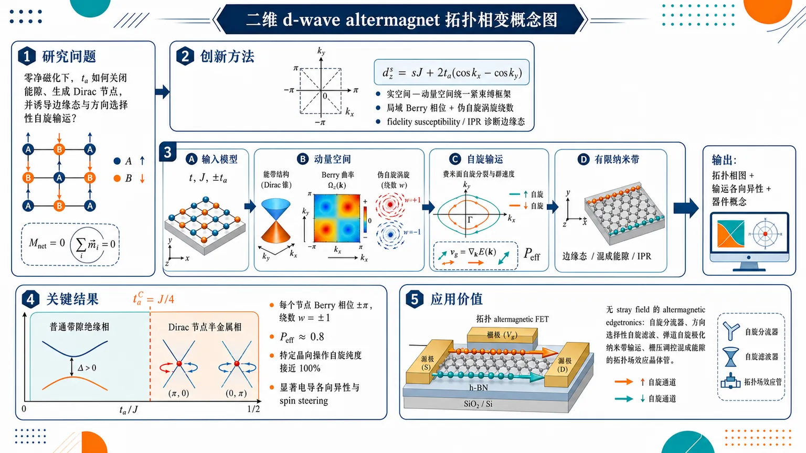
研究问题二维 d-wave altermagnet 在零净磁化条件下如何发生拓扑相变：altermagnetic 次近邻跃迁 tₐ 何时关闭能隙、生成 Dirac 节点，并进一步在实空间形成边缘态和方向选择性自旋输运。创新方法构建统一的实空间—动量空间紧束缚框架：用 d-wave 质量项 d_z^s=sJ+2tₐ₍cos kₓ−cos k_y) 捕捉无 SOC 自旋分裂；用局域 Berry 相位、伪自旋涡旋绕数和有限纳米带的 fidelity susceptibility / IPR 替代单一全局 Chern 数，诊断 gapless 节点拓扑与边缘态。工作流程输入二维 A/B 子晶格 d-wave altermagnet 模型，包含最近邻跃迁 t、交错交换场 J、正负交替的次近邻跃迁 ±tₐ；先在动量空间求能带、能隙关闭条件、Dirac 点位置、Berry 曲率和伪自旋纹理；再计算 Fermi 面自旋分裂、有效极化 Pₑff 与群速度分布；最后转到有限纳米带，分析边缘态、混成能隙、保真度敏感度和 IPR，输出拓扑相图、输运各向异性和器件概念。关键结果临界点精确为 tₐ^C=J/4：低于该值为普通带隙绝缘相，高于该值能隙关闭并进入 Dirac 节点半金属相；每个节点携带 Berry 相位 ±π 和绕数 w=±1，伪自旋纹理呈红色 Dirac 点周围的成对涡旋；拓扑区有效自旋极化 Pₑff 接近 0.8，沿特定晶向可获得接近 100% 的操作自旋纯度，并产生显著电导各向异性和自旋 steering。应用价值为无 stray field 的 altermagnetic edgetronics 提供理论设计图：利用零净磁化但强动量依赖自旋分裂的边缘通道，实现自旋分流器、方向选择性自旋滤波、弹道自旋极化纳米带输运，以及可由栅压控制混成能隙的拓扑 altermagnetic 场效应晶体管。第一部分：核心概览 (Overview)
二维 d-wave altermagnet 的拓扑相变、动量空间节点拓扑、实空间边缘态与输运各向异性被统一到同一紧束缚框架中。核心贡献在于把临界跃迁 (tₐ^C=J/4)、Dirac 节点、Berry 相位、伪自旋绕数、有效自旋极化、速度分布与有限纳米带信息论标记联系起来，为无净磁化但强自旋分裂材料中的 edgetronics、自旋分流器与拓扑场效应晶体管提供理论基础。
---
第二部分：结构化快速回顾
《Real and momentum space analysis of topological phases in 2D d-wave altermagnets》（None，）
背景
Altermagnetism 作为铁磁与反铁磁之外的第三类磁序，兼具反铁磁的零净磁化与铁磁式的大动量依赖自旋分裂。二维 d-wave altermagnets 提供研究拓扑节点、边缘态与自旋输运的最小平台。
方法
采用二维紧束缚 Hamiltonian：最近邻跃迁 (t)、交错交换场 (J)、具有 d-wave 对称性的次近邻 altermagnetic 跃迁 (tₐ)。动量空间分析能带、Dirac 点、Berry 曲率与伪自旋纹理；实空间与纳米带分析边缘态、保真度敏感度和 IPR。
结果
能隙在 (tₐ^C=J/4) 关闭，之后进入带有 Dirac 节点的拓扑半金属相。节点携带局域 Berry 相位 (±π) 与绕数 (w=±1)。有效极化 (Pₑff) 在拓扑区接近 0.8，显示强可用自旋纯度。
讨论
拓扑特征不依赖全局 Chern 数，而由局域节点拓扑与有限体系信息论指标刻画。群速度与自旋分裂锁定到晶体方向，导致巨大的电导各向异性与自旋依赖 steering。
局限
当前模型忽略 Hubbard 相互作用与 SOC；真实材料如 RuO(₂)、MnTe 的磁基态与 altermagnetic splitting 仍有争议。所用参数 (J=t) 主要为示意性强耦合选择。
结论
二维 d-wave altermagnets 可在零净磁化条件下实现强方向选择性自旋输运，并可通过有限纳米带边缘态与混成能隙构建可栅控拓扑自旋器件。
---
第三部分：逐章节冷凝解析
Abstract
- Unified real- and momentum-space framework
研究建立了二维 d-wave altermagnets 中拓扑相的动量空间与实空间联合分析框架，直接覆盖 bulk Dirac 节点、Berry 曲率、边缘态、输运各向异性与器件概念。摘要明确指出：*"This study provides a comprehensive real- and momentum-space analysis of topological phases in two-dimensional d-wave altermagnets."* 该框架的对象不是普通反铁磁或铁磁，而是兼具零净磁化和强动量依赖自旋分裂的 altermagnetic phase。
- Critical hopping-driven topological phase transition
拓扑相变由次近邻 altermagnetic 跃迁强度 (tₐ) 控制，临界点为 (tₐ^C)；在正文中进一步给出精确值 (tₐ^C=J/4)。摘要表述为：*"By employing a tight-binding Hamiltonian, we characterize the topological phase transition occurring at a critical intra-sublattice hopping strength (tₐ^C)."* 这意味着相变不是由 SOC、外磁场或相互作用驱动，而是由晶格对称性允许的 intra-sublattice hopping anisotropy 驱动。
- Dirac nodal points and Berry curvature singularities
拓扑相中出现 Dirac nodal points，并伴随 Berry curvature singularities；动量空间拓扑由节点附近的奇异 Berry 曲率和伪自旋绕转刻画。摘要直接写道：*"We examine the emergence of Dirac nodal points and the resulting Berry curvature singularities, supported by a visual analysis of pseudospin texture winding."* 这说明核心拓扑不表现为全局 Chern 绝缘体，而表现为节点半金属局域拓扑。
- Spin splitting and spin-dependent steering
研究不仅关注能带拓扑，也计算 spin splitting、effective altermagnetic strength 与 Fermi 面速度分布，得到巨大的电导各向异性和自旋依赖 steering。摘要给出：*"Crucially, we analize spin splitting, effective altermagnetic strength, and investigate the transport implications of these phases, uncovering giant conductivity anisotropy and spin-dependent “steering” effects driven by group velocity distribution across the Fermi surface."* 这里的 steering 指不同自旋电子沿不同晶向优先生传输。
- Information-theoretic topological diagnostics
有限体系中平移对称性被破坏，传统 Chern 数不再直接适用，因此引入 fidelity-susceptibility 与 inverse participation ratio。摘要强调：*"Beyond bulk properties, we analyze the edge state topology in ribbon geometries through the lens of information-theoretic markers like fidelity-susceptibility and inverse participation ratio, offering a robust alternative to traditional Chern number calculations, without relying on translational symmetry."* 这是从 bulk 拓扑分类走向 finite-size real-space markers 的关键方法转向。
- Hybridization gap and nanoribbon FET proposal
超窄纳米带中相对边缘态混成打开可控能隙，并被用于提出 topological altermagnetic field-effect transistor。摘要中写道：*"Our results demonstrate that the hybridization of edge states in ultra-narrow nanoribbons opens a controllable energy gap, a feature we exploit to propose a novel topological altermagnetic field-effect transistor design where ballistic and spatially spin-polarized transport can be electrostatically gated."* 这将基础拓扑特征直接连接到可栅控弹道自旋输运器件。
- Edgetronics as device-level direction
研究最终定位于 altermagnetic edgetronics，即利用拓扑边缘态进行高速自旋逻辑。摘要总结为：*"This work establishes a theoretical and information-theoretic framework for “edgetronics” in altermagnetic materials, paving the way for next-generation, high-speed spintronic and “spin-splitter” logic devices and architectures."* 关键应用对象包括 spintronic devices、spin-splitter logic 与 nanoribbon FET。
---
I Introduction
- Altermagnetism as a third magnetic branch
磁序传统二分法由 ferromagnetism 与 antiferromagnetism 构成；前者具有平行自旋排列和宏观净磁化，后者反平行自旋抵消净磁矩。引言开篇明确区分：*"ferromagnetism (FM), characterized by parallel spin alignment and a net macroscopic magnetization, and antiferromagnetism (AFM), where antiparallel spins cancel each other out, resulting in a zero net magnetic moment."* Altermagnetism 被定位为第三分支，*"altermagnetism (AM) has emerged as a “new punch line” (a third branch) in fundamental magnetism"*，其学科地位是对传统 FM/AFM 二分法的突破。
- Crystal-rotation-connected opposite sublattices
AM 的关键对称性不是传统 AFM 中的平移或反演连接，而是相反磁性子晶格由晶体旋转连接。引言写道：*"certain collinear magnets possess a unique symmetry where opposite magnetic sublattices are connected by crystal rotations rather than the translations or inversions typical of conventional AFMs."* 这种结构产生 nonrelativistic spin and crystal rotation symmetry，同时允许零净磁化与大动量依赖自旋分裂：*"This “nonrelativistic spin and crystal rotation symmetry” results in a vanishing net magnetization (like an AFM) but allows for large, momentum-dependent spin splitting in the electronic bands (like a FM), even without considering spin-orbit coupling."*
- Momentum-space Kramers degeneracy lifting
AM 最显著实验特征是动量空间 Kramers spin degeneracy lifting。引言指出：*"the most striking signature of an AM is the Kramers spin degeneracy lifting in momentum space, experimentally confirmed in [4]."* 常规 AFM 中，时间反演与反演联合保护自旋上下能带简并；AM 打破此简并：*"Traditional AFMs maintain degenerate spin-up and spin-down bands due to the combination of time-reversal and inversion symmetry, whereas AMs break this degeneracy."*
- Spintronics advantage without stray fields
AM 在自旋电子学中的价值来自零净磁化与强自旋极化的兼容。引言概括为：*"AMs combine the best of both worlds."* 传统 FM 产生 stray fields 且动力学较慢，AFM 避免 stray fields 但能带通常非极化；AM 打破这种权衡：*"AMs break this trade-off."* 具体而言，AM 可像 FM 一样提供自旋极化输运，同时像 AFM 一样保持磁稳定性。
- d-wave spin filter effect
AM 自旋极化与电子速度方向绑定，因此可作为速度选择性 spin filter。引言直接给出二维 (dₓ^₂₋y^₂)-wave AM 的方向性图像：*"in a (dₓ²-y²)-wave AM, electrons traveling along the (x)-axis could have mostly spin up, while those along the (y)-axis could have mostly spin down."* 这为后续群速度分布、电导各向异性和 spin steering 奠定物理基础。
- Relation to recent bulk minimal-model classification
研究建立在 Roig 等对 altermagnetism bulk minimal models 的空间群分类之上。引言写道：*"Recently, an exhaustive classification of bulk minimal models for altermagnetism across various space groups was established by Roig et al. [6]."* 当前工作的差异在于显式破坏平移对称性，研究有限纳米带中的实空间边缘态：*"our study explicitly breaks translational symmetry to investigate the resulting topological phase transitions and the real-space emergence of edge states in nanoribbon geometries."* 因而必须补充 edge state localization、hybridization gap、fidelity-susceptibility 等 finite-size markers。
- Experimental context and material debate
MnTe 与 RuO(₂) 被列为关键实验体系。引言指出：*"research on MnTe using angle-resolved photoemission spectroscopy, provided direct experimental confirmation of AM band splitting"*；RuO(₂) 则通过 Crystal Hall Effect 成为金属体系测试平台：*"ruthenium dioxide (RuO(₂)) has served as a critical test bench."* 同时，真实材料磁基态仍有争议：*"their exact magnetic ground states and the presence of altermagnetic splitting are currently subjects of active experimental and theoretical debate."*
- Minimal model as clean theoretical framework
模型目标是捕捉 symmorphic tetragonal d-wave altermagnetic phases 的典型拓扑特征，而非拟合某个材料。引言写道：*"Our minimal tight-binding model is designed to capture the characteristic topological features of symmorphic tetragonal (d)-wave altermagnetic phases (such as those compatible with Space Group 123), providing a clean theoretical framework to study finite-size effects with information-theoretic tools."*
- Cold-atom realization route
冷原子光晶格被视为 AM 实现与 Hubbard 物理模拟的替代平台。引言表述为：*"Cold atoms trapped in optical lattices represent an alternative route for AM realization."* 具体模型是可容纳 altermagnetic states 的二维改造 Hubbard 模型：*"a two-dimensional version of the Hubbard model suitably modified for hosting altermagnetic states that can be simulated via nowadays available cold-atom technology."*
- Device motivations: GMR, MTJ, SOT-MRAM, SST
AM 有望用于 giant magnetoresistance、磁隧道结和存储器。引言指出：*"Prospects in giant magnetoresistance is also promising because AMs allow the creation of magnetic tunnel junctions due to massive changes in resistance depending on the relative orientation of two AM layers."* 传统 SOT-MRAM 依赖重金属 spin-Hall effect；AM 提供 Spin-Splitter Torque：*"AMs offer a newly discovered mechanism: the Spin-Splitter Torque (SST)."* RuO(₂) 实验证明该 intrinsic torque 高效：*"Recent experiments in RuO(₂) have demonstrated that this intrinsic torque is highly efficient."*
- Article roadmap and conceptual aim
目标是深入理解 AM 拓扑相变中的谱与波函数内部结构。引言写道：*"Our goal is to delve deeper into the internal structure of the spectrum and wave functions to better understand the nature of the topological phase transition (TPT) in AMs."* 章节安排包括模型、Dirac 点与 Berry 相位、spin splitting 与 conductivity anisotropy、fidelity-susceptibility、实空间 DOS、nanoribbon hybridization gap、FET、IPR 与结论。
---
II (d)-wave Altermagnet Lattice Structure and Hamiltonian Model
- Minimal tight-binding laboratory
二维 d-wave AM 被建模为可控紧束缚理论实验室，用于研究 exchange splitting 与 anisotropic hopping 的相互作用。章节开头写道：*"We start defining a minimal tight-binding Hamiltonian that captures the essential symmetry of (d)-wave altermagnetism."* 该模型的定位是：*"This model serves as a controllable theoretical laboratory ... to investigate the interplay between exchange splitting and anisotropic hopping."*
- Two-sublattice antiferromagnetic background
实空间晶格由 A/B 子晶格 构成，磁矩相反：A 为 (-m)，B 为 (m)。原文描述为：*"The sublattice (A) (blue) and sublattice (B) (red) possess opposite magnetic moments (-m) and (m) represented by down (downarrow) and up (p̆arrow) white arrows."* 因此 A/B 对自旋 (s=±1) 的 itinerant electrons 施加相反交换场：*"The sublattices (A) and (B) then act as an antiferromagnet, exerting opposite exchange fields on the spin (s=±1) itinerant electrons."*
- Exchange energy from Hund coupling
强 onsite exchange interaction 使 itinerant electron spin 与局域磁矩对齐，以降低交换能。原文写道：*"Due to the strong on-site exchange interaction (Hund’s coupling), an itinerant electron spin aligns with the local magnetic moment to minimize its exchange energy."* Hamiltonian 中 A/B 子晶格的 staggered exchange potential 为 (+sJ) 与 (-sJ)，其中 (J) 是 exchange field strength：*"this results in a staggered exchange potential energy of (+sJ) and (-sJ) for (A) and (B) type sublattices, respectively."*
- Nearest-neighbor and altermagnetic next-nearest-neighbor hopping
最近邻 A-B 跃迁为 (t)；altermagnetic 次近邻跃迁为 (+tₐ) 与 (-tₐ)。原文图示说明：*"The gray lines represent nearest-neighbor (NN) hopping (t) between (A) and (B) sites, while the yellow and green lines represent the characteristic altermagnetic next-nearest-neighbor (NNN) hopping amplitudes (+tₐ) and (-tₐ), respectively."*
- Bloch Hamiltonian and pseudospin field
动量空间 Hamiltonian 写作 (Hₛ₍ₖ₎₌dₛ₍ₖ₎ḑotboldsymbolτ)，其中 (boldsymbolτ) 作用于 lattice pseudospin sector ((A,B))。原文给出：*"The Bloch Hamiltonian for spin (s) electrons in momentum space adopts the form (Hₛ₍bmk)=bmdₛ₍bmk)ḑotbmτ), where the three-vector (bmdₛ₌₍dₓ^s,d_y^s,d_z^s)) plays the role of an “effective Zeeman field in pseudospin space”."*
- Nearest-neighbor term yields real PT-symmetric Hamiltonian
最近邻项贡献 (dₓ^sτₓ₊d_y^sτ_y)，对四个最近邻 (boldsymbolδ=a(±1/2,±1/2))，有
[
d_y^s=0,qquad dₓ^s(k)=4to̧s(kₓ/2)o̧s(k_y/2).
]
原文强调：*"since (d_y^s=0), the Bloch Hamiltonian (Hₛ₍bmk)) is real and PT symmetric."* 这对 Berry 曲率计算不方便，因此后续使用规范等价的复数形式。
- Gauge-equivalent complex hopping convention
为了 Berry curvature 与实空间数值计算，采用等价相位 (φ(k)=(kₓ₊ₖ_y)/2)：
[
dₓ^s-id_y^s=4to̧s(kₓ/2)o̧s(k_y/2)e⁻ⁱφ⁽k⁾.
]
原文说明：*"we also use the unitarily/gauge equivalent configuration"*，且该相位 *"does not change the Hamiltonian spectrum."*
- Choice of units
能量以 (t) 为单位，长度以晶格常数 (a) 为单位，实际计算中设 (t=1,a=1)。原文写道：*"We shall measure energy in hopping (t) units (eV scale) and length in lattice constant (a) units (nm scale), to maintain generality."* 又进一步说明：*"In practical calculations this means to set (t=1,a=1)."*
- d-wave altermagnetic mass term
次近邻 AM 跃迁与交换场共同贡献 (d_z^sτ_z)：
[
d_z^s(k)=sJ+2tₐ₍ₒ̧s kₓ₋ₒ̧s k_y).
]
原文公式为：*"the (d_z^sτ_z) Hamiltonian part reduces to (d_z^s(bmk)=sJ+2tₐ₍ₒ̧s(kₓ₎₋ₒ̧s(k_y)))."* 其中 (o̧s kₓ₋ₒ̧s k_y) 是 (dₓ^₂₋y^₂)-wave form factor。
- C4 rotation enforces sublattice hopping exchange
A/B 子晶格由 (C₄) 旋转连接，因此 A 的 (tₓ,t_y) 环境旋转后映射到 B。原文写道：*"the specific Wyckoff positions occupied by magnetic atoms are connected by a (C₄) rotation."* 因此：*"Due to the (C₄) rotation symmetry connecting the sublattices, sublattice (B) must have hoppings (t_y) (along (x)) and (tₓ) (along (y))."*
- Isolation of pure altermagnetic physics
选择 (tₓ₌₋ₜ_y=tₐ) 是为了去掉 isotropic spin-degenerate background，只保留 d-wave splitting。原文明确说：*"We shall chose (tₓ₌₋ₜ_y=tₐ) merely to set the isotropic, spin-degenerate background to zero, allowing us to focus entirely on the (d)-wave splitting term."* 拓扑只需要 (tₓ≠ t_y)：*"the topology only depends on ((tₓ₋ₜ_y)≠0)."*
- Robustness of Dirac topology under anisotropic hopping
只要 (tₓ≠ t_y)，(o̧s kₓ₋ₒ̧s k_y) 结构保留，Dirac dispersion 与拓扑结论稳健。原文写道：*"as long as (tₓ≠ t_y), the (d)-wave form factor (sim(o̧s kₓ₋ₒ̧s k_y)) perfectly survives, and the topological conclusions, including the existence of the Dirac dispersions, remain entirely robust."*
- Connection to d-orbital symmetry and rotated d-wave forms
AM 项低动量展开在旋转角 (β) 下给出
[
2kₓₖ_ysin(2β)+(kₓ²⁻k_y²⁾o̧s(2β).
]
(β=0) 对应 (dₓ^₂₋y^₂)，(β=π/4) 对应 (dₓy)。原文说明：*"The cases (β=0) and (β=π/4) are referred in the literature to as (dₓ²-y²)- and (dₓy)-wave AM, respectively."*
- Bulk equivalence but edge dependence on cut direction
bulk 中 (dₓy) 与 (dₓ^₂₋y^₂) 只是参考系旋转，但边缘物理随 ribbon cut 强烈变化。原文强调：*"While the bulk is identical for (dₓy) and (dₓ²-y²) configurations, the edge physics is drastically different depending on whether the ribbon is cut along [100] ... or [110]."* 后续 FET 设计依赖 [110] cut 的 spin-splitter 效应。
- SOC left out and postponed
当前模型保持 (d_y^s=0)，从而保留特定自旋对称性；引入 Rashba 或 Dresselhaus SOC 会破坏这些对称性并混合边缘通道。原文写道：*"the introduction of Rashba or Dresselhaus spin-orbit coupling (SOC) in experimental setups would break these symmetries, potentially canting the spin texture and mixing the spin-polarized edge channels."* SOC 后果留待未来研究：*"The interesting consequences of SOC are left for future studies."*
- Eigenvalues and eigenstates
Bloch Hamiltonian 的能带为
[
Eₛ^±=±|dₛ|,
]
两分量本征态为
[
|ψ_±^sångle=
beginpmatrix
fracd_z^s±|dₛ|dₓ^s+id_y^s
1
endpmatrix.
]
原文写道：*"The Bloch Hamiltonian (Hₛ₌bmdₛḑotbmτ) eigenvalues [conduction (+) and valence (-) energy bands] and eigenstates (two-spinors) are simply as follows."*
- Numerical parameter choice and material scale
计算采用 (J=t) 作为示意强耦合参数。原文说明：*"We shall fix (J=t) as an illustrative case (rather than a material-specific one) for numerical calculations along the paper."* 在 (Γ) 点能量为
[
Eₛ^±(0,0)simeq4.12
]
原文写道：*"which gives (Eₛ^±(0,0)simeq4.12) in (t) units."* 与材料尺度比较，KRu(₄)O(₈) DFT 拟合参数为 (t=0.1,J=0.2,tₐ₌₀.075)：*"Reference [2] ... fits the DFT bands of KRu(₄)O(₈) to (t=0.1,J=0.2) and (tₐ₌₀.075)."*
- Strong exchange relevance to RuO2-scale splitting
虽然 (J=t) 是强耦合，但与候选 AM 中 eV 量级自旋分裂同阶。原文说明：*"while (J=t) means “strong coupling”, it is the correct order of magnitude to reflect the strong exchange splitting observed in candidate altermagnetic materials like RuO(₂), where the spin splitting reaches magnitudes of (sim1) eV."*
- Band gap and critical point
当 (tₐłe J/4) 时，能隙为
[
E_g=2(J-4tₐ₎.
]
原文给出：*"For (tₐłeq J/4) ... give a band gap of (E_g=ECBM-EVBM=2(J-4tₐ₎)."* 能隙在
[
tₐ^C=J/4
]
关闭：*"The topological AM structure around the critical point, (tₐ^C=J/4), where the gap closes, (E_g=0), is analyzed in the next section."*
---
III Nodal/Dirac Points and Berry Phase Analysis
- Bulk nodal topology as benchmark for real-space markers
本节先建立无限平移对称体系的标准 bulk topological baseline，包括 Dirac 节点、Berry 相位与绕数。原文写道：*"we review the standard momentum-space topological properties of the bulk (d)-wave altermagnetic phase."* 同时指出这些指标在严格有限纳米带中可能不可定义：*"they can become ill-defined or inaccessible in realistic, strictly confined nanoribbon geometries where translation symmetry is broken."* 因此后续 real-space fidelity susceptibility 与 IPR 是核心替代方案。
- Gap closing conditions
能隙 (E_g=2|dₛ|) 仅在
[
dₓ^s=0,qquad d_z^s=0
]
时关闭。原文明确写道：*"The energy gap (E_g=2|bmdₛ|) closes only when (dₓ^s=0=d_z^s)."* 最近邻 off-diagonal 项为零的条件是
[
kₓ₌±πquad orquad k_y=±π.
]
原文写道：*"which defines the nodal lines."*
- Dirac point positions for spin down
对 (k_y=±π)、(s=-1)，满足 (d_z^s=0) 后得到
[
kₓ₌±arccosłeft(fracJ2tₐ-1i̊ght)equiv± k_D.
]
原文写道：*"which defines the Dirac points (bmk_D^±=(± k_D,-π)) [and equivalent ((± k_D,π))] for (tₐ>tₐ^C) and (s=-1)."* 这表明 Dirac 点只在拓扑区 (tₐ>J/4) 出现。
- Dirac point positions for spin up
对 (kₓ₌±π)、(s=1)，Dirac 点为
[
k_Dprⁱme±=(-π,± k_D)
]
及等价 ((π,± k_D))。原文写道：*"For (kₓ₌±π) and (s=1), the Dirac points are (bmk_Dprⁱme±=(-π,± k_D)) [and the equivalent ((π,± k_D))]."*
- Spin-momentum symmetry of the spectrum
图 2 采用 (J=1,tₐ₌₀.5)，即 (tₐ>tₐ^C=0.25)，展示拓扑相中的 conduction bands。原文图注给出：*"Model parameters (J=1,tₐ₌₀.5) (NN hopping (t) and lattice constant (a) units)."* 能谱在联合变换 (kₓłeftrightarrow k_y)、(p̆arrowłeftrightarrowdownarrow) 下等价：*"The Hamiltonian spectrum is equivalent under the combined exchange of (kₓłeftrightarrow k_y) and (p̆arrowłeftrightarrowdownarrow)."*
- Edge-state curves and edge crossing point
超过临界点后边缘态在 Dirac 点关闭 gap。原文写道：*"Edge states develop above the critical point (tₐ^C), closing the gap at the Dirac points (± k_D)."* 图 2(b) 中粗虚线对应 (E_downarrow^±(kₓ,-π)) 与 (Eₚ̆arrow^±(kₓ,-k_D))。二者交叉于
[
k_E=øperatornamearcsecłeft[
frac2(t²⁺²tₐ²⁾Jtₐ₋₂ₜ²⁻⁴tₐ²
i̊ght],
]
原文说明：*"A crossing of both curves occurs at (k_E=...), where spin-up and spin-down edge Hamiltonian eigenstates degenerate."*
- Anisotropic Dirac dispersion and Fermi velocities
Dirac 点附近一阶展开给出各向异性线性色散。Fermi velocities 为
[
v₁₌sqrt(4tₐ₋J)J/hbar,qquad
v₂₌ₜsqrtJ/tₐ/hbar,qquad tₐ>tₐ^C.
]
原文公式写道：*"Defining the Fermi velocities (v₁₌...), (v₂₌...), the first-order energy dispersion expansions around the Dirac points..."* 对 (s=-1)：
[
E₋₁±=±hbarsqrtv₁²qₓ²⁺v₂²q_y²,
]
对 (s=1)：
[
E₁^±=±hbarsqrtv₂²qₓprⁱme²+v₁²q_yprⁱme².
]
原文强调：*"The anisotropy in the Fermi velocity leads to directional dependence in the transport."*
- Berry phase diagnosis of the TPT
为确认 trivial band insulator 到 topological phase 的转变，计算闭合路径 Berry phase：
[
øint_γ Aḑot dk.
]
原文写道：*"We want to ensure that a TPT from a band/trivial insulator (BI) to a topological insulator/metal (TI) phase exists when crossing the critical point (tₐ^C)."* Berry connection 为
[
A_±^s=-iłangleψ_±^s|nablaₖ|ψ_±^sångle.
]
- Need for complex gauge in Berry curvature
实 Hamiltonian 中 (d_y^s=0)，本征矢可取实，Berry potential 和 curvature 在非奇异点为零；节点处投影未定义。原文写道：*"For (d_y^s=0) the system possesses PT symmetry and we have real eigenvectors ... which give zero Berry potential and curvature, except for singularities at the nodal points."* 因此 Berry 曲率可视化使用复规范等价形式：*"therefore, for this analysis we resort to the complex (gauge equivalent) version."*
- Berry curvature formula and regularization
Berry curvature 使用
[
B_±^s(k)
=
±frac12
łeft(
fracpartialhatdₛpartial kₓ
×
fracpartialhatdₛpartial k_y
i̊ght)
ḑothatdₛ.
]
图 3(a) 中为可视化 Dirac-delta-like divergence，加入小质量正则项 (mapprox0.05t)。原文写道：*"a small regularizing gap parameter ((mapprox0.05t)) was introduced into the calculation for the plotted Figure 3(a)."* 该正则化不改变围道积分量子化：*"without altering the quantized (±π) Berry phase computed via contour integration."*
- Gapless nodal semimetal and absence of global Chern number
(tₐ>tₐ^C) 后 conduction 与 valence bands 在孤立点接触，因此体系是 gapless Dirac nodal semimetal，而非全局 gapped Chern insulator。原文写道：*"Because the conduction and valence bands touch at isolated points in the Brillouin zone for (tₐ>tₐ^C), the system is in a gapless Dirac nodal semimetal phase."* 因为无全局能隙：*"a global two-dimensional Chern number is undefined."*
- Local topological invariants: Berry phase and winding number
每个 Dirac 节点是 Berry curvature 的源或汇，携带 Berry phase (±π) 与 winding number (w=±1)。原文写道：*"each isolated Dirac node acts as a source or sink of Berry curvature, carrying a quantized Berry phase of (øint_γ bmAḑot dbmk=±π) (or equivalently, a nodal winding number (w=±1))."* 这说明拓扑保护是局域节点拓扑，而不是整数 Chern 数。
- Need for SOC or mass terms to obtain fully gapped topology
若要得到具有整数 spin Chern number 的全局 gapped topological phase，需要 SOC 或反演破缺质量项。原文写道：*"A transition to a fully gapped topological phase characterized by integer spin Chern numbers would require the inclusion of a bulk-gapping mechanism, such as spin-orbit coupling (SOC) or inversion-symmetry-breaking mass terms."*
- Pseudospin texture winding visualization
伪自旋纹理 (d) 的绕转提供 TPT 的直观图像。原文写道：*"We also visualize the TPT through the winding of the pseudospin texture (the three-vector (bmd)) around the nodal points."* 在 trivial phase (tₐ<tₐ^C)，流线平滑无涡旋：*"For (tₐ<tₐ^C), (bmd)-streams flow smoothly without swirls (zero winding number)."* 在 topological phase (tₐ>tₐ^C)，出现两个以 Dirac 点为中心的涡旋：*"one sees two distinct vortices centered at the Dirac (red) points."* 绕涡旋一周，向量旋转 (360ⁱ̧rc)，对应 spinor Berry phase (π)：*"the vector rotates by (360ⁱ̧rc), which corresponds to a Berry phase of (π) for the spinor wavefunction."*
---
IV Spin-splitting, Effective Altermagnetic Strength and Anisotropy of Conductivity.
- From topology to observable transport
本节从谱拓扑转向可观测输运，计算 Fermi 面上的 spin-splitting 与 group velocity distribution。原文写道：*"We move from spectral properties to observable transport signatures by calculating the spin-splitting and group-velocity distributions across the Fermi surface."* 目标是量化 AM 相对于普通 AFM 的可测差异：*"This allows us to quantify the giant conductivity anisotropy and spin-steering effects that distinguish altermagnets from conventional antiferromagnetic materials."*
- Identification of steering axes
d-wave phase 的关键输运特征是自旋极化电流可沿特定晶轴被 steering。原文写道：*"identifying the specific crystal axes along which spin-polarized currents can be most effectively steered."* 这与前文 (dₓ^₂₋y^₂) 中 x/y 方向自旋相反的图像一致。
---
IV.1 Spin splitting and effective altermagnetic strength
- Local rather than global spin polarization
常规 FM 的 spin polarization 是全局性质，而 AM 的净极化为零但动量局域极化高。原文写道：*"In a conventional FM, spin polarization is a global property: you have more (p̆arrow) electrons than (downarrow) electrons throughout the entire crystal."* 对 AM：*"the global polarization is zero, but the local polarization in momentum space is high."*
- Spin splitting definition
固定动量处自旋分裂定义为
[
Δ E(k)=|Eₚ̆arrow(k)-E_downarrow(k)|.
]
原文直接给出：*"The spin splitting at a fixed momentum (bmk) is defined as follows (Δ E(bmk)=|Eₚ̆ₐᵣᵣₒw(bmk)-Edₒwₙₐᵣᵣₒw(bmk)|)."*
- d-wave AM term controls splitting near X and Y
对小 (tₐ,J)，自旋分裂主要由
[
|d_z^s(k)|
]
控制。原文写道：*"For our specific (d)-wave AM, and for small (tₐ) and (J), this splitting is dominated by the AM term (|d_z^s(bmk)|)."* 在 (X=(π,0))、(Y=(0,π)) 处有
[
|d_z^s(0,π)|=|sJ+4tₐ|,qquad
|d_z^s(π,0)|=|sJ-4tₐ|.
]
- Maximum spin splitting and saturated ramp behavior
在 X/Y 点自旋分裂最大，表达式为
[
Δ E(X)=
begincases
8tₐ,& tₐ<tₐ^c,
2J,& tₐge tₐ^c.
endcases
]
原文写道：*"The spin splitting at those points is maximum with the value ... which exibits a “clip”, or saturated ramp, behavior as a function of (tₐ)."* 因此自旋分裂先随 (tₐ) 线性增加，达到临界后饱和到 (2J)。
- Dirac-point splitting equals saturated maximum
Dirac 点处自旋分裂为 (2J)，并在 (tₐge tₐ^C) 时等于 X 点最大分裂。原文写道：*"Spin splitting at the Dirac points is (2J), coinciding with maximum spin splitting at point (X) for (tₐ≥ tₐ^C)."*
- Band path for visualizing spin splitting
图 4(a) 沿闭合路径 (Γ→ X→ D→ M→Γ) 展示 spin splitting，参数为 (J=1,tₐ₌₀.5)。图注写道：*"Spin splitting along the closed trajectory (Γ→ X→ D→ M→Γ) in BZ for (J=1,tₐ₌₀.5) (in (t) units)."* 该路径对应第一 Brillouin 区中特定闭合轨迹。
- Local spin polarization at Fermi level
Fermi 能级处局域自旋极化定义为
[
P(k)=
frac{
Aₚ̆arrow(k,E_F)-A_downarrow(k,E_F)
}{
Aₚ̆arrow(k,E_F)+A_downarrow(k,E_F)
}.
]
原文写道：*"the local spin polarization at the Fermi level (E_F) is defined as follows."* 其中谱权重
[
Aₛ₍ₖ,E_F)approxδ_η(E_F-Eₛ₍ₖ₎₎.
]
- Lorentzian broadening and physical meaning
Dirac delta 用 Lorentzian 近似：
[
δ_η(x)=fracη/πx²⁺η².
]
计算采用 (η=0.1t)。原文写道：*"In our numerical evaluation of the spectral functions, we employ a finite broadening factor of (η=0.1t)."* 若 (tapprox1) eV，则对应 (sim100) meV 能量展宽和 (τapprox3.3) fs 准粒子寿命：*"this corresponds to a physical energy broadening of (sim100) meV (or a quasiparticle lifetime of (τapprox3.3) fs)."* 室温热展宽参考为 (k_BTapprox25) meV：*"where (k_BTapprox25) meV at room temperature."*
- Broadening chosen to preserve band separation
总带宽约 (4t)，exchange splitting 为 (J=1t)，因此 (η=0.1t) 不会抹除宏观能带分离。原文写道：*"because our total bandwidth is roughly (4t) and our exchange splitting is (J=1t), a broadening of (η=0.1t) correctly preserves the macroscopic band separation."* 同时该展宽能平滑解析 nodal crossing 附近谱权重，保证 (Pₑff) 计算稳健。
- Net polarization vanishes by AM symmetry
AM 对称性保证每个正极化 (k) 点都有一个旋转 (90ⁱ̧rc) 后的负极化点，因此总极化为零：
[
Pₙₑₜ=
frac14π²intBZP(k)d²k=0.
]
原文写道：*"Because of the AM symmetry, for every point (bmk) with positive polarization, there is a point (bmk') (rotated by (90ⁱ̧rc)) with equal and opposite negative polarization."* 这解释了无宏观磁化与无 stray fields：*"This is the reason why an altermagnet shows no macroscopic magnetization and produces no stray fields."*
- Effective polarization as usable AM strength
为度量可用于输运的 AM 强度，取局域极化绝对值平均：
[
Pₑff=
frac14π²intBZ|P(k)|d²k.
]
原文写道：*"The Effective Polarization (Pₑff) quantifies how much “usable” spin is available for transport by measuring the magnitude of the spin-splitting (tₐ), regardless of its sign."* 该指标不被正负动量极化抵消。
- Fermi energies used for (Pₑff)
图 4(b) 使用四个 Fermi 能级：
[
E_F(n)=nsqrtJ²⁺¹⁶t²/4,qquad n=0,1,2,3.
]
图注写道：*"P(ₑff) versus (tₐ) for four values of the Fermi energy (E_F(n)=nsqrtJ²⁺¹⁶t²/4,n=0,1,2,3)."* 参数为 (J=1)、(η=0.1)，临界点 (tₐ^C=J/4) 用竖线标出。
- Effective polarization behavior across the transition
(Pₑff) 随 (tₐ) 的变化类似最大 spin splitting 的 saturated ramp。原文写道：*"The behavior of the dependence of (Pₑff) on (tₐ) resembles that of the saturated ramp giving the maximum spin splitting (Δ E(X))."* 在 BI 相 (tₐ<J/4)，(Pₑff) 随 (tₐ) 增大；在拓扑相 (tₐ>J/4)，(Pₑff) 接近 0.8：*"For (tₐ>J/4) ... the effective polarization attains values near (0.8)."*
- Technological meaning of (Pₑffapprox0.8)
(Pₑff=0.8) 表示 Fermi 面上的电子平均约 80% spin-pure。原文写道：*"A value of (Pₑff=0.8) means that, on average, an electron at the FS is (80%) “spin-pure”."* 若器件只允许沿最大自旋分裂方向输运，则 operational polarization 可接近 100%，原文残句给出趋势：*"If we created a device that only allowed transport along the maximum spin-splitting (nodal) directions (X) and (Y) ... the operational polarization would approach (100%)."*
---
第四部分：深度理解与语言支持
1. 术语解析
- Altermagnetism
指一种共线磁序：宏观净磁化为零，但电子能带存在强动量依赖自旋分裂。它不是普通 AFM，因为普通 AFM 通常由 (PT) 或相关对称性保护自旋简并；也不是 FM，因为没有净磁化和 stray field。微妙处在于 spin splitting 不依赖 SOC，而由晶体旋转与自旋结构的非相对论对称性产生。
- d-wave altermagnetic splitting
指自旋分裂在动量空间具有 (o̧s kₓ₋ₒ̧s k_y) 或低能 (kₓ²⁻k_y²) 形式，类似原子 d 轨道角向节点结构。这里的 d-wave 不是超导配对对称性，而是 altermagnetic hopping / spin splitting 的角向对称性。
- Nodal Berry phase
指围绕单个 Dirac 节点的小闭合回路上 Berry connection 的积分，量子化为 (±π)。由于体系是 gapless nodal semimetal，不能定义全局二维 Chern 数；因此拓扑由每个节点的局域 Berry phase 或 winding number 表征。
- Pseudospin texture winding
Pseudospin 不是电子真实自旋，而是 A/B 子晶格两能级空间中的 Pauli 自由度。Hamiltonian 的 (d(k)) 向量决定 pseudospin 方向。绕 Dirac 点一圈时 (d) 向量旋转 (360ⁱ̧rc)，对应 spinor 波函数获得 (π) Berry phase。
- Effective polarization (Pₑff)
总自旋极化 (Pₙₑₜ) 在 AM 中因对称性为零，但输运中仍可利用局域 spin purity。因此取 (|P(k)|) 的 Brillouin 区平均，得到 (Pₑff)。它测量“可用自旋极化强度”，而非宏观磁化。
2. 疑难查证
- 为什么没有全局 Chern 数却仍然有拓扑？
Chern 数要求目标能带在整个 Brillouin 区与其他能带分离，即存在全局能隙。这里 (tₐ>J/4) 后 conduction band 与 valence band 在 Dirac 点相接，体系是 gapless nodal semimetal。全局 Chern 数因此不可定义。但每个 Dirac 点周围可以画一个不穿过节点的小闭合回路，只要该回路上能带不简并，就能定义 Berry phase。若 Berry phase 为 (±π)，节点不能被小扰动单独消除，只能与相反绕数节点湮灭或通过质量项开隙。这就是“局域拓扑”。
- 为什么 (tₐ^C=J/4) 是临界点？
能隙在 (X/Y) 相关高对称点由 (J) 与 altermagnetic hopping 竞争决定。质量项为 (d_z^s=sJ+2tₐ₍ₒ̧s kₓ₋ₒ̧s k_y))。在 (X=(π,0)) 或 (Y=(0,π))，(o̧s kₓ₋ₒ̧s k_y=±2)，所以 AM 项大小为 (4tₐ)。当 (4tₐ₌J) 时，交换场和 AM hopping 正好抵消，(d_z=0)。同时对应 nodal line 上 (dₓ₌₀)，于是 (|d|=0)，能隙关闭，得到 (tₐ^C=J/4)。
- 为什么 AM 有零净磁化但可产生强自旋输运？
在 FM 中，自旋极化在整个动量空间同号，所以有净磁化。在 AM 中，某个 (k) 点可能强 spin-up，而旋转 (90ⁱ̧rc) 的 (k') 点强 spin-down，二者全局抵消。因此宏观磁矩为零。但实际器件输运可以选择方向，例如沿 x 或 y 方向注入电流，只采样 Fermi 面上的部分速度方向。此时正负极化不再完全抵消，出现方向选择性自旋流。
- 为什么 [100] 与 [110] 边缘会有不同边缘物理？
bulk 中 (dₓ^₂₋y^₂) 与 (dₓy) 可通过 (45ⁱ̧rc) 坐标旋转互相转换；但有限 ribbon 的边界方向会选择特定投影动量。Dirac 节点投影到边界 Brillouin 区后，可能分离、重合或混成，导致边缘态结构明显不同。因此 bulk 等价不保证 edge equivalence。
---
第五部分：创新评估与关联
1. 创新性判断
- 从 bulk classification 推进到 finite-size real-space topology
过去 2–5 年 altermagnetism 的大量工作集中在材料分类、空间群对称性、DFT 能带自旋分裂和 bulk minimal models。这里的新意在于把二维 d-wave AM 放入有限纳米带与实空间框架，显式处理平移对称性破缺后的边缘态、混成 gap 与器件可控性。
- 用信息论标记替代传统拓扑数的有限体系诊断
对 gapless nodal semimetal 和 finite ribbon，传统 Chern 数并不总是合适。引入 fidelity-susceptibility 与 inverse participation ratio 作为 real-space topological markers，解决了有限尺寸、无平移对称性或非全局能隙情况下拓扑诊断困难的问题。
- 把 altermagnetic spin splitting 与输运 steering 定量连接
以 (Pₑff)、Fermi 面谱权重和 group velocity distribution 量化“无净磁化但可用自旋极化”。这比仅展示 spin-split bands 更进一步，因为它直接回答器件中能否获得高自旋纯度电流的问题。
- 提出拓扑 altermagnetic nanoribbon FET 概念
超窄纳米带边缘态混成打开可控 gap，并可通过静电栅控切换 ballistic spin-polarized transport。该思路把 altermagnetism、edge topology 与 FET 架构结合，面向 edgetronics 与 spin-splitter logic。
- 澄清 d-wave AM 中“拓扑相”不是普通 Chern 绝缘体
拓扑区本质是带有 (±π) 局域 Berry phase 的 gapless Dirac nodal semimetal，而非具有全局 Chern 数的完全开隙拓扑绝缘体。该区分避免了把节点拓扑误解为传统 Chern topology。
-
02
📊 含图深析
📄 摘要：结合DFT、通用MLIP、分子动力学和温度依赖有效势声子计算，研究单层1T-TaS2中CDW相的温度演化；方法针对大超胞与有限温采样的瓶颈，目标是更高效刻画强电子-声子耦合引起的结构不稳定性与相变过程。
💡 亮点：用通用MLIP把单层1T-TaS2的CDW温度演化带入可计算尺度。该路线把强耦合相变与有限温晶格动力学连接起来。
📖 展开分析 + 配图
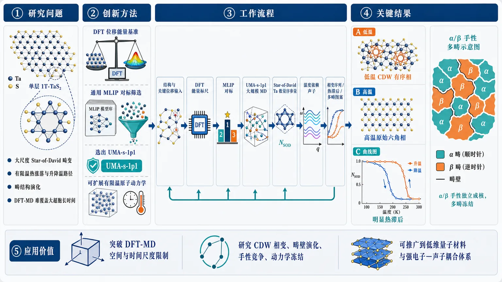
研究问题单层 1T-TaS₂ 的电荷密度波相变需要同时描述大尺度 Star-of-David 畸变、有限温热涨落、升降温路径和畴结构演化；传统第一性原理分子动力学受限于大超胞和长时间采样成本，难以直接捕捉从低温 CDW 有序相到高温原始六角相的完整动力学过程。创新方法将 DFT 位移能量基准测试与通用机器学习原子间势结合，筛选出可准确描述关键 CDW 畸变势能面的 UMA-s-1p1；再用该势函数开展大规模有限温分子动力学，并辅以温度依赖有效势声子计算，把原本昂贵的 CDW 相变模拟转化为可扩展的原子级动态图像。工作流程输入单层 1T-TaS₂ 结构与关键原子位移构型；先用 DFT 计算位移能量作为精度标尺；对多个通用 MLIP 进行对标并选出 UMA-s-1p1；使用该势函数进行升温—降温大规模 MD；在轨迹中识别属于 Star-of-David 簇的 Ta 原子数量作为序参量；结合温度依赖声子分析，输出相变序列、热滞后曲线和 α/β 手性多畴图案。关键结果模拟再现实验观察到的相变序列：低温 Ta 原子聚集成 Star-of-David 畸变簇，高温恢复为原始六角晶格；升温与降温曲线不重合，出现明显热滞后；冷却后体系没有回到单畴低温相，而是冻结成由 α 和 β 两种 CDW 手性独立成核形成的多畴状态，并在最低温下持续存在。应用价值证明经过严格 DFT 对标的通用机器学习势可以可靠进入传统 DFT-MD 难以覆盖的空间和时间尺度，用于研究 CDW 材料的有限温相变、畴壁演化、手性竞争和动力学冻结；该路线可推广到其他低维量子材料和强电子—声子耦合体系的相变模拟。第一部分：核心概览 (Overview)
单层 1T-TaS₂ 的 电荷密度波（CDW）相变长期受限于大超胞、长时间有限温采样与第一性原理分子动力学成本。该研究将 DFT、通用机器学习原子间势、分子动力学、温度依赖有效势声子计算结合，筛选出 UMA-s-1p1 势函数，并再现实验观察到的 Star-of-David 低温畸变结构向高温原始六角结构的相变序列、热滞后和冷却多畴冻结，为 CDW 材料有限温模拟提供可扩展路线。
---
第二部分：结构化快速回顾
《Charge-Density-Wave Phase Transitions in Monolayer 1T-TaS2 from Universal Machine Learning Molecular Dynamics》（None，）
背景
1T 过渡金属二硫族化物中的 CDW 相源于强 电子-声子耦合与晶格不稳定性。单层 1T-TaS₂ 的温度依赖结构演化需要大超胞和充分有限温采样，传统 第一性原理分子动力学（first-principles MD）计算代价过高。
方法
研究流程结合 DFT、通用机器学习原子间势（MLIPs）、分子动力学（MD）和 temperature-dependent effective potential phonon calculations。通过与 DFT displacement energies 对标，筛选适合后续有限温模拟的通用势函数，最终识别 UMA-s-1p1 具有足够精度。
结果
大规模 MD 再现了实验观察到的相变序列：低温 Star-of-David（SoD）畸变结构向高温 primitive hexagonal structure 转变。相变通过 归属于 SoD 的 Ta 原子数量进行量化。
讨论
升温—降温循环表现出 thermal hysteresis。冷却过程中，体系并非简单回到单畴低温相，而是冻结为 multi-domain state，其中 α 与 β CDW 手性独立成核并在最低温下持续存在。
局限
可用材料只包含摘要与 arXiv 元数据，缺少完整正文、图表、方法细节、模拟超胞尺寸、MD 时间步长、温度网格、统计误差、声子谱细节和章节结构。无法可靠提取逐章节全部参数。
结论
经过严格 DFT 对标的 通用 MLIPs 可用于大尺度、有限温 CDW 材料模拟，尤其适合捕捉 结构相变、热滞后、畴形成与手性竞争等超出常规 DFT-MD 尺度的现象。
---
第三部分：逐章节冷凝解析 (Section-by-Section Condensing)
Abstract
#### CDW phases originate from electron–phonon coupling and lattice instabilities
1T 过渡金属二硫族化物中的 CDW 相被归因于强 电子-声子耦合以及伴随出现的 晶格不稳定性。这一物理图像强调 CDW 不是单纯电子重排，而是电子自由度与晶格畸变耦合形成的集体现象。原文明确表述为：*"Charge-density-wave (CDW) phases in 1T transition-metal dichalcogenides arise from strong electron-phonon coupling and accompanying lattice instabilities."*
#### Conventional first-principles MD is computationally constrained
用传统 第一性原理分子动力学捕捉 温度依赖结构演化存在明显困难，核心瓶颈来自 large supercells 与 extensive finite-temperature sampling。这说明问题不是单个静态 DFT 计算无法描述 CDW，而是有限温相变需要足够大的空间尺度与统计采样。原文指出：*"Capturing their temperature-dependent structural evolution using conventional first-principles molecular dynamics (MD) remains challenging because of the large supercells and extensive finite-temperature sampling required."*
#### The computational framework combines DFT, universal MLIPs, MD, and finite-temperature phonons
研究采用多层级计算框架：DFT 用于基准验证，universal machine-learning interatomic potentials（MLIPs） 用于扩大模拟尺度，MD 用于有限温动力学采样，temperature-dependent effective potential phonon calculations 用于振动态表征。原文为：*"Here, we combine density functional theory (DFT), universal machine-learning interatomic potentials (MLIPs), MD, and temperature-dependent effective potential phonon calculations to investigate the structural and vibrational signatures of CDW transitions in monolayer 1T-TaS2."*
#### Benchmarking against DFT identifies UMA-s-1p1 as sufficiently accurate
通用机器学习势并非直接无条件使用，而是先与 DFT displacement energies 进行对标。筛选结果显示 UMA-s-1p1 universal machine learning potentials 对后续有限温模拟具有足够精度。关键证据来自摘要中的直接表述：*"Benchmarking against DFT displacement energies identifies UMA-s-1p1 universal machine learning potentials with sufficient accuracy for subsequent finite-temperature simulations."*
这一点具有方法学意义：通用势函数在复杂 CDW 材料中可用，但前提是经过与 DFT 位移能的定量校验。
#### Large-scale MD reproduces the experimental phase-transition sequence
大尺度 MD simulations 能够再现实验观察到的相变路径：低温 Star-of-David（SoD）distorted structure 转变为高温 primitive hexagonal structure。相变的结构指标是 number of Ta atoms attributed to SoDs，即通过属于 SoD 畸变团簇的 Ta 原子数量来量化 CDW 有序程度。原文表述为：*"Our results show that large-scale MD simulations reproduce the experimentally observed phase transition sequence from the low-temperature Star-of-David (SoD) distorted structure to the high-temperature primitive hexagonal structure, as quantified by the number of Ta atoms attributed to SoDs."*
#### Heating–cooling cycles show thermal hysteresis
升温与降温路径不重合，出现 thermal hysteresis。这通常意味着相变具有一阶相变特征、亚稳态、能垒或畴动力学效应。摘要中的证据为：*"Heating-cooling cycles exhibit thermal hysteresis."*
在 CDW 系统中，热滞后不仅是温度响应滞后，还反映 晶格重构、畴壁运动、CDW 手性成核等过程可能存在动力学阻碍。
#### Cooling produces a frozen multi-domain state
降温后体系没有恢复为理想单畴 SoD 有序结构，而是冻结成 multi-domain state。在这一状态中，α 与 β CDW chiralities 独立成核，并一直保持到最低温。原文指出：*"upon cooling, the system freezes into a multi-domain state in which α and β CDW chiralities nucleate independently and persist to the lowest temperatures."*
该结果说明有限温路径会决定最终低温构型，低温 CDW 相具有明显的 历史依赖性和 畴结构记忆效应。
#### Carefully benchmarked universal MLIPs provide a scalable framework
经过基准验证的 universal MLIPs 可作为研究 CDW 材料有限温行为的可扩展框架。原文结论为：*"These findings demonstrate that carefully benchmarked universal MLIPs can provide a scalable framework for finite-temperature studies of CDW materials."*
关键限定词是 carefully benchmarked：可扩展性依赖于与 DFT 的严格比较，而非默认所有通用机器学习势都可靠。
---
第四部分：深度理解与语言支持 (Understanding & Nuance)
1. 术语解析
#### Charge-density wave (CDW)
Charge-density wave 指电子密度发生空间周期性调制，并常伴随晶格周期性畸变的有序态。在 1T-TaS₂ 中，CDW 不只是电子密度波，还和 Ta 原子位移形成的 Star-of-David 图案耦合。语境中的 CDW 重点是 结构—电子耦合相变，而非纯电子不稳定性。
#### Star-of-David (SoD) distorted structure
Star-of-David 是 1T-TaS₂ 低温 CDW 相中的典型 Ta 原子重构图案，多个 Ta 原子向中心收缩形成类似“大卫星”的簇状畸变。摘要中用 “number of Ta atoms attributed to SoDs” 量化该畸变，说明 SoD 数量或参与 SoD 的 Ta 原子比例被当作相变序参量。
#### Universal machine-learning interatomic potentials (MLIPs)
Universal MLIPs 指不专门只为某一个材料体系训练，而是在大规模材料数据上训练、可迁移到多种体系的机器学习原子间势。语境中的关键微妙点是：universal 不等于自动准确，因此需要 Benchmarking against DFT displacement energies。
#### Temperature-dependent effective potential phonon calculations
这一表达指在有限温下构建有效势能面，从而计算温度依赖声子性质。与 0 K 谐近似声子不同，它可以部分包含 非谐效应、热涨落和有限温结构软化/硬化信息。用于 CDW 材料时，特别适合追踪 软模、晶格不稳定性和相变相关振动态变化。
#### Thermal hysteresis
Thermal hysteresis 指升温和降温过程中结构序参量随温度变化的路径不同。它常见于存在能垒、亚稳态或一阶相变特征的系统。这里的热滞后与 冷却后多畴冻结相联系，说明相变动力学不仅由平衡自由能决定，也受成核与畴壁动力学控制。
---
2. 疑难查证
#### 为什么 CDW 相变需要大超胞？
CDW 本质上改变了晶格周期。以 1T-TaS₂ 为例，低温 SoD 相不是原始晶胞内的小位移，而是跨越多个原胞的周期性重构。若超胞太小，就无法容纳真实 CDW 周期、不同手性畴、畴壁以及成核过程。
因此，传统 DFT-MD 的难点不是算不出一个静态 SoD 结构，而是难以在足够大的体系中、足够长的时间内观察相变、畴形成和热滞后。
#### 为什么通用 MLIP 需要 DFT displacement energies 对标？
CDW 相变依赖非常细微的能量差：不同畸变构型、不同手性、不同畴壁结构之间可能能量接近。若 MLIP 对原子位移能量曲线误差较大，就可能错误预测相变温度、稳定相或畴结构。
用 DFT displacement energies 对标，相当于检查 MLIP 是否能在关键畸变方向上复现第一性原理势能面。这比只比较平衡结构能量更严格，因为 CDW 相变正是沿晶格不稳定模式发生的。
#### 为什么冷却后会形成 α/β 多畴，而不是恢复单一低温 SoD 相？
冷却过程中，局域区域可能先独立选择不同的 CDW chirality。一旦不同手性的畴同时成核，畴壁会形成。低温下原子迁移和畴壁重排变慢，体系可能无法跨越能垒重新组织成单畴结构，于是形成被冻结的 multi-domain state。
这类现象体现 动力学俘获（kinetic trapping）：最终结构不一定是全局最低自由能态，而可能是降温路径中被困住的亚稳态集合。
---
第五部分：创新评估与关联 (Synthesis & Novelty)
1. 创新性判断
#### 从静态或小尺度 CDW 描述推进到大尺度有限温动力学
过去数年内，CDW 材料研究常依赖 DFT 静态结构优化、声子软模分析、小超胞 AIMD或经验势模拟。瓶颈在于：CDW 相变涉及大尺度结构重构、畴形成、热滞后和手性竞争，常规 DFT-MD 难以覆盖所需空间与时间尺度。
该研究的创新点在于用经过 DFT 对标的 universal MLIP 执行大规模有限温 MD，从而直接追踪 SoD 到 primitive hexagonal structure 的相变过程。
#### 将通用机器学习势用于复杂 CDW 相变，并强调严格基准验证
通用 MLIP 的吸引力在于无需为每个体系重新训练专用势，但 CDW 材料对势能面精度极其敏感。该研究没有直接假设通用势可用，而是通过 DFT displacement energies 筛选，识别 UMA-s-1p1。
新颖性在于：把 universal MLIP 从一般结构动力学扩展到 强电子-声子耦合驱动的 CDW 相变问题，并提出“先基准验证、再大尺度模拟”的实用路线。
#### 捕捉热滞后与冷却诱导多畴冻结
许多传统计算更关注平衡相稳定性或相变前后的端点结构，而该研究解析了升温—降温路径差异：heating-cooling cycles exhibit thermal hysteresis，冷却后形成包含 α 和 β CDW chiralities 的多畴态。
这一点解决了前人难以处理的问题：有限温相变并非只由平衡结构决定，还受 成核、畴壁、手性选择、动力学冻结控制。
#### 用结构序参量量化相变
相变通过 number of Ta atoms attributed to SoDs 进行量化。该指标比单纯观察快照更可统计，也适合大规模 MD 轨迹分析。其创新性体现在将复杂 CDW 图案转化为可追踪的原子级序参量，使相变过程、热滞后和冷却路径依赖能够被系统比较。
#### 为 CDW 材料有限温模拟提供可扩展范式
核心贡献不是单一材料参数，而是方法范式：
DFT 基准 → 通用 MLIP 筛选 → 大尺度 MD → 温度依赖声子/结构分析 → 相变路径与畴动力学识别。
该路线可推广到其他 1T transition-metal dichalcogenides 和具有复杂晶格不稳定性的低维量子材料。
-
03
📄 摘要：提出量子原生的Transformer架构，针对模块算术、非阿贝尔群代数和系统组合泛化等离散规则学习问题，试图缓解经典连续空间网络难以锁定精确形式规则以及grokking不稳定的问题。
💡 亮点：通用量子Transformer瞄准的是精确规则学习，而不是普通拟合。其意义在于把离散逻辑泛化与量子架构结合起来。
📖 展开分析 + 配图
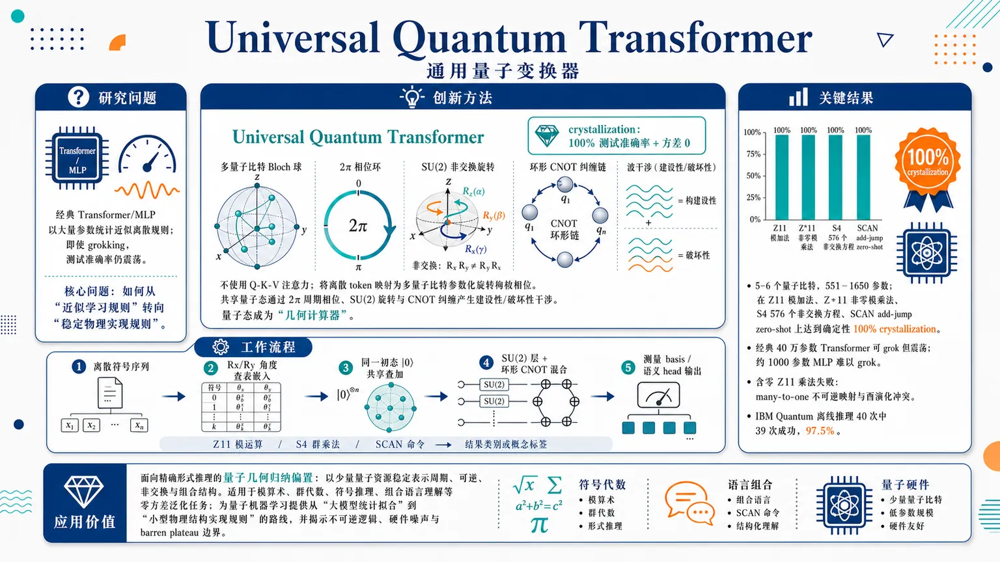
研究问题经典 Transformer/MLP 在模算术、非阿贝尔群乘法、SCAN 组合语言等离散形式规则上，常用大量参数做统计近似；即使出现 grokking，测试准确率仍像抖动的指针一样在高低之间震荡，无法证明规则被确定性锁定。核心问题是：如何让模型从“近似学习规则”变成“稳定物理实现规则”。创新方法提出 Universal Quantum Transformer：不使用传统 Query-Key-Value 注意力，而把离散 token 映射为多量子比特上的参数化旋转相位；多个 token 连续作用到同一共享量子态中，通过 2π 周期相位、SU(2) 非交换旋转、环形 CNOT 纠缠产生建设性/破坏性波干涉。Aha 点是：让量子态本身成为“几何计算器”，用物理相位干涉隐式计算 token 关系，并提出比 grokking 更严格的 crystallization——100% 测试准确率且之后方差为 0。工作流程输入离散符号序列，如两个模运算数、两个 S4 群元素或 SCAN 命令 token；每个 token 被查表为 Rx/Ry 旋转角并嵌入 5–6 个量子比特的 Bloch 球相位空间；所有 token 的 embedding unitary 依次作用到同一初态 |0⟩ 上形成共享叠加态；随后经过多层 SU(2) 单量子比特旋转和环形 CNOT 纠缠混合；最终测量 Hilbert 空间 basis state 或语义子空间 head，输出模加法结果、群乘法类别、动词/方向概念标签。关键结果UQT 用 5 或 6 个量子比特、551–1650 个参数，在 Z11 模加法、Z*11 非零模乘法、S4 的 576 个非交换 Cayley table 方程、SCAN add-jump zero-shot 组合泛化上达到确定性 100% crystallization；经典约 40 万参数 Transformer 可 grok 但持续震荡，约 1000 参数 MLP 甚至无法 grok。UQT 在含零 Z11 乘法失败，揭示 many-to-one 不可逆映射与酉演化冲突；IBM Quantum NISQ 硬件离线推理 40 次中 39 次成功，总成功率 97.5%。应用价值该研究展示一种面向精确形式推理的量子几何归纳偏置：用极少量量子资源稳定表示周期、可逆、非交换和组合结构，可用于模算术、群代数、符号推理、组合语言理解等需要零方差规则泛化的任务。其意义在于为未来量子机器学习提供从“大模型统计拟合”转向“小型物理结构实现规则”的路线，同时指出不可逆逻辑、硬件噪声和大规模 barren plateau 是后续关键边界。第一部分：核心概览 (Overview)
Universal Quantum Transformer（UQT）提出一种以量子相位嵌入与 SU(2) 波干涉为核心的量子原生架构，用少量量子比特和参数实现精确形式推理。相同量子注意力电路在 Z11 模加法、Z*11 模乘法、S4 非阿贝尔群乘法、SCAN “add jump” 语言组合泛化上达到确定性 100% 泛化，并定义比 grokking 更严格的 crystallization：测试准确率达到 100% 后方差严格为 0。相较约 40 万参数 Transformer 和约 1000 参数 MLP 的不稳定泛化，UQT 以 551–1650 参数展示结构性归纳偏置优势，并在 IBM NISQ 硬件上取得 97.5% 成功率。
---
第二部分：结构化快速回顾
《Universal Quantum Transformer》（None，）
背景
经典连续空间神经网络在离散形式规则上容易依赖记忆和统计近似，尤其面对模算术、非交换群代数、系统组合泛化时，即使出现 grokking，也常存在测试准确率震荡与非零方差。核心矛盾不是参数规模不足，而是欧氏连续几何与周期、非交换、组合结构之间的归纳偏置错配。
方法
UQT 将离散 token 映射为多量子比特上的参数化旋转角，通过连续施加 embedding unitary 将序列压入共享量子态，再用多层 SU(2) 单量子比特旋转 + 环形 CNOT entanglement 进行混合。架构不复制 classical Query-Key-Value attention，而依赖相位叠加、酉演化、波干涉隐式计算 token 间关系。
结果
5 或 6 个量子比特、551–1650 个参数即可在 Z11 加法、Z*11 乘法、S4 Cayley table、SCAN add-jump zero-shot 上实现 100% 确定性泛化。经典 Transformer 可 grok 但持续震荡；MLP 甚至无法 grok。UQT 在含零乘法 Z11 上失败，被解释为零乘法是 many-to-one 不可逆映射，与酉演化冲突。
讨论
UQT 的优势来自物理结构：2π 周期相位适配循环算术，SU(2) 非交换性适配非阿贝尔代数，量子叠加支持概念维度解耦与语言组合。IBM Quantum 上 40 次无误差缓解推理中 39 次成功，显示非仿真假象。
局限
实验规模较小；物理训练尚未完成，NISQ 噪声和深 CNOT 电路限制端到端硬件训练；大 Hilbert 空间下可能遭遇 barren plateau 梯度消失。零乘法失败也揭示纯酉框架不适合不可逆 many-to-one 逻辑。
结论
UQT 提供一种面向精确形式推理的量子几何归纳偏置：少量量子资源即可锁定离散规则，并达到比 grokking 更强的 crystallization。其价值在于从“近似学习规则”转向“物理实现规则”。
---
第三部分：逐章节冷凝解析 (Section-by-Section Condensing)
Abstract
Classical continuous networks struggle with exact formal rules
经典连续空间神经网络难以稳定锁定精确形式规则，包括数学中的模算术、非阿贝尔群代数，以及语言中的系统组合泛化。核心表述为：*"Classical continuous-space neural networks fundamentally struggle to lock into exact formal rules, whether mathematical, such as modular arithmetic and non-Abelian group algebra, or linguistic, such as systematic compositional generalization."*
这一问题并非简单准确率不足，而是离散逻辑规则与连续表示机制之间存在结构错配。
Massive scaling produces stochastic instability even after grokking
经典模型通常通过巨大参数规模近似离散规则，但即使经历 delayed generalization，即 grokking，仍会出现随机不稳定。关键判断为：*"To approximate these discrete logical rules, they often rely on massive parameter scaling, resulting in stochastic instability even after delayed generalization phenomena known as grokking."*
这里将 grokking 与最终稳定掌握规则区分开来：grokking 只是测试准确率延迟上升，不保证收敛后无震荡。
UQT is a quantum-native architecture based on phase embedding and SU(2) interference
UQT 被定义为一种量子原生计算架构，不翻译 classical neural mechanisms，而完全依赖参数化几何相位嵌入与 SU(2) 波干涉。原始表述为：*"Rather than translating classical neural mechanisms, our framework relies entirely on parameterized geometric phase embedding and SU(2) wave-interference."*
其学术创新点是将量子物理性质作为 universal inductive bias，用于精确代数和组合推理。
Identical circuit solves arithmetic, algebra, and linguistics with few qubits
相同 quantum attention circuit 在 5 或 6 个量子比特、551–1650 个可训练参数下，学习三类差异极大的形式系统：Z11 循环模算术、S4 非阿贝尔排列群、SCAN 语言组合泛化。关键数值为：*"operating on a highly compact 5 or 6 qubit substrate with only 551 to 1,650 trainable parameters"*，并且任务覆盖 *"cyclic modular arithmetic (Z11), non-Abelian algebra (the S4 permutation group), and systematic linguistic compositionality (the SCAN language)."*
Crystallization is stricter than grokking
UQT 的目标不是 delayed generalization，而是 crystallization：精确、确定性、零方差泛化。摘要明确写道：*"We define this stricter regime as crystallization: a step beyond the well-known phenomenon of grokking."*
这一概念将“能泛化”提升为“泛化后不再随机波动”。
NISQ deployment achieves 97.5% accuracy
UQT 被部署到 IBM Quantum NISQ 硬件，并达到 97.5% 准确率。原文证据为：*"Finally, we deploy the UQT on noisy intermediate-scale quantum (NISQ) hardware, achieving 97.5% accuracy on IBM Quantum computers."*
这使结果不只停留在 noiseless classical simulation，而具有物理硬件验证意义。
---
Introduction / Opening motivation
Attention models remain brittle on formal generalization
尽管 attention-based models 在 NLP 中表现强，但在循环算术、非阿贝尔群代数、系统组合性上仍脆弱，常在训练分布外的结构相同问题上失败。原文写道：*"their capacity for reasoning across cyclic arithmetic, non-Abelian group algebra, and systematic compositionality remains brittle, with models often failing to generalize on structurally identical problems outside their training distribution."*
关键不是测试样本“更难”，而是结构相同但组合未见。
Euclidean inductive bias is misaligned with periodic and non-commutative structure
标准架构处于无约束连续欧氏空间 Rn，其归纳偏置与周期性、非交换性、组合结构不匹配。核心句为：*"Standard architectures operating in unconstrained continuous Euclidean space (Rn) carry inductive biases misaligned with periodic, non-commutative, and compositional structure."*
这种错配不是理论不可表示，而是架构没有被设计成自然处理这些结构：*"not because such representations are theoretically impossible, but because they are not designed to handle such problems."*
Grokking may still leave approximate mathematics
经典模型在 algorithmic grokking 中先记忆、后泛化，但得到的往往仍是近似离散数学。原文强调：*"even when classical networks finally achieve this delayed generalization (i.e., grokking), they still merely approximate the discrete mathematics."*
因此，100% 测试准确率附近的震荡被视为规则没有被确定性锁定的证据。
Wave interference naturally encodes periodic formal systems
周期形式系统，尤其模算术，最自然的编码机制是相位空间中的波干涉。原文依据为：*"the discrete, periodic structure of formal systems such as modular arithmetic is most naturally encoded through wave interference in phase space."*
经典连续模型可以近似，但通常要依赖 massive over-parameterization：*"classical continuous-space models can only approximate through massive over-parameterization."*
Instability appears in both small MLPs and large Transformers
经典失败被定位为结构性而非参数量问题。基线覆盖约 1000 参数 MLP 和超过 400,000 参数 Transformer；原文写道：*"such oscillations can be observed at standard classical multi-layer perceptrons (MLPs) with ∼1,000 parameters as well as transformer structures with over 400,000 parameters."*
结论为：*"This suggests the deficiency is structural, not merely parametric."*
Quantum systems natively embody target regularities
形式系统的内在结构与量子系统匹配：循环算术对应相位 2π 周期性，群代数对应 SU(2) operator composition non-commutativity，语言对应顺序组合性。原文为：*"quantum phase angles are 2π-periodic, and SU(2) operator composition is non-commutative."*
这构成 UQT 的几何动机。
Existing quantum ML often treats rotations as generic approximators
既有 QML 通常把经典神经网络、核方法、attention 翻译成量子电路，或通过容错量子例程加速线性代数。批评点是：*"these conventional strategies treat quantum rotations as universal function approximators rather than as geometric structures deliberately aligned with the symmetries of the target formal system."*
UQT 的区别在于将量子相位周期性与算符非交换性作为任务结构归纳偏置。
UQT maps abstract symbols directly onto unitary operations
UQT 通过将抽象符号直接映射到参数化量子系统的酉操作来填补空白。原文表达为：*"mapping abstract symbols directly onto the unitary operations of a parameterized quantum system."*
统一机制为 quantum attention circuit：*"a single, unified topological modality, i.e., the quantum attention circuit, jointly embeds tokens into a shared superposition."*
---
UNIVERSAL QUANTUM TRANSFORMER
From grokking to crystallization
Grokking is delayed test generalization after memorization
Grokking 被形式化为训练准确率已达到 100% 后，测试准确率仍接近随机，直到更晚 epoch 突然上升。定义细节为：*"Let t denote the optimization epoch, and let Atrain(t) and Atest(t) denote the training and test accuracies at epoch t"*；记忆 epoch 满足 *"Atrain(tmem) = 100%"*；grokking 满足 *"Atest(t) remains near random chance until a much later epoch tgrok ≫ tmem, after which it rapidly increases toward 100%."*
Grokking does not imply exact rule recovery
Grokking 只是模型找到覆盖未见数据的统计决策边界，而不保证符号规则被精确恢复。原文明确区分：*"it does not distinguish between approximate statistical generalization and exact recovery of the underlying mathematical rule."*
经典 Transformer 在算法任务上的解可能只是：*"an approximate statistical representation rather than an exact symbolic or algebraic resolution."*
Persistent nonzero variance signals fragile generalization
即使 classical models 出现 grokking，仍可能持续震荡，表现为测试准确率方差非零。核心证据性定义为：*"persistent accuracy oscillations and nonzero test-accuracy variance, i.e., Var[Atest(t)] > 0."*
这为后续 crystallization 定义提供统计判据。
Crystallization requires 100% accuracy and zero variance forever after
Crystallization 被定义为比 grokking 更严格的泛化状态：在 tc ≥ tgrok 后，测试准确率为 100%，且之后所有 epoch 方差严格为 0。原文定义为：*"A strict regime of generalization that requires, but supersedes, grokking."*；形式条件为 *"Atest(tc) = 100%"* 和 *"Var[Atest(t)] = 0 for all t ≥ tc."*
Crystallization implies physical embodiment of target logic
与 classical grokking 的统计近似不同，crystallization 表示网络已经把目标逻辑结构稳定嵌入自身表示。原文强表述为：*"crystallization guarantees that the network has physically embodied the target logic."*
这是全篇最重要的概念转向：从“预测正确”转为“规则确定性内化”。
---
Quantum attention circuit
Tokens are encoded into shared multi-qubit quantum state
UQT 将输入 token 序列直接编码进共享多量子比特态，并通过 sequential unitary composition 让量子波干涉评估关系结构。原文写道：*"encodes input token sequences (discrete symbols) directly into a shared multi-qubit quantum state through sequential unitary composition."*
这替代了 classical Transformer 中显式 pairwise relevance 计算。
UQT does not use Query-Key-Value attention
Classical Transformer 使用 Query-Key-Value dot products；UQT 的机制物理上不同。原文对比为：*"classical Transformer architectures implement attention through explicit Query-Key-Value dot products"*，而 UQT 的 token 被映射为 *"physical rotation angles that parameterize unitary transformations."*
因此“attention”在此不是点积权重，而是量子态中相位与算符组合的全局关系计算。
Sequential unitaries implicitly encode operand interactions
S 个输入 token 对应的 unitary 从 U(θx1) 到 U(θxS) 连续施加，在显式 mixing 前完成。由于酉算符通过矩阵乘法组合，序列不是独立变换堆叠，而是 joint operation。关键引述为：*"this sequence does not merely stack independent transformations but produces a joint operation that encodes the interaction between operands implicitly in the geometry of the resulting quantum state."*
Wave function acts as geometric calculator
多量子比特波函数通过相对相位的建设性/破坏性干涉来编码操作数交互。原文表述为：*"The multi-qubit wave function therefore acts as a native geometric calculator for operand composition."*
其信息载体是：*"relative phases introduced by each operand interfere constructively or destructively."*
Mixing layer uses SU(2) rotations and cyclic CNOT ring
单层 mixing layer 包含对所有 N 个量子比特施加的参数化单量子比特 SU(2) Euler rotations，随后是全局循环 CNOT conveyor-belt ring。原文为：*"a single mixing layer Umix consists of parameterized single-qubit general SU(2) Euler rotations ... followed by a global, cyclic conveyor-belt ring of CNOT gates."*
该拓扑兼顾表达性与 NISQ 硬件效率。
Hardware-efficient topology avoids complex multi-qubit entanglers
由于 NISQ 硬件在复杂多量子比特纠缠操作上退相干严重，UQT 使用基本 2-qubit CNOT 连接逐步产生全局纠缠。证据为：*"NISQ hardware suffers severe decoherence when executing complex multi-qubit entangling operations"*，因此该拓扑 *"progressively generates global entanglement using only fundamental 2-qubit CNOT connections."*
Representation and reasoning are decoupled
UQT 将相位嵌入作为 representation，将量子干涉和 decoding作为 reasoning。原文为：*"representation (phase-based embedding) is cleanly decoupled from reasoning (quantum interference followed by decoding)."*
梯度优化的作用是让 circuit geometry 与目标规则自发对齐：*"organically aligns the circuit geometry with the target formal rules."*
Parameter count is compact and exact
UQT 参数量由 token embedding rotations 与 mixing layer 的 SU(2) 旋转角构成。公式为：*"the parameter count is exactly (V × Nemb × 4) + (L × N × 3)."*
实验中 N=5 或 N=6，参数量仅 551–1650，明显小于 classical models 的数十万权重。原文对比为：*"the UQT isolates the exact formal rules using a footprint of only a few hundred to a few thousand parameters."*
---
RESULTS
Crystallization in modular arithmetic
Three modular regimes test cyclic algebraic reasoning
UQT 被测试于三种代数 regime：Z11 加法、Z11 含零乘法、Z*11 非零乘法群。具体任务为：*"predict x1 + x2 (mod 11)"*，*"x1 × x2 (mod 11)"*，以及 *"multiplication restricted strictly to the bijective multiplicative group Z∗11 = 1, 2, . . . , 10."*
这三个任务区分了可逆与不可逆、加法与乘法、全域与群结构。
Modular arithmetic UQT uses 5 qubits and 551 parameters
模算术实验中 token space 映射到 Nemb=4 量子比特，mixing depth L=25，总寄存器 N=5。原文为：*"we mapped the token space across an Nemb = 4 qubit subspace and utilized a mixing depth of L = 25."*；参数为：*"Measuring the full 5-qubit register (N = 5), this architecture requires only 551 trainable parameters."*
Classical Transformer groks but does not crystallize
经典 Transformer 能在模算术上 delayed transition 到较高测试准确率，但收敛后严重震荡。原文指出：*"Although the classical models successfully grok the dataset, exhibiting a delayed transition in test accuracy long after reaching 100% training accuracy, they fail to maintain stable generalization."*
因此 classical grokking 不等于 deterministic rule recovery。
Zero-rule shortcut buffers classical instability
在 Z11 含零乘法中，经典网络容易记忆 x1×0=0 这条简单规则，使测试准确率低谷被人为抬高。原文细节为：*"it easily isolates and memorizes the simple zero-rule (x1 × 0 = 0 (mod 11)) during early epochs of training."*；效果是 *"buffering the lowest dips of the oscillations to remain above 80%."*
当排除零元素后，测试准确率 *"oscillates violently between 70% and 100%."*
UQT fails on multiplication with zero because unitary evolution is reversible
UQT 在完整 Z11 乘法中无法达到 100%，原因是乘零是 many-to-one 不可逆映射，而量子演化必须酉且可逆。原文解释为：*"Multiplication by zero is a many-to-one mapping that inherently destroys information, rendering the operation fundamentally irreversible."*；量子约束为 *"quantum evolution is strictly governed by unitary operators (U†U = I)."*
这一失败反而支持 UQT 的物理解释：它不能用 statistical shortcut 伪装掌握不可逆规则。
UQT crystallizes on bijective Z*11 multiplication
排除零后，Z*11 中每个乘法都是双射、可逆循环置换，适合酉框架。原文写道：*"Within this regime, every multiplication operation becomes a perfect bijection, a reversible cyclic permutation of the set."*
因此 UQT *"exactly generalizes on the dataset, crystallizing into a deterministic 100% accuracy without the stochastic instability characteristic of classical networks."*
---
Crystallization in non-Abelian algebra
S4 requires learning 576 non-commutative pairwise products
S4 包含 24 个元素，网络必须学习完整 Cayley table，即 24×24=576 个组合结果。原文为：*"This abstract group consists of 24 distinct elements, meaning the network must learn its entire Cayley table."*；细节为 *"all 24 × 24 = 576 possible paired combinations."*
该任务检验非交换代数规则，而不只是循环周期结构。
S4 is non-Abelian and order-sensitive
S4 中 A 后接 B 与 B 后接 A 通常不同。原文定义为：*"S4 is non-Abelian (i.e., applying permutation A followed by B yields a fundamentally different state than B followed by A)."*
这使其成为 classical Euclidean flat representation 的困难任务。
Classical networks grok but fail to crystallize on S4
经典网络需 massive over-parameterization 来近似离散非交换规则，即使最终 grok，也在收敛处随机不稳定。原文写道：*"To approximate these discrete, non-commutative rules, classical models must rely on massive over-parameterization."*；结果为 *"they fail to crystallize, resulting in the severe stochastic instability observed at convergence."*
SU(2) supplies native non-commutative geometry
UQT 使用 SU(2) rotation matrices 嵌入 token，而 SU(2) 本身非交换，天然匹配 S4 的 order-sensitive group laws。原文为：*"The UQT embeds tokens using SU(2) rotation matrices, the fundamental mathematical group that governs quantum spin and 3D spatial rotations."*；核心机制是 *"SU(2) operations are intrinsically non-commutative."*
UQT crystallizes all 576 S4 equations with 690 parameters
S4 任务中 V=24，Nemb=5，L=14，N=5，参数总数 690。原文细节为：*"we expanded the embeddings to the full register (Nemb = 5) and reduced the mixing depth to L = 14."*；*"this model requires a total of 690 parameters."*
结果为：*"the UQT successfully crystallized across all 576 equations without statistical drift."*
---
Crystallization in linguistics
SCAN tests systematic compositionality beyond group operations
语言组合任务检验模型能否分离并重组抽象概念维度，如 action 与 direction。原文定义为：*"compositionality requires a model to independently isolate abstract conceptual dimensions (such as action and direction) and recombine them in configurations never encountered during training."*
该任务区别于群运算，因为它不是严格代数群表，而是规则组合泛化。
Add-jump split is a zero-shot compositional benchmark
使用 SCAN “add jump” zero-shot split。原文为：*"We evaluated this capacity using the “add jump” zero-shot split of the SCAN language."*
实验将 benchmark 蒸馏为固定长度双分类任务，以排除 variable-length sequence generation 的混淆：*"to strictly isolate the network’s capacity for conceptual compositionality from the confounding dynamics of variable-length sequence generation."*
Linguistic UQT uses 6 qubits and 1,650 parameters
SCAN 实验中 V=50，Nemb=N=6，L=25，测量完整 6-qubit register，参数 1650。原文为：*"we mapped the V = 50 vocabulary across the full Nemb = N = 6 qubit register and utilized a mixing depth of L = 25."*；*"this architecture requires only 1,650 trainable parameters."*
Dataset vocabulary separates prefixes, verbs, and directions
词汇构造包括 10 个 optional prefix words，4 个 verb concepts，每个含 6 个同义 token，4 个 directional concepts，每个含 4 个同义 token。原文细节为：*"10 optional prefix words (e.g., “please,” “quickly”), 4 verb concepts (walk, run, jump, look) each containing 6 synonymous tokens, and 4 directional concepts ... each containing 4 synonymous tokens."*
输入格式固定为最多 3 个 token：*"Input sequences were strictly formulated as up to three tokens (Prefix, Verb, Direction) padded to a fixed length of S = 3."*
Objective is dual-head concept classification
任务要求同时预测 verb concept 和 directional concept，各 4 类。原文为：*"the network must simultaneously predict the exact underlying verb concept (4 classes) and the directional concept (4 classes)."*
这不是生成动作序列，而是检测概念是否被正确解耦。
Test set contains only unseen jump-direction combinations
训练集中 jump 只以孤立或 prefix 形式出现，directional modifiers 只与其他 verbs 组合；测试集独占 jump+direction 组合。原文为：*"the test set exclusively contains commands combining a “jump” concept with a directional modifier."*；训练约束为 *"it never observes “jump” combined with any direction (e.g., “jump right”)."*
Classical Transformer oscillates between 0% and 100%
经典 attention 模型在 held-out jump split 上难以系统组合 action 与 direction，收敛后测试准确率剧烈震荡。原文写道：*"classical networks exhibit extreme stochastic instability, violently oscillating between 0% and 100% accuracy at convergence without ever crystallizing."*
即使训练准确率 100%，仍出现 hallucinations 和不稳定泛化。
UQT uses two semantic heads over Hilbert subspaces
UQT 将 chronological linguistic tokens 映射为 phase rotations，并测量 64-state Hilbert space 的两个概念头：verb states 0–3，modifier states 4–7。原文为：*"measures the resulting 64-state Hilbert space via two distinct conceptual heads: one identifying the verb construct (states 0–3) and the other identifying the modifier construct (states 4–7)."*
Unitary SU(2) boundaries prevent destructive semantic blending
动作与方向表示不会坍缩为统计混合，而是物理叠加并解耦。原文为：*"the geometric representations of action and direction do not destructively interfere or collapse into a statistical blend."*；机制为 *"they physically superimpose, allowing the network to organically decouple the action from the modifier."*
结果是 zero-shot crystallization：*"achieving stable 100% exact-match accuracy across the unseen compositional combinations."*
---
Classical neural network baseline
Parameter-count hypothesis is directly tested
一个可能解释是 Transformer 参数太多，导致统计插值而非规则发现。原文提出该假设：*"One might hypothesize that such massive over-parameterization forces the model into statistical interpolation regimes rather than exact rule discovery."*
为检验这一点，训练 compact standard classical MLP 于 UQT 可 crystallize 的四个任务。
MLP architecture has roughly 1,000 parameters
MLP 包含 token embedding table、单隐藏层 ReLU、线性输出投影。原文为：*"The MLP architecture consists of a token embedding table followed by a single hidden layer with ReLU activation and a linear output projection."*
参数量被控制到与 UQT 同量级：*"approximately 1,000 trainable parameters, comparable to the UQT parameter footprint across the four tasks (551–1,650)."*
MLP fails to crystallize and fails to grok
MLP 在四个任务中均未达到 100% 测试准确率，也没有 crystallization transition。原文结论为：*"the compact MLP fails to crystallize across all four tasks. In no case does test accuracy reach 100%."*
与 Transformer 不同，MLP 甚至无法 delayed generalization：*"Unlike the classical Transformer, which at least achieves delayed generalization via grokking, the MLP fails to grok."*
Classical failure is structural rather than parametric
MLP 结果排除“参数太多导致失败”解释。原文强结论为：*"This result directly falsifies the parameter-count hypothesis."*
根因被归结为：*"a fundamental structural mismatch between continuous Euclidean geometry and the discrete algebraic and compositional rules governing these tasks."*
---
Physical deployment on NISQ hardware
Hardware validation rules out noiseless simulation artifact
UQT 被部署在 physical superconducting quantum processors 上，以验证结果并非 noiseless classical simulation 的产物。原文为：*"To empirically validate that the generalization capabilities of the UQT are not merely artifacts of noiseless classical simulation, we deployed the architecture onto physical superconducting quantum processors."*
Physical quantum training is limited by parameter-shift and CNOT noise
量子硬件缺乏 analytic computational graph，梯度需通过 Parameter-Shift Rule 实测；同时 NISQ 两量子比特门保真度有限。原文为：*"Physical quantum processors, however, lack an analytic computational graph, meaning exact analytic gradients must be evaluated empirically using the Parameter-Shift Rule."*
深层任务 L=25 需要超过 100 个 sequential CNOT gates per forward pass：*"necessitating > 100 sequential CNOT gates per forward pass."*
Offline inference protocol compiles crystallized parameters to IBM hardware
采用 offline inference：先在 noiseless simulation 得到 θopt，再编译成静态物理量子电路，在 IBM Quantum 上评估。原文为：*"the crystallized parameters θopt obtained from the noiseless simulations described above were compiled into static physical quantum circuits, then evaluated on IBM Quantum hardware."*
Overall hardware success is 97.5%
40 次无误差缓解硬件评估中成功 39 次，总成功率 97.5%。原文表格说明为：*"The architecture achieved an overall 97.5% success rate (39/40), including 100% accuracy on all evaluated generalization test instances."*
硬件分布在三个系统：*"ibm marrakesh, ibm fez, and ibm kingston."*
Arithmetic and algebra use 5-qubit 32-state Hilbert space
5-qubit register 有 2⁵⁼³² 个 basis states，随机噪声底约 3.1%。原文为：*"The Hilbert space for the algebraic and arithmetic evaluations on 5-qubit registers encompasses 2⁵ = 32 basis states, resulting in a random physical noise floor of ∼ 3.1%."*
通过测试的 confidence peaks 为 7%–24%，被解释为 constructive interference 超越 decoherence：*"significant, statistically decisive constructive interference overriding environmental decoherence."*
SCAN hardware inference maintains 100% zero-shot exact match
SCAN 使用 6-qubit register，即 64 basis states，并测量两个独立 4-state semantic subspaces。原文为：*"the architecture utilizes a 6-qubit register (2⁶ = 64 basis states) and measures two independent 4-state sub-spaces."*
每个 head 的随机基线为 25%，exact-match 随机基线为 6.25%。UQT 产生 34%–47% dominant peaks，并保持：*"a perfect 100% zero-shot exact-match accuracy."*
Single failure occurs in S4 training instance, not generalization
唯一错误出现在 S4 training-set：预测 Class 13 而目标为 Class 18。原文为：*"The single misclassification occurred within the training set of the highly complex S4 non-Abelian domain."*
8192 shots 原始概率显示目标仍为 second-most probable state，概率 4.7%，高于 3.1% 噪声底：*"the true target remained the distinct second-most probable state (4.7%), successfully maintaining a probability peak above the 3.1% random noise floor."*
NISQ failure illustrates decoherence boundary
失败机制被解释为 T2 decoherence 诱发错误态 |13⟩ 以 6.3% 超过目标态 |18⟩ 4.7%。原文为：*"unmitigated T2 decoherence caused a noise-induced bit-flip allowing state |13⟩ to erroneously peak (6.3%)."*
同时，几何干涉仍保持目标信号为 runner-up：*"the geometric wave-interference remained physically robust enough to maintain the true target state |18⟩ as the distinct runner-up."*
---
Asymptotic complexity
Classical Transformers face O(V × dmodel) and O(dmodel²) bottlenecks
经典 Transformer 中 token embedding 需要 O(V × dmodel)，attention 和 FFN 的密集矩阵带来 O(dmodel²) 参数瓶颈。原文为：*"embedding a finite token space of size V requires mapping tokens into a high-dimensional Euclidean space, with an embedding table demanding O(V × dmodel) parameters."*；同时 *"dense projection matrices ... imposing a massive O(dmodel²⁾ parameter bottleneck."*
UQT uses exponential Hilbert-space density with logarithmic qubits
UQT 将 token 映射到 N-qubit register 的连续相位振幅；Hilbert 空间维度 O(2^N)，因此表示 V 个 token 只需 O(log V) 个物理量子比特。原文为：*"Because the multi-qubit Hilbert space scales exponentially (O(2N) state dimensions), the UQT achieves massive representational density using only a logarithmic number of physical qubits: O(log V)."*
UQT representation scales as O(V × log V)
由于每个 token 只需施加到 O(log V) 个量子比特上的相位角，embedding scaling 降为 O(V × log V)，mixing layer 参数为 O(L × log V)。原文为：*"reducing the representation scaling to O(V × log V), while the sequential quantum mixing layers require only O(L × log V) parameters."*
这使 UQT 绕过 classical O(dmodel²) explosion：*"bypass the O(dmodel²⁾ classical parameter explosion entirely."*
Connection to Shor-like phase-estimation logic
模算术中 UQT 学习循环周期群结构，与 Shor 算法中 modular exponentiation 的 phase-estimation 逻辑相似。原文为：*"mathematics fundamentally akin to the phase-estimation logic required for the modular exponentiation step in Shor’s algorithm."*
区别是 UQT 不使用固定 IQFT，而让 mixing layers 学习压缩任务特定基变换：*"organically learn a highly compressed, task-specific basis transformation."*
Large-scale extension remains open due to barren plateaus
当前实验规模较小，扩展到更大形式域仍是开放问题。原文为：*"the present experiments operate at a relatively small scale."*
主要风险是 QML 的 barren plateau：*"gradients vanish exponentially as the Hilbert space expands."*
不过 compact parameter footprint 和 asymmetric regularization 被视作后续扩展基础：*"establish a structural foundation for addressing this as quantum hardware matures."*
---
DISCUSSION
Few-qubit UQT crystallizes across three formal domains
5 或 6 个量子比特、551–1650 参数的 UQT，使用相同 quantum attention topology，在循环模算术、非阿贝尔群代数、语言组合泛化上 crystallize。原文总结为：*"The ability of a highly compact, few-qubit physical system (5 or 6 qubits, 551–1,650 trainable parameters) to crystallize across cyclic modular arithmetic, non-Abelian group algebra, and systematic linguistic compositionality using an identical quantum attention topology."*
这支撑 UQT 作为 exact formal reasoning substrate 的定位。
IBM hardware confirms non-simulation robustness
IBM Quantum 上无误差缓解 NISQ 噪声下达到 97.5% 准确率。原文为：*"Physical deployment on IBM Quantum hardware further confirms that this crystallization is not an artifact of noiseless simulation."*
说明学到的几何相位干涉具有硬件鲁棒性：*"the learned geometric phase-interference is sufficiently robust for execution on current hardware."*
Classical MLPs and Transformers both fail to crystallize
经典 baselines 包括约 1000 参数 MLP 和约 400,000 参数 Transformer，均表现为收敛处随机不稳定。原文为：*"classical continuous-space baselines (MLPs with ∼1,000 parameters as well as Transformers with ∼400,000 parameters) across all four domains fail to crystallize."*
这再次排除简单参数规模解释。
UQT physically embodies equations through quantum geometry
UQT 通过锁定 2π-periodic 与 SU(2) 结构，以物理方式强制形式逻辑。原文为：*"locking into the 2π-periodic and SU(2) geometric structure of quantum state space to enforce formal logic deterministically."*
最终主张是：*"quantum representations provide structural inductive biases that are well-suited for exact formal systems."*
---
METHODS
Mathematical formulation of the UQT
Token embedding is a product of alternating Rx/Ry rotations
每个 token x 映射为参数向量 θx，并在 Nemb-qubit 子空间上施加 embedding unitary。公式包含交替旋转：
E(θx)= ⊗q [Ry(θx,q,3) Rx(θx,q,2) Ry(θx,q,1) Rx(θx,q,0)] ⊗ I。
原文说明为：*"This alternating sequence of orthogonal rotations provides universal single-qubit control."*
其作用是让每个离散 token 映射到 Bloch sphere 上任意几何坐标：*"each discrete token can be mapped to any arbitrary geometric coordinate on the Bloch sphere."*
Embedding qubits vary by task
实验配置明确区分任务：模算术使用 Nemb=4、N=5；S4 使用 Nemb=N=5；SCAN 使用 Nemb=N=6。原文为：*"we embedded operands into an Nemb = 4 qubit subspace on a 5-qubit register (N = 5) for modular arithmetic"*，*"utilized the full 5-qubit register ... for the non-Abelian permutations"*，以及 *"For the linguistic compositionality task, all 6 qubits were used as embedding qubits."*
Mixing layers combine SU(2) rotations and CNOT ring
每层 mixing layer 对每个量子比特施加参数化 general SU(2) rotation，再接 global cyclic ring of CNOT gates。公式为 Uₘᵢₓ⁽l)=Cᵣᵢₙg ⊗q U_Rot⁽l)(αl,q,βl,q,γl,q)。原文描述为：*"Each layer l applies a parameterized general SU(2) rotation to every qubit, followed by a global cyclic ring of CNOT gates."*
Full attention state embeds all tokens before entanglement
完整 token 序列 T=(x1,x2,…,xS) 在 entanglement 之前连续嵌入，使几何态自然叠加。原文为：*"a full set of tokens ... are embedded consecutively prior to any entanglement, allowing their geometric states to natively superimpose."*
最终态形式为先 embedding product，再 L 层 mixing product，作用于 |0⟩^⊗N：*"This state is subsequently processed by L mixing layers to produce the final pre-measurement state."*
---
第四部分：深度理解与语言支持 (Understanding & Nuance)
1. 术语解析
#### Grokking
Grokking 指模型先完全记忆训练集，测试集长期接近随机，随后突然泛化。语境中它不是“真正理解”的同义词，而是 delayed generalization 的现象标签。关键微妙点：grokking 可以达到高测试准确率，但仍可能只是统计近似，存在震荡。
#### Crystallization
Crystallization 是更强定义：测试准确率达到 100%，且后续 epoch 测试准确率方差严格为 0。这个词带有“晶体化、锁相、稳定成形”的隐喻，强调规则从可变统计边界转为确定性结构。它不是通用机器学习标准术语，而是该工作提出的概念。
#### Quantum-native
Quantum-native 不等于“把神经网络搬到量子电路上”。这里表示算法机制直接来自量子系统自身性质，如相位周期性、酉演化、SU(2) 非交换性、波干涉。微妙区别在于：quantum-inspired 可在经典机上模拟；quantum-native 强调架构逻辑依赖量子物理结构。
#### Inductive bias
Inductive bias 指模型偏好某类解的内在倾向。经典 Transformer 的 Euclidean inductive bias 偏向连续插值和统计边界；UQT 的 quantum geometric inductive bias 偏向周期、可逆、非交换、组合结构。这里的 bias 不是“偏见”贬义，而是学习规则所需的结构先验。
#### Non-Abelian
Non-Abelian 表示运算不满足交换律：A∘B ≠ B∘A。S4 排列群是非阿贝尔群；SU(2) 旋转也是非交换。语境中关键不只是“复杂”，而是“顺序本身携带信息”，因此模型必须表示操作次序。
---
2. 疑难查证
#### 为什么 UQT 能做 Z*11 乘法，却不能做含零 Z11 乘法？
量子电路的核心演化是酉变换，酉变换必须可逆：不同输入态不能被压成完全相同输出态。Z*11 乘法排除了 0，集合 1,…,10 中任意固定元素乘法都是排列，即一一映射。例如乘以 3 会把 1–10 重新排列，不丢信息，因此可由酉几何自然表示。
含零乘法不同：任何 x×0 都等于 0。许多输入被压到同一个输出，这是 many-to-one 映射，信息丢失，不可逆。经典网络可以用模式匹配记住“见到 0 就输出 0”，但 UQT 的纯酉演化无法原生执行这种不可逆压缩。这个失败不是简单性能不足，而是物理约束暴露。
#### Quantum attention 为什么不是普通 attention？
普通 Transformer attention 显式计算 Query-Key dot product，得到 token 对 token 的相关性权重，再加权 Value。UQT 没有显式 Q/K/V，也没有 attention matrix。它把 token 转成旋转角，连续作用到同一量子态上。由于矩阵乘法和相位干涉，后一个 token 的作用自然依赖前面 token 已经造成的状态几何变化。关系结构不是“算出来的权重”，而是“干涉后的振幅分布”。
#### 为什么测试准确率震荡说明没有真正掌握规则？
形式系统的规则是确定性的，例如 3+9 mod 11 永远等于 1。如果模型真的恢复了规则，训练继续进行时不应在 100% 和较低值之间来回波动。震荡说明模型处在一组近似统计边界附近，优化微小变化会改变未见组合的分类。crystallization 用 Var[Atest(t)]=0 把这种不稳定排除。
#### 为什么 SCAN 任务能说明组合泛化？
训练中模型见过 jump，也见过 left/right/around，但没有见过 jump left、jump right 等组合。真正的组合泛化要求模型把“jump 是动作概念”和“left 是方向概念”分开表示，然后重组。若模型只是记忆训练短语，遇到 jump+direction 就会失败。UQT 用两个 semantic heads 分别读出 verb 与 modifier，显示其表示更接近概念分解。
---
第五部分：创新评估与关联 (Synthesis & Novelty)
1. 创新性判断
#### 从 grokking 转向 crystallization 的评价范式创新
过去 2–5 年 algorithmic grokking 研究主要关注 delayed generalization：模型何时从记忆转为泛化。该工作提出更严格判据 crystallization，要求泛化后测试准确率方差为 0。创新点在于把“达到高准确率”提升为“确定性稳定恢复规则”，尤其适用于模算术和群代数等精确系统。
#### 量子架构不再模仿 classical Transformer
许多 quantum attention 或 quantum neural network 工作尝试把 classical attention、kernel、linear algebra 模块量子化。UQT 的新颖性在于避免 Q/K/V 翻译，直接用相位嵌入 + SU(2) 非交换组合 + CNOT 纠缠混合作为推理机制。量子旋转不只是可训练函数逼近器，而是与目标形式系统对称性对齐的几何对象。
#### 相同 topology 跨数学、代数、语言三域泛化
用同一 quantum attention topology 处理 Z11、Z*11、S4、SCAN，显示其归纳偏置不是某个任务的手工规则编码。跨域统一性是主要贡献：循环、非交换、组合三类结构都由相位空间和酉组合承载。
#### 以失败案例证明物理约束而非掩盖缺陷
UQT 在含零 Z11 乘法失败，通常会被视为负结果；这里反而成为物理一致性的证据。经典模型可借 zero-rule shortcut 得到表面高准确率，但 UQT 因不可逆 many-to-one 映射违反酉演化而失败。这一点揭示“精确量子推理”并不是万能拟合，而是受结构可逆性限制。
#### 参数效率和硬件验证结合
UQT 在 551–1650 参数规模下达到 classical Transformer 约 400,000 参数仍不稳定的任务表现，并在 IBM NISQ 上 40 次无误差缓解推理中 39 次成功。相较只在模拟器上展示 quantum ML advantage 的工作，NISQ proof-of-concept 增强了可信度。
#### 解决的前人未解决问题
前人 grokking 研究展示 classical models eventually generalize，但未保证收敛后确定性稳定；前人 quantum ML 多关注物理系统对称性或 classical 模块量子化，较少处理抽象离散数学和语言组合规则。UQT 直接针对这一空白：为精确形式推理构造与任务结构匹配的量子几何归纳偏置，并提出可检验的零方差泛化标准。
#### 仍未完全解决的问题
大规模形式系统扩展、端到端物理量子训练、不可逆逻辑处理、barren plateau 抑制仍未解决。当前结果显示强烈结构性潜力，但任务规模较小，且硬件部分是 offline inference，不是完整 NISQ training。未来关键在于证明 UQT 能否在更大 V、更长序列 S、更复杂语法与真实硬件训练中保持 crystallization。
-
04
📄 摘要：面向分子高精度测量与超出标准模型的新物理探测，利用强化学习设计分子量子控制算法，目标是在复杂转动-振动能级结构中生成稳健高效的控制脉冲，推广到更一般的多原子分子。
💡 亮点：强化学习被用于自动设计分子量子控制脉冲。它瞄准的是更一般多原子分子的精密操控，而不只是一两个简单体系。
📖 展开分析 + 配图
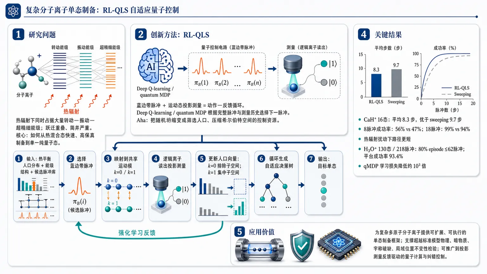
研究问题复杂分子离子在热辐射下同时占据大量转动—振动—超精细能级，且跃迁频率重叠、简并严重；核心问题是如何把分子从热混合态快速、高保真地制备到单一纯量子态。创新方法提出 RL-QLS：把“蓝边带脉冲 + 运动态投影测量”视为强化学习动作—反馈循环，用 deep Q-learning / quantum MDP 根据完整脉冲与测量历史选择下一脉冲；Aha 点是把随机测量坍缩从噪声变成筛选人口、压缩希尔伯特空间的控制资源。工作流程输入热平衡分子人口分布、分子能级结构和候选脉冲库；智能体选择蓝边带脉冲，将部分内态人口映射到共享运动模 k=0/k=1；逻辑离子读出投影测量结果；根据 k=0 排除子空间或 k=1 集中子空间更新人口向量；循环生成自适应决策树，直到人口集中到目标单态。关键结果在 CaH⁺ 的 16 态任务中，RL-QLS 平均 8.3 步完成制备，优于 sweeping 的 9.7 步；8 个脉冲成功率 56% vs 47%，18 个脉冲 99% vs 94%，并在热辐射扰动下保持更短路径。在 H₃O⁺ 的 130 态、218 脉冲任务中，80% episode 在 62 个脉冲内终止，成功率平台达到 93.4%；qMDP 使学习损失比普通 MDP 低约三个数量级。应用价值为复杂多原子分子离子的实验单态制备提供可扩展、可执行的量子控制框架，可支撑超越标准模型物理、暗物质、宇称破缺和局域位置不变性检验等精密测量；也可推广到依赖投影测量反馈的量子计算和纠错控制。第一部分：核心概览 (Overview)
RL-QLS 将强化学习、量子逻辑谱与分子能级动力学模拟结合，把分子离子单量子态制备转化为带投影测量反馈的序贯决策问题。相较传统 sweeping 协议，它利用完整脉冲—测量历史优化下一步控制，在 CaH⁺ 中减少制备步数并增强热辐射鲁棒性，在含 130 个热占据本征态、218 个候选脉冲的 H₃O⁺ 多原子离子中实现可扩展单态制备，为复杂多原子分子精密测量提供算法基础。
---
第二部分：结构化快速回顾
《Molecular Quantum Control Algorithm Design by Reinforcement Learning》（None，）
背景
多原子分子的丰富转动—振动—超精细结构使其成为检验超越标准模型物理、局域位置不变性破缺、暗物质与宇称破缺的高灵敏探针，但热辐射会占据大量内态，且跃迁频率常发生重叠，单一纯态制备困难。
方法
提出 RL-QLS：每一步由一个蓝边带脉冲和一次运动态投影测量组成；强化学习智能体根据当前分子态人口分布和历史测量结果，从离散脉冲库中选择下一步动作。动力学建模为 MDP / quantum MDP，采用 deep Q-learning，神经网络为三层、每层 128 节点。
结果
在 CaH⁺ 的 J≤2、16 态示例中，RL-QLS 平均 8.3 步完成制备，优于 sweeping 的 9.7 步；8 个脉冲后成功率 56% vs 47%，18 个脉冲后 99% vs 94%。在热辐射扰动下，RL-QLS 仍保持更短制备步数。对 H₃O⁺ 的 130 态、218 脉冲任务，80% episode 在 62 个脉冲内终止，高成功率平台达到 93.4%。
讨论
RL-QLS 的核心优势在于把投影测量导致的随机坍缩转化为信息资源，利用历史测量分支构造决策树，适合处理跃迁简并、多态热占据与复杂多原子希尔伯特空间。
局限
训练仍依赖高维超参数调节；当前方法假设分子能级和耦合率已知且足够精确；测量误差只给出基于 belief state 的一阶近似处理，尚未完整解决部分可观测性和实验漂移问题。
结论
RL-QLS 为复杂分子离子的可实验量子态制备提供通用理论框架，可拓展到其他含投影测量反馈的量子控制问题，包括量子计算中的辅助比特间接测量控制。
---
第三部分：逐章节冷凝解析 (Section-by-Section Condensing)
Abstract
- Precision molecules as beyond-standard-model sensors
分子精密测量被定位为探索标准模型之外物理的高价值平台，关键原因是分子内态结构丰富，可放大对基本对称性破缺、局域位置不变性和暗物质的响应；证据为 *"Precision measurements of molecules offer an unparalleled paradigm to probe physics beyond the Standard Model"*，并进一步指出分子是 *"exquisite sensors for detecting fundamental symmetry violations, local position invariance, and dark matter"*。
- Complex polyatomics require new quantum control algorithms
双原子和少数简单多原子分子的俘获与控制已有实验展示，但一般多原子分子的复杂 rovibrational structure仍缺少鲁棒高效控制手段；关键障碍是必须开发适应复杂能级密度的算法，原文直接表述为 *"leveraging the complex rovibrational structure of more general polyatomics demands the development of robust and efficient quantum control algorithms"*。
- RL-QLS as a general reinforcement-learning-designed quantum-logic protocol
核心方法是 reinforcement-learning quantum-logic spectroscopy (RL-QLS)，目标是把分子离子制备到单一纯量子态；定义性表述为 *"we present reinforcement-learning quantum-logic spectroscopy (RL-QLS), a general, reinforcement-learning-designed, quantum logic approach to prepare molecular ions in single, pure quantum states"*。
- Pulse-measurement cycles exploit probabilistic collapse
智能体优化一串脉冲，每个脉冲后接一次投影测量，通过测量坍缩概率性地重分布人口，最终聚集到单态；机制性描述为 *"The reinforcement learning agent optimizes the pulse sequence, each followed by a projective measurement, and probabilistically manipulates the collapse of the quantum system to a single state"*。
- Numerical demonstrations span H₃O⁺ and CaH⁺
数值验证覆盖两类难点：H₃O⁺ 具有 130 个热占据本征态和 inversion doublet 内的简并跃迁；CaH⁺ 面临环境热辐射扰动。原文给出 *"for the polyatomic molecule H3O+ with 130 thermally populated eigenstates and degenerate transitions within inversion doublets, as well as for CaH+ under the disturbance of environmental thermal radiation"*。
---
I Introduction
- Low-energy precision measurement probes BSM physics
低能高精度实验被视为超越高能对撞机的基础物理窗口，直接目标包括 BSM 假设；原文为 *"Low-energy, high-precision measurements provide a powerful tool to explore fundamental physics beyond the Standard Model (BSM)"*。
- Polyatomic internal structure provides enhanced sensitivity
多原子分子的多自由度内态结构使其对 BSM 物理敏感。例如 H₃O⁺ 的 inversion transition 频率可用于天文学搜索局域位置不变性破缺，并对潜在暗能量载体敏感；原文为 *"the frequencies of the inversion transitions of hydronium are used by astronomers to search for violation of local position invariance and would be sensitive to potential dark energy carriers"*。
- Parity violation in chiral molecules remains experimentally unresolved
手性分子左右对映体间由弱相互作用导致的极小能移已被预测但尚未观测；证据为 *"a minuscule energy shift is predicted in molecular enantiomers as a result of parity violation and awaits experimental observation"*。
- Thermal occupation and overlapping transitions block high-fidelity control
高保真分子控制困难来自两点：许多 rovibrational states 被热辐射占据，且态间跃迁频率经常重叠；原文为 *"many rovibrational states are populated by thermal radiation and the transition frequencies between those states commonly overlap each other"*。
- Single pure state preparation is central and non-trivial
单态制备不是辅助步骤，而是分子量子控制的核心任务；原文明确写道 *"preparation of molecules into single, pure states is a central yet non-trivial quantum control task"*。
- QLS is uniquely structure-agnostic and non-destructive
已有方法包括 sympathetic cooling、photoassociation、optical cycling、QLS；其中 QLS 的优势是对分子离子内态结构没有特定限制，并支持非破坏性探测。原文为 *"QLS stands out as a unique control scheme, requiring no specific restrictions on the internal structure of the molecular ion and enabling non-destructive detection of molecular ion states"*。
- Existing QLS success is concentrated in simple diatomics
既有实验已能测量和操控简单双原子离子量子态，但复杂多原子希尔伯特空间超出现有能力；原文为 *"Prominent experiments have demonstrated the ability to measure and manipulate the quantum states of simple diatomic ions with QLS"*，并指出 *"Increasing complexity in the molecular Hilbert space, as in polyatomic species, demands robust and scalable state preparation techniques beyond current capabilities"*。
- RL-QLS integrates quantum chemistry, AMO physics, and AI
框架整合三类工具：量子化学给出能级结构，AMO 物理提供脉冲和 QLS 测量机制，AI 负责控制策略优化；原文为 *"a theoretical framework that unifies tools from quantum chemistry, AMO physics, and artificial intelligence for molecular quantum control"*。
- Historical control and measurement data are exploited
RL-QLS 的决定性改进是利用完整历史，而非仅按固定脉冲顺序扫描；原文为 *"by leveraging the complete history of control pulses and measurement results, RL-QLS enables single-state preparation"*，并声称可在复杂结构和环境扰动下比当前协议 *"both faster and with higher fidelity"*。
---
II Method
- Initial molecular state is a Boltzmann mixture over Nₛ states
模型从热平衡占据的本征态混合态出发，密度矩阵为 ρmol = Σ P𝒥 |𝒥⟩⟨𝒥|，状态数为 Nₛ，占据概率满足 Boltzmann 分布 P𝒥 = e−βE𝒥 / Σe−βE𝒥；原文为 *"The density matrix of the rotational manifold is ρmol=∑... with NS the number of states"*，以及 *"P𝒥 follows a Boltzmann distribution"*。
- Shared motional mode is initialized to k=0
谱学离子与共俘获逻辑离子共享一个运动模，初态为 |k=0⟩，总密度矩阵为 ρ = ρmol ⊗ |0⟩⟨0|；证据为 *"The spectroscopy ion and the co-trapped logic ion share a common motional mode |k⟩, initialized to |k=0⟩"*。
- Lamb-Dicke approximation restricts the motional model to k∈0,1
在 Lamb-Dicke regime 中，模型只保留运动量子数 k=0 与 k=1，蓝边带脉冲把内态人口映射到不同运动子空间；原文为 *"In the Lamb-Dicke regime (thus k∈0,1 in the model), the applied laser pulse drives a molecular transition"*。
- Pulse evolution is encoded by u and v amplitudes
脉冲作用下，从初态 |𝒥,k=0⟩ 到终态 |𝒥′,0⟩ 与 |𝒥′,1⟩ 的振幅分别为 u𝒥𝒥′ 和 v𝒥𝒥′，由含时薛定谔方程获得；原文为 *"u𝒥𝒥′ and v𝒥𝒥′ describes the time evolution of a pure state |𝒥,k=0⟩ under the influence of the applied pulse"*。
- Projective motional measurement partitions molecular Hilbert space
蓝边带脉冲先把分子希尔伯特空间分到 k=0 与 k=1 两个子空间，随后通过逻辑离子亮态探测实现运动态投影测量；原文为 *"the blue-sideband pulses partition the molecular Hilbert space into two subspaces"*，以及 *"A projective measurement of the motional state is subsequently performed with a bright detection on the quantum state of the logic ion"*。
- Measurement outcomes concentrate or eliminate population subspaces
k=1 结果把人口集中到被驱动跃迁的终态子空间；k=0 结果则从该子空间消除人口。原文为 *"the k=1 outcome concentrates the population in a small subspace that consists of the ending states of the driven transition while k=0 outcome eliminates population in that subspace"*。
- Outcome probabilities follow amplitudes squared
测量结果概率为 p0 = Σ𝒥,𝒥′ P𝒥 |u𝒥𝒥′|² 与 p1 = Σ𝒥,𝒥′ P𝒥 |v𝒥𝒥′|²；原文公式前写道 *"The probability of each measurement outcome is given by"*。
- Cooling destroys coherence and enables population-only simulation
投影测量后进行运动冷却，计算中假设冷却破坏相干性，因此用人口向量而非完整密度矩阵追踪态；原文为 *"we have assumed that coherence is destroyed in the motional cooling, leading to a population-based description for computational efficiency"*。
- Sweeping protocol is limited by complex spectra and ignored history
早期 CaH⁺ 工作在外磁场下寻找唯一频率的 signature transitions，并顺序扫描；该策略在最多 48 个 hyperfine states 中已有实验展示，但对数百热可及状态和频率重叠困难。原文为 *"This simple ‘sweeping’ strategy was experimentally demonstrated for up to 48 hyperfine states"*，并指出其 *"encounters difficulties in more complex molecular ions, where hundreds of states are thermally accessible and transition frequencies often overlap"*。
- RL maps physical control to a Markov decision process
分子态制备被形式化为 MDP，当前状态是 Nₛ 维人口向量 St∈[0,1]Nₛ，动作是从 N_A 个脉冲中选择一个；原文为 *"The physical state preparation process straightforwardly maps onto a sequential decision-making task, formalized as a Markov decision process"*，以及 *"The state at time t is tracked as an NS-dimensional population vector"*。
- Transition matrices include coherent evolution and probabilistic collapse
每个动作对应转移矩阵 𝒜(a)，并且每种运动测量结果 k 需要不同矩阵 𝒜k(a)；原文为 *"a different 𝒜(a) matrix is needed for each possible motional state measurement outcome"*。
- Measurement-conditioned transition is normalized through one-norm probability
条件概率写为 p(k|St,a)=||𝒜k(a)St||1, k∈0,1；测量后状态为 St+1=𝒜k(a)St。原文为 *"The conditional probability of the measurement outcome, k, is"*，随后给出公式。
- Reward penalizes every step to encourage speed
奖励函数设为每步负数，例如 R = −1，与具体动作无关，目标是缩短制备长度；原文为 *"The reward function R is set to a negative number, e.g., R=−1 for each step, regardless of the action, to encourage fast task completion"*。
- Deep Q-learning uses a compact fully connected network
算法采用 deep Q-learning，因其适合离散动作空间探索；Q 函数由简单全连接神经网络表达，目标是使 CPU embedded FPGA 上的动作评估时间短于实际脉冲 wall-clock 时长。网络为 三层、每层 128 节点，并测试过四层和更宽网络；原文为 *"We use a three-layer neural network with 128 nodes per layer"*，并补充 *"we also tested four-layer and wider networks and the same qualitative conclusion holds"*。
---
III Results and Discussions
- CaH⁺ benchmark matches NIST-like conditions
初始展示使用 CaH⁺ 的 J≤2 流形，外磁场为 0.36 mT，用于匹配 NIST 实验；原文为 *"we consider only the J≤2 manifolds of CaH+ at a magnetic field of 0.36 mT to match the NIST experiments"*。
- RL-QLS measures after every blue-sideband pulse
与 sweeping 协议先顺序施加脉冲再最终投影不同，这里每个蓝边带脉冲后都测量，以获得即时人口反馈；原文为 *"we choose to perform measurements after every blue-sideband pulse to obtain feedback on the instantaneous populations"*。
- Sweeping baseline averages 9.7 steps, below one 13-pulse cycle
sweeping 协议平均制备步数为 9.7，低于完整 sweeping cycle 的 13 个脉冲，原因是投影测量有概率直接坍缩到低人口态；原文为 *"The average number of steps (or episode length, 9.7) needed to prepare a pure state is slightly lower than the number in one sweeping cycle (13)"*。
- Fair sweeping comparison uses full action-measurement history
为公平比较，模拟中的 sweeping 协议也使用完整动作和测量历史来判定分子态并终止 trial，区别于 NIST 实验实现；原文为 *"the sweeping protocol implementation uses the entire history of actions and measurement results to determine the molecular state and terminate the trial"*。
- RL training converges after hundreds of episodes
RL 智能体通过训练逐步降低 moving-average episode length；约 250 episodes 后接近一致的 near-optimal behavior，约 550 episodes 后收敛到最优策略。原文为 *"The episode length approaches consistent near-optimal behavior after ∼250 episodes, and the training converges to the optimal policy after ∼550 episodes"*。
- RL-QLS improves average CaH⁺ preparation length
RL-QLS 每次制备平均需要 8.3 个脉冲/测量步骤，优于 sweeping 的 9.7；原文为 *"the average number of required pulses and measurement steps (i.e., 8.3) per preparation episode ... outperforms that achieved by the sweeping protocol"*。
- RL success probability exceeds sweeping under equal pulse budgets
表 1 显示相同脉冲数下 RL 更快积累终止概率：2 个脉冲均 0%；3 个脉冲 RL 15% vs sweeping 0%；4 个脉冲 35% vs 9%；8 个脉冲 56% vs 47%；18 个脉冲 99% vs 94%。对应原文表述为 *"The cumulative probability of the successful state preparation episodes with RL-QLS outperforms that of the sweeping protocol when the same number of pulses is applied"*。
- RL decision trees are non-unique but exploit multi-transition pulses
不同随机初始化可产生不同但成功率相近的决策树；共同特征是智能利用能驱动多个跃迁的脉冲。原文为 *"the reported decision tree is not unique"*，以及 *"smart utilization of the pulses that drive multiple transitions is common in those decision trees"*。
- Thermal radiation is modeled by effective BBR temperature
环境热辐射是分子控制主要噪声之一，强度以有效黑体辐射温度 TBBR 量化；原文为 *"thermal radiation (TR), one major source of noise in molecular control"*，以及 *"The strength of TR is quantified by effective black body radiation (BBR) temperature, TBBR"*。
- RL-QLS remains efficient under moderate thermal noise
热辐射把系统推向热平衡，阻碍态制备；更强热噪声需要更多步骤，但 RL 在中等热辐射下仍能以近似小步数完成任务。原文为 *"TR drives the system towards thermal equilibrium and thus hinders the state preparation progress"*，并指出 *"the RL agent is able to complete the task with nearly the same small number of pulses under moderate TR noises"*。
- Purity can reach stringent thresholds under cryogenic-like conditions
在 TBBR = 10 K 时，RL-QLS 在纯度最高到 0.9999 的制备任务中优于参考方案；同时对比近期 CaH⁺ 实验在 TBBR = 16 K 达到 0.998 fidelity。原文为 *"RL-QLS protocol outperforms the referenced one to prepare a pure state up to a purity of 0.9999 at TBBR=10 K"*，以及 *"a recent experimental demonstration ... achieved 0.998 fidelity at TBBR=16 K"*。
- H₃O⁺ introduces polyatomic scalability and inversion-doublet degeneracy
H₃O⁺ 的复杂性来自多耦合内部自由度，rotational manifolds 因 inversion mode 的两个 parity states 分裂为 doublets，导致 doublet 内跃迁简并；原文为 *"the rotational manifolds split into doublets with similar level structures, leading to degenerate transitions within each doublet"*。
- H₃O⁺ simulation includes 130 states and 218 pulses
H₃O⁺ 控制任务包含 130 states 和 218 pulses；纯度阈值设为 0.01，初始为 20 K Boltzmann mixture。原文图注为 *"with 130 states and a library of 218 pulses to choose from"*，正文为 *"prepare a pure molecular state from a Boltzmann mixture at 20 K"*。
- Cross-J pulses are required to resolve inversion-doublet degeneracy
H₃O⁺ 中需要 ΔJ = ±1 的 two-photon cross-J pulses 来分离 doublets 中的人口，这在 CaH⁺ 控制中并不必要；原文为 *"pulses that drive ΔJ=±1 transitions are required to separate the population in doublets"*，并指出 *"Those pulses are not necessary in CaH+ control"*。
- Quantum MDP improves learning efficiency by orders of magnitude
为处理高维任务，引入 quantum MDP modeling 和 physics-informed reward。qMDP 将测量过程显式纳入 Q 值更新，使损失函数比普通 MDP 小 three magnitudes；原文为 *"quantum MDP modeling explicitly incorporates the measurement process in the Q-value estimate update and improves the learning efficiency"*，以及 *"the loss function obtained with qMDP modeling is three magnitudes smaller than that with MDP modeling"*。
- Physics-informed reward discourages ineffective pulses
奖励函数被修改，使若某脉冲后状态与前一状态高度相似，则抑制该动作，从而促进探索；原文为 *"the reward function is modified to discourage applying a pulse if the resulting state closely resembles the previous one"*。
- H₃O⁺ RL-QLS reaches a 93.4% high-success plateau
在 H₃O⁺ 高维任务中，RL-QLS 用更少脉冲产生更多成功终止，成功率平台为 93.4%；80% episode 在 62 pulses 内终止。原文为 *"80% of episodes terminate within 62 pulses with RL-QLS state preparation"*，以及 *"reaches a high success ratio plateau (93.4%) much more rapidly than the reference protocol"*。
- Partial observability from measurement infidelity is approximated by belief states
实验中只能直接得到测量结果而非完整人口，因此真实控制过程是 partially observable MDP。有测量不完美时，可用 belief state b(s) 表示当前态概率分布，并近似 Q(b(s),a)≈Σs b(s)Q(s,a)；原文为 *"the control process is intrinsically a partially observable MDP"*，以及 *"measurement outcomes ... yield a belief state, b(s), a probabilistic distribution of the current state"*。
---
IV Conclusions
- RL-QLS integrates three scientific domains for trapped molecular-ion control
框架融合量子化学、AMO 物理和人工智能，目标是控制被俘获分子离子的量子态；原文为 *"the RL-QLS theoretical framework integrates quantum chemistry, AMO physics, and AI approaches to control the quantum state of a trapped molecular ion"*。
- Historical pulse-measurement information enables efficient robust preparation
RL 智能体借助脉冲选择和测量结果历史，实现高效且鲁棒的单态制备；原文为 *"the reinforcement learning (RL) agent leverages historical information of pulse choices and measurement outcomes to perform efficient and robust single state preparation"*。
- Polyatomic molecular control is the key target regime
RL-QLS 尤其适用于复杂 rovibrational structures 和大量 occupied states 的多原子分子；原文为 *"RL-QLS is especially powerful for polyatomic molecular control where complex rovibrational structures emerge and an abundance of occupied states are of interest"*。
- Decision trees are experimentally implementable with low real-time cost
训练后得到的决策树可直接用于实验，实时计算成本很小；原文为 *"RL-QLS decision trees can be directly implemented in experiments with minimal real-time computational cost"*。
- Framework generalizes beyond QLS-based state preparation
RL-QLS 可推广到其他依赖投影测量的制备问题，例如量子计算架构中用于纠错的辅助量子比特间接测量；原文为 *"can be broadly applied to other state preparation problems where projective measurements are not realized by QLS"*，并举例 *"large-scale quantum computing architectures that utilize indirect ancilla qubit measurements for error correction"*。
- Future work requires stronger algorithms and uncertainty resilience
更复杂分子需要更有效探索巨大状态—动作空间的 RL 算法和神经网络结构；当前方法还依赖对能级结构的先验精确认知。原文为 *"other RL algorithms and neural network architectures that can effectively explore the immense state-action space would be beneficial"*，并指出 *"the present method assumes prior knowledge of molecular energy level structure with sufficient precision"*。
- Robustness to perturbative shifts remains open
能级和耦合率存在扰动漂移时，仍需设计更稳健的 RL 协议；原文为 *"Designing RL-based protocols that are resilient to perturbative shifts in the energy levels and coupling rates would further improve the applicability of the method"*。
---
Acknowledgements
- Computational and funding infrastructure supports the work
计算资源来自 National Energy Research Scientific Computing Center，资助包括 NSF CAREER ECCS 2246394、NSF QuSeC-TAQS 2326840、NSF ExpandQISE 2231387、NSF Physics 2309315，以及 Gordon and Betty Moore Foundation 与 Guggenheim Fellowship。原文为 *"This research used resources of the National Energy Research Scientific Computing Center"*，并列出 *"NSF CAREER Award under grant number ECCS 2246394, NSF QuSeC-TAQS 2326840, NSF ExpandQISE 2231387, and NSF Physics 2309315"*。
---
第四部分：深度理解与语言支持 (Understanding & Nuance)
1. 术语解析
- Quantum-logic spectroscopy (QLS)
学术含义：用一个易探测的逻辑离子间接读出一个难探测的分子谱学离子状态。微妙点在于 QLS 不是普通光谱测量，而是把分子内部状态信息映射到共享运动模，再映射到逻辑离子的可探测电子态，因此可实现非破坏性检测。
- Projective measurement
学术含义：量子测量把叠加或混合态按测量结果投影到相应子空间。语境中，测量对象不是直接的分子内态，而是共享运动模的 k=0 / k=1。微妙点是测量既提供信息，也主动改变系统人口分布，是控制过程的一部分，而非被动读数。
- Blue-sideband transition
学术含义：同时改变分子内部态和运动量子数的跃迁，通常使运动模增加一个量子。这里蓝边带脉冲将特定分子跃迁与 k=1 运动激发关联，从而让后续运动态测量筛选分子内态子空间。
- Markov decision process (MDP)
学术含义：状态、动作、转移概率、奖励组成的序贯决策模型。这里的“状态”不是单次实验中真实未知的波函数，而是算法追踪的人口分布向量；动作是脉冲选择；随机性来自量子投影测量。
- Belief state
学术含义：在部分可观测系统中，对真实状态的概率分布估计。测量不完美时，同一串观测结果可能对应多个真实分子人口分布，因此需要 belief state 代替确定状态。微妙点是它不是量子态本身，而是控制器对量子态的经典概率认知。
2. 疑难查证
- 为什么投影测量能帮助“制备”而不只是“测量”？
每个蓝边带脉冲把一部分分子态人口关联到运动激发 k=1，另一部分留在 k=0。随后测量运动态时，如果结果是 k=1，系统被投影到“被该脉冲命中的终态子空间”；如果结果是 k=0，则排除这部分人口。重复执行后，人口分布不断被条件化，类似二叉决策树中的筛选过程。制备成功不是确定性泵浦，而是利用量子测量坍缩逐步压缩不确定性。
- 为什么复杂多原子分子比 CaH⁺ 难得多？
CaH⁺ 的 Zeeman 和 hyperfine splitting 随 J 增大呈较规则趋势，许多跃迁可被频率区分。H₃O⁺ 存在 inversion doublets：同一 rotational manifold 因 inversion parity 分裂为两套相似结构，导致不同态之间的跃迁频率近似或完全重合。频率重叠意味着一个脉冲可能同时驱动多个跃迁，传统 sweeping 难以逐态排查，而 RL 可以学习如何利用这些“多目标脉冲”而不是简单回避它们。
- 为什么 deep Q-learning 适合这个任务？
动作空间是离散脉冲库，例如 H₃O⁺ 中有 218 个脉冲可选；每一步奖励为负，目标等价于最小化到达终止纯态所需步数。Q-learning 学习的是“在当前人口分布下选择某脉冲后，未来还需要付出多少步数成本”。因此它天然适合从大量模拟 episode 中学习决策树。
- 为什么 qMDP 能提高效率？
普通 MDP 若把测量结果当作普通随机转移，可能低效学习“脉冲—测量—坍缩”结构。qMDP 把测量过程显式写入 Q 值更新，使算法知道一个动作会产生多个测量分支及其概率。这相当于在学习目标中内置物理结构，所以在 H₃O⁺ 任务中损失函数比普通 MDP 小三个数量级。
---
第五部分：创新评估与关联 (Synthesis & Novelty)
1. 创新性判断
- 从固定 sweeping 到历史自适应决策树
过去 CaH⁺ QLS 实验主要依赖预先设计的 signature transition sweeping；该策略不充分利用测量历史，面对数百态和频率重叠会低效。RL-QLS 的新颖性在于把每次测量结果作为后续控制输入，生成可实验执行的自适应脉冲决策树。
- 把投影测量随机性转化为控制资源
传统直觉中，测量坍缩是噪声或读出步骤；这里将其作为态制备机制。蓝边带脉冲负责构造可测子空间，投影测量负责概率筛选，RL 负责选择最有信息增益和最快终止的脉冲。
- 面向多原子分子的可扩展算法设计
近年 RL 量子控制多集中于较简单量子态工程、量子门优化或低维 dissipative systems；该工作针对分子 rovibrational 复杂性，在 H₃O⁺ 的 130 态 / 218 脉冲控制任务中展示可行性，直接触及多原子分子精密测量中的真实瓶颈。
- 显式处理跃迁简并与多目标脉冲
频率重叠和 inversion-doublet 简并通常削弱逐跃迁控制。RL-QLS 不仅能容忍一个脉冲驱动多个跃迁，还能学习何时利用这种多跃迁耦合来加速人口压缩，这是相对传统频率分辨控制的重要算法转向。
- 热辐射扰动下的鲁棒控制优化
CaH⁺ 热辐射示例表明，RL-QLS 可在 BBR 扰动下维持更短制备路径，并在 TBBR=10 K 达到 0.9999 纯度阈值任务表现优于参考协议。这解决了近期分子离子实验中热环境导致态追踪与制备退化的问题。
- qMDP 与 belief-state 近似连接实验测量误差
真实 QLS 实验只能获得测量记录而非完整人口分布，因而本质上是部分可观测控制问题。qMDP 建模和 belief-state 近似为测量 infidelity 提供无额外训练的一阶处理路径，虽未完全解决 POMDP，但给出了可扩展方向。
- 领域地位
该工作处于AI 量子控制与分子精密测量交叉点，将 RL 从通用量子控制推进到复杂分子离子态制备这一实验迫切问题。最重要的科学创新点不是单纯使用深度强化学习，而是把 QLS 投影测量、分子能级结构、热环境和高维脉冲选择统一成可训练、可执行、可比较的控制框架。
-
05
📊 含图深析
📄 摘要：针对两亲性嵌段共聚物自组装成球形囊泡的问题，利用机器学习与优化算法替代耗费昂贵的网格搜索，在拓扑定向设计框架下搜索目标结构，并围绕囊泡的数值表征与单一目标函数构建优化流程。
💡 亮点：该工作把嵌段共聚物囊泡设计从网格搜索改成机器学习优化。核心是用单目标函数直接驱动目标形貌搜索。
📖 展开分析 + 配图
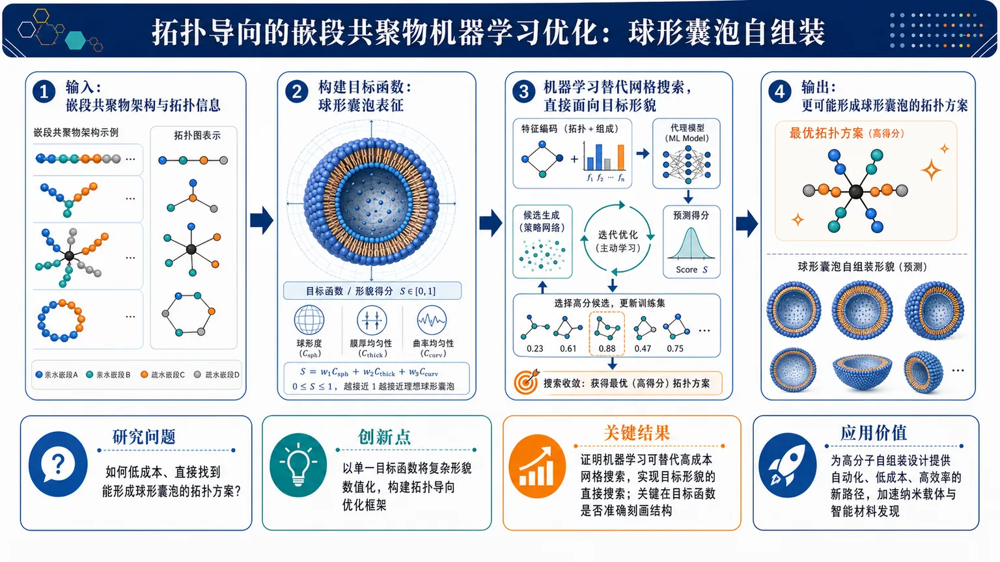
研究问题如何在两亲性嵌段共聚物的架构设计中，直接、低成本地找到能够自组装形成球形囊泡的拓扑方案，而不是依赖昂贵的人工试探或网格搜索。创新方法提出一种拓扑导向的机器学习优化框架，用机器学习替代传统网格搜索，在搜索过程中直接面向目标形貌；核心亮点是尝试用单一目标函数对“球形囊泡”这一复杂自组装结构进行数值化表征，从而把形貌设计转化为可自动优化的问题。工作流程输入候选嵌段共聚物架构与拓扑信息，建立用于表征球形囊泡的目标函数；机器学习模型评估候选方案并驱动拓扑导向搜索；迭代筛选更优架构；输出更可能自组装为球形囊泡的聚合物设计。关键结果工作证明机器学习可用于替代高成本网格搜索，实现对目标形貌的直接搜索；研究同时指出，决定成败的关键在于能否用单一目标函数准确刻画球形囊泡结构。摘要未给出具体数值提升，但明确展示了该优化思路的可行性。应用价值为高分子自组装结构设计提供自动化、低成本、高效率的新路径，可加速球形囊泡及相关纳米载体的材料发现，减少大量试错和计算开销，推动功能高分子与智能材料设计。核心概览（100字内）
本文面向两亲性嵌段共聚物自组装形成球形囊泡的架构优化，提出用机器学习替代昂贵的网格搜索，并在拓扑导向框架下直接搜索目标形貌，属于高分子自组装 + 机器学习优化方向。
方法要点
- 以两亲性嵌段共聚物的架构优化为对象，目标是得到球形囊泡形貌。
- 采用机器学习替代传统的高成本网格搜索，以提高搜索效率。
- 在拓扑导向的搜索框架中进行优化，而非仅凭经验试探参数。
- 将“球形囊泡”这一目标形貌尝试压缩为单一目标函数的数值表征；这是核心方法难点，摘要未详述具体构造。
关键结果
- 摘要明确指出：该工作旨在直接寻找目标形貌，而不是依赖大规模人工/网格枚举。
- 摘要明确指出：机器学习可以替代昂贵的网格搜索，用于该类架构优化问题。
- 摘要明确指出：该问题的关键瓶颈在于，如何用单一目标函数准确表征球形囊泡结构。
- 具体性能提升、命中率、实验/模拟结果等，摘要未详述。
创新性判断
- 可能的新颖点在于：把自组装形貌设计转化为一个可由机器学习驱动的拓扑优化问题，并直接面向“球形囊泡”这一目标结构搜索。
- 另一个可能创新点是：尝试用单目标函数统一刻画复杂囊泡拓扑，从而让优化问题可计算、可自动化。
- 但由于只有摘要，以上判断仅属合理推断；具体创新强度与是否已有类似工作，摘要未详述。
-
06
📄 摘要：这篇新闻报道量子神经网络首次进入硬件测试阶段，讨论其在量子计算机上运行神经网络的可行性与困难，指出量子硬件虽开始实用化，但把神经网络真正迁移到量子平台仍面临较大门槛。
💡 亮点：量子神经网络第一次接受硬件实测，但现实门槛依然很高。它反映出量子AI从概念走向可运行实现仍需跨越工程鸿沟。
📖 展开分析 + 配图
研究问题量子神经网络能否从理论与模拟走向真实量子处理器，并利用叠加、纠缠等量子效应形成不同于经典神经网络的学习机制。创新方法把神经网络思想映射为可在量子处理器上运行的量子线路，直接在真实量子硬件中做早期实验验证；Aha 点是用物理量子芯片而非经典仿真来检验“量子学习”是否可行。工作流程输入神经网络式学习任务或数据表示 → 转换为量子态与量子线路 → 在真实量子处理器上执行量子操作 → 测量量子输出 → 分析硬件运行结果，判断量子效应是否支持学习行为。关键结果量子神经网络完成了早期真实硬件测试，证明该方向已进入实验验证阶段；同时显示将神经网络稳定映射到量子处理器仍很困难，摘要未给出明确性能优势或定量提升。应用价值为量子机器学习提供硬件层面的可行性验证，推动研究从纸面模型和模拟器走向真实量子芯片；有助于探索未来可能超越经典学习范式的新型计算机制。核心概览
这篇论文属于量子机器学习 / 量子神经网络方向，报道了量子神经网络在量子硬件上的首次测试，并讨论其相较经典机器学习的硬件实现难点。
方法要点
- 将量子神经网络（QNN）部署到真实量子硬件上进行测试。
- 关注量子原生学习范式与经典机器学习之间的差异。
- 分析硬件约束对量子神经网络实际运行的影响。
- 摘要未详述具体网络结构、训练算法或实验平台。
关键结果
- 论文明确称实现了量子神经网络的首次硬件测试。
- 结果指出：把神经网络真正运行在量子硬件上仍比经典实现困难得多。
- 论文强调了量子原生学习与经典机器学习在实现层面的显著差别。
- 具体性能指标、任务表现与对比实验：摘要未详述。
创新性判断
- 可能的新颖点在于：不是只做理论讨论或模拟，而是把量子神经网络首次放到真实量子硬件上验证。
- 这意味着工作更偏向于从“可行性演示”走向“硬件实证”，对量子机器学习的工程化具有标志意义。
- 但摘要未说明是否提出了新模型、新训练法或性能优势，因此创新性主要体现在首次硬件测试这一层面，其他方面不确定。
-
07
📊 含图深析
📄 摘要：基于23家欧洲生产商、476条水泥记录和单实验室27年数据，分析常规表征对CEM I性能的可推断性；特征涵盖氧化物化学、Blaine比表面积、粒径分布、物理性质及Bogue/等效指标，用于评估跨生产商迁移边界。
💡 亮点：这项多生产商水泥数据研究直接量化了常规表征的信息上限。它提醒材料机器学习必须面对跨工厂分布漂移。
📖 展开分析 + 配图
研究问题常规水泥质控数据（XRF 氧化学、Blaine、Bogue 相、PSD）究竟能在多生产商场景下恢复多少 CEM I 性能信息：28 天强度、强度等级、水需求是否可迁移预测；N/R 早强标签是否存在可稳定分离的物理边界。创新方法把 27 年、23 家欧洲生产商、476 条记录放入统一的可解释机器学习框架，用普通 5 折 CV 与 producer-holdout 对照检验“同厂内拟合”和“跨厂迁移”；用 SHAP 组级归因识别细度、氧化学、PSD、Bogue 的真实信息贡献，揭示 Blaine 与 PSD 多数只是同一细度信号的两种编码，并把 N/R 定义为推断极限案例。工作流程输入多生产商 CEM I 常规质控表征数据，包括氧化物组成、Blaine、密度、PSD、Bogue 推导相、强度与水需求；先统一单位、计算 Bogue 相与等效碱、抽取并核验 PSD；再进行相关性分析、线性模型、ENET、RF、XGBoost、LightGBM 建模；随后用 5 折交叉验证、SHAP 解释和生产商留出测试评估；最终输出可恢复性能、特征贡献结构和不可推断边界。关键结果细度是最强可视化信号：Blaine 与 28 天强度正相关，d50/dmod 与强度负相关；Blaine 与 PSD 大体可互换，PSD 主要提供冗余细度信息。氧化学单变量较弱但联合贡献接近细度，K2O/等效碱与 28 天强度稳定负相关。强度等级 balanced accuracy 达 0.894±0.032，水需求 R² 达 0.713±0.049。N/R 早强标签只能显示群体趋势，不能形成稳定类别边界。应用价值为水泥厂提供基于常规质控数据的跨生产商性能筛查、虚拟认证、熟料设计反馈和质量解释工具；同时明确告诉工程应用者：常规数据足以支持 28 天强度、强度等级和水需求的有用推断，但若要解析早强路径、硫酸盐-碱平衡、C3A 多态和工艺历史，还需要更细的 XRD、量热和物相信息。第一部分：核心概览 (Overview)
这篇研究把 27 年、23 家欧洲水泥生产商、476 条记录 的常规质控数据放进统一机器学习框架，直接检验 CEM I 的性能信息到底能从常规表征中恢复到什么程度、跨生产商是否可迁移。核心贡献有三点：一是证明 细度 与 氧化学 对 28 天强度、强度等级和用水量具备可恢复信息；二是揭示 Blaine 与 PSD 多数情况下只是同一“细度信号”的不同表征；三是明确给出 推断边界：N/R 早强标签 只能恢复为群体趋势，不能稳定分离为物理上可独立的类别。该工作在“预测”之外，进一步回答了“能推断什么、推断到什么程度、何处失效”。
---
第二部分：结构化快速回顾
Machine Learning Inference Limits of Routine Cement Characterization for CEM I Performance: Evidence From a Multi-Producer Dataset (None，)
背景
常规水泥质控会持续生成 XRF 氧化学、Blaine、Bogue 相组成、PSD 等数据，但这些数据对 性能推断 的信息量及其 跨生产商可转移性 并不清楚。领域内已有大量强度预测研究，但多集中于单一数据域，较少检验独立生产商之间的迁移。
方法
使用 476 条记录、23 家欧洲生产商、27 年 数据，其中 311 条 CEM I、20 家生产商。对 28 天抗压强度、强度等级、水需求 建模；比较 线性模型、ENET、RF、XGBoost、LightGBM；用 Pearson/Spearman、5 折 CV、SHAP 和 producer-holdout 测试评估信息量与迁移性。
结果
对 CEM I，细度 是最强描述族；Blaine 与 PSD 大体可互换；氧化学 联合进入模型后贡献接近细度。K2O / 等效碱 与 28 天强度呈稳定负相关。强度等级 与 水需求 可从常规表征恢复。N/R 早强标签 只能恢复为群体层倾向。持出生产商的绝对误差相近，但生产商内强度波动的恢复依赖具体生产商。
讨论
常规表征足以支持 跨生产商的有用性能推断，但不足以完全解析 早强路径、硫酸盐-碱平衡、相组分多态、工厂工艺历史 等生产商特异机制。模型解释显示，某些“强相关”并不等于“独立信息”，尤其在 Bogue/PSD 共线 场景下。
局限
数据跨 27 年、来源于多生产商，缺失值 较多，且部分关键变量（如早期水化热、XRD 相分布）只存在于 n=7 的补充样本中。producer-holdout 并未作为主 CV 方案，主分析仍含同一生产商样本混入训练和测试。
结论
常规 CEM I 表征可以恢复有用的性能信息，但不能完全解析生产商特异的早强机制。 细度与氧化学提供了主要可迁移信号，而更细的物相/规格化学信息可能是进一步突破推断边界所必需的。
---
第三部分：逐章节冷凝解析 (Section-by-Section Condensing)
1 Introduction
研究问题被定义为“能推断什么、不能推断什么”
- 核心问题不是单纯预测强度，而是评估常规质控数据对 CEM I 性能推断 的信息上限，以及该信息能否跨独立生产商迁移。
- 直接目标包括 28-day strength, strength class, water demand，以及 N/R early-strength designation 的可分离性。
- 原文直指方法定位：*"we use explainable machine learning to probe the information content of routine cement characterization data"*；*"where inference fails, and how well that inference transfers across independent producers."*
已有研究主要停留在单一数据域的拟合
- 早期工作已指出强度依赖 composition + fineness，并且 PSD/Blaine 具有超出化学组成的增量信息。
- 但跨独立生产商时，局部拟合并不等于稳健迁移。
- 关键断点在于：*"strong performance within a restricted data domain does not necessarily imply robust transfer across shifted material populations."*
研究动机来自虚拟筛选与工艺反馈
- 若常规表征足够可靠，可用于 virtual qualification、clinker design feedback 和跨工厂性能比较的解释。
- 但若工厂特异协变量过强，模型只会学习局部共变，不是真正可转移规律。
- 这与文中表述一致：*"A model trained on such data may therefore capture local covariation together with genuine material relationships."*
分析策略是“解释性机器学习”而非黑箱预测
- 采用 explainable ML 作为 quantitative probes，不是只追求预测分数。
- 研究对象包括：氧化学、Blaine、Bogue 相、PSD、等效碱 等，重点考察它们在 28 天强度中的贡献结构。
- 关键词式总结：*"routine cement characterization supports useful performance inference across producers, while exposing producer-specific variation."*
---
2 Materials and Methods
#### 2.1 Dataset collection
数据覆盖 27 年、23 家生产商，主分析聚焦 CEM I
- 总数据库 n = 476，来自 23 家欧洲生产商。
- 其中 CEM I n = 311，来自 20 家生产商；其余 165 条为 CEM II / CEM III / composite types。
- 另有一个小型补充集 n = 8，仅用于解释早强机理，不进入主模型。
- 原文信息：*"The compiled database contains 476 samples from 23 independent European cement producers."*；*"311 are CEM I (Portland cement) from 20 producers."*
测试方法覆盖了常规质控全链条
- 密度按 DIN EN 196-6，化学组成按 DIN EN 196-2，Blaine 按 DIN EN 196-6，PSD 按 EN ISO 13320。
- 性能表征包括 setting time, water demand, Le Chatelier soundness 和 strength development。
- 强度数据中，2、7、28 天 的抗折强度来自三根标准砂浆棱柱；抗压强度来自六个棱柱半件。
时间跨度长，但方法体系保持稳定
- 核心测试原理在三十年内大体不变。
- 变量波动主要来自工业级差异、氧化测量与 PSD 的设备/工厂微调。
- 这意味着长期异质性真实存在，并非纯粹测量噪声。
- 原文：*"the core principles of the underlying cement test methods remained stable over this period."*
补充数据用于解释早强机理，不用于建模
- n = 8 的辅助数据含 isothermal calorimetry 和 XRD quantitative phase analysis。
- 这些数据只用于说明 N/R 早强标签 何以难以从常规变量中分离。
- 原文：*"These measurements are not used for primary model training, cross-validation, or feature attribution."*
---
#### 2.2 Data extraction and preprocessing
##### 2.2.1 Excel workbook extraction
特征来自结构化工作簿，单位统一
- 每位生产商一张 sheet。
- 数值统一为相应领域单位：强度 MPa，Blaine cm² g⁻¹，粒径 µm，时间 h，稳定性 mm，LOI 和相含量 wt%。
- 特征完整性因多年代、多生产商而不均衡。
- 原文：*"Feature completeness varies across the dataset due to its multi-decade and multi-producer origin."*
##### 2.2.2 Derived feature computation
Bogue 相与 clinker moduli 由氧化组成推导
- 由 CaO, SiO2, Al2O3, Fe2O3 计算 C3S, C2S, C3A, C4AF。
- CEM I 的 CaO 先扣除 free CaO 和 0.7 SO3 近似对应的石膏钙。
- 负的 Bogue 值被截断为 0，符合相含量非负的实践。
- 这组定义强调：Bogue 是 校正后推导量，不是直接矿物学测量。
- 原文：*"They are retained here as standardized descriptors used in plant quality control, not as direct mineralogical phase measurements."*
Bogue 与氧化变量不同时入模，避免共线性
- Bogue 的计算本身依赖氧化组成，因此二者共享信息。
- 同时放入会制造结构性多重共线性。
- 原文：*"oxide and Bogue feature sets are treated as alternative descriptors and are not used simultaneously to avoid multicollinearity."*
等效碱定义为 Na2O + 0.658 K2O
- 等效碱用于聚合碱金属信号。
- 在该数据集里，等效碱的负相关主要由 K2O 驱动。
- 原文：*"Equivalent alkali was computed as [Na2Oeq] = [Na2O] + 0.658[K2O]."*
一个早龄强度异常记录被保留
- 有 1 条 记录出现 7 天抗压低于 2 天 的异常，但仍保留，因为早龄强度不是主目标，且其余变量正常。
- 体现的是数据清理的保守性而非强行剔除异常。
##### 2.2.3 PSD data extraction and integration
PSD 来自纸质报告，先扫描再人工核验
- PSD 参数不在 Excel 主表中，而在纸质测试报告里。
- 先扫描，再用本地运行的 Qwen3.5-9B 辅助抽取表格字段，之后人工核验。
- 原文：*"with a locally run Qwen3.5-9B model used as an extraction aid"*；*"extracted values were manually validated against the source reports."*
Rosin–Rammler 模型定义了 PSD 结构
- PSD 用 R(x) = 1 - exp[-(x/d′)ⁿ] 表示。
- 直接报告的参数包括 dₘ, dₘₒd, d50, d′, n。
- x10 / x90 由公式反推，不是独立测量。
- 所有七个 PSD 描述子都进入相关性筛选，但后续预测仅保留四个参数以减少共线性。
PSD 缺失率高，CEM I 中 36% 完全缺失
- PSD 参数对 36% 的 CEM I 记录缺失。
- 对于树模型可直接处理缺失；其他模型则限制到 200 条完整样本。
- 表 2 给出特征组缺失率：Blaine/density 1.6%，water demand 6.1%，28-day strength 6.8%，oxides 7.1%，Bogue/moduli 9.0%，Cl 22.8%，PSD 36.0%。
---
#### 2.3 Analytical models and attribution methods
主分析只在 CEM I 子集上进行
- 训练域预先限定为 CEM I，除非特别说明。
- 全数据库仅用于跨材料类型比较，不用于主推断框架。
分类与回归分别对应离散和连续目标
- 分类模型预测 N/R 与 strength class (32.5/42.5/52.5)。
- 回归模型预测 water demand 与 28-day compressive strength。
相关性同时报告 Pearson 与 Spearman
- Pearson 识别近线性关系；Spearman 识别单调关系。
- 两者并列可区分“线性”与“广义单调”信号。
- 这在细度类变量中尤为关键，因为不同粒径指标本质上描述同一趋势但方向相反。
5 折 CV 评估的是“同一生产商域内的新样本”
- 记录随机分入 5 折，fold 之间不按生产商分组。
- 因此测试的是“已见生产商中的新样本”，不是“新生产商”。
- 原文直说：*"Because records from the same producers may appear in both training and test folds"*。
线性模型与树模型承担不同角色
- OLS 作为透明加性基线。
- ENET 用 L1 + L2 处理共线性与特征选择。
- RF / XGB / LightGBM 检验非线性与交互增益。
- 线性特征在每折内标准化，避免测试信息泄漏。
SHAP 用于解释模型输出，不是因果解释
- SHAP 将预测分解为加性贡献。
- 明确排除因果读法。
- 对 Bogue phases 和 PSD parameters 这类共线块，单个 SHAP 值会被重新分摊，因此按 组级别 汇总更合理。
- 原文：*"These contributions describe the fitted model output and are not interpreted as causal effects."*
W-tol 用 10% 相对误差带刻画实用精度
- 主指标是 MAE，同时给出 R²。
- W-tol. 定义为预测误差在测量值 ±10% 内的比例。
- 该阈值借鉴 EN 196-1 中六次抗压测定的离群判定规则。
---
3 Results and Discussion
#### 3.1 Strength distributions and the case for regression
强度等级之间重叠严重，分类边界不是自然物理边界
- 三个强度等级的 28 天抗压标准差为 3.1–4.7 MPa。
- 组内范围可达 约14 MPa 到超过30 MPa。
- 32.5 级的最大值 54.3 MPa 高于 42.5 级最小值 35.5 MPa，差距 19 MPa。
- 这说明仅靠离散等级分类会损失大量连续信息。
下限合格率几乎满分，但上限封闭性不高
- 28 天抗压的下限合格率为 100.0%、99.5%、98.0%。
- 若同时要求 EN 197-1 的上/下限包络，合规率变为 83.6%、96.8%、98.0%。
- 说明多数样本被生产者留有性能余量，且 32.5 级最容易出现超出上限的“过强”。
N/R 标签在 42.5 级中才有可分析空间
- 311 个 CEM I 中，306 个有 N/R 标签；其中 264 R、42 N。
- 32.5 级几乎全是 R，只有 1 个 N，无法做类内比较。
- 42.5 级中 N = 33，N 与 R 的 28 天强度均值接近：55.8 MPa vs 54.4 MPa。
- 这与 N/R 主要反映早龄性能而非 28 天性能一致。
---
#### 3.2 Feature statistics and correlation structure
CEM I 的细度范围极宽
- Blaine 范围 521–7080 cm² g⁻¹，跨越约 13 倍。
- d50 = 6.0–25.9 µm，dmod = 12.4–43.6 µm。
- 这既包含粗产品，也包含超细特种水泥。
氧化组成的波动虽窄，但足以形成可观信号
- 例如 CaO 57.5–65.7 wt%，SiO2 18.2–23.6 wt%，K2O 0.30–1.80 wt%。
- Na2Oeq 为 0.31–1.85 wt%。
- 这类变化虽不像细度那样幅度大，但会在联合模型里显现。
细度是最强的单变量相关信号
- dmod / d50 的 Spearman 相关约 ρ ≈ −0.60，样本量 n = 197。
- Blaine 的相关为 ρ = 0.55，样本量 n = 288。
- Pearson 与 Spearman 接近，说明关系近似单调且接近线性。
- 负号仅表示粒径越小、强度越高；与 Blaine 的正号本质上是同一细度信号的反向编码。
化学信号分散在多个氧化变量中
- 单个氧化物的相关通常只有 |ρ| ≈ 0.2–0.35。
- 不能据此说化学无信息，而是信息被分散到多个相关变量中，且单变量投影会部分抵消。
- 联合建模时，化学块能贡献明显 SHAP 份额。
K2O 与等效碱是最清晰的化学负相关
- K2O 与 28 天强度的相关最强：r = −0.35, ρ = −0.32, n = 279。
- Na2Oeq 也呈负相关：r = −0.34, ρ = −0.31, n = 279。
- 但 Na2O 自身几乎不相关：r = −0.07, ρ = −0.01。
- 因此等效碱信号主要追踪 K2O，而不是 Na/K 两者的独立组合。
MgO 的关联不宜机械解释
- MgO 也呈中等负相关（约 ρ ≈ −0.30），但更可能反映原料来源与工厂工艺差异。
- 在该多生产商数据集中，MgO 的机制解释无法从现有常规变量中拆开。
全数据与 CEM I 子集的主导变量不同
- 在完整数据库中，CaO 和 bulk density 会挤掉 Blaine，成为强相关项，因为它们部分编码了 cement type / clinker fraction。
- 在纯 CEM I 子集中，clinker 含量范围收窄，Blaine 和 PSD 重新成为最强单变量信号。
---
#### 3.3 N/R designation as an inference-limit case
N/R 是早强动力学标签，不是 28 天性能类
- N/R 不应期待在 28 天性能模型里形成稳定分割。
- 同一强度等级内，N 与 R 的 28 天强度可以相近，这在前文 42.5 级中已体现。
- 原文明确：*"The label is therefore not expected to define a stable separation for models trained primarily on 28-day performance."*
R 级通常更细、K2O 更高，但仍不可唯一分离
- R 级样本平均更细，且 K2O 更高。
- 这与细度、硫酸盐-碱化学和早期水化有关，但这些变量可以通过多种工艺组合实现同一标签。
- 因而不存在单一、干净的 descriptor boundary。
补充样本 n=7 展示了机理复杂性
- 在 CEM I 52.5 子集中，n = 7，其中 2 N、5 R。
- N 级样本虽然 Blaine 和 d50 更细，但早期放热和早期强度反而更低。
- 同时还观察到 C3A 多态分布 与 C3S 含量 差异。
- 原文：*"fineness alone is insufficient to resolve early-strength behavior, and that C3A polymorphism can modify the kinetic response."*
N/R 无自然聚类边界，属于推断极限案例
- 无监督分组找不到自然 N/R 划分。
- 有监督分类只能恢复群体规律，不能重构物理可分离类别。
- 结论句很强：*"N/R is therefore an inference-limit case."*
- 这句把标签从“可分类目标”降格为“仅能部分推断的动力学倾向”。
---
#### 3.4 SHAP feature attribution
先用次级目标验证特征块的可恢复性
- 先预测 strength class 和 water demand，再进入 28 天强度。
- 这是因为这两个标签在每张水泥证书上都存在，且信息回路更清晰。
- 采用 LightGBM + SHAP TreeExplainer。
全特征下，分类与回归都表现较强
- strength class 的 balanced accuracy 达到 0.894 ± 0.032，远高于三分类随机基线 0.33。
- water demand 的 R² = 0.713 ± 0.049。
- 说明常规特征已能恢复较多次级性能信息。
Blaine 的信息覆盖率最高，但不是唯一来源
- 只用 Blaine 就能恢复全特征模型中 84% 的 strength class 准确率。
- 加上 oxide composition 后达到 97%。
- PSD 的增量很小，说明在这个任务里 PSD 多数只是细度的第二种编码。
- 原文：*"Blaine and small PSD percentile subsets are largely interchangeable fineness representations."*
PSD 的贡献主要是次级的、冗余的
- 由于 Blaine 和 PSD 高度共线，SHAP 的个体贡献会被重新分摊。
- 因而单看某个粒径分位数并不稳健，必须按组理解。
- 这一点和前文“Blaine / PSD 可互换”完全一致。
> 说明：提供文本在此处截断于 “PSD contribute mainly secondary information o...”，后续 3.4 的完整结果未包含，无法继续做逐句解析。
---
第四部分：深度理解与语言支持 (Understanding & Nuance)
1) 术语解析
1. Inference limit
- 含义不是“模型预测不够好”，而是“给定当前特征集合，物理上/统计上可恢复的信息已经到边界”。
- 在这篇工作里，N/R 被定位为 inference-limit case，意思是常规质控变量不足以把它拆成两个真正可分离的机制类。
2. Transferability
- 指模型或变量关系能否在未见过的生产商上保持稳定。
- 这里的 transferability 不等于普通 CV 准确率，因为普通 CV 允许同一生产商同时出现在训练和测试中。
3. Multicollinearity
- 多重共线性，指多个特征携带高度重叠的信息。
- 在这里最明显的是 Bogue 相 与 氧化物组成、以及 Blaine 与 PSD。
- 后果是：系数和 SHAP 的单特征归因容易失真，必须看特征组而不是单变量。
4. Population-level tendency
- 指在总体上存在统计倾向，但不足以构成个体层面的稳定分类边界。
- N/R 的早强差异就是这种情况：群体平均有趋势，但单个样本不能被唯一判定。
5. Within-producer variation
- 指同一生产商内部样本之间的性能波动。
- 这类波动往往比“生产商之间差异”更难恢复，因为它可能来自局部工艺历史、窑况、硫酸盐形态等未记录因素。
---
2) 疑难查证与深入解释
为什么 28 天强度能被恢复，但 N/R 不能被稳定分离？
- 28 天强度是一个相对“慢变量”，最终反映了累计反应、细度、相组成与水化可达性的综合结果。
- N/R 是一个“快变量”标签，主要取决于早龄水化动力学。
- 同样的 28 天强度可以由不同早期路径达到，因此常规质控变量对 N/R 的可辨识度必然更低。
- 这就是“同结果、不同路径”的经典不可逆问题。
为什么 Blaine 和 PSD 会“互换”却仍然都重要？
- Blaine 是一个总体比表面积指标，PSD 描述的是更细的粒径结构。
- 两者都在编码“细度”，但编码粒度不同。
- 如果任务只关心粗粒度性能，Blaine 已经足够；如果关心细致结构和局部尾部，PSD 能补充少量信息。
- 因此“互换”不等于“完全相同”，而是“在当前数据域内大部分信息重叠”。
为什么 producer-holdout 比普通 CV 更严格？
- 普通 CV 允许模型在训练阶段见到同一生产商的数据片段，因此模型可能学习到该厂的固定偏差。
- producer-holdout 把整个生产商完全留出，测试真正的跨域泛化。
- 若这种测试性能下降，说明模型此前利用了生产商特有共变，而不只是普适材料规律。
为什么 Bogue 不是“真矿物相”？
- Bogue 由氧化组成代入经验公式得到，本质是“校正后的推导量”。
- 它不直接测相含量，也不识别晶型、多态、微结构与固溶体效应。
- 所以 Bogue 在工程上好用，但在机理上比 XRD-Rietveld 更粗。
---
第五部分：创新评估与关联 (Synthesis & Novelty)
1) 创新性判断
新颖性主要体现在三个层面
第一，研究问题从“预测”转向“推断极限”
- 近 2–5 年的混凝土/水泥机器学习大量聚焦于强度预测、配合比优化、早期性能估计。
- 这项工作进一步追问：常规质控变量到底能恢复多少性能信息，哪些标签本质上不可分离。
- 这种“information content / inference limit”视角比单纯报 R² 更深入。
第二，跨生产商迁移被显式检验
- 很多既有研究使用单厂、单批次或弱异质数据，模型容易学到局部工艺共变。
- 这里引入 23 家生产商、27 年数据，并明确做 producer-holdout 讨论，直接触及分布偏移问题。
- 这使得结论从“能拟合”升级为“在独立生产商上还能保留多少信息”。
第三，细度信息的等价性和 N/R 的不可分离性被同时证明
- 以往研究常说 Blaine、PSD、化学组成都影响强度，但较少严格区分：
1) 哪些是冗余编码，
2) 哪些是联合才显现的信号，
3) 哪些标签根本不是由常规描述子线性可分。
- 这里给出清晰结论：Blaine 与 PSD 大体互换；氧化学与细度联合最有效；N/R 只能到群体层面。
2) 解决了前人没解决的问题
- 解决了“常规水泥质控数据的可迁移信息上限”这一问题。
- 解决了“同一标签在不同生产商之间是否仍能被常规变量重构”这一问题。
- 解决了“Blaine 与 PSD 到底是互补还是冗余”这一问题。
- 解决了“早强标签是结构性类别，还是只是一种动力学倾向”这一问题。
3) 相对近年工作的真正差异
- 不再只报告平均预测误差，而是区分 同厂内泛化 与 跨厂迁移。
- 不再把高相关变量简单堆进模型，而是用 SHAP 组级归因 处理共线结构。
- 不再把早强视作普通分类任务，而是把它当成 物理不可完全分离 的 inference-limit case。
如果需要，可以继续把这篇文章整理成：
- 一页式精读笔记，
- 适合组会汇报的 PPT 提纲，
- “论文问题—方法—证据—结论”对照表。
-
08
📊 含图深析
📄 摘要：提出面向强可压缩、多相、激波与界面共同作用问题的Neptuna基准框架，覆盖气泡塌陷、液滴破碎等复杂场景，用于评估机器学习代理模型在尖锐不连续、多尺度动力学和界面变形下的可靠性。
💡 亮点：Neptuna给复杂多相流机器学习建立了统一基准。它重点考验的是激波、界面和多尺度耦合下的泛化能力。
📖 展开分析 + 配图
研究问题如何为冲击驱动的可压缩多相流建立可靠机器学习基准：在气泡坍塌、液滴破碎等场景中，模型必须同时捕捉激波前沿、材料界面、界面大变形、混合过程和多尺度细碎结构，而传统单一 MSE 误差难以反映界面锐度、频谱能量和物理一致性。创新方法Neptuna 的 Aha 点是把“大规模高保真数据集 + 多模型族对比 + 复合损失 + 自适应损失权重 + 多维评估指标”整合成统一基准；它不仅比较 CNN、谱方法、Transformer 和预训练 PDE foundation models，还将 MSE 与 Sobolev、interface-aware、structure-aware 损失组合，并用 SoftAdapt/GradNorm 动态平衡多目标训练。工作流程输入为 2.4 TB 高保真 2D/3D 冲击诱导多相流模拟数据，包括气泡坍塌和液滴破碎；随后将流场序列送入不同代理模型族训练；训练阶段对比标准 MSE、复合损失和自适应权重策略；输出预测的未来流场、界面形态与多尺度结构；最后用逐点误差、频谱指标、特征指标、结构指标和物理约束指标进行综合评测。关键结果不存在一个在所有数据集和所有指标上都最优的模型；复合损失明显改善材料界面保持和频谱保真度，减少界面被涂抹、细节被平滑的问题；在自适应权重方法中，SoftAdapt 提升最稳定，并且相比仅用 MSE 训练几乎不增加计算开销。应用价值为复杂冲击多相流的机器学习代理建模提供标准化测试平台，可帮助研究者选择适合气泡坍塌、液滴破碎、激波—界面耦合等任务的模型和损失函数；也为高成本 CFD 模拟的快速替代、工程设计筛选和物理一致的科学机器学习评估提供基础设施。第一部分：核心概览 (Overview)
Neptuna 建立了面向冲击驱动可压缩多相流的首个大规模机器学习基准，覆盖气泡坍塌与液滴破碎等强非线性界面动力学问题，数据规模达 2.4 TB，包含高保真 2D 与 3D 数据集。其核心贡献在于同时评估卷积、谱方法、Transformer 与预训练 PDE foundation models，并引入复合损失、自适应权重和多维度评估指标。结论显示，多相流代理建模不存在单一最优模型；SoftAdapt 在几乎无额外开销下带来最稳定改进，复合损失显著提升界面保持和谱保真度。
---
第二部分：结构化快速回顾
《Neptuna: A Comprehensive Machine Learning Framework for Benchmarking Complex Multiphase Flows》（None，）
背景
可压缩多相流广泛存在于气泡坍塌、液滴破碎等场景，核心难点来自激波、材料界面、强非线性相互作用、界面大变形、混合与多尺度动力学的耦合。机器学习代理模型在此类问题上仍缺少专门的大规模基准。
方法
Neptuna 构建了 2.4 TB 高保真 2D/3D 数据集，聚焦冲击诱导气泡坍塌与液滴破碎。评估模型族包括卷积模型、谱模型、Transformer-based models 与预训练 PDE foundation models。训练损失从标准 MSE 扩展到结合 Sobolev loss、interface-aware loss、structure-aware loss 的复合损失，并测试 SoftAdapt 与 GradNorm 自适应损失平衡。
结果
没有任何单一模型能在所有数据集和指标上持续最优。复合损失可显著改善界面保持与谱保真度。在自适应权重策略中，SoftAdapt 表现最稳定，并且相较仅用 MSE 训练几乎没有额外开销。
讨论
复杂多相流代理建模需要超越单点误差，例如 MSE 无法充分反映界面锐度、结构相似性、谱分布与物理一致性。多指标评估更适合刻画冲击—界面耦合问题中的模型能力。
局限
当前可见信息未提供完整章节、具体网络结构超参数、训练集/验证集/测试集划分、硬件成本、逐模型数值表格、统计显著性或消融实验细节。只能确认摘要中列出的总体发现。
结论
Neptuna 将高保真多相流数据集、多模型族比较、复合损失设计、自适应权重策略与多维度评价指标整合为统一基准，为冲击驱动可压缩多相流的机器学习代理建模提供了标准化测试平台。
---
第三部分：逐章节冷凝解析 (Section-by-Section Condensing)
可用文本仅包含 arXiv 页面元数据与 Abstract，未包含 PDF 正文章节。因此无法严格按照完整论文原始章节标题逐章解析，也无法提取未提供章节中的实验表格、模型参数、P 值、训练细节或完整 ablation 结果。以下仅依据已提供文本中的原始标题与 Abstract 进行证据级解析。
---
Title: Neptuna: A Comprehensive Machine Learning Framework for Benchmarking Complex Multiphase Flows
Benchmark target is complex multiphase flow
标题直接界定研究对象为复杂多相流，并将 Neptuna 定位为一个机器学习框架而非单一模型或单一数据集。关键词 “Comprehensive” 与 “Benchmarking” 表明核心价值在于系统比较与标准化评估，而非仅提出新网络架构。原文标题为 *"Neptuna: A Comprehensive Machine Learning Framework for Benchmarking Complex Multiphase Flows"*。
Framework-level contribution rather than model-only contribution
标题中的 “framework” 暗示 Neptuna 包含数据、模型、训练损失、评估指标和比较协议等多个组成部分；摘要进一步证实其覆盖数据集构建、模型族评估、复合损失与多维度指标。相关表述为 *"we introduce the first large-scale benchmark specifically designed for shock-driven compressible multiphase flows"* 以及 *"We evaluate diverse surrogate model families on our benchmarking framework: Neptuna"*。
---
Abstract
Problem domain combines shocks and material interfaces
研究对象是可压缩多相流，并且显式包含激波与材料界面两类最难处理的流动物理结构。原文指出 *"Compressible multiphase flows involving shocks and material interfaces arise in applications such as bubble collapse and droplet breakup"*。这说明任务不是一般不可压缩流、单相湍流或光滑 PDE，而是具有强间断、界面拓扑变化和多尺度演化的高难度场景。
Application scenarios include bubble collapse and droplet breakup
两个代表性物理过程为气泡坍塌与液滴破碎。前者常涉及激波聚焦、局部高压、高速射流与界面压缩；后者常涉及界面拉伸、破裂、碎裂尺度级联。摘要中明确列出 *"bubble collapse and droplet breakup"*。这些任务对代理模型提出双重要求：既要预测连续场变量，又要保持界面形态和尖锐不连续。
Core physics difficulty lies in nonlinear shock-interface coupling
问题复杂性来自强非线性相互作用，并产生复杂界面变形、混合和多尺度动力学。原文表述为 *"where strong nonlinear interactions produce complex interface deformation, mixing, and multiscale dynamics"*。这意味着简单的低频平滑预测难以充分表达物理过程，模型需要同时捕捉局部尖锐结构和全局尺度演化。
Reliable ML surrogates remain challenging
机器学习代理模型在该类流动中仍不可靠，主要因为多个困难因素同时存在。原文指出 *"Developing reliable machine learning surrogates for these flows remains challenging due to the simultaneous presence of compressibility, sharp discontinuities, and multiphase effects"*。这里的三重难点分别是：compressibility 带来的声波/激波传播，sharp discontinuities 带来的非光滑场，multiphase effects 带来的界面耦合和材料性质突变。
First large-scale benchmark for shock-driven compressible multiphase flows
Neptuna 的主要学术定位是首个面向冲击驱动可压缩多相流的大规模基准。摘要给出强声明：*"we introduce the first large-scale benchmark specifically designed for shock-driven compressible multiphase flows"*。这一区别很关键：已有 PDE/CFD 机器学习基准往往偏向单相流、不可压缩流、理想化 PDE 或低维数据，而 Neptuna 专门针对 shock-driven compressible multiphase flows。
Dataset scale reaches 2.4 TB
数据规模达到 2.4 TB，属于高容量科学机器学习基准。原文写明 *"comprising 2.4 TB of high-fidelity 2D and 3D datasets"*。这一规模说明其目标不是小样本方法验证，而是面向大规模训练、跨模型比较和泛化能力评估的 benchmark。
Datasets include both 2D and 3D high-fidelity simulations
数据集包含二维与三维高保真数据。关键原文为 *"high-fidelity 2D and 3D datasets"*。二维数据可用于快速训练、消融和模型筛选；三维数据更接近真实物理复杂性，同时显著增加内存、计算和建模难度。
Physical cases focus on shock-induced bubble collapse and droplet breakup
数据内容覆盖冲击诱导气泡坍塌和液滴破碎。摘要原句为 *"featuring shock-induced bubble collapse and droplet breakup"*。这里的 shock-induced 强调外部或内部冲击对界面演化的驱动作用，使任务不同于静态界面追踪或低马赫数多相流。
Model families are deliberately diverse
评估模型族包括四类：convolutional、spectral、transformer-based 和 pre-trained PDE foundation models。原文为 *"including convolutional, spectral, transformer-based, and pre-trained PDE foundation models"*。这表明 Neptuna 不局限于传统 CNN 或 Fourier Neural Operator，而是将局部卷积、全局谱算子、注意力机制和大规模预训练 PDE 模型放在同一物理基准下比较。
Training losses go beyond standard MSE
训练目标不仅包括标准 MSE，还考察了多种复合损失。摘要中写道 *"Beyond standard MSE training, we investigate composite losses combining MSE with Sobolev, interface-aware, and structure-aware terms"*。这反映出单纯逐点均方误差可能无法有效维护界面、梯度、频谱和结构特征。
Sobolev loss targets derivative-level fidelity
复合损失包含 Sobolev 项。原文为 *"combining MSE with Sobolev, interface-aware, and structure-aware terms"*。在该语境中，Sobolev loss 通常意味着不仅惩罚场变量误差，还惩罚梯度或高阶导数误差，适合约束激波附近梯度、界面法向变化和小尺度结构。
Interface-aware loss targets material boundary preservation
复合损失包含 interface-aware 项。直接证据为 *"interface-aware"*。在多相流场景中，这类损失通常用于提升材料界面位置、形状、厚度或锐度的预测质量，避免 MSE 训练导致界面扩散、模糊或相混合过度平滑。
Structure-aware loss targets coherent flow morphology
复合损失还包含 structure-aware 项。原文为 *"structure-aware terms"*。这类损失的目标通常不是单点像素值，而是涡结构、界面轮廓、破碎形态、局部拓扑和全局形态相似性；它对应摘要后文中的 structural metrics。
Adaptive loss balancing uses SoftAdapt and GradNorm
损失项权重并非固定，评估了两个自适应平衡策略：SoftAdapt 与 GradNorm。原文为 *"together with adaptive loss balancing using SoftAdapt and GradNorm"*。这说明 Neptuna 不仅比较模型，还比较训练策略；多损失训练中的权重选择被纳入 benchmark 体系。
Evaluation is multi-dimensional rather than MSE-only
评估指标覆盖五类：pointwise、spectral、feature-focused、structural 和 physics-informed。原文为 *"Evaluation includes pointwise, spectral, feature-focused, structural, and physics-informed metrics"*。这体现了复杂流场评估的核心原则：低 MSE 不一定意味着正确的物理结构、频谱能量分布或界面形态。
No universally best model exists
核心实验结论之一是不存在跨所有数据集和指标的单一最优模型。原文明确指出 *"Results show that no single model performs best across all datasets and metrics"*。这说明不同架构在不同物理任务、空间维度、误差指标和结构特征上存在权衡。
Composite losses improve interface and spectral fidelity
复合损失带来两个关键收益：界面保持与谱保真度。原文为 *"composite losses significantly improve interface preservation and spectral fidelity"*。这表明加入 Sobolev/interface-aware/structure-aware 项能够减少界面模糊，并改善高频或多尺度成分的预测质量。
SoftAdapt is the most consistent adaptive weighting strategy
自适应权重策略中，SoftAdapt 的提升最稳定。原文写明 *"Among adaptive weighting strategies, SoftAdapt provides the most consistent improvements"*。这意味着相较 GradNorm，SoftAdapt 在不同数据集、模型或指标组合下可能更鲁棒。
SoftAdapt adds almost no overhead
SoftAdapt 的优势还包括计算代价低。摘要原句为 *"with almost no overhead compared to MSE-only training"*。这在大规模 2.4 TB 数据集场景下尤其重要，因为复杂多损失和梯度平衡方法可能显著增加训练成本。
---
Subjects: Fluid Dynamics; Artificial Intelligence
Interdisciplinary positioning combines fluid dynamics and AI
学科分类同时覆盖 Fluid Dynamics 与 Artificial Intelligence。页面给出 *"Subjects: Fluid Dynamics (physics.flu-dyn) ; Artificial Intelligence (cs.AI)"*。这说明 Neptuna 的贡献横跨计算流体力学、科学机器学习、PDE 代理建模和 AI benchmark 设计。
---
Submission history
Version history indicates rapid revision
提交记录显示 v1 与 v2 间隔较短：v1 于 24 Jul 2026 13:20:01 UTC 提交，v2 于 27 Jul 2026 07:37:39 UTC 更新。页面记录为 *"[v1] Fri, 24 Jul 2026 13:20:01 UTC"* 与 *"[v2] Mon, 27 Jul 2026 07:37:39 UTC"*。两版文件大小均为 24,454 KB，页面显示 *"(24,454 KB)"*。
---
第四部分：深度理解与语言支持 (Understanding & Nuance)
1. 术语解析
#### Compressible multiphase flows
Compressible multiphase flows 指流体密度变化不可忽略、且存在多个相或材料组分的流动，例如气体—液体、液体—液体、气泡—液体混合系统。摘要中的语境为 *"Compressible multiphase flows involving shocks and material interfaces"*。
微妙点在于：compressible 不只是“流体能被压缩”，而是密度、压力、声速、马赫数、激波传播等因素进入主导动力学；multiphase 不只是多种流体共存，还涉及界面条件、物性跳变、表面/体积分数演化和混合。
#### Material interfaces
Material interfaces 是不同相或不同材料之间的边界，例如气泡边界、液滴边界、气液接触面。摘要中为 *"shocks and material interfaces"*。
微妙点在于：它不是普通图像边缘，而是有物理意义的间断面；界面两侧可能存在密度、声阻抗、压力响应、速度梯度和热力学状态差异。机器学习模型若把界面预测得过度平滑，会破坏物理可解释性。
#### Machine learning surrogates
Machine learning surrogates 指替代高成本数值模拟器的机器学习模型。摘要中为 *"Developing reliable machine learning surrogates for these flows remains challenging"*。
微妙点在于：surrogate 不只是拟合历史数据，而是要在较低计算成本下近似 CFD 求解器的时空演化能力。可靠性不仅由 MSE 决定，还包括长期稳定性、物理一致性、界面保持和泛化能力。
#### Spectral fidelity
Spectral fidelity 指预测结果在频域或波数空间中保留真实解的能量分布和尺度结构的能力。摘要中为 *"spectral fidelity"*。
微妙点在于：一个模型可能在点值误差上较低，却错误地抹掉高频结构，导致激波、界面皱褶、小尺度破碎形态消失。spectral fidelity 对多尺度流动尤其关键。
#### Adaptive loss balancing
Adaptive loss balancing 指训练过程中动态调整多个损失项权重，而不是手工固定权重。摘要中为 *"adaptive loss balancing using SoftAdapt and GradNorm"*。
微妙点在于：MSE、Sobolev、interface-aware、structure-aware loss 的量纲、尺度和梯度强度可能不同；固定加权容易让某一项主导训练。SoftAdapt 和 GradNorm 都试图自动平衡多目标优化。
---
2. 疑难查证
#### 为什么 MSE 不够？
MSE 衡量的是逐点数值差异。如果真实界面位置与预测界面位置只偏移几个网格点，MSE 可能很大；反过来，如果模型预测出被平滑的平均场，MSE 可能不算特别差，但物理上界面已经被涂抹。
在冲击驱动多相流中，最重要的信息常集中在激波前沿、接触间断、气泡/液滴界面和细碎结构附近。MSE 倾向于奖励平滑平均，因此可能牺牲高频结构。复合损失通过 Sobolev、interface-aware、structure-aware 项弥补这一缺陷。
#### 为什么没有单一最优模型？
不同模型有不同归纳偏置：
- 卷积模型擅长局部模式，但捕捉长程相互作用可能受限；
- 谱模型擅长全局频域表示，但处理尖锐不连续和局部界面细节可能困难；
- Transformer-based models擅长全局依赖，但训练成本和数据需求较高；
- PDE foundation models可能具备跨任务先验，但若预训练分布与冲击多相流差异较大，优势不一定稳定。
因此，某模型可能在 pointwise MSE 上表现好，却在 spectral 或 interface 指标上较差；另一模型可能更好地保持结构，却牺牲局部数值精度。摘要中的结论 *"no single model performs best across all datasets and metrics"* 正是这种多目标权衡的体现。
#### SoftAdapt 为什么可能优于 GradNorm？
SoftAdapt 通常根据不同损失项近期下降速度或相对变化动态调整权重，使训练关注进展较慢或更需要优化的目标。GradNorm 则通常通过梯度范数平衡不同任务/损失项。
在大规模流场训练中，GradNorm 可能需要额外梯度计算或更复杂的反向传播控制；SoftAdapt 的实现相对轻量，因此摘要强调 *"SoftAdapt provides the most consistent improvements with almost no overhead compared to MSE-only training"*。这说明 SoftAdapt 在收益—成本比上较优。
---
第五部分：创新评估与关联 (Synthesis & Novelty)
1. 创新性判断
#### First dedicated benchmark for shock-driven compressible multiphase flows
近 2–5 年科学机器学习领域已有大量 PDE benchmark、Navier–Stokes surrogate、Fourier Neural Operator 数据集和 foundation model 测试集，但许多集中在单相、不可压缩、弱间断或理想化 PDE。Neptuna 的新颖性在于专门聚焦冲击驱动可压缩多相流，并明确覆盖材料界面和激波—界面相互作用。直接证据为 *"the first large-scale benchmark specifically designed for shock-driven compressible multiphase flows"*。
#### Large-scale 2D and 3D high-fidelity multiphase datasets
数据规模 2.4 TB，并同时包含 2D 与 3D，使其区别于许多小规模二维 PDE toy datasets。原文证据为 *"comprising 2.4 TB of high-fidelity 2D and 3D datasets"*。这解决了以往复杂多相流机器学习研究中常见的两个问题：数据规模不足、三维复杂场景缺失。
#### Benchmark spans multiple model paradigms
Neptuna 不只测试单一架构，而是比较 convolutional, spectral, transformer-based, pre-trained PDE foundation models。这使其能够回答更基础的问题：不同架构归纳偏置在冲击多相流中如何表现。摘要证据为 *"including convolutional, spectral, transformer-based, and pre-trained PDE foundation models"*。
#### Loss-function design becomes part of the benchmark
许多 benchmark 只比较模型架构，而 Neptuna 将训练目标本身纳入研究对象，系统测试 MSE + Sobolev/interface-aware/structure-aware 复合损失。证据为 *"we investigate composite losses combining MSE with Sobolev, interface-aware, and structure-aware terms"*。这解决了以往代理建模中过度依赖 MSE 的问题。
#### Evaluation goes beyond pointwise error
Neptuna 的评估体系包括 pointwise, spectral, feature-focused, structural, physics-informed metrics。证据为 *"Evaluation includes pointwise, spectral, feature-focused, structural, and physics-informed metrics"*。这比单一 MSE/MAE 更适合复杂流体，因为流场预测需要同时考虑数值精度、频谱结构、界面形态和物理一致性。
#### Practical training recommendation emerges: SoftAdapt
Neptuna 不仅提出数据和评估，还给出实际训练策略线索：SoftAdapt 在自适应权重中最稳定，且几乎无额外开销。证据为 *"SoftAdapt provides the most consistent improvements with almost no overhead compared to MSE-only training"*。这对大规模科学机器学习训练具有直接实用价值。
#### Most important unresolved issue
可见摘要未提供完整泛化测试范围，例如跨雷诺数、马赫数、密度比、表面张力、网格分辨率、几何形态、初始条件分布的外推能力。若完整论文未覆盖这些内容，Neptuna 的主要限制将是：它是强基准，但不必然证明模型能在真实工程参数空间中稳健外推。
-
09
📊 含图深析
📄 摘要：提出PIML-OFEM，用重叠有限元与问题无关机器学习加速大规模异质结构分析。相比需要反复构造局部基函数的传统多尺度方法，该方案让子结构仅保留少量局部信息，并避免对边界位移插值的固定假设。
💡 亮点：PIML-OFEM把重叠有限元和问题无关学习结合起来。它的价值在于减少局部基重建成本，适合大规模异质结构。
📖 展开分析 + 配图
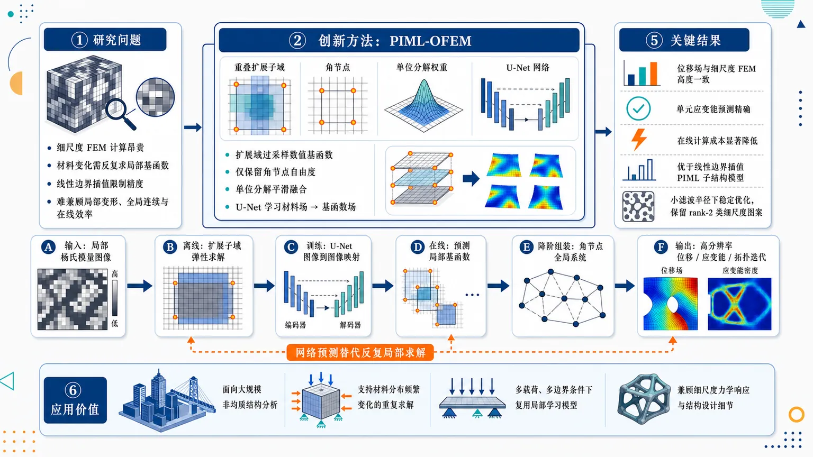
研究问题大规模非均质结构的高分辨率分析与拓扑优化中，细尺度有限元计算昂贵，传统多尺度方法需随材料分布变化反复求解局部基函数，已有 PIML 子结构法又受线性边界位移插值限制，难以同时获得高精度局部变形、全局连续位移场和高效在线求解。创新方法提出 PIML-OFEM：用扩展域过采样构造局部数值基函数，避免在目标子结构边界强加预设位移插值；每个子结构仅保留角节点自由度以压缩全局规模；用单位分解重叠公式平滑混合独立局部基函数，形成全局连续位移场；用 U-Net 学习“局部杨氏模量分布 → 数值基函数”的问题无关映射，在线阶段用网络预测替代反复局部弹性求解。工作流程输入局部杨氏模量分布图像；在离线阶段于扩展子域求解局部弹性问题，生成过采样数值基函数训练数据；U-Net 学习材料场到基函数场的图像到图像映射；在线阶段对每个重叠子结构预测局部基函数；只组装角节点自由度的降阶全局系统；通过单位分解权重在重叠区域融合局部解；输出高分辨率全局位移场、单元应变能分布和拓扑优化迭代响应。关键结果数值算例显示，PIML-OFEM 的位移场和单元应变能与细尺度有限元结果高度一致；相较直接细尺度 FEM 降低在线计算成本；相较基于线性边界插值的 PIML 子结构模型提高精度；在高分辨率拓扑优化中可使用小滤波半径保持稳定迭代，并保留类似 rank-2 微结构的细尺度局部图案。应用价值为大规模非均质结构分析、高分辨率拓扑优化和材料分布频繁变化的重复求解场景提供高效物理-数据混合降阶框架；适合在多载荷、多边界条件下复用同一局部学习模型，减少在线局部求解开销，同时保留细尺度力学响应和结构设计细节。第一部分：核心概览
PIML-OFEM 将重叠有限元技术与问题无关机器学习结合，用 U-Net 从局部杨氏模量分布预测过采样数值基函数，避免多尺度方法反复在线求解局部基函数，也克服传统 PIML 子结构法对边界位移插值的依赖。其核心地位在于：面向大规模非均质结构分析与高分辨率拓扑优化，提供一种兼具可复用性、连续性、局部精细表达能力和在线计算效率的物理-数据混合降阶框架。
---
第二部分：结构化快速回顾
《PIML-OFEM: A New Large-Scale Structural Analysis Method Based on Problem-Independent Machine Learning and Overlapping Finite Element Technique》（None，）
背景
大规模非均质结构的高分辨率分析与设计需要同时满足高精度降阶建模和高效在线计算。传统多尺度方法需要针对不同材料分布反复构造局部基函数；已有 PIML 子结构方法受限于预设边界位移插值。
方法
PIML-OFEM 采用重叠有限元法，每个子结构仅保留角节点自由度。通过在扩展域上求解局部弹性问题构造过采样数值基函数，再限制到目标子结构中。独立构造的局部基函数通过单位分解重叠公式混合，得到全局连续位移场。U-Net 学习从局部杨氏模量分布到数值基函数的映射。
结果
数值算例显示，PIML-OFEM 在位移和单元应变能上与细尺度有限元结果高度一致；相比直接有限元分析降低在线计算成本；相比基于线性边界插值的 PIML 子结构模型提高精度。
讨论
核心优势来自两点：一是过采样局部基函数消除了目标子结构边界上的预设位移插值；二是问题无关学习模型可跨载荷工况和全局边界条件复用。
局限
可用材料未提供完整正文、训练集规模、网络超参数、误差统计、算例尺寸、速度提升倍数、拓扑优化参数等细节，因此无法核查泛化范围、训练成本、边界条件复杂性、三维适用性和极端材料对比度下的稳定性。
结论
PIML-OFEM 提供一种面向大规模非均质结构分析和高分辨率拓扑优化的高效物理-数据方法，尤其适合需要大量重复求解、材料分布频繁变化或拓扑迭代分辨率较高的场景。
---
第三部分：逐章节冷凝解析
可用材料仅包含 arXiv 页面摘要与元数据；未提供 PDF 正文，因此无法按完整论文原始章节标题逐章解析。以下严格基于可见原始标题与摘要内容进行证据化冷凝，避免臆造章节、实验数据、表格数值或模型超参数。
---
Title
#### A hybrid method combining PIML and OFEM is proposed
题名明确给出方法组合：PIML-OFEM 是一种基于 problem-independent machine learning 与 overlapping finite element technique 的大规模结构分析方法。英文题名为 *"PIML-OFEM: A New Large-Scale Structural Analysis Method Based on Problem-Independent Machine Learning and Overlapping Finite Element Technique"*。
关键含义是：方法并非单纯神经网络替代有限元，也非传统多尺度有限元，而是将局部物理基函数构造、重叠有限元连续拼接和机器学习加速预测组合。
#### The target application is large-scale structural analysis
题名中的 *"Large-Scale Structural Analysis"* 表明目标问题是大规模结构分析，而非低维玩具问题或单一材料均质结构分析。结合摘要中 *"High-resolution analysis and design of large-scale heterogeneous structures"*，方法主要面向高分辨率、非均质、多材料分布变化的结构力学问题。
#### The learning strategy is problem-independent
题名中的 *"Problem-Independent Machine Learning"* 指模型不是针对单一载荷或单一边界条件训练一个特定求解器，而是学习更局部、更可迁移的映射。摘要进一步说明 U-Net 可 *"be reused across load cases and global boundary conditions"*，即跨载荷工况和全局边界条件复用。
---
Abstract
#### The central computational challenge is high-resolution heterogeneous structural analysis
研究对象是大规模非均质结构的高分辨率分析与设计，核心矛盾是精度和效率之间的冲突。摘要开头给出问题定义：*"High-resolution analysis and design of large-scale heterogeneous structures require accurate reduced-order models and efficient online computation."*
这里的两个技术指标分别是：
- accurate reduced-order models：降阶模型必须保留足够的局部力学细节；
- efficient online computation：在线阶段必须比直接细尺度有限元更快，适合重复求解或拓扑优化迭代。
#### Existing multiscale methods suffer from repeated local basis construction
传统多尺度方法的瓶颈在于：材料分布一变，局部基函数通常需要重新构造。摘要明确指出：*"Existing multiscale methods must repeatedly construct local basis functions for different material distributions"*。
这意味着若用于拓扑优化，每次设计变量更新都会改变局部材料场，进而触发大量局部问题求解，在线成本高。
#### Previous PIML substructure methods are limited by prescribed boundary interpolation
已有 PIML 子结构方法虽然具备问题无关学习潜力，但受限于预设边界位移插值。摘要给出限制：*"substructure-based problem-independent machine learning (PIML) methods can be limited by prescribed boundary displacement interpolation."*
关键问题在于：若边界位移只用线性或低阶插值表达，局部复杂变形模式会被压缩，尤其在非均质材料、细尺度孔洞或复杂拓扑边界附近容易损失精度。
#### PIML-OFEM is an overlapping finite element method accelerated by machine learning
方法定义清晰：*"We propose PIML-OFEM, an overlapping finite element method accelerated by problem-independent machine learning."*
这句话包含两个核心组成：
- overlapping finite element method：通过重叠子域构造和混合局部解；
- accelerated by problem-independent machine learning：用机器学习替代重复局部求解，而不是完全抛弃有限元物理结构。
#### Only corner-node degrees of freedom are retained in each substructure
自由度压缩策略是每个子结构仅保留角节点自由度。摘要写道：*"Each substructure retains only its corner-node degrees of freedom."*
这说明全局系统规模被显著降低；非角节点的细尺度行为由局部数值基函数内嵌表达，而不作为全局未知量直接求解。
#### Oversampled numerical basis functions are built on extended domains
局部基函数不是在目标子结构本身直接构造，而是在扩展域上求解局部弹性问题后再限制回目标子结构。摘要给出具体过程：*"Oversampled numerical basis functions are constructed by solving local elasticity problems on extended domains and restricting the solutions to the target substructure"*。
Oversampling 的意义在于降低人工边界条件对目标子结构内部基函数的污染，使基函数更接近真实全局响应。
#### Prescribed boundary displacement interpolation is eliminated
过采样构造的直接收益是去除目标子结构边界上的预设位移插值。摘要明确写道：*"eliminating prescribed displacement interpolation on its boundary."*
这正是相对于传统 PIML 子结构方法的关键改进：不再强迫局部边界服从低阶插值模式，从而提升复杂材料分布下的局部变形表达能力。
#### Partition-of-unity blending produces a globally continuous displacement field
各子结构的局部基函数是独立构造的，需要通过重叠公式拼接成全局连续位移场。摘要写道：*"Independently constructed local bases are blended through a partition-of-unity overlapping formulation to obtain a globally continuous displacement field."*
这里的 partition-of-unity 作用是对重叠区域内多个局部近似进行加权混合，保证整体位移场连续，避免非重叠子结构拼接常见的界面不连续或弱连续误差。
#### U-Net learns the local material-to-basis mapping
机器学习模块采用 U-Net，学习从局部杨氏模量分布到数值基函数的映射。摘要原文为：*"A U-Net learns the mapping from local Young's modulus distributions to numerical basis functions"*。
输入是局部 Young's modulus distributions，输出是对应的 numerical basis functions。这是一种局部算子学习思想：网络学习材料场与局部力学响应基之间的关系。
#### The neural network replaces repeated online local solves
U-Net 的直接计算作用是替代在线阶段反复局部求解。摘要写道：*"replacing repeated online local solves"*。
这说明局部弹性问题仍可用于离线生成训练数据，但在线阶段通过网络前向传播快速生成基函数，从而降低总求解成本。
#### The model is reusable across load cases and global boundary conditions
模型具有问题无关性，摘要给出具体复用范围：*"allowing the model to be reused across load cases and global boundary conditions."*
这一区别非常关键：若模型学习的是全局载荷到全局位移的映射，其泛化通常依赖特定边界条件；而 PIML-OFEM 学习的是局部材料分布到局部基函数的映射，因此更容易跨全局问题设置复用。
#### Numerical examples agree closely with fine-scale FEM
数值验证目标是与细尺度有限元结果对比。摘要写道：*"Numerical examples show close agreement with fine-scale finite element results in displacement and elemental strain energy."*
两个验证指标分别是：
- displacement：位移场精度；
- elemental strain energy：单元应变能精度，反映局部能量分布和拓扑优化敏感性质量。
摘要未提供具体误差百分比、网格规模、样本量或统计显著性。
#### PIML-OFEM reduces online computational cost relative to direct FEM
计算效率优势相对于直接有限元分析。摘要写道：*"PIML-OFEM reduces online computational cost relative to direct finite element analysis"*。
这说明在线阶段通过角节点自由度压缩和 U-Net 预测基函数降低成本；但可见材料未提供加速倍数、CPU/GPU 配置或矩阵规模。
#### PIML-OFEM improves accuracy over linear-interpolation PIML substructure models
精度比较对象是基于线性边界插值的 PIML 子结构模型。摘要给出：*"improves accuracy over PIML substructure models based on linear boundary interpolation."*
该比较直接支撑创新点：PIML-OFEM 并非只比直接有限元更快，也比已有 PIML 子结构降阶模型更准，主要原因是避免了预设边界位移插值。
#### Topology optimization remains stable at high resolution and small filter radii
拓扑优化应用中，方法支持高分辨率稳定迭代，并能使用小滤波半径。摘要写道：*"In topology optimization, the method supports stable high-resolution iterations with small filter radii"*。
小滤波半径通常意味着更少的人为平滑、更高的结构细节保留能力；但也更容易产生数值不稳定或棋盘格。摘要表明 PIML-OFEM 在这类条件下仍能稳定工作。
#### Fine-scale topology features are preserved
拓扑优化结果能够保留精细结构特征。摘要写道：*"preserves fine-scale features, including local patterns resembling rank-2 microstructures."*
rank-2 microstructures 是经典最优材料微结构理论中的高效层合模式。局部图案与 rank-2 微结构相似，说明方法在高分辨率设计中没有过度抹平局部结构模式。
#### The framework is positioned as a physics-data method
摘要结尾将框架定位为物理和数据融合方法：*"The framework provides an efficient physics-data approach for large-scale heterogeneous structural analysis and high-resolution topology optimization."*
这里的 physics-data approach 表示物理控制方程和有限元结构仍然存在，机器学习承担局部基函数预测的加速角色，而不是纯黑箱替代力学求解器。
---
Comments
#### The manuscript is submitted to Acta Mechanica Sinica
投稿信息显示稿件状态为投稿至期刊而非正式发表。元数据写道：*"Submitted to Acta Mechanica Sinica"*。
这意味着当前版本为 arXiv 预印本，尚不能等同于同行评审后最终版本。
---
Subjects
#### The primary arXiv category is numerical analysis
学科分类为数学中的数值分析。元数据给出：*"Subjects: Numerical Analysis (math.NA) ; Computational Physics (physics.comp-ph)"*。
这表明论文主要贡献落在数值方法、计算力学和机器学习加速求解交叉区域。
#### The MSC classes indicate computational mechanics, topology optimization, and machine learning
MSC 分类为 *"74S05, 74P15, 68T07"*。
其大致对应：
- 74S05：固体力学中的有限元和数值方法；
- 74P15：结构优化、拓扑优化相关问题；
- 68T07：人工智能与机器学习相关方法。
这与摘要中的结构分析、拓扑优化和 U-Net 学习完全一致。
---
第四部分：深度理解与语言支持
1. 术语解析
#### Problem-independent machine learning
Problem-independent machine learning 指模型学习的对象不绑定某一个具体全局问题，例如固定载荷、固定边界条件或固定结构几何。这里的语境是：U-Net 学习 *"the mapping from local Young's modulus distributions to numerical basis functions"*，因此可 *"be reused across load cases and global boundary conditions"*。
微妙差别在于：
- problem-specific ML：直接学习某个问题的输入到输出，例如载荷到位移；
- problem-independent ML：学习可迁移的局部构件或算子，例如材料分布到局部基函数。
#### Oversampled numerical basis functions
Oversampled numerical basis functions 是在比目标子结构更大的扩展区域上构造的局部基函数。摘要表达为 *"solving local elasticity problems on extended domains and restricting the solutions to the target substructure"*。
“oversampled” 并不意味着机器学习样本更多，而是指空间区域更大。其作用是减少局部人工边界条件对目标区域内部解的污染。
#### Partition-of-unity overlapping formulation
Partition-of-unity overlapping formulation 是一种将多个局部近似拼接成全局连续场的加权方法。摘要中对应 *"blended through a partition-of-unity overlapping formulation to obtain a globally continuous displacement field"*。
关键点是权重函数在重叠区域求和为 1，因此局部解可以平滑叠加，不会导致整体位移场断裂。
#### Corner-node degrees of freedom
Corner-node degrees of freedom 指每个子结构只保留角点处的位移自由度作为全局未知量。摘要写道 *"Each substructure retains only its corner-node degrees of freedom."*
这是一种强降阶策略：内部节点和边界非角节点不进入全局系统，而由局部基函数恢复细尺度位移。
#### Elemental strain energy
Elemental strain energy 是每个有限元单元中的应变能，摘要中作为验证指标：*"close agreement with fine-scale finite element results in displacement and elemental strain energy."*
相比整体柔度或总能量，单元应变能更敏感地反映局部应力/应变分布，对于拓扑优化中的灵敏度计算尤其重要。
---
2. 疑难查证
#### 为什么“过采样”能消除边界插值限制？
局部子结构基函数通常需要人为指定边界位移模式，例如线性插值。问题在于，真实全局结构中的局部边界变形可能很复杂，尤其当材料分布高度非均质时，边界变形并不满足简单线性模式。
PIML-OFEM 的处理方式是：不直接在目标子结构边界上强行施加插值，而是在更大的扩展域上解局部弹性问题，再把解截取到目标子结构。这样，目标子结构的边界已经位于扩展域内部，其位移由局部弹性平衡自然产生，而不是由人为插值规定。摘要中的关键表述是 *"constructed by solving local elasticity problems on extended domains and restricting the solutions to the target substructure, eliminating prescribed displacement interpolation on its boundary."*
#### 为什么只保留角节点自由度仍能表达复杂位移？
角节点自由度负责全局低维耦合，数值基函数负责在子结构内部恢复细尺度变形。可理解为：全局求解只决定每个粗单元角点如何移动；一旦角点位移确定，局部基函数就把这些角点位移“展开”为整个子结构内部的高分辨率位移场。
关键不在于角点自由度本身很丰富，而在于每个角点自由度对应的数值基函数已经编码了局部材料分布下的真实弹性响应。因此，内部复杂性被转移到基函数中，而不是直接增加全局未知量。
#### 为什么 U-Net 适合学习杨氏模量到基函数的映射？
局部杨氏模量分布可以看成二维图像或多通道场，数值基函数也是空间场。U-Net 擅长学习图像到图像的映射，并通过编码器-解码器结构同时捕捉局部纹理和较大范围上下文。这里的任务正是从局部材料场预测局部力学响应场，摘要对应 *"A U-Net learns the mapping from local Young's modulus distributions to numerical basis functions"*。
#### 为什么拓扑优化中特别强调小滤波半径？
拓扑优化常用密度滤波抑制棋盘格和网格依赖。滤波半径越大，结构越平滑，细节越少；滤波半径越小，越能保留高分辨率细节，但也越容易不稳定。摘要中 *"stable high-resolution iterations with small filter radii"* 表示该方法在更高细节保真条件下仍能支持稳定优化。
---
第五部分：创新评估与关联
1. 创新性判断
#### Innovation relative to classical multiscale finite element methods
传统多尺度有限元方法通常需要针对每种局部材料分布重新求解局部基函数。PIML-OFEM 的新颖性在于把这一步转化为 U-Net 的局部映射预测，即从 local Young's modulus distributions 到 numerical basis functions。摘要中的证据是 *"replacing repeated online local solves"*。
解决的问题：材料分布频繁变化时，尤其在拓扑优化迭代中，避免反复在线构造局部基函数。
#### Innovation relative to prior PIML substructure models
已有 PIML 子结构模型的问题是边界位移插值预设过强。PIML-OFEM 通过扩展域过采样和重叠有限元拼接避免目标子结构边界插值。摘要中的证据是 *"eliminating prescribed displacement interpolation on its boundary"* 以及 *"improves accuracy over PIML substructure models based on linear boundary interpolation."*
解决的问题：线性边界插值难以表达复杂非均质材料引起的局部边界变形。
#### Innovation relative to pure neural operators or black-box surrogate models
PIML-OFEM 并不直接用神经网络预测全局位移，而是预测局部数值基函数，再通过有限元式全局系统和单位分解重叠公式获得全局连续场。摘要中的证据是 *"partition-of-unity overlapping formulation to obtain a globally continuous displacement field"*。
解决的问题：纯黑箱模型在边界条件变化、载荷变化和物理一致性方面常有泛化风险；PIML-OFEM 通过局部物理基函数和全局有限元耦合保留结构力学约束。
#### Innovation for high-resolution topology optimization
PIML-OFEM 支持高分辨率拓扑优化，并在小滤波半径下保持稳定，还能保留类似 rank-2 微结构的局部模式。摘要中的证据是 *"supports stable high-resolution iterations with small filter radii and preserves fine-scale features, including local patterns resembling rank-2 microstructures."*
解决的问题：高分辨率拓扑优化通常计算成本高、细节易被滤波或降阶模型抹平；该方法试图同时保留细尺度结构特征和可接受在线计算成本。
#### Overall novelty
核心创新是三者耦合：
- 过采样局部数值基函数：降低边界插值误差；
- 重叠有限元单位分解拼接：保证全局连续位移场；
- 问题无关 U-Net 基函数预测：降低在线局部求解成本并支持跨载荷、跨边界条件复用。
这种组合使 PIML-OFEM 在大规模非均质结构分析中兼具物理可解释性、局部高保真表达和在线计算效率。
-
10
📊 含图深析
📄 摘要：对水平集界面平流的PINN做69组系统消融，覆盖线性平移、刚体旋转、反向涡变形和Zalesak旋转槽盘四个基准。结果表明学习率调度器和eikonal权重高度依赖任务，StepLR与CosineAnnealing并不存在通用最优。
💡 亮点：PINN在水平集平流里并没有统一超参数最优解。该工作把“调参经验”变成了可比较的基准结论。
📖 展开分析 + 配图
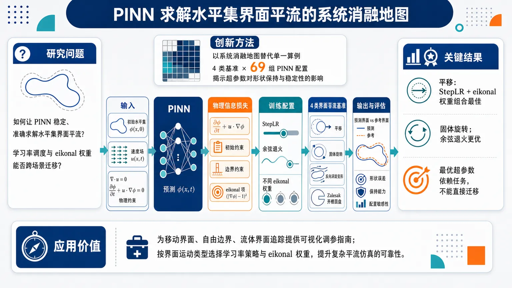
研究问题如何让物理信息神经网络（PINN）稳定、准确地求解水平集界面平流问题，并判断学习率调度、eikonal 权重等训练超参数是否能在不同界面运动场景之间通用迁移。创新方法以“系统消融地图”而非单一算例展示 PINN 能力：围绕平移、固体旋转、反向涡旋变形、Zalesak 旋转开槽圆盘四类典型界面平流基准，开展 69 组 PINN 配置对比，重点揭示学习率调度策略与 eikonal 正则权重对界面形状保持、数值稳定性和跨场景泛化的影响。工作流程输入初始水平集函数、速度场与物理约束；构建 PINN 预测随时间演化的水平集场；在损失函数中加入平流方程残差、初始/边界约束与 eikonal 项；分别切换 StepLR、余弦退火等学习率调度和不同 eikonal 权重；在四个基准任务上训练 69 组模型；比较预测界面与真实/参考界面的形状误差、保持能力和配置敏感性。关键结果平移基准中，StepLR 与 eikonal 权重组合表现最佳；固体旋转基准中，余弦退火学习率调度更优；不同界面运动和变形场景对应不同最优超参数；学习率调度与 eikonal 权重不能直接从一个基准复制到另一个基准，PINN 在水平集平流中的表现高度依赖任务类型和训练配置。应用价值为使用 PINN 模拟移动界面、自由边界、流体界面追踪等问题提供可视化的调参指南：研究者可以根据界面运动类型选择更合适的学习率策略和 eikonal 权重，避免盲目迁移超参数，提高 PINN 在复杂界面平流仿真中的可靠性。核心概览
这篇论文针对水平集界面对流中的物理信息神经网络（PINNs）做系统消融研究，比较训练策略在多个基准上的表现，属于PINNs在界面演化/偏微分方程求解方向。
方法要点
- 以水平集界面对流问题作为研究对象，评估 PINNs 的训练与优化表现。
- 在四个基准（TR、RO、RV、ZD）上开展系统实验。
- 共进行69组实验，用于比较不同训练配置的影响。
- 重点考察了学习率调度器与eikonal 权重等超参数/训练设置。
- 通过消融方式分析各设置对不同基准任务的适用性。
关键结果
- 最优训练策略高度依赖具体基准问题，不存在通用最优配置。
- 学习率调度器不能跨问题直接迁移，在一个基准上有效的策略未必适用于其他基准。
- 说明 PINNs 在该类问题上对训练细节较敏感，需要按任务定制调参。
创新性判断
- 这篇工作的新颖点很可能不在于提出新网络结构，而在于对PINNs 处理水平集界面对流的训练策略进行系统性基准分析。
- 相比只报告单次实验的工作，它的价值在于揭示：超参数与调度策略的“可迁移性”有限，这对同方向研究有方法论参考意义。
- 但具体创新强度仍需谨慎判断，因为摘要未详述是否提出了新的算法改进或只是经验性评测。
-
11
📊 含图深析
📄 摘要：设计BaMnO3|KTaO3异质结构，将KTaO3一侧的强Rashba自旋轨道相互作用近邻诱导到本身是稳健反铁磁体的BaMnO3中。DFT结果显示BaMnO3在费米能级附近出现显著带劈裂，为反铁磁自旋电子学提供候选平台。
💡 亮点：靠KTaO3近邻效应把Rashba耦合引入BaMnO3反铁磁层。它指向无杂散磁场的反铁磁自旋电子学器件。
📖 展开分析 + 配图
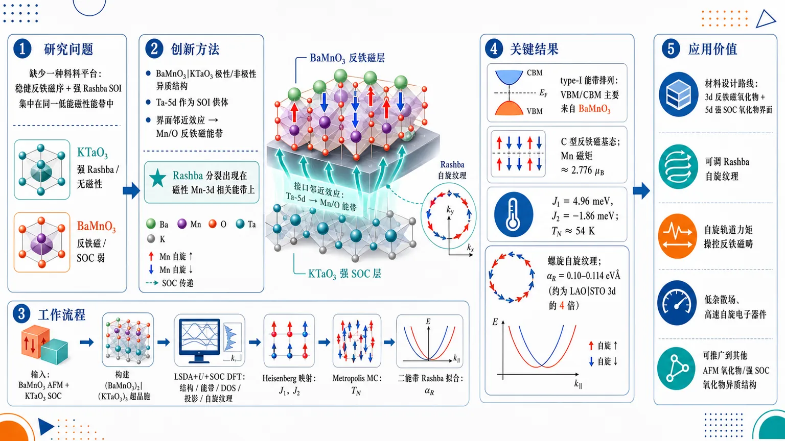
研究问题反铁磁自旋电子学缺少一种材料平台，能把稳健反铁磁序与足够强的 Rashba 自旋轨道相互作用集中在同一低能磁性能带中；现有 KTaO₃ 有强 Rashba 但无磁性，BaMnO₃ 有 Mn-3d 反铁磁性但本征 SOC 弱。创新方法构建 BaMnO₃|KTaO₃ 极性/非极性氧化物异质结构：让 KTaO₃ 的 Ta-5d 强自旋轨道耦合作为“SOI 供体”，通过界面邻近效应传递给 BaMnO₃ 的 Mn/O 杂化反铁磁能带，使 Rashba 分裂真正出现在磁性 Mn-3d 相关能带上，而不是 KTaO₃ 自身能带上。工作流程输入 BaMnO₃ 反铁磁层与 KTaO₃ 强 SOC 层，搭建 (BaMnO₃)₂|(KTaO₃)₃ 反演不对称超晶胞；用 LSDA+U+SOC 的 DFT 计算结构、能带、态密度、轨道投影与自旋纹理；将不同磁构型能量映射到 Heisenberg 模型，提取交换常数；用 Metropolis Monte Carlo 估算 Néel 温度；最后用二能带 Rashba 模型拟合能带分裂，得到 Rashba 系数。关键结果费米能级附近价带和导带均主要来自 BaMnO₃，形成 type-I 能带排列；C 型反铁磁为基态，Mn 自旋磁矩约 2.776 μB，主要交换为 J₁=4.96 meV、J₂=-1.86 meV，Néel 温度约 54 K；BaMnO₃ 的 Mn/O 能带出现螺旋自旋纹理和线性 Rashba 分裂，Rashba 系数达 0.10–0.114 eVÅ，约为 LaAlO₃|SrTiO₃ 中 3d 电子 Rashba 系数的四倍。应用价值提供一条可视化的材料设计路线：把强反铁磁 3d 氧化物与强 SOC 5d 氧化物叠成界面，让磁性能带获得可调 Rashba 自旋纹理；该机制有望用于自旋轨道力矩操控反铁磁畴、低杂散场高速自旋电子器件，并可推广到其他反铁磁氧化物/强 SOC 氧化物异质结构。第一部分：核心概览（Overview）
该研究提出 BaMnO₃|KTaO₃ 极性/非极性氧化物异质结构，用 KTaO₃ 的 Ta-5d 强自旋轨道耦合通过邻近效应在 BaMnO₃ 的 Mn-3d 反铁磁能带中诱导 线性 Rashba 相互作用。DFT+U+SOC 结果显示，费米能级附近能带主要来自 BaMnO₃，Mn 位点具有约 2.776 μB 自旋磁矩，C 型反铁磁基态稳定，Monte Carlo 估算 Néel 温度约 54 K。诱导 Rashba 系数达 0.10–0.114 eVÅ，约为 LaAlO₃|SrTiO₃ 中 3d 电子 Rashba 系数的四倍。核心地位在于：把 强反铁磁性与可观 Rashba 自旋轨道相互作用耦合到同一磁性 3d 子系统，为反铁磁自旋电子学提供了材料设计路线。
---
第二部分：结构化快速回顾
《Proximity-induced Rashba spin-orbit interaction in BaMnO₃|KTaO₃ heterostructure for antiferromagnetic spintronics》（None，）
背景
反铁磁自旋电子学需要同时具备 稳健反铁磁序和足够强的 Rashba 型自旋轨道相互作用。KTaO₃ 具有强 Rashba 分裂但无磁性，BaMnO₃ 具有 Mn-3d 反铁磁性但本征自旋轨道耦合较弱。通过氧化物异质结构的邻近效应，有望把 KTaO₃ 的强 SOI 传递给 BaMnO₃ 的磁性 Mn 能带。
方法
采用 VASP DFT，构建周期性 (BaMnO₃)₂|(KTaO₃)₃ 超晶胞，面内晶格常数固定为 3.988 Å。使用 LSDA+U+SOC，Ta-5d 与 Mn-3d 的 (Uₑff) 分别为 1 eV 和 3 eV，平面波截断能 450 eV，k 网格 11×11×1。磁交换映射到 Heisenberg 模型，并用 Metropolis Monte Carlo 估算有序温度。
结果
异质结构呈 type-I 能带排列，费米能级附近价带和导带均主要来自 BaMnO₃。C 型反铁磁构型能量最低；Mn 自旋磁矩 2.776 μB，轨道磁矩 0.028 μB。主要交换相互作用为 (J₁₌₄.96) meV、(J₂₌₋₁.86) meV，Monte Carlo 得到反铁磁有序温度约 54 K。BaMnO₃ 能带出现明显 Rashba 型分裂，线性 Rashba 系数为 0.10 eVÅ 与 0.114 eVÅ。
讨论
Rashba 分裂不是来自 KTaO₃ 能带直接穿越费米能级，而是来自 Ta-5d 强 SOI 对 Mn/O 杂化能带的邻近诱导。Ta-d 态位于较高导带能区，避免与费米能级附近 Rashba 分裂 Mn 能带混杂。与 LaAlO₃|SrTiO₃ 相比，Mn-3d 态中的 Rashba 系数显著更大；与 MnBi₂Te₄ 相比，Rashba 分裂真正发生在磁性 Mn 相关能带上，更适合自旋轨道力矩调控反铁磁畴。
局限
计算可承受的 (BaMnO₃)₂|(KTaO₃)₃ 超晶胞尚未形成导电界面；电势模型预计至少需要 10 个 KTO 单胞厚度才出现电荷转移。Néel 温度约 54 K，低于室温。研究为理论预测，尚缺少实验生长、界面缺陷、氧空位、应变弛豫和有限温输运验证。
结论
BaMnO₃|KTaO₃ 异质结构可在同一 BaMnO₃ 子系统中实现 反铁磁序与中等强度线性 Rashba 相互作用。邻近诱导 SOI 为反铁磁自旋电子学提供了可推广设计原则：将强 SOI 非磁材料与稳健反铁磁 3d 氧化物耦合，使磁性能带获得可用于自旋轨道力矩调控的 Rashba 纹理。
---
第三部分：逐章节冷凝解析（Section-by-Section Condensing）
Abstract
Antiferromagnetic spintronics needs robust magnetism and Rashba-like coupling
反铁磁自旋电子学面向超快电子器件，但核心材料瓶颈是难以同时具备 强反铁磁性与足够 Rashba 型自旋轨道相互作用。摘要直接把问题界定为材料设计难题：*"Antiferromagnetic spintronics, a promising technology for ultra-fast electronic devices, faces several challenges, including the lack of materials simultaneously hosting robust antiferromagnetism and adequate Rashba-like interaction."*
BaMnO₃|KTaO₃ is designed as a proximity-effect heterostructure
设计逻辑是把 BaMnO₃作为反铁磁组分，把 KTaO₃作为强 SOI/Rashba 组分，通过界面邻近效应把 KTaO₃ 的 Rashba 相互作用传递给 BaMnO₃：*"We design a heterostructure of BaMnO₃|KTaO₃ with the idea of proximity-inducing moderate Rashba spin-orbit interaction from KTaO₃ part to BaMnO₃ part, where the latter is already a robust antiferromagnet."*
DFT predicts BaMnO₃-derived Fermi-level bands with finite Mn magnetism
DFT 计算显示费米能级附近主要是 BaMnO₃ 能带，并且 Mn 原子保留显著磁矩与可观有序温度。摘要中的关键证据为：*"the heterostructure reveals BaMnO₃ bands near the Fermi level with a significant magnetic moment per Mn atom and a decent ordering temperature."*
Linear Rashba interaction is induced in BaMnO₃ bands
最重要的物理结果是 BaMnO₃ 能带本身出现 线性 Rashba 相互作用，并具有可观 Rashba 系数，而非单纯 KTaO₃ 能带贡献：*"the BaMnO₃ bands in the heterostructure exhibit linear Rashba interaction with a sizable Rashba coefficient, owing to its proximity to KTaO₃."*
---
I Introduction
SOI plus inversion asymmetry creates spin splitting and helical textures
自旋轨道相互作用（SOI）与反演对称性破缺共同导致能带自旋劈裂和螺旋自旋纹理，这些是实现 可调自旋轨道力矩（spin-orbit torque, SOT）的基础。关键表述为：*"Spin-orbit interaction (SOI) partnered with inversion asymmetry is known to result in spin splitting and helical spin textures that may help realize tunable spin-orbit torque, a key to antiferromagnetic spintronics."*
The central challenge is coexisting antiferromagnetism and strong SOI
领域瓶颈不是单独获得反铁磁性或 SOI，而是二者同时在可用能带中出现。引言明确指出：*"simultaneously realizing robust antiferromagnetism and moderately strong SOI has been a challenge, slowing the progress in this area."*
Oxide heterostructures provide a broad platform for emergent interfacial physics
氧化物异质结构可承载 二维电子系统、磁性、Rashba 相互作用等多种界面现象，因此是自旋电子学材料设计的重要平台。证据为：*"Oxide heterostructures host several attractive features ranging from a two-dimensional electron system to magnetism and Rashba interaction, making them excellent testbeds for future technology."*
LaAlO₃|SrTiO₃ has Rashba coupling but weak coefficient
既有 LaAlO₃|SrTiO₃ 体系曾被预测具有 Rashba 相互作用，但实验/估算 Rashba 系数较弱。相关句子为：*"Zhong et al. predicted a Rashba interaction in LaAlO₃|SrTiO₃ heterostructure, for which Lin et al. estimated a weak Rashba coefficient."* 这构成新体系设计的比较基准。
KTaO₃ has giant Rashba splitting but lacks magnetism
KTaO₃ 的优势是强 Rashba 分裂，缺点是没有磁性：*"KTaO₃ (KTO) (001) surface shows a giant Rashba splitting, although it hosts no magnetism."* 这使 KTO 成为理想的 SOI 供体，而非完整反铁磁自旋电子学材料。
Previous LaAlO₃|SrIrO₃|SrTiO₃ design had moderate Rashba-Dresselhaus coupling but weak Ir magnetism
早期 LaAlO₃|SrIrO₃|SrTiO₃ 方案中，Ir-5d 态带来适中 Rashba-Dresselhaus 相互作用，但反铁磁性较弱，磁矩较小。证据为：*"we observed moderate Rashba-Dresselhaus interaction, although a weak antiferromagnetism with a small magnetic moment coming from the Ir-5d states."*
Proximity effect is used as the design principle
邻近效应可使异质结构中一个组分的磁性、超导性或 SOI 传递到另一个组分，使整体性能超过各组分简单叠加。引言中的定义性表达为：*"some features of one component of a heterostructure, including magnetism, superconductivity, and spin-orbit interaction, are induced to the other component, making the heterostructure host features far more promising for technology than the collection of the individual components’ features."*
KTO is paired with BMO because Ta-5d has strong SOI and Mn-3d has robust antiferromagnetism
材料选择具有互补性：KTO 的 Ta-5d提供强 SOI，BMO 的 Mn-3d提供反铁磁性。关键句为：*"we consider a heterostructure of KTO, a perovskite oxide showing strong Rashba interaction owing to Ta-5d states, with BaMnO₃ (BMO), a robust antiferromagnet owing to the Mn-3d states."*
Cubic BaMnO₃ is metastable but feasible under KTO epitaxy
BaMnO₃ 最稳定结构为六方相，但立方相可实现；在厚 KTO 衬底上外延生长时，由于晶格匹配合理，BMO 预期可稳定为立方相。证据包括：*"Although most stable in a hexagonal structure, a cubic phase of BMO can be realized."* 以及 *"when grown on a thick substrate of cubic KTO, BMO is expected to grow in a cubic phase with a reasonable lattice match."*
The heterostructure shows type-I band alignment with BMO valence and conduction edges
异质结构电子能带排列为 type-I：价带顶和导带底均来自 BMO。这意味着低能输运和 Rashba 分裂主要涉及 BMO 子系统。直接证据为：*"The electronic bands are found to align in a type-I fashion, where both valence band maximum and conduction band minimum correspond to the BMO part, owing to the electrostatic potential development."*
The intended outcome is proximity-induced Rashba SOI in an antiferromagnetic subsystem
引言的核心目标是让 BMO 获得适中 Rashba SOI，以缓解反铁磁自旋电子学中的实际材料挑战：*"our calculations reveal that a moderate Rashba spin-orbit interaction can be induced in the BMO part, paving the way to overcome many pragmatic challenges for technology based on antiferromagnetic spintronics."*
---
II Methodology
The simulated supercell is (BaMnO₃)₂|(KTaO₃)₃
计算对象是沿界面法向周期重复的超晶胞，包含 2 个 BMO 单胞厚度和 3 个 KTO 单胞厚度：*"We simulate a heterostructure with a periodically repeated supercell comprising three unit cell thick KTO and two unit cell thick BMO perpendicular to the interface, henceforth denoted as the (BaMnO₃)₂|(KTaO₃)₃ heterostructure."*
In-plane lattice constant is fixed to KTO value
模拟假设 BMO 外延生长在厚 KTO 衬底上，因此面内晶格常数固定为 3.988 Å，匹配 KTO；c 方向晶格常数允许优化。原始表述为：*"Assuming epitaxial growth of BMO on a thick substrate of KTO, we fix the heterostructure’s in-plane lattice constant to 3.988 Å matching that of KTO, and allow optimization for the lattice constant along the c-direction."*
DFT calculations use VASP
总能、电子结构和磁性性质均使用 VASP 实现的密度泛函理论计算：*"We employed density functional theory as implemented in the vasp code for the total energy, electronic structure, and magnetic properties calculations."*
SOC is included except during structure optimization
相对论性 自旋轨道相互作用（SOI/SOC）被用于除结构优化以外的所有计算，这对 Rashba 分裂和磁晶各向异性能量至关重要：*"Relativistic spin-orbit interaction (SOI) is considered for all calculations except structure optimization."*
LSDA+U parameters are orbital specific
交换关联泛函采用 LSDA+U，用于处理强电子关联；Ta-5d 与 Mn-3d 的 (Uₑff=U-J) 分别为 1 eV 和 3 eV：*"Local spin density approximation (LSDA) with Hubbard-U correction for strong electron-electron correction with Ueff = U − J = 1 and 3 eV for Ta-5d and Mn-3d states, respectively, is employed for describing the exchange-correlation functional."*
PAW and plane-wave cutoff are specified
离子势与波函数展开采用 PAW 方法和 450 eV 平面波截断能：*"The projector augmented wave (PAW) method, combined with a plane wave basis set with a cutoff energy of 450 eV, describes the potential and expands the wavefunctions."*
Brillouin-zone sampling uses 11×11×1 mesh
布里渊区积分采用改进四面体法，k 点网格为 Γ-centered 11×11×1：*"The Brillouin zone integrations are performed using the improved tetrahedron method over a Γ-centered 11 × 11 × 1 k-point mesh."*
Electronic and ionic convergence thresholds are strict
含 SOC 自洽计算能量阈值为 10⁻⁷ eV，离子优化力收敛阈值为 10⁻² eVÅ⁻¹：*"A small energy threshold of 10−7 eV is used for self-consistent calculations considering SOI."*；*"The atomic positions are optimized by minimizing the Hellman-Feynman forces on each atom to a tolerance of 10−2 eVÅ−1."*
---
III Electrostatic potential
Polar–nonpolar heterojunctions require electrostatic compensation
KTO 是极性材料，BMO 是非极性材料；二者形成异质结后会发展内建电场与电势，可能驱动界面电荷转移。开篇给出物理前提：*"The heterojunction between a polar and a nonpolar material experiences a charge transfer that plays a crucial role in its electronic properties."*
Charge transfer has an established electrostatic origin
尽管钙钛矿氧化物异质结中的电荷转移机制仍存在争论，但静电起源已被确立：*"While the mechanism of charge transfer at perovskite oxide heterojunctions is debated, the electrostatic origin of the phenomenon is established."*
KTO has alternating charged planes while BMO has neutral planes
沿 (001) 方向，KTO 单胞可视作交替排列的 ((mathrmTa⁵⁺O₂²⁻)⁺) 与 ((mathrmK⁺O²⁻)⁻) 平面，表面电荷密度分别为 (+σ) 与 (-σ)。BMO 单胞由 ((mathrmMn⁴⁺O₂²⁻)⁰) 和 ((mathrmBa²⁺O²⁻)⁰) 中性平面构成。证据为：*"a KTO unit cell nominally comprises a (Ta5+O2 2−)+ plane and a (K+O2−)− plane, resulting in an alternating arrangement of planes with +σ and −σ surface charge densities."*；*"a BMO unit cell nominally comprises a (Mn4+O2 2−)0 plane and a (Ba2+O2−)0 plane, both being charge neutral."*
Two inequivalent interfaces are formed
超晶格包含两个界面：((KO)⁻)/((MnO₂₎⁰) 和 ((BaO)⁰)/((TaO₂₎⁺)。原句为：*"The arrangement yields two heterojunctions: one between (KO)− and (MnO2)0 planes, and the other between (BaO)0 and (TaO2)+ planes."*
Electrostatic potential would diverge without charge transfer
若组分薄膜厚度增大而无界面电荷重排，静电势能会发散；为限制电势在阈值 (VTₕ) 内，需要在 MnO₂ 与 BaO 界面平面产生 (-σₜ) 与 (+σₜ) 转移电荷密度。关键句为：*"The corresponding electrostatic potential energy would diverge for a large thickness of the constituent films, unless some charge transfer takes place to the MnO2 and the BaO planes at the interfaces, leading to −σt and +σt surface charge densities, respectively, to contain the potential within a threshold value VTh."*
Threshold potential is determined by BMO band gap and valence-band offset
由于能带呈 type-I，小带隙材料 BMO 的价带顶和导带底落在 KTO 带隙内，因此阈值电势被设定为 BMO 带隙 (ǎrepsilon_gBMO) 与价带偏移 (Δ) 之和。证据为：*"As our calculations reveal a type-I band alignment where the valence band maximum and the conduction band minimum of the smaller band gap material BMO lies within the band gap of KTO, we expect the threshold potential VTh to be the sum of BMO’s band gap εgBMO and the valence band offset Δ."*
Electrostatic model gives the charge-transfer condition
电势阈值满足：
[
VTₕ=ǎrepsilon_gBMO+Δ
≥
fracnKTOaKTOσ2ϵKTO
-
fracnBMOaBMOσₜϵBMO.
]
这一式子中，KTO 部分贡献上升电势，BMO 部分贡献下降电势。原文解释为：*"The first term in the right-hand side of Eq. 1 corresponds to the uprising lines in the potential energy in the KTO part, while the second term represents the downward line in the BMO part."*
Charge transfer onset depends only on KTO thickness
模型给出界面电荷转移起始条件：
[
nKTO>
frac2ϵKTOVTₕaKTOσ.
]
关键物理结论是起始条件只依赖 KTO 厚度，而 BMO 厚度影响起始之后的电荷转移量。直接表述为：*"the onset of charge transfer at the interface depends only on the KTO thickness in the superlattice. In contrast, BMO thickness impacts the amount of charge transfer once the onset condition is met."*
Reasonable parameters predict 10 KTO unit cells for charge transfer onset
估算参数为 (ϵKTO=220ϵ₀)、(ϵBMO=22ϵ₀)、(ǎrepsilon_gBMO=1.08) eV、(Δ=-0.145) eV、(aKTO=3.988) Å。原文脚注给出：*"We use εKTO = 220ε0, ε0 being the free-space permittivity, εBMO = 22ε0, εgBMO = 1.08 eV, Δ = −0.145 eV, and aKTO = 3.988 Å for the calculations."* 基于这些参数，电荷转移起始需要 10 个 KTO 单胞厚度：*"we estimate that 10-unit-cell-thick KTO is required for the onset of a charge transfer."*
Thicker KTO enhances charge transfer while thicker BMO attenuates it
图 1(b) 显示 (σₜ/σ) 随 KTO 与 BMO 厚度变化的景观：KTO 厚度增加促进电荷转移，BMO 厚度增加削弱电荷转移。原句为：*"The figure suggests a required onset of charge transfer with at least 10 unit cell thick KTO and more charge transfer with increasing KTO thickness, while a thicker BMO layer would attenuate the charge transfer."*
The superlattice has no asymptotic charge-transfer limit
不同于 KTaO₃ slab 或 LaAlO₃|SrTiO₃，BMO|KTO 超晶格中 (σₜ/σ) 不趋于固定极限，而是随 KTO 厚度单调增加。证据为：*"Eq. 2 does not suggest any asymptotic limit for σt/σ in this superlattice; the ratio monotonically increases with increasing KTO thickness."*
Computational tractability forces use of a thinner nonconducting supercell
为模拟不同反铁磁构型，需要 2a×2b 面内尺寸；计算可承受性使 BMO 与 KTO 厚度分别限制为 2 和 3 个单胞。原句为：*"Simulating different antiferromagnetic arrangements requires a 2a × 2b in-plane breadth. To make our calculations tractable, we limit the thickness of BMO and KTO layers to 2 and 3 unit cells, respectively."* 该厚度不满足电荷转移条件，但仍可研究磁性与 Rashba 相互作用：*"Although the above discussion does not warrant a charge transfer in this limit, we can investigate the crucial magnetic properties and Rashba interaction within this computationally tractable simulation cell."*
---
IV Results and Discussion
Cubic BaMnO₃ is checked for mechanical and dynamical stability
由于 BaMnO₃ 最稳定相是六方结构，首先验证所用立方 BMO 的稳定性。弹性张量显示机械稳定，DFPT 声子谱无虚频，说明动态稳定。证据为：*"Since the hexagonal structure of BaMnO₃ is the most stable one, we begin by assessing the static and dynamic stability of the cubic BaMnO₃ structure considered here as a component of the heterostructure."*；*"We check the mechanical stability by calculating the elastic tensor and find the structure to be stable in its cubic form."*；*"we find the structure to be dynamically stable, since no imaginary phonon frequency is observed."*
The heterostructure is intentionally inversion-asymmetric
为允许 Rashba 型相互作用出现，超晶胞结构选择为反演不对称，即使没有额外结构畸变也能产生 Rashba 分裂。原句为：*"here we choose an inversion-asymmetric structure to allow for the possibility of Rashba-like interaction in the absence of any structural distortion."*
The calculated superlattice is an insulator with a 0.65 eV gap
含 SOC 的能带和态密度显示，所选 (BaMnO₃)₂|(KTaO₃)₃ 超晶格价带与导带之间有约 0.65 eV 带隙。证据为：*"The band structure and the density of states (DoS) calculated within spin-orbit interaction ... indicate a gap of ∼0.65 eV between the valence and the conduction bands for the superlattice of our choice."*
Fermi-level bands belong to the BMO part
费米能级附近上下能带均来自 BMO，投影电荷密度确认这一点。原文为：*"with all bands close to the Fermi level (below and above) corresponding to the BMO part, as seen from the projected charge density."* 这对反铁磁自旋电子学尤为关键，因为低能 Rashba 分裂发生在磁性 BMO 子系统。
A thicker KTO layer can make the interface conducting
尽管 3 单胞 KTO 不导电，电势模型预测增加 KTO 厚度可诱导电荷转移并形成导电界面；测试计算显示 (BaMnO₃)₂|(KTaO₃)₂₀ 异质结构具有导电界面。证据为：*"The interface can be made a conducting one by increasing the KTO layer thickness, as indicated in Eq. 2."*；*"Our test calculation with (BaMnO₃)₂|(KTaO₃)₂₀ heterostructure reveals a conducting interface."*
The tractable 2|3 heterostructure is still useful for SOI physics
虽然 (BaMnO₃)₂|(KTaO₃)₃ 尚不具备用于器件的导电界面，但能以可承受计算成本揭示 Rashba SOI，本征结论可迁移到更厚、导电的异质结构。原文为：*"Although the (BaMnO₃)₂|(KTaO₃)₃ heterostructure does not host a conducting interface desired for antiferromagnetic spintronics, we continue further calculations with this heterostructure, as we obtain invaluable insights about the spin-orbit interaction within an affordable computational cost that would be equally valid for a heterostructure with a conducting interface."*
C-type antiferromagnetism is the ground state
四种磁构型中，C 型反铁磁能量最低；以 C 型 AFM 为零能参考，FM 高 33.7 meV/Mn，A 型 AFM 高 34.5 meV/Mn，G 型 AFM 高 57.8 meV/Mn。证据为表 1 与文字：*"our results, summarized in Table 1, reveal the C-type antiferromagnetic arrangement to have the lowest energy."*
Mn magnetic moments remain large
C 型 AFM 中 Mn 自旋磁矩为 2.776 μB，轨道磁矩为 0.028 μB；FM 为 3.011 μB (0.027 μB)，A 型 AFM 为 2.981 μB (0.028 μB)，G 型 AFM 为 2.815 μB (0.028 μB)。表 1 标题明确：*"The energy difference per Mn atom, spin moment, and orbital moment at Mn sites obtained from our DFT calculations within LSDA + SOC + Ueff = 3 eV for different magnetic arrangements and (001) spin-quantization axis are tabulated here."*
The easy axis is in-plane along (110)
含 SOC 计算显示系统偏好 (110) 自旋量子化轴，即磁晶易轴。直接证据为：*"our calculations considering spin-orbit interaction reveal that the system prefers a (110) spin quantization axis, making it the magneto-crystalline easy axis."* 表 2 中 BMO|KTO 的 MAE 为：100 方向 0.123 meV/Mn，010 方向 0.125 meV/Mn，110 方向 0.000 meV/Mn，001 方向 0.080 meV/Mn。
KTO proximity enhances in-plane magnetic anisotropy
体相立方 BMO 近似磁晶各向同性；2 单胞 BMO slab 出现小的面内各向异性；与 KTO 构成异质结构后，各向异性显著增强，指向邻近诱导 SOI。关键原句为：*"A comparison of the magneto-crystalline anisotropy energy (MAE) for the BMO|KTO heterostructure with that of bulk BMO in cubic form and a 2 unit cell thick BMO slab ... indicates a small in-plane anisotropy for the BMO slab that gets reinforced upon heterostructuring with KTO due to proximity-induced spin-orbit interaction."* 另有结论：*"We find magneto-crystalline isotropy for bulk cubic BMO."*
Magnetic interactions are dominated by oxygen-mediated superexchange
Mn–Mn 磁交换通过氧原子介导，因此主要机制为 超交换（superexchange）。原句为：*"The magnetic exchange interaction between the Mn atoms is mediated via the oxygen atoms, making superexchange the dominant mechanism of the magnetic interaction."*
DFT energies are mapped onto a spin Hamiltonian
交换相互作用通过 DFT 总能映射到 Heisenberg 型自旋哈密顿量：
[
H=-sumᵢ,ⱼJᵢⱼěcSᵢḑotěcSⱼ₊sumᵢϵᵢaⁿ|ěcSᵢ|².
]
原文说明为：*"We estimate the strengths of the magnetic exchange interactions by mapping our DFT results onto a spin Hamiltonian."*
Magnetic anisotropy is neglected when estimating exchange constants
由于磁晶各向异性能量远小于交换相互作用，估算 (J) 时忽略各向异性项。证据为：*"Since the magneto-crystalline anisotropy energy is significantly weaker than the exchange interaction, we ignore the second term in Eq. 4 in the estimation of J."*
Two dominant exchange paths are identified
主要交换路径有两个：面外 (J₁) 和面内 (J₂)。表 3 给出：(J₁) 距离 3.77 Å，强度 4.96 meV；(J₂) 距离 3.99 Å，强度 −1.86 meV。原文为：*"we find two dominant exchange interactions − J1 (out-of-plane) and J2 (in-plane) ... whose values are determined by comparing the relative energies of the C-, G-, and A-type magnetic configurations and tabulated in Table 3."*
Néel temperature is estimated from magnetic specific heat
磁有序温度通过磁比热峰估算，磁比热公式为：
[
C=frac1Nfracpartial Upartial T
=
frac{łangleǎrepsilon²ångle-łangleǎrepsilonångle²}
Nk_BT².
]
原文为：*"The magnetic ordering temperature, also known as the Néel temperature in antiferromagnets, can be estimated using the exchange interaction strengths listed in Table 1."* 这里应注意：交换强度实际列在表 3，表述中“Table 1”可能是排版或引用错误。
Monte Carlo simulations use three lattice sizes and long equilibration
Monte Carlo 采用 18×18、24×24、30×30 三种面内周期边界晶格，以排除有限尺寸效应。每个温度先平衡 10⁹ 虚时间步，再平均 10⁸ 虚时间步。证据为：*"we consider three different lattice sizes 30 × 30, 24 × 24, and 18 × 18 within periodic boundary conditions to ensure that no finite lattice size effect corrupts our results."*；*"We average over 10⁸ imaginary time steps after bringing the system to thermal equilibrium in 10⁹ imaginary time steps for each temperature considered here."*
Spin flips are accepted by the Metropolis criterion
每一步随机选取一个自旋，计算翻转能量代价 (Δǎrepsilon)，若 (exp(-Δǎrepsilon/k_BT)) 大于随机数 (rin(0,1))，则接受翻转。原文为：*"A spin Si is randomly chosen from the lattice, and the energy cost Δε for flipping the spin is computed."*；*"The flip is accepted if the corresponding Boltzmann weight, exp(−Δε/kBT), is greater than a random number r ∈ (0, 1)."*
Ordering temperature is approximately 54 K
三种尺寸的比热曲线均指向约 54 K 反铁磁有序温度。直接证据为：*"The results ... indicate an ordering temperature of ∼54 K − a sizable value for an antiferromagnet, considering the fact that the structure is aperiodic along the c-direction."*
Specific heat peak is broadened by mixed ferro- and antiferromagnetic interactions
比热峰较宽，原因是体系同时存在铁磁与反铁磁交换相互作用，即 (J₁₌₄.96) meV 与 (J₂₌₋₁.86) meV 的竞争。原文为：*"While the magnetic interactions are moderately short-ranged, the wide peak in the specific heat vs. temperature curve results from the mixture of ferromagnetic and antiferromagnetic interactions."*
Bulk and slab BMO alone show no Rashba splitting
反演对称体相立方 BMO 和具有结构反演对称性破缺的 BMO slab 均未出现 Rashba 分裂，这排除了“BMO 单独因表面破缺而产生 Rashba”的简单解释。证据为：*"Although our calculation reveals no Rashba splitting for inversion-symmetric bulk BaMnO₃ in the cubic structure and a slab of BaMnO₃ with broken structure inversion symmetry..."*
BMO|KTO exhibits pronounced Rashba-like splitting
异质结构能带呈现明显 Rashba 型分裂。原文为：*"the band dispersion for the (BaMnO₃)₂|(KTaO₃)₃ heterostructure ... exhibits pronounced Rashba-like splitting of bands."*
Rashba-split bands map to the BaMnO₃ part
投影电荷密度等值面显示，费米能级附近 Rashba 分裂能带对应 BaMnO₃ 部分。原文为：*"A projected charge-density isosurface plot ... maps the Rashba-split bands near the Fermi level to the BaMnO₃ part of the heterostructure."*
Rashba splitting is proximity-induced by KTaO₃
KTaO₃ 已知具有强 SOI 和 KTaO₃ slab 强 Rashba 分裂；但这里 Rashba 分裂出现在 BMO 部分，说明是 Ta-5d SOI 对 Mn/O 能带的邻近诱导。关键句为：*"While KTaO₃ is known to host strong spin-orbit interaction and a KTaO₃ slab exhibits strong Rashba splitting, our observation of pronounced Rashba-like splitting in the BaMnO₃ part suggests proximity-induced spin-orbit interaction at the BaMnO₃ part."*
Orbital analysis shows Mn-d dominance near the Fermi level
Rashba 分裂价带和导带主要由 Mn d 轨道贡献，包括 (dₓy)、(dyz)、(dzₓ)、(dₓ^₂₋y^₂) 等；高度色散的价带顶对应 O (p_y) 轨道；Ta-d 轨道只在较高导带能量出现。证据为：*"suggesting a clear dominance of Mn d orbitals in the valence and the conduction bands."*；*"The highly dispersive valence band maximum corresponds to O py orbitals."*；*"The Ta-d orbitals exhibit their presence at an elevated energy in the conduction bands, establishing a proximity-induced Rashba-like splitting in the BaMnO₃ part of the heterostructure."*
Spin textures show linear Rashba character
围绕 Γ 点的多个价带对显示 3D 能带分裂、等能线截面和螺旋自旋纹理；自旋沿等能轮廓旋转，符合线性 Rashba 相互作用。关键表述为：*"The corresponding helical spin textures ... reveal the spins rotating along the bands’ isoenegertic contours, resembling linear Rashba interaction."*
Three valence-band pairs exhibit similar Rashba splitting
价带顶附近三对能带均呈现类似线性 Rashba 分裂与自旋纹理。证据为：*"The second and third pair of valence bands near the Γ-point exhibit a similar pattern of linear Rashba splitting and spin texture."*
Two-band Rashba model fits yield α = 0.10 and 0.114 eVÅ
第二对价带可用二能带 Rashba 模型
[
E_R^±=frack²2m^*±α k
]
拟合，有效质量 (m^*=-0.49mₑ)，线性 Rashba 系数 (α₍₁₎=0.10) eVÅ。第三对价带拟合得到 (m^*=-0.186mₑ)，(α₍₁₎=0.114) eVÅ。原文为：*"The second pair of bands obtained from our DFT calculations may be reasonably fitted to a two-band Rashba model ... with the effective mass m* = −0.49me and the linear Rashba coefficient α(1) = 0.10 eVÅ, while the third pair fits to m* = −0.186me and α(1) = 0.114 eVÅ."*
Negative effective masses reflect valence-band curvature
拟合所得负有效质量不是异常物理，而是 Γ 点附近价带常见的上凸色散。原句为：*"The negative signs in the effective mass indicate the usual convex upwards pattern of the valence bands near the Γ-point."*
The induced SOI is predominantly linear Rashba
综合能带拟合和自旋纹理，Mn/O 杂化能带中的诱导 SOI 主要表现为线性 Rashba 相互作用。关键结论为：*"our results show the induced spin-orbit interaction on the hybridized Mn and O bands near the Fermi level to be predominantly linear Rashba interaction."*
Rashba coefficient is below KTaO₃ but above LaAlO₃|SrTiO₃
KTaO₃ 界面的 Rashba 系数约 0.31 eVÅ；BMO|KTO 中 Mn-3d 态的 Rashba 系数 0.10–0.114 eVÅ，低于 KTO，但约为 LaAlO₃|SrTiO₃ 中 3d 电子值的四倍。证据为：*"The Rashba coefficient calculated by Varotto et al. and Zhang et al. is approximately 0.31 eVÅ at KTaO₃ interfaces."*；*"The Rashba coefficient estimated here for the Mn-3dxy states in the BMO|KTO heterostructure is approximately four times larger than that found in the LaAlO₃|SrTiO₃ interface."*
MnBi₂Te₄ has larger Rashba coefficient but not on magnetic Mn bands
MnBi₂Te₄ 中 Rashba 系数可超过 4 eVÅ，但来自 Bi-p 和 Te-p 能带，而非磁性 Mn 能带；因此对依赖 SOT 调控 Mn 磁畴的反铁磁自旋电子学不等价。证据为：*"Guo et al. reported an extremely high value of Rashba coefficient in the valence and conduction bands of antiferromagnetic MnBi₂Te₄, in excess of 4 eVÅ, arising from Bi-p and Te-p bands, not from the magnetic Mn bands."*；*"Since our proposal for antiferromagnetic spintronics relies on the tunability of magnetic domains via spin-orbit torque, MnBi₂Te₄ is not relevant in the present context."*
Proximity-induced Rashba in antiferromagnetic Mn-3d bands is claimed as unprecedented
真正的新颖点是可观 Rashba 相互作用发生在 反铁磁 Mn-3d 能带中。原文强调：*"the sizable proximity-induced Rashba interaction observed here in the antiferromagnetic Mn-3d bands, is unprecedented."*
Ta bands do not interfere near the Fermi level
Ta 能带远离费米能级，因此不会干扰费米能级附近的 Rashba 分裂 BMO 能带。证据为：*"since the Ta bands are nowhere close to the Fermi level, they do not interfere with the Rashba-split bands near the Fermi level."*
---
V Conclusion
The design combines a robust antiferromagnet with a strong-SOI material
结论重新凝练材料设计逻辑：BaMnO₃ 提供反铁磁性，KTaO₃ 提供强 SOI，通过异质结构组合服务于反铁磁自旋电子学。原句为：*"we simulate a heterostructure of BaMnO₃|KTaO₃ with the view of combining a robust antiferromagnet and a strong spin-orbit interaction material to realize a heterostructure useful for antiferromagnetic spintronics."*
Electrostatic potential places BMO bands near the Fermi level
极性/非极性结构产生的静电势导致费米能级附近为 BMO 能带，并预测当 KTO 厚度超过 10 个单胞时出现电荷转移起始。证据为：*"The electrostatic potential developed in the superlattice due to a combination of polar|nonpolar materials result in BMO bands near the Fermi level and an onset of charge transfer beyond 10 unit cell thick KTO layer."*
The BMO part remains strongly antiferromagnetic
BMO 子系统保持强反铁磁性：Mn 位点有显著磁矩，交换相互作用足以支持至少 54 K 的有序温度。原句为：*"The BMO part of the heterostructure shows strong antiferromagnetism, with a significant magnetic moment at the Mn sites and reasonably strong interactions, leading to an ordering temperature of at least 54 K."*
Moderate SOI is induced in Mn bands by proximity to KTO
KTO 邻近效应使 BMO 的 Mn 能带获得适中 SOI，并形成显著线性 Rashba 系数。证据为：*"Our results confirm the induction of a moderate spin-orbit interaction in the Mn bands of the BMO part due to its proximity to the KTO part, leading to a substantial linear Rashba coefficient."*
The key combination is antiferromagnetism plus moderate Rashba interaction
最终功能组合是 实质反铁磁性与中等强度 Rashba SOI同处 BMO|KTO 异质结构中。结论句为：*"we demonstrate the BMO|KTO heterostructure to offer a combination of substantial antiferromagnetism and a moderate Rashba spin-orbit interaction − a combination of promising features for antiferromagnetic spintronics − owing to the proximity effect."*
The broader implication is heterostructure design by proximity-induced features
更普遍的设计理念是通过异质结构邻近效应诱导单一材料本身不具备或不足够强的功能。原文为：*"the idea of designing heterostructures for proximity-induced features can motivate future theoretical and experimental works."*
---
第四部分：深度理解与语言支持（Understanding & Nuance）
1. 术语解析
Proximity-induced Rashba spin-orbit interaction
Proximity-induced 不是简单“相邻存在”，而是指一个材料组分的电子结构特征通过界面耦合、杂化、电场或波函数渗透传递到另一个组分。这里的微妙点是：Rashba 分裂不是 KTO 自己的 Ta 能带在费米能级附近显现，而是 BMO 的 Mn/O 能带获得 Rashba 型 SOI。因此“proximity-induced Rashba SOI”强调功能被诱导到目标磁性子系统中。
Robust antiferromagnetism
Robust 在材料物理中通常不只是“存在反铁磁性”，还暗含较大局域磁矩、稳定基态、可观交换相互作用和非极低有序温度。这里的证据包括 C 型 AFM 最低能、Mn 自旋磁矩 2.776 μB、(J₁₌₄.96) meV、(J₂₌₋₁.86) meV、(T_Nsim54) K。
Type-I band alignment
Type-I 指一个材料的价带顶和导带底都位于另一个材料的带隙内部，低能电子和空穴倾向局域在同一组分中。这里意味着费米能级附近的价带顶和导带底都属于 BMO，所以低能 Rashba 分裂和磁性都集中在 BMO 部分，而非 KTO 形成独立导电通道。
Linear Rashba interaction
线性 Rashba 相互作用常写作 (H_R=α(σₓ k_y-σ_y kₓ₎)，能量本征值近似为 (E^±=k²/2m^*±α k)。Linear 强调自旋分裂与动量 (k) 近似成正比，区别于三次 Rashba、Dresselhaus 或多轨道复杂自旋分裂。这里通过 螺旋自旋纹理和 (E_R^±) 拟合确认。
Magneto-crystalline anisotropy energy
磁晶各向异性能量（MAE）是自旋指向不同晶轴时总能差，反映 SOC 如何把自旋方向锁定到晶格。这里 bulk cubic BMO 基本各向同性，BMO slab 有小各向异性，BMO|KTO 中 (110) 成为易轴，说明 KTO 的强 SOI 通过邻近效应增强了 BMO 的自旋—晶格耦合。
---
2. 疑难查证
为什么 KTO 能让 BMO 产生 Rashba 分裂，而 Ta 能带又不在费米能级附近？
这不是矛盾。Rashba 分裂需要三个条件：
- 反演对称性破缺；
- 自旋轨道耦合；
- 相关电子态感受到界面势场和 SOI 的有效作用。
KTO 的 Ta-5d 态具有强 SOC，即使 Ta-d 能带不直接构成费米能级附近主导态，界面处的 Mn-O-Ta 轨道杂化、电势梯度和波函数尾部重叠仍能把 SOC 有效传递给 BMO 的 Mn/O 杂化能带。低能态仍主要是 BMO，但其哈密顿量中多出了由 KTO 邻近效应诱导的 Rashba 项。
为什么 BMO slab 已经破缺结构反演对称性，却没有 Rashba 分裂？
反演对称性破缺只是 Rashba 效应的必要条件，不是充分条件。BMO 中 Mn-3d 和 O-2p 的本征 SOC 相对较弱；即使 slab 打破了结构反演对称性，SOC 强度不足以产生可分辨 Rashba 分裂。BMO|KTO 中的关键新增因素是 Ta-5d 强 SOC 邻近诱导，所以同样或更强的反演不对称环境下，BMO 能带才出现明显 Rashba 分裂。
为什么 2|3 超晶胞不导电仍有自旋电子学意义？
实际反铁磁自旋电子学器件通常需要导电界面或可调载流子。2|3 结构由于 KTO 厚度不足，电势尚未达到电荷转移阈值，因而没有导电界面。但 Rashba 分裂、磁序、交换相互作用和 orbital character 可以在较薄结构中可靠计算。电势模型和 2|20 测试计算显示，增加 KTO 厚度可实现导电界面。因此 2|3 是“物理机制验证模型”，不是最终器件几何。
为什么 MnBi₂Te₄ 的 Rashba 系数更大却被判定不相关？
反铁磁自旋电子学中，Rashba 分裂的关键用途是通过 自旋轨道力矩调控磁性子系统。如果大 Rashba 分裂主要来自 Bi-p 或 Te-p 非磁能带，而磁矩来自 Mn 子系统，则 Rashba 电子态与磁畴耦合未必足够直接。BMO|KTO 的 Rashba 分裂发生在 Mn/O 杂化、且与反铁磁 Mn 子系统相关的能带上，因此更贴近“用 Rashba SOI 控制反铁磁序”的目标。
---
第五部分：创新评估与关联（Synthesis & Novelty）
1. 创新性判断
New combination of magnetic 3d bands and proximity-induced Rashba SOI
过去 2–5 年相关进展主要集中在三类体系：
- KTaO₃ 界面/表面：强 Rashba、自旋—电荷转换显著，但缺少本征磁性；
- LaAlO₃|SrTiO₃ 及类似 3d 氧化物界面：存在 3d 电子 Rashba，但 Rashba 系数较弱；
- MnBi₂Te₄ 等反铁磁拓扑材料：Rashba 系数可很大，但强 Rashba 态主要来自非磁 Bi/Te p 轨道，而非 Mn 磁性轨道。
BaMnO₃|KTaO₃ 的新颖性在于：把 Rashba 分裂诱导到反铁磁 Mn-3d 相关能带上，而不是让强 SOI 材料自身提供低能 Rashba 态。这直接解决了“磁性与 Rashba SOI 分属不同子系统、耦合不够直接”的问题。
A route beyond weak 3d Rashba systems
LaAlO₃|SrTiO₃ 中 3d Rashba 系数较弱；BMO|KTO 中 Mn-3d 相关态 Rashba 系数达 0.10–0.114 eVÅ，约为 LaAlO₃|SrTiO₃ 报道值的四倍。优势不是绝对 Rashba 系数最大，而是 在磁性 3d 反铁磁能带中达到中等强度 Rashba 相互作用。
A material-design principle rather than a single-material discovery
核心创新不是发现某个天然材料同时完美满足所有条件，而是提出可推广设计原则：
强反铁磁 3d 氧化物 + 强 SOI 5d 氧化物 + 反演不对称极性/非极性界面 → 磁性能带中的邻近诱导 Rashba SOI。
这种策略可迁移到其他组合，例如强反铁磁锰酸盐/铱酸盐/钽酸盐异质结构。
Electrostatic modeling links thickness to conductivity
电势模型给出 KTO 厚度控制电荷转移起始的规律，并预测至少 10 个 KTO 单胞出现电荷转移；2|20 测试计算验证导电界面可通过厚 KTO 获得。这使设计从“能带分裂预测”扩展到“可调导电界面设计”。
Limitations define the next innovation targets
仍未解决的问题包括：
- 有序温度约 54 K，距离室温应用较远；
- 主要计算结构 2|3 不导电；
- 实验上立方 BMO 外延稳定性、界面粗糙、氧空位、应变弛豫均需验证；
- Rashba 系数虽中等，但仍低于 KTaO₃ 界面约 0.31 eVÅ 和某些拓扑/重元素体系。
最直接的后续创新方向是优化 KTO/BMO 厚度、界面终止、应变和载流子掺杂，使 导电性、Néel 温度、Rashba 系数和磁畴可控性同时提升。
-
12
📄 摘要：讨论二维、时间反演对称体系中的面内自旋流，指出线性面内自旋流消失，而二阶非线性面内自旋流可以存在。其本征起源是自旋Berry曲率极化率，并应用到具有k³ Rashba耦合的二维空穴气模型中。
💡 亮点：二维空穴气里，面内自旋流是非线性效应而不是线性效应。关键物理量是自旋Berry曲率极化率。
📖 展开分析 + 配图
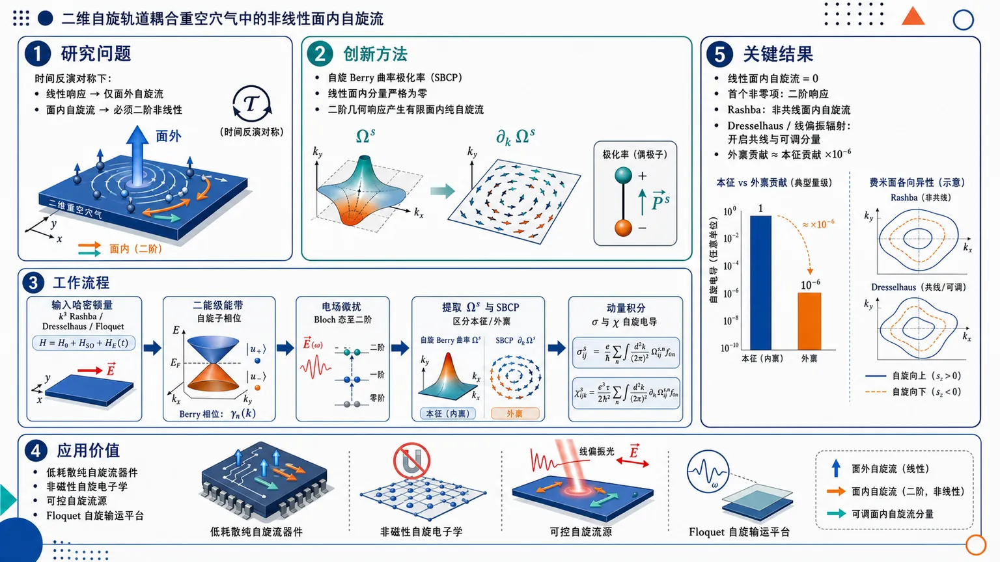
研究问题在保持时间反演对称的二维自旋轨道耦合重空穴气中，为什么线性响应只能产生面外自旋流，而面内自旋流必须通过二阶非线性响应出现；以及如何生成和调控横向、纵向、共线极化的面内纯自旋流。创新方法提出以“自旋 Berry 曲率极化率”作为二阶面内自旋流的核心几何源：线性自旋 Berry 曲率因矩阵元虚部结构使面内分量严格为零，而二阶 SBCP 通过速度矩阵元与自旋流对角期望差产生有限面内响应；并将该机制应用到 k³ Rashba/Dresselhaus 二维重空穴气，进一步用线偏振 Floquet 辐射动态制造能带各向异性。工作流程输入二维重空穴气哈密顿量与外电场：k³ Rashba、Dresselhaus 或线偏振辐射修正 → 求解二能级能带、自旋子相位和动量依赖有效自旋算符 → 用电场微扰修正 Bloch 态至二阶 → 提取自旋 Berry 曲率与自旋 Berry 曲率极化率 → 结合 Boltzmann 弛豫时间方程区分本征/外禀贡献 → 动量空间积分得到线性面外自旋电导和二阶面内自旋电导。关键结果一般时间反演对称二能级体系中，线性面内自旋流严格消失，首个非零面内自旋流来自二阶响应；纯 k³ Rashba 重空穴气产生非共线二阶面内自旋流，但共线分量因镜像反对称性为零；加入 Dresselhaus 耦合或线偏振辐射后，能带各向异性打破抵消，使所有时间反演允许的面内二阶自旋流均可出现；外禀二阶贡献仅约为本征贡献的 10⁻⁶，本征响应在重空穴气中因小自旋分裂带隙和 k³ 能带结构显著增强。应用价值为低耗散纯自旋流器件提供可视化设计原则：利用二维重空穴气的量子几何本征响应产生强二阶面内自旋流，并通过 Dresselhaus 耦合或线偏振光场调节自旋流方向、极化方向和共线分量，可用于非磁性自旋电子学、可控自旋流源和 Floquet 自旋输运平台。第一部分：核心概览
该研究建立了时间反演对称二维自旋轨道耦合体系中面内自旋流的二阶非线性响应图像：线性面内自旋流因自旋 Berry 曲率结构而严格消失，首个非零面内响应来自自旋 Berry 曲率极化率。在 k³ Rashba 二维重空穴气中，二阶响应同时包含横向与纵向面内自旋流；引入 Dresselhaus 耦合或线偏振电磁辐射产生能带各向异性后，还可激发共线极化自旋流。该工作把非线性自旋霍尔效应从电子气推广到重空穴气，并突出其增强的本征二阶自旋电导。
---
第二部分：结构化快速回顾
《Non-linear in-plane spin current in spin-orbit coupled 2D hole gases》（None，）
背景
自旋电子学需要高效地产生与操控纯自旋流。二维自旋轨道耦合体系中的线性自旋霍尔效应通常产生面外极化自旋流，而非线性响应可由量子几何量驱动。Berry 曲率偶极、量子度规、Berry 连接极化率、自旋 Berry 曲率极化率等概念构成该方向的理论基础。
方法
采用Boltzmann 输运方程的弛豫时间近似与外电场下 Bloch 态的二阶微扰修正，推导线性与二阶自旋电导。核心对象为自旋 Berry 曲率 (Ømega^lᵢⱼ,ₙ) 与自旋 Berry 曲率极化率 (Π^lᵢⱼₖ,ₙ)。
结果
对一般二能级时间反演对称体系，若面内自旋流算符只含 (σₓ,σ_y)，则线性面内自旋流为零；二阶面内自旋流可存在。二维重空穴气中，纯 Rashba 情形产生非共线二阶面内自旋流；Rashba-Dresselhaus 各向异性使所有时间反演允许的面内二阶自旋流均非零。
讨论
二阶面内自旋电导的本征部分远大于外禀部分，比例约 (Γm̊ ext/Γm̊ ⁱⁿtsim10⁻⁶)。增强来源于重空穴体系较小的自旋分裂带隙与 (k³) 能带结构。
局限
采用传统自旋流定义，未使用严格守恒自旋流；有效面内自旋算符来自 Rashba 主导近似，因此 Dresselhaus 比值需较小；重空穴低能模型受下能带局域极大值限制，需要动量截止。
结论
二维重空穴气是产生和调控多种面内非线性自旋流的有效平台；Dresselhaus 耦合与线偏振辐射均可作为调控能带各向异性和共线极化自旋流的工具。
---
第三部分：逐章节冷凝解析
I Introduction
Spin currents possess spatial and spin degrees of freedom
二维体系中的自旋流不仅由流动方向决定，还由自旋极化方向决定。二维平面限制了输运方向，但自旋算符仍有三分量 ((hat Sₓ,hat S_y,hat S_z))，因此可区分面外自旋流与面内自旋流。原文界定为：*"In two-dimensional (2D) systems, the spin current is spatially restricted to the 2D plane, while the electronic spin operator has three components"*；并进一步指出：*"The spins can either be polarized perpendicular or parallel to the plane of transport, which leads to ‘out-of-plane’ and ‘in-plane’ spin currents respectively."* 面内自旋流还可细分为共线极化与横向极化，即自旋极化方向与流动方向平行或垂直。
Pure spin current and spin Hall effect form the central physical background
纯自旋流可在零净电荷流与原则上零 Joule 热的条件下传输角动量。该概念由原文直接定义：*"A spin current that involves in principle, zero Joule heating and a zero net charge flow is called a ‘pure’ spin current."* 在二维自旋轨道耦合体系中，纯自旋流的主要来源是自旋霍尔效应，即无外磁场时，由电场诱导横向自旋输运：*"The primary source of pure spin current in 2D spin-orbit coupled systems is the phenomenon of spin Hall effect (SHE)."*
Time-reversal symmetry distinguishes spin Hall and anomalous charge Hall mechanisms
异常电荷 Hall 效应通常要求时间反演对称性 (mathcal T) 被破缺，而自旋 Hall 效应不要求 (mathcal T) 破缺。关键机制差异在原文中表述为：*"The key difference in the mechanisms of SHE and anomalous charge Hall transport lies in the breaking of time-reversal symmetry"*；并明确：*"SHE does not require (T) to break."* 这为后续研究时间反演对称体系中的非线性自旋流奠定对称性基础。
Spin-orbit coupling is the enabling interaction
自旋 Hall 效应的核心来自自旋轨道耦合，其通常源于结构反演对称性 (mathcal P) 破缺。原文强调：*"The central role in SHE is played by spin-orbit coupling (SOC), which arises due to a broken structural inversion symmetry"*。两类典型 SOC 为 Rashba SOC 与 Dresselhaus SOC：*"There are namely the Rashba spin-orbit coupling and the Dresselhaus spin-orbit coupling."* 该研究正是利用二者的叠加来调控各向异性。
Intrinsic spin Hall physics is tied to quantum geometry
本征自旋 Hall 效应来源于载流子量子态的几何性质，表现为 Berry 曲率。原文给出机制分野：*"The intrinsic SHE, on the other hand has its origin in the geometry of the quantum states of the charge carriers, manifested in the Berry curvature."* 该背景连接到近年来非线性 Hall 研究中的量子度规、Berry 曲率偶极与Berry 连接极化率：*"non-linear anomalous Hall effect has already been attributed to the quantum metric and the Berry curvature dipole"*。
Spin Berry curvature and spin Berry curvature polarizability motivate the formalism
已有工作将线性本征自旋 Hall 电导写成自旋 Berry 曲率形式，并将二阶本征自旋流关联到自旋 Berry 曲率极化率。原文概括为：*"Zhang et al. shows that a spin Berry curvature (SBC) can be derived from a simple perturbation theory to calculate the spin Hall conductivity."* 对非线性部分则指出：*"have derived an intrinsic second-order spin current from the spin Berry curvature polarizability (SBCP)."*
Two-dimensional hole gases are selected because intrinsic mechanisms dominate
二维空穴气的线性自旋 Hall 电导主要由本征机制贡献，因为杂质散射顶角修正消失。原文指出：*"It is known that the linear spin conductivity in hole gases is contributed mainly by the intrinsic mechanism, since the vertex corrections due to impurity scattering vanish for such systems."* 这使 2DHG 成为研究量子几何本征响应的干净平台。
The central conceptual claim is that SBC is out-of-plane whereas SBCP can be in-plane
该研究特别强调自旋极化方向在张量中的作用：线性 SBC 对应面外自旋流，而 SBCP 可产生面内分量。原文给出核心命题：*"We particularly emphasize the spin orientations in the SBC and SBCP tensors and note that the former is out-of-plane while the latter can have in-plane components."* 并指出该结论对任意保持 (mathcal T) 的二能级体系成立：*"This is shown to be true for any two-level system where (T) is preserved."*
---
II The formalism
The formalism targets linear and nonlinear spin currents under preserved time-reversal symmetry
理论框架面向 (mathcal T) 保持体系中的线性与非线性自旋流，核心由 SBC 与 SBCP 给出。原文开宗明义：*"we discuss the general formalism of linear and nonlinear spin currents resulting from SBC and SBCP, in (T) preserved systems."* 方法基础为Boltzmann 输运方程弛豫时间近似与外电场下 Bloch 态二阶修正：*"This formalism is based on the Boltzmann transport equation within relaxation time approximation and the second-order correction to the Bloch states due to external electric field."*
---
II.1 Second-order spin current using perturbation theory
The conventional spin current operator is the symmetrized spin-velocity product
传统自旋流算符定义为
[
hat jᵢ^l=frachbar2(hat Sₗhat vᵢ₊hat vᵢhat Sₗ₎,
]
其中 (i=x,y) 表示流动方向，(l=x,y,z) 表示自旋极化方向。原文定义为：*"The conventional spin current operator is defined as (hatjlᵢ=hbar(hatSₗhatvᵢ+hatvᵢhatSₗ)/2)"*。总自旋流由二维动量空间积分给出：
[
Jᵢ^l=sumₙᵢₙₜₖ[dbf k],jᵢ,ₙ^l fₙ₍bf k),
]
对应原文：*"The total spin current from (n) bands in two-dimensional systems can be evaluated as..."*
External electric field modifies Bloch states up to second order
施加面内均匀电场
[
bf E=Eₓhatbf x+E_yhatbf y
]
后，微扰为 (H'=ebf Eḑotbf r)。外场修正态写成
[
|tilde nångle=|n⁽⁰⁾ångle+|n⁽¹⁾ångle+|n⁽²⁾ångle.
]
原文表述为：*"The normalized perturbed state up to second-order in electric field is (|tildenångle=|n⁽⁰⁾ångle+|n⁽¹⁾ångle+|n⁽²⁾ångle)."* 一阶修正含带间 Berry 连接
[
bf Aₘₙ=łangle m⁽⁰⁾|inablabf ₖ|n⁽⁰⁾ångle,
]
原文定义：*"is the inter-band Berry connection"*。
Modified spin current contains zeroth-, first-, and second-order geometric terms
外电场修正后的单粒子自旋流为
[
tilde j^lᵢ,ₙ
=
jl,⁽⁰⁾ᵢ,ₙ
-eØmega^lᵢⱼ,ₙEⱼ
+e²Π^lᵢⱼₖ,ₙEⱼEₖ.
]
原文说明：*"After simplification, one can obtain (up to quadratic order in (bf E))"*，并定义：*"(Ømegalᵢⱼ,ₙ) is called the spin Berry curvature and (Πlᵢⱼₖ,ₙ) is called the spin Berry curvature polarizability."* 因此，线性响应由 SBC 控制，二阶本征响应由 SBCP 控制。
Boltzmann equation separates intrinsic and extrinsic contributions
非平衡分布函数由
[
fracehbarbf Eḑotnablabf ₖfₙ₍bf k)
=
-fracfₙ₍bf k)-fₙ⁽⁰⁾(bf k)τ
]
给出，原文说明：*"Within the relaxation time approximation, the non-equilibrium Fermi-Dirac occupation number (fₙ₍bf k)) can be obtained by solving the Boltzmann transport equation."* 迭代展开含 (τ) 的不同幂次；在二阶电导
[
Γ^lᵢⱼκ
]
中，(τ²) 与 (τ) 相关项为外禀贡献，(Π) 项为本征贡献。原文明确：*"The (τ)-dependent and (τ)-independent terms in the non-linear spin conductivities are the extrinsic and intrinsic contributions, respectively."*
Time-reversal symmetry eliminates odd-(τ) terms
对 (mathcal T) 对称体系，奇数 (τ) 幂项严格消失，偶数 (τ) 幂项可有限。原文给出对称性约束：*"For (T)-symmetric systems, the term involving odd power of (τ) will vanish exactly, while the even power of (τ) will have a finite contribution."* 因而在线性电导与二阶电导中的 (τ)-线性项在 (mathcal T) 对称、(mathcal P) 破缺体系中不存在：*"the (τ)-linear term ... will be absent for (T)-symmetric systems, where the structural inversion symmetry is broken."*
Only transverse spin currents are called spin Hall currents
研究区分横向与纵向自旋流；“spin Hall” 仅保留给横向响应。原文规范命名：*"The name spin ‘Hall’ current/conductivity is reserved only for the transverse components."* 这避免把所有二阶自旋电导都称为自旋 Hall 电导。
---
II.2 Results for a generic 2-level (mathcal T)-symmetric system
The general two-level Hamiltonian has no (σ_z) mass term
一般时间反演对称二能级体系写为
[
H=frachbar²k²2mmathbb I+bf d(bf k)ḑotboldsymbolσ,
quad
bf d=(dₓ,d_y).
]
原文给出：*"Let us consider a general time-reversal symmetric two-level system whose Hamiltonian is given by..."* 并指出：*"Since there is no mass term containing (σ_z), (T) is preserved."* 该结构排除了常见的 (d_zσ_z) 质量项。
Spin is not conserved in generic spin-orbit coupled systems
该哈密顿量通常不与自旋算符对易，因此自旋非守恒，传统自旋流也非严格守恒。原文强调：*"spin is not a conserved quantity here, since the Hamiltonian ... does not commute with the spin operators"*；并补充：*"This is generically true for any spin-orbit coupled system."* 虽然存在替代的守恒自旋流定义，但弱 SOC 与非线性自旋输运中传统定义仍被广泛使用：*"for weak spin-orbit coupling and non-linear spin transport, the conventional definition is still widely used."*
Eigenstates are phase-controlled spinors
自旋轨道部分 (Hₛ₌dₓσₓ₊d_yσ_y) 的本征值与本征态为
[
ǎrepsilon_±=±sqrtdₓ²⁺d_y²,
quad
|±ångle=frac1sqrt2
beginpmatrix
1
± eⁱψ
endpmatrix,
quad
ψ=tan⁻¹(d_y/dₓ₎.
]
原文对应：*"The eigenvalues and eigen states of (Hₛ) are obtained as functions of (bf k)"*。后续所有 SBC 与 SBCP 的对称性均由该相位 (ψ(bf k)) 控制。
Generalized spin operators are allowed to be momentum-dependent
为覆盖空穴气有效自旋，(hat Sₗ) 被设为可依赖 (bf k) 的 (2×2) Hermitian 矩阵：
[
hat Sₗ₌sumłₐₘbdₐ₌₀,ₓ,y,zB_łambda(bf k)σ_łambda.
]
原文说明：*"For the sake of generality, the spin operators are considered to be (2×2) Hermitian matrices, which may be functions of (bf k)."* 这一点对重空穴气尤其重要，因为面内有效自旋并非简单 Pauli 矩阵。
In-plane linear spin current vanishes when in-plane spin current operators only involve (σₓ,σ_y)
SBC 表达式为
[
Ømega^lᵢⱼ,±
=
frac2hbarǎrepsilon_g²
Im
łeft[
łangle±|hat jᵢ^l|mpångle
łanglemp|hat vⱼ|±ångle
i̊ght].
]
若面内自旋流算符只依赖 (σₓ,σ_y)，其非对角矩阵元为纯虚数，乘积为实数，因此虚部为零。原文逻辑为：*"their off-diagonal elements are purely imaginary according to Eq. (15) and their product will be real."* 结论为
[
Ømega^lᵢⱼ=0,quad l=x,y,
]
对应原文：*"This shows that the first-order spin current for such a system is strictly out-of-plane."*
Second-order in-plane spin current survives through SBCP
SBCP 给出为
[
Π^lᵢⱼₖ,±
=
frachbar²ǎrepsilon_g⁴
łanglemp|hat vⱼ|±ångle
łangle±|hat vₖ|mpångle
łeft(
łanglemp|hat jᵢ^l|mpångle
-
łangle±|hat jᵢ^l|±ångle
i̊ght).
]
原文把研究目标直接转向二阶面内响应：*"Therefore, we wish to study the non-linear (2nd-order) in-plane spin current, due to the SBCP components."* 这说明二阶响应不依赖 SBC 的虚部结构，而依赖两带之间速度矩阵元与自旋流对角期望差。
Out-of-plane second-order spin current vanishes
对面外自旋流，(σ_z) 在 (|±ångle) 基底中的对角元为零，因此 (łangle±|hat jᵢ^z|±ångle=0)，导致
[
Π^zᵢⱼₖ=0.
]
原文写明：*"for the out-of-plane spin current, the SBCP components vanish"*，理由是：*"the diagonal elements of (σ_z) are zero in the (|±ångle) basis."*
The symmetry-enforced response hierarchy is linear out-of-plane and second-order in-plane
忽略背景自旋流后，总响应结构为
[
tilde Jᵢ^z=ḩi^zᵢⱼEⱼ,
quad
tilde Jᵢ^l=Γ^lᵢⱼₖEⱼEₖ,quad l=x,y.
]
原文给出最终分离：*"(tildeJzᵢ=ḩizᵢⱼEⱼ)"* 与 *"(tildeJlᵢ=ΓlᵢⱼₖEⱼEₖ,;l=x,y)."* 这就是全文最重要的理论骨架。
---
III Heavy hole gas with Rashba and Dresselhaus spin-orbit coupling
Two-dimensional hole gases arise from transverse confinement
二维空穴气由垂直平面的限制势产生，使载流子被束缚在二维面内。原文描述：*"A 2D hole gas is created by applying a confining potential transverse to a plane, thereby trapping the particles on it."* 价带空穴的总角动量为 (J=3/2,1/2)，其中 (J=3/2) 态四重简并。
Confinement separates heavy-hole and light-hole sectors
限制势部分解除 (J=3/2) 四重简并，将 (J_z=±3/2) 的重空穴与 (J_z=±1/2) 的轻空穴分开。原文表述：*"the confining potential lifts this degeneracy partially, splitting states with (J_z=±3/2) (heavy holes) and (J_z=±1/2) (light holes)."* 重轻空穴能隙与势阱宽度 (L_z) 反比：*"The energy gap between the heavy and light hole bands depends inversely on the width of the confining potential well."*
Low-energy heavy holes form an effective two-level system
当 (L_z) 很小时，重轻空穴能隙很大，低能只填充重空穴带。原文指出：*"If (L_z) is made vanishingly small, the energy gap becomes extremely large and at low energies only the heavy hole band gets filled."* 在该近似下，重空穴成为有效二能级系统，面外有效自旋为
[
hat S_z=±frac3hbar2σ_z.
]
但严格二维极限下面内自旋消失：*"the in-plane effective spins (hat Sₓ,hat S_y) vanish instead of reducing to Pauli matrices."*
Finite well width generates momentum-dependent in-plane effective spin
有限 (L_z) 下，重空穴与轻空穴混合可微扰地产生面内有效自旋算符。原文说明：*"For a finite (L_z), the in-plane effective spin operators can be obtained by treating the mixing between the heavy hole and light hole bands perturbatively away from (bf k=0)."* 这解释了为什么后续 (hat Sₓ₍bf k))、(hat S_y(bf k)) 是动量依赖的。
The heavy-hole Hamiltonian contains cubic Rashba and Dresselhaus SOC
二维重空穴有效哈密顿量为
[
H=
frachbar²k²2mmathbb I+
łeft[
iα k₋³σ₊
-
β k₋ₖ₊ₖ₋σ₊
+h.c.
i̊ght].
]
原文定义：*"An effective Hamiltonian of a heavy hole with (k)-cubic Rashba and Dresselhaus spin-orbit couplings formed at the p-type III-V semiconductor heterojunctions can be written as..."* 其中 (α) 与 (β) 分别为 Rashba 与 Dresselhaus 强度：*"Here (m) is the effective mass of a heavy hole and, (α) and (β) are the coupling strengths of the Rashba and Dresselhaus interactions respectively."*
Energy dispersion and band gap encode Rashba-Dresselhaus anisotropy
能谱为
[
ǎrepsilonₙ₍bf k)
=
frachbar²k²2m
+
nk²
sqrt{
(α kₓ₋β k_y)²⁺
(α k_y-β kₓ₎²
},
quad n=±.
]
带隙为
[
ǎrepsilon_g(bf k)
=
2k²
sqrt{
(α kₓ₋β k_y)²⁺
(α k_y-β kₓ₎²
}.
]
当 (α=β) 时，沿 (k_y=kₓ) 出现线简并：*"there is a line degeneracy along the (k_y=kₓ) line for (α=β)."* 同时沿 (k_y=-kₓ) 带隙最大，(ǎrepsilon_gm̊ max=2α k³)：*"the band gap is maximum ... along the (k_y=-kₓ) line."*
The lower band has a local maximum and imposes a momentum cutoff
纯 Rashba 模型中，下能带存在局域极大值，位置为
[
k=frachbar²3mα.
]
原文指出：*"the lower one has a local maximum which turns out to be at (k=hbar²/3mα) in the pure Rashba model."* 由于超过该点后能量单调下降，低能模型需要上动量截止：*"Since the energy decreases monotonically beyond this maximum, we get an upper cut-off momentum for this low-energy model."*
Effective in-plane spin operators contain (S₀) and (S₁) material parameters
重空穴 Rashba 系统中的有效自旋算符为
[
hat Sₓ₍bf k)
=
hbarłeft[
-S₀ₖ_ymathbb I
+
S₁₍₍ₖₓ²⁻k_y²⁾σₓ₊₂ₖₓₖ_yσ_y)
i̊ght],
]
[
hat S_y(bf k)
=
hbarłeft[
S₀ₖₓmathbb I
+
S₁₍₍ₖₓ²⁻k_y²⁾σ_y-2kₓₖ_yσₓ₎
i̊ght],
]
[
hat S_z(bf k)=frac3hbar2σ_z.
]
原文给出参数
[
S₀₌fracα mₑhbar²γ₂,
quad
S₁₌
łeft[
frac34π²
-
frac256γ₂²
3π⁴⁽³γ₁₊₁₀γ₂₎²
i̊ght]L_z².
]
对应描述：*"where (S₀,S₁) are system dependent parameters."*
Effective spin operators are noncanonical but time-reversal odd
这些有效自旋算符不满足标准角动量对易关系，但在时间反演下正确变号：
[
mathcal T^dagger hat Sₗ₍₋bf k)mathcal T=-hat Sₗ₍bf k).
]
原文写道：*"these effective spin operators do not satisfy the canonical commutation relations but they transform under time-reversal as..."* 因此它们可作为重空穴低能准粒子的有效自旋。
Numerics use dimensionless scales tied to Rashba coupling
数值计算在极坐标 ((k,φ)) 中进行，并定义
[
tilde k=k/kₕ,quad kₕ₌frachbar²mα,
]
[
tildeǎrepsilon=ǎrepsilon/ǎrepsilonₕ,quad ǎrepsilonₕ₌α kₕ³.
]
原文说明：*"To facilitate the numerics, the dispersion relation and all the velocity and spin current components are calculated in polar coordinates"*；并给出参数：*"The other parameters used are (α=0.2>eVnm³) and effective mass (m=0.41mₑ)."* 有效自旋参数缩放为 (tilde S₀₌S₀ₖₕ)、(tilde S₁₌S₁ₖₕ²)。
---
III.1 Spin Berry curvature and out-of-plane linear spin conductivity
The transverse out-of-plane SBC is analytically expressed for electric field along (x)
外电场沿 (x) 时，横向面外 SBC 分量为
[
Ømega^zyₓ,±
=
mp
frac3sinφ4kₕ²tilde k³
łeft[
frac{
3o̧sφ'
-
2r(2sinψ-sinφ')
}
{
1+r²⁻²rsin(2φ)
}
i̊ght],
quad r=β/α.
]
原文引入：*"The out-of-plane, transverse component of the SBC ((Ømega^zyₓ)) due to an electric field along the (x) direction is given by..."* 该表达式明确显示 Dresselhaus/Rashba 比值 (r) 控制角向各向异性。
Pure Rashba linear spin Hall conductivity reproduces the known (9e/8π) result
在纯 Rashba 极限 (r=0)，积分 SBC 得到
[
ḩiz,Ryₓsimeq frac9e8π.
]
原文强调为已知结果的复现：*"we reproduce the known result for the intrinsic linear spin Hall conductivity in the pure Rashba case ((r=0)), which is (ḩiz,Ryₓsimeq9e/(8π))."* 该数值是二维重空穴气经典本征自旋 Hall 电导结果。
Pure Dresselhaus linear spin Hall conductivity is reduced by (2/3)
纯 Dresselhaus 极限 (α=0,βne0) 时得到
[
ḩiz,Dyₓsimeq frac6e8π.
]
原文给出：*"in the pure Dresselhaus case ((α=0,β≠0)), we get (ḩiyₓz,Dsimeq6e/(8π))."* 因此相对 Rashba 情形缩小到 (2/3)：*"is reduced by a factor of (2/3) as compared to (ḩiyₓz,R)."*
Longitudinal out-of-plane linear spin conductivity requires Rashba-Dresselhaus coexistence
纵向 SBC 为
[
Ømega^zₓₓ,±
=
mp
frac3o̧sφ4kₕ²tilde k³
łeft[
frac{
3o̧sφ'
-
2r(2sinψ-sinφ')
}
{
1+r²⁻²rsin(2φ)
}
i̊ght].
]
对应纵向自旋电导 (ḩi^zₓₓ) 在纯 Rashba 与纯 Dresselhaus 中为零，但二者共存时非零。原文说明：*"The longitudinal spin conductivity (ḩizₓₓ) is zero in the pure Rashba and pure Dresselhaus cases. However, it is non-zero in the presence of both Rashba and Dresselhaus interactions."*
Anisotropic Rashba-Dresselhaus SOC generates longitudinal spin current through transverse charge current
纵向线性自旋流的物理机制是各向异性 Rashba-Dresselhaus SOC 诱导横向电荷流，后者再经 SHE 产生纵向自旋流。原文解释：*"This happens because the anisotropic Rashba-Dresselhaus SOC gives rise to a transverse charge current, which in turn leads to a spin current in the longitudinal direction due to SHE."* 数值上，(r=0.5) 时
[
ḩi^zₓₓsimeq0.3331(9e/8π),
]
(r=1.5) 时
[
ḩi^zₓₓsimeq0.2199(9e/8π).
]
原文给出相同数值：*"For (r=0.5), (ḩizₓₓsimeq0.3331(9e/8π)) and for (r=1.5), (ḩizₓₓsimeq0.2199(9e/8π))."*
Linear spin conductivities weakly depend on Fermi energy
线性自旋电导随费米能变化很小：*"The spin conductivities vary only marginally with the Fermi energy."* 该行为与二维电子气结果不同：*"These results are in contrast to the ones obtained for electron gases."* 这表明 (k³) 重空穴 SOC 的能量依赖与 (k)-线性电子气不同。
---
III.2 Spin Berry curvature polarizability and in-plane second-order spin conductivity
The first nonzero in-plane spin current is second order
由于线性自旋流仅面外极化，面内自旋流的首个非零贡献来自二阶响应。原文直接指出：*"Since the first-order spin current is polarized out-of-plane, the first non-zero contribution from the in-plane spin current comes at the second-order."* 这正是全文题名中“non-linear in-plane spin current”的理论含义。
Four in-plane SBCP components are relevant for (Eₓ)-driven response
当电场沿 (x) 方向，SBCP 的最后两个电场指标固定为 (xx)，剩余四个面内响应分量为
[
Π^xₓ,quad Π^x_y,quad Π^yₓ,quad Π^y_y.
]
原文说明：*"The electric field in the (x) direction fixes the last two indices of the SBCP tensor at ‘(xx)’."* 并给出简化记号：*"Thus, we have four components ((Πxₓ,Πxy,Πyₓ,Πyy)) with the spin being oriented either along the (x) or (y) direction."*
SBCP density distributions are multipolar
SBCP 的动量空间密度图表现出多极结构。原文描述：*"They display a multipolar nature."* 在纯 Rashba 情形，四个分量均为 (k)-空间偶函数：*"In the absence of the Dresselhaus interaction ... all four SBCP components are even functions in the (k)-space."* 这种动量空间多极结构决定哪些分量积分后为零或非零。
Pure Rashba symmetry kills collinearly polarized second-order spin currents
纯 Rashba 情形下，共线极化分量
[
Γ^xₓ,quad Γ^y_y
]
消失，而非共线分量
[
Γ^x_y,quad Γ^yₓ
]
保留。原文写明：*"In the pure Rashba case, the collinearly polarized spin currents ((Γxₓ) and (Γyy)) vanish, while other components ((Γxy) and (Γyₓ)) survive."* 该现象源于自旋极化与动量的 (π/2) 锁定：*"the absence of (Γxₓ) and (Γyy) is attributed to the (π/2) angle-locking between the spin polarization and the wave-vector (bf k)."*
Mirror antisymmetry explains vanishing collinear currents
纯 Rashba 中 (Π^xₓ) 与 (Π^y_y) 对镜像反射反对称，动量空间积分为零。原文说明：*"The vanishing of (Γxₓ) and (Γyy) can also be understood from the mirror anti-symmetry of (Πxₓ) and (Πyy), ... which integrate to zero over the (k)-space."* 因此零值不是数值偶然，而是对称性积分结果。
Dresselhaus SOC breaks mirror antisymmetry and enables all in-plane currents
加入 Dresselhaus 项后，能带各向异性扭曲 SBCP 分布并移除镜像反对称性，使所有四个二阶面内自旋电导非零。原文指出：*"The introduction of the Dresselhaus term makes the band structure anisotropic and removes the mirror anti-symmetry, allowing (Γxₓ) and (Γyy) to become finite as well."* 结论为：*"the band anisotropy due to Rashba-Dresselhaus spin-orbit coupling in 2DHG leads to the generation of all (T)-allowed in-plane spin currents."*
Second-order response differs qualitatively from first-order response
二阶自旋流无论能带是否各向异性，都可同时出现横向与纵向面内分量；而一阶纵向自旋流只在各向异性情况下出现。原文对比：*"we obtain both transverse and longitudinal spin currents in the second-order, irrespective of whether the band structure is anisotropic or not, unlike the first-order where the longitudinal spin current arises only in the anisotropic case."* 这说明二阶几何响应的对称性约束更宽松。
Extrinsic second-order conductivity is negligible compared with intrinsic conductivity
外禀二阶电导来自 (τ²) 项，并在 (mathcal T) 下对称。原文说明：*"The extrinsic spin conductivity ... is contributed by the (τ²)-dependent term ... which is symmetric under (T)."* 数值上，外禀与本征比例约
[
Γm̊ extᵢ/Γm̊ ⁱⁿtᵢsim10⁻⁶,
]
原文给出：*"As shown in Fig. (4), (Γl,m̊ extᵢ/Γl,m̊ ⁱⁿtᵢsim10⁻⁶)."* 因此实际主导项为 SBCP 产生的本征响应。
Intrinsic second-order spin conductivity is enhanced in heavy-hole gases
换算为实际单位，
[
Γ₀₌₀.625,e,μm̊ m/V,
]
原文写明：*"Converting to realistic units, we get (Γ₀₌₀.625>m̊ e>μ m/V)."* 该量级与电子气中二阶自旋电导相当，但重空穴气的本征二阶电导显著增强：*"the extrinsic second-order spin conductivity in electron and hole gases are of comparable magnitude while the intrinsic second-order spin conductivity is enhanced in the heavy hole gas."* 增强机制为：*"This enhancement ... is due to the small spin-split band gap and the (k)-cubic nature of the bands."*
Physical scales are (kₕsim1,m̊ nm⁻¹), (ǎrepsilonₕsim0.2,m̊ eV), and Fermi energies (0.02-0.2,m̊ meV)
使用 (α=0.2,m̊ eVnm³)、(m=0.41mₑ) 等参数可估计
[
kₕapprox1,m̊ nm⁻¹,quad
ǎrepsilonₕapprox0.2,m̊ eV.
]
原文给出：*"Using the definition of (kₕ) and the parameter values given in section(III), (kₕ) is estimated to be around (1>m̊ nm⁻¹)."* 以及：*"the energy scale (ǎrepsilonₕ) turns out to be (0.2>m̊ eV)."* 图中费米能范围为 (0.02-0.2,m̊ meV)：*"The range of Fermi energy, in figures (2) and (4), in meV is (0.02-0.2) meV."*
The low-energy window is narrower than in electron gases
与二维电子气不同，重空穴下分支的局域极大值施加动量截止，从而限制能量范围。原文总结：*"Unlike the 2D electron gas, here the local maxima of the lower energy branch puts a cut-off on the momentum scale and restricts the energy range."* 这是模型适用性与实验调参范围的重要约束。
---
IV Two-dimensional hole gas with Rashba SOC subjected to linearly polarized electromagnetic radiation
Linearly polarized radiation offers an alternative route to band anisotropy
除 Dresselhaus SOC 外，线偏振电磁辐射也可调控 Rashba 空穴气的各向异性。原文开头说明：*"As an alternative method of controlling the band anisotropy of the system, we irradiate linearly polarized electromagnetic radiation over the 2DHG with Rashba spin-orbit coupling."* 这意味着各向异性不必依赖材料固有 Dresselhaus 强度，也可由外场动态诱导。
Radiation propagates perpendicular to the 2D system and is described by a vector potential
辐射频率为 (ømega)，传播方向垂直于二维系统。长波长近似下矢势为
[
bf A(t)=A₀[sin(ømega t),sin(ømega t+φ₀₎].
]
原文写道：*"Assuming the wavelength of radiation to be much larger than the lattice constant, the radiation field can be described by the vector potential..."* 线偏振取 (φ₀₌₀)：*"For linear polarization, (φ₀) is chosen to be zero."*
High-frequency Floquet-Magnus expansion yields a frequency-independent anisotropic correction
在高频 Floquet-Magnus 极限下，有效哈密顿量为
[
H=
frachbar²k²2mmathbb I
+iα(k₋³σ₊₋ₖ₊³σ₋₎
-α Aboldsymbolσḑotbf k,
]
其中
[
A=3(eA₀/hbar)².
]
原文说明：*"Using the Floquet-Magnus expansion and taking the high-frequency limit, the final Hamiltonian becomes..."* 新增项 (α Aboldsymbolσḑotbf k) 赋予能带各向异性：*"The additional term, (α Abmσḑotbf k) which imparts anisotropy to the band dispersion, is a frequency-independent zeroth-order correction in the Floquet-Magnus expansion."*
Linear polarization removes the first-order Floquet correction
线偏振使一阶 Floquet 修正消失，高阶频率依赖项被忽略。原文写明：*"The first-order correction vanishes due to linear polarization of the radiation, while the higher-order frequency dependent terms have been ignored."* 因而辐射主要通过零阶有效哈密顿量改变静态能带几何。
Static electric field is then treated as the perturbation generating spin Hall response
辐射修正后的哈密顿量作为未扰动哈密顿量，再加入静态电场产生自旋 Hall 响应。原文说明：*"Eq. (35) is taken as the unperturbed Hamiltonian, over which a static electric field is added as the perturbation, leading to a spin Hall response."* 这区分了两个外场角色：电磁辐射调控能带，静电场驱动输运。
Radiation-modified dispersion contains angular anisotropy
能谱为
[
ǎrepsilon(k)
=
frachbar²k²2m
±
α k
sqrt{
(k²⁻Asin2φ)²
+
A²o̧s² 2φ
}.
]
原文给出：*"The energy dispersion is given by..."* 角向项 (sin2φ)、(o̧s2φ) 直接表明线偏振辐射破坏圆对称性。
Eigen-spinor phase is controlled by radiation-dependent functions (C) and (D)
本征自旋子仍为
[
|±ångle=
frac1sqrt2
beginpmatrix
1
± eⁱψ
endpmatrix,
]
但相位由
[
tanψ=C/D
]
给出，其中
[
C=Asinφ+k²o̧s3φ,quad
D=Ao̧sφ-k²sin3φ.
]
原文写明：*"where (tanψ=C/D), with (C=Asinφ+k²o̧s(3φ)) and (D=Ao̧sφ-k²sin(3φ))."* 相位结构改变意味着 SBC 与 SBCP 的角向分布也会被辐射重塑。
---
第四部分：深度理解与语言支持
1. 术语解析
Spin Berry curvature
Spin Berry curvature 是把普通 Berry 曲率推广到自旋流响应后的几何量。普通 Berry 曲率控制电荷 Hall 异常速度；SBC 则控制线性自旋 Hall 电导。文中公式
[
tilde j^lᵢ,ₙ=jl,⁽⁰⁾ᵢ,ₙ-eØmega^lᵢⱼ,ₙEⱼ₊ḑots
]
显示 (Ømega^lᵢⱼ,ₙ) 是电场一次项的系数。微妙之处在于：SBC 带有自旋极化指标 (l)，因此不仅决定“流向哪里”，还决定“自旋朝哪里”。
Spin Berry curvature polarizability
Spin Berry curvature polarizability 可理解为外电场诱导的“自旋 Berry 曲率可极化响应”，是二阶本征自旋流的几何来源。它并非简单的 Berry 曲率偶极，而是由电场修正 Bloch 态到二阶后产生的张量 (Π^lᵢⱼₖ)。文中它控制
[
e²Π^lᵢⱼₖ,ₙEⱼEₖ.
]
“polarizability” 强调几何对象本身在外场下被重塑，而不是只对平衡 Berry 曲率取动量导数。
Collinearly polarized spin current
Collinearly polarized spin current 指自旋极化方向与自旋流流动方向相同，例如 (Γₓ^x) 表示沿 (x) 流动且自旋也沿 (x) 极化。它不同于常规自旋 Hall 图像中“流向与极化方向相互垂直”的直觉。文中关键发现是：纯 Rashba 中共线分量消失，但 Dresselhaus 或辐射诱导各向异性可使其非零。
Intrinsic vs extrinsic spin conductivity
Intrinsic 指由能带量子几何决定、与弛豫时间 (τ) 无关的贡献；extrinsic 指来自分布函数非平衡修正或散射相关机制、含 (τ) 的贡献。文中二阶电导中 (Π) 项是本征，(τ²) 项为外禀。数值上外禀仅为本征的 (10⁻⁶)，因此主导物理是本征几何效应。
Angle-locking
Angle-locking 指自旋极化方向与动量方向之间存在固定角度关系。纯 Rashba 系统中，自旋与动量常呈 (π/2) 锁定，即自旋沿 Fermi 轮廓切向。这种锁定使共线自旋流 (Γₓ^x,Γ_y^y) 因对称性积分为零。Dresselhaus 或辐射破坏这种简单锁定后，共线分量可出现。
---
2. 疑难查证
为什么时间反演对称体系可以有自旋 Hall 效应，却通常不能有普通电荷 Hall 效应？
普通电荷 Hall 电流在时间反演下变号；若体系保持 (mathcal T)，横向电荷流会被对称性抵消。自旋流是“速度 × 自旋”的组合：速度在 (mathcal T) 下变号，自旋也在 (mathcal T) 下变号，二者乘积在 (mathcal T) 下可以保持不变。因此，即使无磁性、无外磁场，仍可存在横向自旋流。这就是自旋 Hall 效应不要求破坏时间反演的根本原因。
为什么线性面内自旋流为零，但二阶面内自旋流可以非零？
线性响应由 SBC 控制，其表达式取两个非对角矩阵元乘积的虚部。对文中的 (mathcal T) 对称二能级模型，若面内自旋流算符只含 (σₓ,σ_y)，相关非对角元结构使乘积为实数，虚部为零，因此线性面内响应消失。二阶响应由 SBCP 控制，它包含速度非对角矩阵元乘积与自旋流对角期望值差，不再要求同样的虚部结构；因此面内分量可以存活。
为什么重空穴气的二阶本征响应比电子气更强？
SBCP 表达式含 (ǎrepsilon_g⁻⁴)，即带隙越小，二阶几何响应越容易增强。重空穴气具有 (k³) 自旋轨道分裂，低能处自旋分裂带隙较小，同时有效自旋结构带有强动量依赖。这两点共同放大本征 (Π) 积分。文中直接归因为“小自旋分裂带隙”和“(k)-cubic bands”。
为什么 Dresselhaus 耦合能产生共线极化自旋流？
纯 Rashba 体系具备较高旋转/镜面对称性，(Πₓ^x)、(Π_y^y) 在动量空间呈镜像反对称，积分为零。Dresselhaus 项引入方向选择性，使能带与自旋纹理不再保持纯 Rashba 的切向锁定。镜像反对称性被打破后，原来正负抵消的动量区域不再等量抵消，共线二阶自旋电导变为有限。
为什么线偏振辐射可模拟或替代 Dresselhaus 型各向异性调控？
线偏振辐射通过 Floquet-Magnus 零阶修正产生 (-α Aboldsymbolσḑotbf k)，这是一个 (k)-线性、方向相关的自旋轨道项。它叠加到原本 (k³) Rashba 项上，使能谱出现 (sin2φ)、(o̧s2φ) 角向依赖。结果与 Dresselhaus 耦合类似：圆对称性被破坏，自旋纹理变形，从而改变 SBCP 分布与二阶面内自旋流。
---
第五部分：创新评估与关联
1. 创新性判断
从非线性自旋 Hall 理论推广到二维重空穴气
过去几年非线性 Hall 与非线性自旋 Hall 研究多集中在电子气、Berry 曲率偶极、Drude 型二阶效应、量子度规或一般模型。该研究把 SBCP 驱动的本征二阶自旋流系统应用到 2D heavy hole gas，尤其是 (k³) Rashba/Dresselhaus 体系，填补了重空穴低能有效模型中的二阶面内自旋输运分析空缺。
明确给出时间反演对称二能级体系中的响应选择规则
核心新意不是单纯计算某个材料参数，而是抽象出一般规律：
[
linear in-plane spin current=0,
quad
second-order in-plane spin currentne0.
]
该选择规则来自 SBC 与 SBCP 的矩阵元结构差异。它解释了为什么面内自旋流天然属于非线性响应，并为寻找其他材料平台提供判据。
揭示重空穴气中本征二阶自旋电导显著增强
相比电子气，重空穴气的本征二阶响应因 (k³) 自旋轨道耦合与小自旋分裂带隙而增强。外禀部分仅约本征的 (10⁻⁶)，说明实验上若观测到二阶面内自旋流，很可能主要反映能带量子几何，而非散射机制。这一点增强了该体系作为“量子几何自旋响应平台”的价值。
提出共线极化自旋流的各向异性生成机制
纯 Rashba 中共线二阶自旋流被镜像反对称性禁止；Dresselhaus 耦合打破该对称性后，(Γₓ^x)、(Γ_y^y) 变为有限。该机制为产生“自旋方向与流动方向一致”的面内自旋流提供了清晰路径，区别于传统自旋 Hall 几何中横向流/横向极化的常见结构。
引入线偏振电磁辐射作为可调控外场手段
除材料内禀 Dresselhaus SOC 外，线偏振辐射通过 Floquet 工程产生各向异性 SOC 修正。这提供了动态调控二阶自旋流的方案：无需改变材料结构，即可通过辐射强度 (A=3(eA₀/hbar)²) 调整能带各向异性和自旋纹理。对于自旋电子器件，这比固定材料参数更具可控性。
解决的前人问题
该研究解决了三个前人未充分解决的问题：
- 面内自旋流为何在线性响应中消失、却在二阶响应中出现；
- 二维重空穴气中 SBCP 驱动的本征二阶自旋电导有多大、与外禀部分相比如何；
- 如何通过 Dresselhaus SOC 或 Floquet 辐射产生并控制共线极化面内自旋流。
-
13
📊 含图深析
📄 摘要：对方格点二维经典XY铁磁体进行Monte Carlo研究，考察额外各向异性交换、Dzyaloshinskii-Moriya相互作用及对称破缺场对Kosterlitz-Thouless转变的影响。结果给出这些效应在有无外场条件下的竞争关系与相图演化。
💡 亮点：这项Monte Carlo工作系统拆解了各向异性、DMI和外场如何改写KT转变。它补足了二维XY磁体中较少讨论的相互作用竞争图景。
📖 展开分析 + 配图
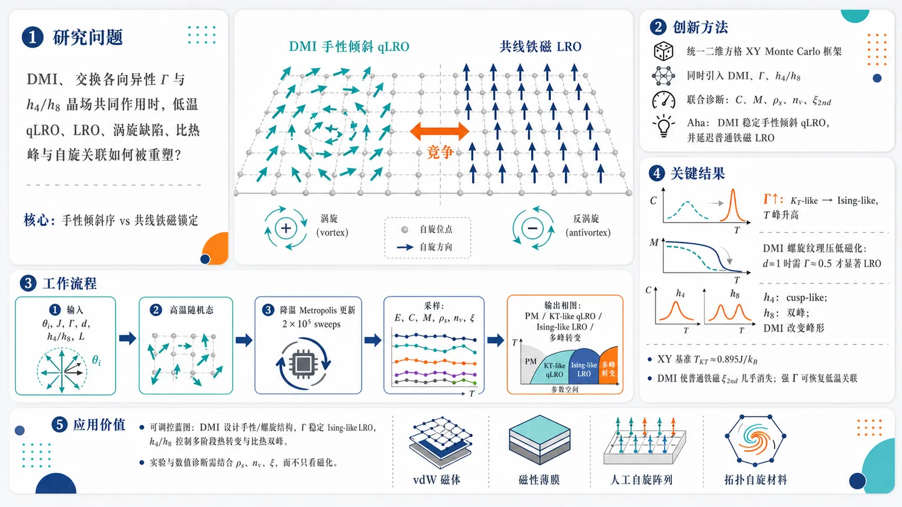
研究问题二维 XY 铁磁体中，交换各向异性、Dzyaloshinskii–Moriya 相互作用（DMI）和四重/八重离散对称性破缺场同时存在时，低温准长程序、真正长程序、涡旋–反涡旋缺陷、比热峰和自旋关联如何被共同重塑；核心是揭示手性倾斜序与共线铁磁锁定之间的竞争。创新方法将 DMI、交换各向异性 Γ、离散晶场 h4/h8 放入同一个二维方格 XY 铁磁 Monte Carlo 框架中，用多观测量联合诊断相行为：比热峰看热异常，磁化看共线长程序，螺旋模量看 KT-like 刚度跳变，涡旋密度看缺陷解绑定，二阶矩关联长度看普通铁磁关联是否被 DMI 手性调制压制。Aha 点是：DMI 不是简单破坏或增强有序，而是稳定手性倾斜 qLRO，同时延迟各向异性诱导的普通铁磁 LRO。工作流程输入二维方格晶格上的平面自旋角 θi，设置参数 J、Γ、DMI 强度 d=D/J、对称性破缺场 h4/h8 和公度晶格尺寸 L；从高温随机自旋构型开始逐步降温，使用 Metropolis 单自旋更新，每个温度点约 2×10⁵ sweeps 并热化前 10⁵ 步；在周期边界条件下采样能量、比热、磁化、自旋刚度、涡旋密度和二阶矩关联长度；输出不同 Γ、d、h4/h8 下从 PM 到 KT-like qLRO、Ising-like LRO 或场诱导多峰转变的相行为图像。关键结果各向同性 XY 基准给出 TKT≈0.895J/kB，接近标准 0.893J/kB；增大 Γ 后，比热峰从宽钝 KT-like 峰变为更高温、更尖锐的 Ising-like 峰，并产生低温有限磁化；DMI 在 Γ=0 时提高转变温度并形成自旋倾斜/对角手性纹理，但在 Γ≠0 时压低普通铁磁磁化，使 d=1 时需 Γ≈0.5 才出现明显低温 LRO；二阶矩关联长度显示 DMI 使普通铁磁关联几乎消失，强各向异性可重新恢复低温关联；h4 产生 cusp-like 比热峰，h8 可诱导双峰比热结构，DMI 会进一步改变双峰形态。应用价值为二维 van der Waals 磁体、磁性薄膜、人工自旋阵列和拓扑自旋材料提供可调控蓝图：用 DMI 设计手性倾斜和螺旋调制结构，用交换各向异性推动稳定 Ising-like 长程序，用 h4/h8 晶场控制多阶段热转变和比热双峰；同时提示实验和数值诊断不能只看普通磁化，应结合自旋刚度、涡旋密度和关联长度识别 DMI 驱动的拓扑/手性相。第一部分：核心概览 (Overview)
该研究以二维经典 XY 铁磁模型为基准，系统考察 交换各向异性、Dzyaloshinskii–Moriya interaction（DMI） 与 离散对称性破缺场共同作用下的热力学、拓扑缺陷和关联行为。核心贡献在于把此前多集中于各向同性 XY+DMI 或单独各向异性/场扰动的问题，扩展到三者耦合情形，并通过 Monte Carlo 模拟给出 比热峰、磁化、螺旋模量、涡旋密度、二阶矩关联长度的联合诊断。结果显示：DMI 稳定自旋倾斜准长程序，各向异性推动体系从 KT-like 行为转向 Ising-like 长程序，二者竞争决定低温相结构；四重、八重对称性破缺场进一步重塑双峰比热结构，为工程化二维拓扑自旋体系提供数值蓝图。
---
第二部分：结构化快速回顾
《Interplay of Anisotropy, Dzyaloshinskii Moriya Interaction and Symmetry breaking Fields in a 2D XY Ferromagnet》（None，）
背景
二维 XY 铁磁模型是研究 Kosterlitz–Thouless（KT/BKT）转变的经典平台。由于 Mermin–Wagner 定理禁止二维连续对称短程相互作用体系在有限温度下出现真正长程序，低温相只能表现为由束缚 涡旋–反涡旋对主导的 准长程序（qLRO）。真实二维磁性材料中，自旋–轨道耦合会引入 DMI、交换各向异性和晶场诱导的离散对称性破缺，显著偏离理想 XY 图像。
方法
采用二维方格晶格上的经典 Metropolis Monte Carlo 模拟，通常每个温度点执行 (2×10⁵) Monte Carlo sweeps，并丢弃前 (10⁵) 步作为热化。模型包含：各向同性 XY 交换、交换各向异性参数 (Γ)、垂直于平面的 DMI 强度 (d=D/J)，以及 (h₄)、(h₈) 等离散对称性破缺场。主要观测量包括 能量、比热、磁化、spin stiffness/helicity modulus、涡旋密度、二阶矩关联长度。
结果
各向同性 XY 模型给出热力学极限下 (TKTapprox0.895J/k_B)，接近标准结果 (TKTsimeq0.893J/k_B)。交换各向异性增强时，比热峰向高温移动并变尖，体系从 KT-like qLRO 转向 Ising-like LRO。DMI 在各向同性极限中提高转变温度并诱导低温自旋倾斜结构；在各向异性存在时，DMI 与各向异性竞争，使有限磁化需要较大的 (Γsim0.5) 才明显出现。二阶矩关联长度显示 DMI 会抑制普通铁磁关联，而较强各向异性可重新恢复低温关联。
讨论
DMI 倾向于产生手性、非共线、自旋调制结构；交换各向异性倾向于锁定自旋方向并建立铁磁长程序。二者的竞争控制涡旋稳定性、磁化起始温度和相变普适类。(h₄) 与 (h₈) 场通过将连续 U(1) 对称性降低为离散 (Zₚ) 对称性，改变比热峰形态，尤其是八重场可诱导双峰结构。
局限
主要依赖单自旋 Metropolis 更新，虽然步数较长，但未系统使用 cluster/hybrid update 降低临界慢化。DMI 情形下采用周期边界条件，并限制到若干 commensurate 的 (d) 和 (L)，未完全覆盖非公度螺旋结构。部分转变性质主要依据比热峰位置、有限尺寸趋势和刚度交点判断，缺少完整的临界指数、Binder cumulant 或严格有限尺寸标度分析。
结论
交换各向异性、DMI 与离散对称性破缺场共同决定二维 XY 铁磁体的低温相、拓扑缺陷和热转变特征。DMI 提升 KT-like 转变温度并诱导手性倾斜；各向异性推动体系向 Ising-like 长程序演化；高阶对称性破缺场显著重塑比热峰结构。这些结果为调控二维 van der Waals 磁体、人工自旋体系和拓扑缺陷材料提供可操作的数值参考。
---
第三部分：逐章节冷凝解析
Abstract
Model scope and physical motivation
二维经典 ferromagnetic XY model 的低温相由束缚 vortex–antivortex pairs 主导，属于凝聚态物理中长期研究的典型拓扑相变问题。研究对象被扩展到此前较少系统探索的组合情形：anisotropic exchange coupling、Dzyaloshinskii–Moriya interactions（DMI） 与 symmetry breaking fields 同时或分别存在。摘要明确指出研究核心是：*"A two dimensional classical ferromagnetic XY model with its bound vortex-antivortex dominated quasi long range ordered phase at low temperatures is a long standing as well as well studied problem of interest in the field of condensed matter."*
Competing roles of exchange and DMI
无 DMI 时，交换项促进 collinear ferromagnetic order；DMI 则诱导 spin canting，即相邻自旋偏离平行排列并形成手性倾斜。关键物理竞争被概括为：*"Without DMI, the exchange term promotes collinear (ferromagnetic) order, whereas the DMI term induces spin cantings."*
Measured observables and parameter scans
通过 Monte Carlo 扫描 各向异性直到 Ising limit，并记录 energy、specific heat、magnetizations、helicity modulus、vortex densities 随温度和 DMI 强度的变化。摘要中直接列出观测量：*"By tuning anisotropy upto Ising limit, we document energy, specific-heat, magnetizations as well as helicity modulus and vortex densities for different temperatures and DMI strength."*
Correlation length and symmetry-breaking fields
除热力学量外，还计算 second moment of correlation lengths 用以探测自旋空间关联；同时考察 4-fold (h₄) 与 8-fold (h₈) 的 U(1) symmetry breaking fields，重点关注 DMI 存在时双峰比热结构如何改变。摘要给出清楚证据：*"We also compute the 2nd moment of correlation lengths in order to probe the spatial correlation of the spins."* 以及 *"the effect of U(1) symmetry breaking 4-fold and 8-fold symmetric (h₄) and (h₈) fields are explored which shows how the double-peaked specific heat profiles changes in presence of DMI."*
Practical relevance
研究目标不仅是补充 XY 拓扑相的基础图像，也面向 engineering topological spin systems。摘要的定位是：*"providing a few practical blueprints for suitably engineering topological spin systems."*
---
I Introduction
KT physics and the absence of finite-temperature LRO
二维 XY ferromagnet 是展示 Kosterlitz–Thouless transitions 的基本模型。由于 Mermin–Wagner’s theorem，二维连续对称短程相互作用体系有限温度下不能有真正长程序，低温只能形成 quasi-long range order（qLRO）。原文表述为：*"A two dimensional (2D) ferromagnetic XY model which is the primary model to exhibit Kosterlitz Thouless (KT) transitions, is considered sacred for its association with a quasi-long range ordered phase at low temperatures."* 以及 *"Mermin-Wagner’s theorem forbids the existence of long range order at any finite temperature in a 2D model with continuous symmetric short-range interactions."*
Vortex unbinding as the transition mechanism
低温相含有束缚 vortex–antivortex pairs；高于 (TKT) 后涡旋解绑定，进入 paramagnetic disordered phase，关联长度呈指数衰减。原文指出：*"Above the critical temperature (TKT) such excitations unbind to produce a paramagnetic (PM) disordered phase where the correlation length decays exponentially."*
Experimental and material relevance
XY 模型可解释 superfluid transition、2D Josephson junction arrays，并与 ultracold Fermi gas、液晶或磁性薄膜、二维 van der Waals 磁体相关。文中列举：*"This model is very much capable of explaining superfluid transition or the physics of 2D Josephson junction arrays."* 以及 *"Even such transitions have recently been observed in ultracold Fermi gas."*
Van der Waals magnets as XY platforms
原子级薄磁性材料可实现低维 Ising、XY、Heisenberg-like spin physics，并展示 spin-charge correlation、spin-orbit torques、multiferroelectricity 等复杂现象。原文依据为：*"atomically thin magnetic materials become versatile platforms for realizing low-dimensional Ising, XY or Heisenberg-like spin physics."*
Specific material examples: CrCl(₃) and NiPS(₃)
CrCl(₃) 被描述为接近理想的 easy-plane 体系，并表现出二维 XY 磁体的临界标度和有限尺寸 BKT 转变；NiPS(₃) 被描述为具有低温 XY-like 行为的 XXZ antiferromagnet。直接证据包括：*"In particular, (CrCl₃) has been reported as a nearly ideal easy-plane system exhibiting critical scaling characteristic of a 2D XY magnet and a finite-size BKT transition."* 以及 *"Likewise, (NiPS₃) is described as an XXZ antiferromagnet ... showing dominant XY-like behavior at the low temperatures."*
DMI as a spin-orbit-driven perturbation
真实磁性材料中，spin-orbit coupling 可引入各向异性交换，尤其是 Dzyaloshinskii–Moriya interaction。DMI 源于缺乏反演对称性的晶体中的超交换，形式上为自旋反对称相互作用，并偏好固定手性的邻近自旋排列。原文写道：*"spin-orbit coupling can introduce additional anisotropic exchange terms that alter the simple XY physics."* 以及 *"The DMI term is antisymmetric in the spins and thus favors a fixed sense of chirality between neighboring spins."*
DMI enriches XY physics by inducing chirality and modulation
在二维平面铁磁体中，均匀 DMI 等效施加内禀扭转，使 XY 自旋倾向于 non-collinear configurations 和确定手性，产生 chiral and spatially modulated magnetic orders。原文为：*"adding a uniform DMI term effectively imposes an intrinsic twist on the XY spins, favoring non-collinear configurations with a well-defined handedness."*
Recent XY+DMI numerical benchmarks
Liu 等通过大规模 Monte Carlo、hybrid update、特殊边界条件研究了 DMI 诱导的螺旋序，并引入对 spiral 敏感的序参量和 fluctuating boundary conditions（FBC）。原文证据：*"They introduced a novel order parameter sensitive to the DMI-induced spiral and adopted fluctuating boundary conditions (FBC) to accommodate the incommensurate pitch of the spin modulation."*
Analytic mapping to vortex electric field
基于 Coulomb–gas duality 的 RG 分析显示，DMI 在涡旋描述中表现为有效均匀电场，足够强时可驱动涡旋解绑定。关键句是：*"the Dzyaloshinskii–Moriya interaction enters the vortex description as an effective uniform electric field capable of driving the system toward vortex unbinding for sufficiently strong coupling."*
Open question: anisotropy plus DMI
核心未解问题是：偏离 SO(2) 各向同性点后，DMI 如何影响二维各向异性 XY 铁磁体的热力学性质和临界行为。原文明确提出：*"Away from the SO(2) symmetric isotropic point, what could be the effect of DMI on thermodynamic properties in the two dimensional anisotropic XY ferromagnet? How the critical behavior changes with changing DMI strength there?"*
Exchange anisotropy lowers symmetry to (Z₂)
交换各向异性打破连续 U(1) 自旋旋转对称性，使体系降为 (Z₂)，从而低温倾向于真正 long range order（LRO） 而非 qLRO。原文为：*"an exchange anisotropy only makes the system anisotropic in the spin space and continuous U(1) spin-rotational symmetry is lost giving a lower (Z₂) symmetry."* 以及 *"The preferred discrete spin orientations thus produce a long range order (LRO) instead of a qLRO at low temperatures."*
Anisotropy raises transition temperature
各向异性增强后，涡旋激发的稳定性需要更大热能才能破坏，因此 (T_c) 随各向异性强度升高。原文指出：*"the transition temperature (T_c) increases with the strength of anisotropy as the stability of the vortex excitations need to overcome larger thermal energies."*
Crystal-field symmetry breaking as realistic perturbation
实际二维磁体常受晶场影响，将连续自旋对称性降为离散 (Zₚ)。因此 DMI 存在时研究 (h₄)、(h₈) 等对称性破缺场具有现实意义。原文为：*"Real 2D magnetic systems of atomic monolayers or crystalline surfaces, that mimic approximately the XY physics, often experiences anisotropic crystal fields breaking continuous spin symmetry to discrete (Zₚ) symmetries."*
---
II MODEL AND METHOD
Monte Carlo framework
有限温度性质通过二维方格晶格上的经典 Metropolis Monte Carlo 模拟获得。Hamiltonian 包含 XY-type spin exchange、bulk DMI、exchange anisotropy。原文说明：*"we perform classical Monte Carlo simulations on a two-dimensional square lattice governed by a Hamiltonian incorporating XY-type spin exchange, bulk Dzyaloshinskii–Moriya interaction (DMI) as well as exchange anisotropy."*
Metropolis acceptance probability
单自旋更新接受率为
[
P=minłeft[1,expłeft(-fracdEk_BTi̊ght)i̊ght],
]
其中 (dE) 为更新前后能量差，(k_B) 为 Boltzmann 常数，(T) 为温度。原文公式和解释为：*"updating it probabilistically with temperature dependent Boltzmann acceptance probability of (P=min[1,exp(-dE/k_BT)]) where (dE,k_B) and (T) represent the energy difference between the updated and initial spin configurations, the Boltzmann constant and the temperature respectively."*
Annealing protocol and statistics
模拟通常从高温 (βsim0) 开始逐渐降温；每个温度点使用 (2×10⁵) MCS，丢弃前 (10⁵) 步热化。原文为：*"we usually start from very high temperature ((βsim 0)) and gradually cool down to low temperatures."* 以及 *"we perform (2× 10⁵) Monte Carlo steps/sweeps (MCS) at each temperature point, discarding the first (10⁵) steps for thermalization."*
Boundary condition
采用 periodic boundary conditions（PBC） 抑制边界效应并模拟无限体系。原文写道：*"Periodic boundary conditions are imposed to suppress edge effects and mimic an infinite lattice."*
Isotropic XY Hamiltonian
基准模型为
[
Hₓy=-Jsumłₐₙgₗₑ ᵢ,ⱼåₙgₗₑo̧s(θᵢ₋θⱼ₎,
]
每个格点有一个平面自旋角 (θᵢ)，最近邻相互作用为铁磁交换。原文为：*"Each site (i,j) on a square lattice carries a planar (XY) spin represented by an angle (θᵢ), and the Hamiltonian represent a ferromagnetic exchange between nearest neighbors."*
Specific heat from fluctuations
比热通过涨落–耗散关系计算：
[
C_V=frack_BNβ²⁽łangle E²ångle-łangle Eångle²⁾,quad β=frac1k_BT,
]
其中 (N=L²)。原文为：*"The specific heat per spin is computed from energy fluctuations using the fluctuation–dissipation theorem."*
Exchange anisotropy parameterization
各向异性 Hamiltonian 为
[
H=-sumłₐₙgₗₑ ᵢ,ⱼåₙgₗₑ(JₓSᵢ^xSⱼ^x+J_ySᵢ^ySⱼ^y),
]
并化为单参数形式：
[
Hₐ₌₋Jsumłₐₙgₗₑ ᵢ,ⱼåₙgₗₑ[(1+Γ)Sᵢ^xSⱼ^x+(1-Γ)Sᵢ^ySⱼ^y].
]
原文说明：*"we can reduce this two-parameter ((Jₓ,J_y)) anisotropic model into an effective single parameter ((Γ)) model."*
DMI implementation
DMI 向量取 z direction，强度 (d=D/J)，并通过 canonical transformation 合并到角变量形式：
[
Hₐd=-Jłeft[sqrt1+d²sumłₐₙgₗₑ ᵢ,ⱼåₙgₗₑo̧s(θᵢ₋θⱼ₋φ)-Γsumᵢ,ⱼo̧s(θᵢ₊θⱼ₎ᵢ̊ght].
]
原文为：*"The DMI vector here is taken along the z direction. Here (d=D/J) denotes the strength of DMI."*
Magnetization definition
平均磁化定义为
[
łangle mångle=sqrtmₓ²⁺m_y²,quad
mₓ,m_y=frac1NsumᵢSᵢ^x,Sᵢ^y.
]
原文给出：*"As the spins on each site has two components, the average magnetization is calculated as (łangle mångle=sqrtmₓ²⁺m_y²)."*
Commensurate DMI and lattice sizes
为避免 DMI 诱导的非公度边界效应，系统尺寸取 8 的倍数，包括
[
L=8,16,24,32,40,48,
]
DMI 取 (d=1/sqrt3,1,sqrt3) 等 commensurate 值。原文为：*"we consider system sizes in multiple of 8 such as (L=8,16,24,32,40,48) and consider commensurate DMI with (d=1/sqrt3,1) and (sqrt3)."*
Symmetry-breaking fields
加入高阶场后的 Hamiltonian 为
[
Hₐdₕ=Hₐd-sumⱼₕⱼsumᵢₒ̧s(jθᵢ₎.
]
重点研究 (hₙ), (n>1)，因为 (h₁) 磁场只推动共线序，缺乏非平凡相结构。原文为：*"a magnetic field, namely a (h₁) SBF does not produce any nontrivial change in phase other than pushing for a collinear order."* 以及 *"we rather report the nontrivial outcomes of introducing (hₙ) fields ((n>1))."*
---
III RESULTS
Overall result sequence
数值结果按从基准到复杂扰动的顺序展开：先研究 isotropic XY model，再加入 exchange anisotropy，再加入 DMI，最后加入 symmetry breaking fields。原文开篇为：*"In this section we will show our simulation results step by step starting from the isotropic XY model."*
---
III.1 Isotropic XY Ferromagnet
Cooling produces PM-to-qLRO behavior
从高温随机自旋构型逐渐冷却后，体系从 paramagnetic phase 进入 qLRO phase；低温无真正长程序，但自旋–自旋关联呈较慢的幂律衰减。原文写道：*"gradually cooling down the system from high temperature random spin configurations, we witness the transition from a paramagnetic phase to a phase with qLRO, where no long range order is observed though spin-spin correlation shows a slower power-law decay."*
Specific heat behavior and KT singularity
比热 (C_V) 随逆温 (β) 展示典型 KT 行为；低温侧快速衰减反映 KT 转变的本质奇异性。原文为：*"The rapid decay of (C_V) on the low-temperature side reflects the essential singularity of the KT transition."*
No conventional symmetry breaking
U(1) 对称 Hamiltonian 的转变不伴随对称性破缺，而是关联函数形式发生改变；低温相中关联长度为无穷。原文指出：*"The U(1) symmetric Hamiltonian does not accompany any symmetry breaking in the transition but the correlation function undergoes a change in its functional form with the correlation length being infinity in the low temperature phase."*
Bound vortex pairs at low T and unbinding at high T
低温准有序相包含束缚 vortex–antivortex pairs；高温热涨落导致它们解绑定。原文为：*"In this low-temperature quasi-ordered phase, bound vortex–antivortex pairs are formed in the lattice which gets unbound at high temperatures due to thermal fluctuations."*
Spin-wave coexistence
低温相中 spin-wave excitations 与涡旋–反涡旋对共存，但二维转变主要由涡旋解绑定主导。原文为：*"At low temperatures, spin-wave excitations also co-exist with the vortex-antivortex pairs, though this transition in 2D is mostly dominated by the unbinding of vortices."*
Power-law correlation and exponent
低温自旋关联函数满足
[
łangle S(r)ḑot S(0)ånglesim r⁻η,quad
η=frack_BT2π J.
]
这意味着 (0łeq Tłeq TKT) 形成一条临界点线。原文为：*"The low T spin-spin correlation function usually shows a power-law decay as (łangle S(r).S(0)ånglesim r⁻η) with the temperature dependent exponent (η=frack_BT2π J)."*
Naive vortex estimate overestimates (TKT)
单涡旋自由能估计给出
[
T_c=fracπ J2k_B,
]
此时 (η=1/4)；但该估计忽略涡旋增殖和相互作用，因此高估 KT 转变温度。原文为：*"This, however, over-estimates the KT transition temperature as proliferation of vortices and their interactions are not considered in its naive derivation."*
KT transition is defect binding/unbinding, not conventional topological phase transition
XY 模型有限温度下均可有拓扑缺陷，因此这里的相变不是常规意义上的拓扑相变，而是拓扑缺陷的束缚/解束缚。原文强调：*"the phase transition is not a topological phase transition in the conventional sense. Rather it only involves binding/unbinding of the topological defects."*
Helicity modulus diagnoses (TKT)
Spin stiffness/helicity modulus (h̊o_S) 衡量系统抵抗长波扭转的自由能代价。KT 转变处 (h̊o_S) 出现有限跳跃，并满足
[
h̊o_S(TKT)=frac2πTKT.
]
原文为：*"The transition temperature ((TKT)) is characterized by a finite jump in (h̊o_S)."* 以及 *"(h̊o_S) at the transition becomes (frac2πTKT)."*
Numerical benchmark
有限尺寸分析给出热力学极限
[
TKTapprox0.895J/k_B,
]
接近标准值
[
TKTsimeq0.893J/k_B.
]
原文为：*"that usually occur at (T=TKTsimeq0.893J/k_B)"* 以及 *"with finite size analysis we estimate the transition to be at (TKTapprox0.895J/k_B) in the thermodynamic limit."*
Specific heat finite-size behavior
对 (L=10,20,30,40) 的 PBC 模拟显示，(C_V) 峰出现在近似相同温度；低温各曲线趋向 (C_Vsim0.5)，符合能量均分定理。原文为：*"MC calculations are also carried out for several lattice sizes, including (L=10,20,30,) and (40)."* 以及 *"All the curves approach (C_Vsim0.5) at low temperatures, as expected from the equipartition theorem."*
---
III.2 Anisotropic XY Ferromagnet
Anisotropy modifies transition temperature
交换各向异性通过参数 (Γ) 调节，重点考察 (C_V) 峰温如何随 (Γ) 变化。原文为：*"we probe the evolution of (C_V) peak temperature as anisotropy parameter (Γ) is varied through."*
Simulation size
各向异性二维 XY 铁磁体的主要展示使用 (L=48) 方格晶格。原文为：*"Fig. 2 shows the results of Monte Carlo simulations of the anisotropic two-dimensional XY ferromagnet with (L=48)."*
Specific heat sharpens with anisotropy
随着 (Γ) 增大，原本宽钝的 KT-like 比热峰逐渐变尖，表明大各向异性下转向更高温的 Ising-like transition。原文指出：*"the broad peak for (C_V) gradually becomes sharp with an increase in anisotropy, indicating higher-temperature Ising like transitions for larger (Γ) values."*
Ising limit benchmark
在 (Γ=1) 的 Ising 极限，数值得到转变约在
[
βsim0.4/J,
]
相比 Onsager 二维方格 Ising 精确解
[
β_c=0.45/J.
]
原文为：*"At the Ising limit of (Γ=1) we get a transition temperature to be at (βsim0.4/J) compared to the theoretical estimate by Onsager’s solution of (β_c=0.45/J)."*
Energy decreases monotonically on cooling
平均能量每自旋 (łangle Eångle/N) 随逆温升高单调下降，反映热涨落被压制后自旋排列逐渐形成。原文为：*"The average energy per spin (łangle Eångle/N) decreases monotonically with increasing (β), reflecting the progressive development of spin alignment due to suppression of thermal fluctuations."*
High-temperature anisotropy irrelevance
高温下热无序主导，能量几乎不依赖交换强度和 (Γ)。原文为：*"At high temperature, thermal disorder dominates and the energies become nearly independent of the exchange coupling and in particular, the anisotropy parameter (Γ)."*
Low-temperature stronger-axis alignment
冷却后，各向异性效应显现；较小 (J_y) 或较大 (Γ) 使自旋更倾向于沿较强的 x 方向排列，从而降低能量。原文为：*"a smaller (J_y) (or, larger (Γ)) allow spins to align more along the stronger bond directions (hatx) thereby reducing the energy."*
Finite magnetization and true LRO
只要 (Γ≠0)，低温体系出现非有限尺寸效应的有限磁化 (łangle mångle≠0)，即真正 long range order。原文为：*"with (Γ≠0), the system carries a finite magnetization (which is not just a finite-size effect) at the low temperatures with (łangle mångle≠0) and thus a true long range order appears there."*
Spin stiffness survives in anisotropic LRO phase
从 BKT 相转入 LRO 相后，spin stiffness 在低温仍为非零，并在高温 PM 相消失。原文为：*"as the anisotropy strength becomes nonzero and the system goes from a BKT phase to a LRO Phase, the spin stiffness also remains nonzero only to vanish in the high T paramagnetic phase."*
Entropy reduction raises (T_c)
交换各向异性减少低能可用态数，降低熵，因此需要更高温度破坏有序/准有序态，导致 (T_c) 随各向异性增加而上升。原文逻辑为：*"due to less number of available states at low energy, the entropy is reduced as well. As a result, it takes a higher temperature to destroy the ordered or quasi-ordered state."*
Specific heat peak shift marks universality crossover
各向同性点附近 (C_V) 在
[
Jβapprox0.85
]
出现宽钝峰；增大 (Γ) 后，峰向较小 (β) 即更高温移动，并变高变尖，标志普适类从 XY/KT 向 Ising 转变。原文为：*"At the isotropic point, the specific heat (C_V) displays a broad, muted hump around (Jβapprox0.85)."* 以及 *"Shifting of (C_V) peaks towards larger temperature with an increase in anisotropy marks a shift in universality class of transition from XY to Ising type."*
---
III.3 Anisotropic XY Ferromagnet with Dzyaloshinskii Moriya Interaction
DMI changes spin texture and thermodynamics
在各向异性二维 XY 模型中加入 DMI 会同时改变自旋纹理和热力学性质。原文为：*"Introducing a Dzyaloshinskii–Moriya (DM) term to the anisotropic two-dimensional XY model further alters the spin texture as well as the related thermodynamic properties."*
DMI vector orientation
Dzyaloshinskii–Moriya 向量取垂直于 XY 平面的方向。原文为：*"We consider the Dzyaloshinskii-moriya vector (bf D) to be perpendicular to the xy plane."*
DMI raises critical temperature in isotropic limit
在 (Γ=0) 各向同性极限下，随着 DMI 强度 (d) 增大，临界温度升高，自旋倾斜 qLRO 对热涨落更稳定。原文为：*"increasing DMI strength increases the critical temperature and the new spin-canted qLRO lasts longer against thermal fluctuations."*
DMI produces nearest-neighbor canting
DMI 使相邻自旋不再平行，而偏好角度偏移 (φ)；在各向同性极限尤其明显。原文为：*"DMI leads to spin canting where the nearest neighbor spins no longer remain parallel to each other. Rather they prefer an angular deviation of (φ), particularly in the isotropic limit."*
Commensurability constraint under PBC
由于只采用 PBC 而非 FBC，必须选择满足公度条件的晶格和 DMI 强度以避免边界效应。条件为
[
L/a=2nπ/φ,
]
其中 (n) 为整数，且
[
φ=tan⁻¹(d).
]
原文说明：*"As we only deal with PBC, rather than a fluctuating boundary condition, the lattice sizes should be restricted in order to avoid any undue boundary effect coming from DMI and its resulting spin cantings."* 以及 *"the modulated spin configuration should be such that, it satisfies (L/a=2nπ/φ)."*
Chosen commensurate lattice
(L=48) 对
[
d=1/sqrt3,quad 1,quad sqrt3
]
为公度尺寸。原文为：*"We find that (L=48) turns out to be a commensurate lattice size for (d=1/sqrt3,1) or (sqrt3)."*
Low-temperature vortex–antivortex pockets
在小温度
[
T=0.2J/k_B
]
下，各向同性 XY 模型中可观察到局域束缚涡旋–反涡旋对，绘制 (partialₓθ) 更容易识别。原文为：*"Numerically for a small (T=0.2J/k_B), bound vortex-antivortex pairs are observed in different pockets in the 2D lattice."* 以及 *"It’s better discernible if we plot the spin deviations or eg., (partialₓθ) within the lattice."*
High-temperature vortex scattering
高温
[
T=5.6J/k_B
]
下，涡旋和反涡旋分散于晶格中，不再形成局域束缚对。原文为：*"At a high temperature, vortices and antivortices are more scattered through the lattice and do not appear as local pairs."*
DMI-induced diagonal spin pattern
在低温且 (d=1) 时，DMI 诱导沿 (hatx-haty) 方向的对角排列，因为基态中每个格点的正 x 与正 y 邻居具有相同自旋倾斜。原文为：*"Finite DMI strength gives a diagonal arrangement of spins (along (hatx-haty) direction) at low temperatures because in a minimum energy configuration, the positive x and y neighbor of each lattice point should have same spin cantings."*
Anisotropy restores collinearity
低温各向异性体系偏好共线排列，更准确地说，自旋沿较强交换方向呈 FM-like 取向。原文为：*"a low-T anisotropic system prefers collinear alignments; more precisely, FM-like spin orientations along the direction of stronger exchange interactions."*
DMI suppresses anisotropy-induced magnetization
当 (Γ≠0) 时，各向异性推动自旋铁磁排列并产生磁化；DMI 将自旋从磁化方向倾斜出去，因此降低磁化。原文为：*"Away from isotropic limit with (Γ≠0), the system tends to align spins ferromagnetically along the direction of stronger exchange interaction and a magnetization (bf m) develops even at low temperatures. This however decreases in presence of DMI that tilt the spins away from the (bf m) direction."*
DMI only weakly shifts anisotropic transition temperature
在各向异性 XYFM 中，DMI 对转变温度，即 (C_V) 峰温，改变相对较小。原文为：*"In an anisotropic XYFM, change in transition temperature (more precisely, the (C_V)-peak temperature) is rather low in presence of DMI."*
For (d=1), weak anisotropy retains broad KT-like peaks
当 (d=1.0) 且 (Γ) 较小时，(C_V) 峰仍宽而圆，说明连续自旋涨落主导的 KT-like 行为仍存在；直到 (Γsim0.6) 前，(T_c) 变化不大。原文为：*"for (d=1.0) and smaller (Γ) values, the peak remains broad and rounded, which is consistent with KT-like behavior dominated by continuous-spin fluctuations."* 以及 *"It also manifests a reluctance in the change in (T_c) upto (Γsim0.6)."*
Large anisotropy drives Ising-like regime even with DMI
进一步增大 (Γ) 后，比热峰逐渐变尖，说明交换各向异性压制 U(1)-like symmetry 并推动体系进入 Ising-like regime。原文为：*"With further increase in (Γ), the (C_V) peak becomes progressively sharper indicating that the exchange anisotropy increasingly suppresses the continuous U(1)-like symmetry and drives the system toward an Ising-like regime."*
Energy curves under DMI and anisotropy
在 (d=1.0) 下，小 (β) 高温区所有能量曲线接近零；冷却后相互作用主导并降低能量。各向异性促进共线 FM 排列进一步降能，而 DMI 偏好手性排列，两者竞争影响普适类。原文为：*"At small (β), all energy curves tend to coincide close to zero because thermal fluctuations randomizes spin orientations and washes out any interaction dependence."* 以及 *"The DMI term, contrarily, favors a chiral alignment. So with both DMI and the anisotropy present, the system witness a competition between these two effects and university class of the transition is affected accordingly."*
---
III.3.1 Magnetization
Magnetization definition and lattice size
磁化定义为
[
bf m=sqrtmₓ²⁺m_y²,quad
(mₓ,m_y)=frac1Nsumᵢ₍ₒ̧sθᵢ,sinθᵢ₎,
]
使用晶格
[
N=48×48.
]
原文为：*"We calculate magnetization as (bf m=sqrtmₓ²⁺m_y²)"* 以及 *"Here we have considered, (N=48×48)."*
DMI delays LRO onset
在 (d=1) 情况下，需要较大各向异性
[
Γsim0.5
]
才在低温获得有限磁化。因此不同于 (d=0)，长程序不会在任意小各向异性下立即出现。原文为：*"at (d=1) that we consider, it takes a large anisotropy with (Γsim0.5) to get finite magnetization at low temperatures."* 以及 *"in contrast to the (d=0) case, LRO doesn’t appear immediately with anisotropy for (d=1)."*
Anisotropy pushes Ising-like configurations
(Γ≠0) 时，各向异性推动体系形成 Ising-like 构型并在低温产生非零磁化，但弱各向异性下涡旋仍可存在。原文为：*"anisotropy pushes for ising-like configurations in the system providing nonzero magnetization at low temperatures (though vortices still persists in presence of weak anisotropy)."*
Finite vortex density at high temperature
数值结果显示高温仍有有限涡旋密度，因此涡旋并不会在各向异性刚出现时立即消失。原文为：*"numerical results also indicate finite vortex densities at high temperatures."* 以及 *"Thus vortices do not readily vanish at the advent of anisotropy."*
Anisotropy sharpens magnetization onset
随着 (Γ) 增大，磁化起始转向更小 (β) 即更高温，并且 crossover 更锐利，说明各向异性压低低能自旋波涨落并稳定有序。原文为：*"(Γ) systematically shifts the magnetization onset to smaller (β) (higher (T)) and sharpens the crossover."*
Low-temperature saturation remains below unity
所有磁化曲线低温饱和值约为
[
0.90-0.95,
]
低于理想铁磁的 1，归因于 DMI 诱导的倾斜和残余手性非均匀性。原文为：*"All curves saturate close to unity ((approx0.90-0.95)) at low temperature, which we attribute to DMI-induced canting and residual chiral inhomogeneity."*
---
III.3.2 Spin Stiffness and Vortex Density
DMI-specific magnetization order parameter becomes inadequate with anisotropy
此前 XY+DMI 文献中定义过考虑 DMI 倾斜的有效磁化序参量，但一旦加入交换各向异性，该定义不再充分，因为 Hamiltonian 中出现额外的各向异性项。原文为：*"For a XY model with DMI, Ref. [17] devised a magnetization-like order parameter where an effective magnetization is calculated taking into consideration the spin cantings due to DMI. But with exchange anisotropy in addition, such definition no more appropriately describe the order."*
Spin stiffness remains useful with DMI and anisotropy
(h̊o_S) 可在 DMI 存在时继续指示转变，尤其适用于没有常规铁磁序或序参量定义困难的二维体系。原文为：*"calculating spin stiffness (h̊o_S) can become useful in these cases that can indicate the transitions even in presence of DMI."*
Physical meaning of helicity modulus
Spin stiffness/helicity modulus 是自由能对外加强制扭转的二阶导数，衡量全局自旋变形的能量代价。原文为：*"spin stiffness or helicity modulus is a natural measure of phase rigidity because it is defined through the second derivative of the free energy with respect to an imposed twist."*
Finite stiffness indicates quasi-long-range phase rigidity
二维低温相没有常规长程序，但非零 helicity modulus 表示体系仍抵抗扭转；升温后，涡旋激发增强并导致刚度快速降低。原文为：*"a nonzero helicity modulus indicates that the system still resists twisting, while its rapid reduction with increasing temperature reflects the growing influence of vortex excitation and its fluctuations and eventual unbinding of vortex-antivortex pairs."*
Nelson–Kosterlitz relation
热力学极限中，KT 转变满足
[
h̊o_S(TKT)=2TKT/π,
]
因此 (h̊o_S(T)) 与 (2T/π) 的交点可估计转变温度。原文为：*"in the thermodynamic limit it obeys the Nelson–Kosterlitz universal relation (h̊o_S(TKT)=2TKT/π)."*
Vortex density as KT diagnostic
Vortex density (h̊oᵥ) 可辅助识别 KT 或 KT-like 转变。低温各向同性及弱各向异性极限下没有自由单涡旋，只有束缚涡旋–反涡旋对，因此自由涡旋密度近零。原文为：*"one can also calculate vortex densities ((h̊oᵥ)) to identify the KT or KT-like transitions in such systems."* 以及 *"This gives null vortex density ... in the low-T phase as only the bound vortex-antivortex pairs, rather than single vortices are formed in the system."*
---
III.3.3 Second-Moment Correlation Length
Definition of second-moment correlation length
二阶矩关联长度定义为
[
ξ⁽²⁾=frac12sin(π/L)
łeft(
fracłangle m₁₍bf 0)²ångle
łangle m₁₍bf kₘ)²ångle
-1
i̊ght)¹/²,
]
其中
[
bf kₘ=(2π/L,0).
]
原文为：*"To quantify the spatial extent of spin correlations in the system, we use the second-moment correlation length."*
Momentum-dependent magnetization
[
m₁₍bf k)²
=
sumμ₌ₓ,y
łeft|
frac1N
sumᵢ₌₁N
Sᵢ^μ eⁱbf kḑotbf rᵢ
i̊ght|².
]
该量比较零动量和最小非零动量响应，用单一数值概括关联长度。原文为：*"where (m₁₍bf k)²⁼...) denotes the (bf k)-dependent magnetization and (bf kₘ=(2π/L,0)) is the smallest nonzero wave vector in the periodic lattice."*
Utility in finite-size simulations
二阶矩关联长度避免直接分析距离依赖关联函数时的噪声和边界问题，因此特别适合有限尺寸 Monte Carlo。原文为：*"Unlike the full distance-dependent correlation function, which must be examined for different distances, the second-moment correlation length summarizes the overall correlation behavior via a single number."* 以及 *"especially useful in finite-size numerical studies, where direct analysis of the correlation function may be affected by noise and boundary effects."*
Models and lattice sizes compared
比较对象包括：二维各向同性 XY、XY+DMI (d=1)、以及 (d=1) 且
[
Γ=0.2, 0.6, 0.8
]
的 DMI+各向异性模型。晶格尺寸为
[
L=16, 32, 48, 64.
]
原文为：*"the second-moment correlation length has been used to compare ... the two-dimensional isotropic XY model, the XY model with Dzyaloshinskii-Moriya interaction (DMI) for (d=1), and the DMI model with exchange anisotropy for (d=1) and (Γ=0.2,0.6,) and (0.8)."* 以及 *"For each case, simulations were performed on lattices of size (L=16,32,48,) and (64)."*
Isotropic XY correlation ratio
各向同性 XY 中，低温 (ξ⁽²⁾/L) 对不同系统尺寸保持有限且近似相同；在
[
Tsim0.9-1.1
]
转变区域出现有限尺寸差异；高温关联变短程。原文为：*"the correlation ratio (ξ⁽²⁾/L) remains finite and same for all the system sizes investigated at low temperatures but differs while dropping at a certain temperature."* 以及 *"near transition region ((Tsim0.9-1.1)) is due to the finite size effect."*
DMI suppresses ferromagnetic correlation
加入 (d=1.0) DMI 后，(ξ⁽²⁾/L) 在所有温度和系统尺寸下接近零，反映普通铁磁关联缺失，因为 DMI 偏好手性构型。原文为：*"the correlation ratio remains close to zero at all the temperatures for all system sizes."* 以及 *"This behavior reflects the lack of ferromagnetic correlation in the system of XY model with DMI at all temperatures, as DMI prefers a chiral configuration."*
Anisotropy recovers low-temperature correlations
在 XY+DMI 中逐步增大各向异性后，DMI 效应被压制，低温关联长度重新增长；升至较高温度时再次降至接近零，标记从低温有序态到高温无序态的转变。原文为：*"when we introduce anisotropy and increase its strength slowly, the effect of DMI is suppressed and correlation length grows again to a higher value at low temperatures."*
Distinguishing KT-like and Ising-like transitions
(ξ⁽²⁾/L) 的有限尺寸特征可区分 KT-like 与 Ising-like 转变。原文为：*"one can witness and distinguish KT-like and Ising-like transitions from different features in (ξ⁽²⁾/L)."*
---
III.4 XYFM with symmetry breaking fields
Symmetry-breaking fields substantially alter thermal behavior
加入 symmetry-breaking fields 后，二维 XY 铁磁体的热行为显著改变。原文为：*"In the presence of symmetry-breaking fields, the thermal behavior of the 2D XY ferromagnet gets modified substantially."*
(h₁) field suppresses KT transition
沿 x 方向的面内磁场，即 1-fold symmetry breaking field (h₁)，会抑制各向同性 XY 模型中的 KT 转变，使尖锐的涡旋驱动转变变为 crossover。原文为：*"An in-plane magnetic field (or, a 1-fold symmetry breaking field (h₁)) along x direction suppresses the KT transition in an isotropic XY model favoring collinear spin alignments turning the sharp vortex-driven transition into a crossover."*
Magnetic field makes free vortices costly
(h₁) 场使自由涡旋能量代价上升，不易出现，因此 crossover 发生在更高温度。原文为：*"that occurs at a higher temperature as free vortices become energetically costly and less likely to appear."*
Anisotropy enhances field sensitivity
各向异性会提高体系对场的敏感性，使其更快走向转变。原文为：*"anisotropy enhances the field sensitivity driving the system faster towards transition."*
Lower-order fields change universality class
加入 (h₂) 或 (h₃) 时，转变性质分别转向 Ising 或 2-state Potts universality class。原文为：*"In presence of field (h₂) or (h₃) instead, the nature of transitions changes to Ising or 2-state Potts universality class respectively."*
Discrete anisotropy competes with vortex physics
一旦引入离散各向异性，低温相不再由纯 U(1) KT 物理控制，而由场诱导有序和涡旋激发竞争决定。原文为：*"once discrete anisotropy is introduced, the low-temperature phase is no longer governed purely by the (U(1)) symmetric KT physics, but by the competition between field-induced ordering and vortex-related excitations."*
(h₄) produces cusp-like peak; (h₈) produces double peaks
(h₄) 场导致比热出现 cusp-like peak，而不是 KT 转变典型的 rounded peak；(h₈) 场可产生双比热峰。原文为：*"with a (h₄) field, specific heat features cusp-like peak (and no rounded peak typical of KT transitions) whereas a (h₈) field can produce double (C_V) peaks."*
Field combinations studied with and without DMI
数值图展示了两组场：
[
h₄₌₀, h₈₌₁
]
以及
[
h₄₌₀.4, h₈₌₋₀.6,
]
并分别比较 (d=0) 与 (d=1) 以及不同系统尺寸下的 (C_V(Jβ))。图注证据为：*" (C_V) as a function of (Jβ) in presence of fields (a,b) (h₄₌₀,h₈₌₁) and (c,d) (h₄₌₀.4,h₈₌₋₀.6) for (a,c) (d=0) and (b,d) (d=1) and different system sizes."*
---
第四部分：深度理解与语言支持
1. 术语解析
Quasi-long range order（qLRO）
准长程序不是普通长程序。普通长程序意味着
[
łimᵣ→ᵢₙfₜyłangle S(r)ḑot S(0)ångle≠0,
]
而二维 XY 低温相由于 Mermin–Wagner 定理不能满足这一点。qLRO 的核心是关联函数按幂律衰减：
[
łangle S(r)ḑot S(0)ånglesim r⁻η,
]
比指数衰减慢得多，因此体系在有限尺度上表现得“像有序”，但热力学极限中没有真正自发磁化。
Spin canting
自旋倾斜指相邻自旋不是严格平行或反平行，而是偏离某一角度。DMI 的效果不是简单削弱铁磁交换，而是偏好固定手性的相对角度，例如 (θᵢ₋θⱼapproxφ)。这会导致螺旋、手性或调制自旋结构。与普通热涨落造成的随机偏离不同，DMI-induced canting 是能量最小化本身要求的系统性倾斜。
Helicity modulus / Spin stiffness
螺旋模量或 自旋刚度衡量体系抵抗全局相位扭转的能力。若对自旋角施加缓慢空间扭转，体系自由能增加越大，刚度越高。在 BKT 物理中，它比普通磁化更重要，因为低温 qLRO 没有真正磁化，但仍有有限相位刚度。KT 转变处刚度满足 Nelson–Kosterlitz universal jump：
[
h̊o_S(TKT)=frac2TKTπ.
]
Commensurate spin configuration
公度自旋构型指 DMI 诱导的螺旋周期能与有限晶格周期边界匹配。若螺旋转角 (φ) 不能在长度 (L) 上转过整数个 (2π)，PBC 会强行扭曲基态，产生非物理边界应力。条件
[
L/a=2nπ/φ
]
确保调制结构闭合。
Symmetry-breaking field
对称性破缺场在这里不是普通外磁场的狭义概念，而是形如
[
-hⱼsumᵢₒ̧s(jθᵢ₎
]
的晶场型项。它把连续 U(1) 角度自由度锁定到有限个方向。例如 (h₄) 倾向四重对称，(h₈) 倾向八重对称。它们决定低温态可选方向数，从而改变普适类和比热峰结构。
---
2. 疑难查证
为什么二维 XY 模型没有长程序，却仍然有相变？
普通 Landau 相变依赖局域序参量，例如磁化从 0 变为非零。但二维 XY 模型中，连续对称性加短程相互作用导致有限温度下自旋波涨落足以摧毁真正磁化。因此不能用普通磁化判断相变。
KT 转变的本质是拓扑缺陷行为改变。低温时，单个涡旋的能量代价随系统尺寸对数增长，因此涡旋只能和反涡旋束缚成对；高温时，熵增益足以补偿能量代价，涡旋对解绑定，出现自由涡旋等离子体。相变发生在“缺陷是否自由”的层面，而不是“某个局域序参量是否非零”的层面。
为什么各向异性会把 KT-like 行为推向 Ising-like 行为？
各向同性 XY 模型具有连续 U(1) 对称性，自旋角可以任意旋转。交换各向异性使 x 分量和 y 分量的交换强度不同：
[
(1+Γ)Sᵢ^xSⱼ^x+(1-Γ)Sᵢ^ySⱼ^y.
]
当 (Γ>0) 时，某些方向能量更低，自旋角不再等价。连续角自由度被降低到离散偏好方向，低温可出现真正长程序。极限 (Γ=1) 时类似 Ising，只剩两个等价取向，因此转变更接近二维 Ising 普适类。
为什么 DMI 一方面提高 KT 温度，另一方面又抑制普通磁化？
DMI 的作用不是简单“增强有序”或“破坏有序”，而是改变有序的类型。各向同性 XY 中，DMI 使邻近自旋形成稳定的倾斜角，产生手性 qLRO，这种调制结构可在更高温下保持相干，因此表观 (T_c) 上升。
但如果用普通铁磁磁化
[
m=sqrtmₓ²⁺m_y²
]
衡量，DMI 诱导的螺旋或倾斜会让不同位置自旋方向相互抵消，因此普通磁化降低。也就是说，DMI 可以稳定“手性/调制有序”，同时削弱“共线铁磁有序”。
为什么二阶矩关联长度在 DMI 存在时接近零，并不等于体系完全无序？
文中的 (ξ⁽²⁾) 基于普通铁磁动量分量，尤其比较 (bf k=0) 与最小非零动量。DMI 诱导的基态可能是有限波矢螺旋或手性调制，而不是 (bf k=0) 铁磁态。因此普通铁磁关联长度接近零，只说明缺少 ferromagnetic correlation，并不必然说明没有任何空间有序。若要捕捉 DMI 螺旋序，需要使用匹配螺旋波矢或手性的结构因子/序参量。
---
第五部分：创新评估与关联
1. 创新性判断
From isolated perturbations to coupled perturbations
近几年相关工作主要集中在两类问题：一类是标准二维 XY 模型及其 BKT 精细数值标定；另一类是 XY+DMI 的螺旋序、FBC、公度/非公度调制与 KT 温度变化。该研究的新意在于把 DMI、交换各向异性、离散对称性破缺场放入同一 Monte Carlo 框架，考察三者对 KT-like、Ising-like、field-induced 行为的交叉影响。
DMI plus exchange anisotropy as the central unresolved regime
以往 XY+DMI 工作已揭示 DMI 可诱导螺旋倾斜并改变 KT 温度，但各向异性会降低连续对称性、引入真正 LRO，使原有 DMI 序参量不再足够。该研究直接处理这一空白：DMI 倾向手性非共线序，各向异性倾向共线铁磁序，二者竞争决定磁化、比热峰形状、刚度和涡旋密度。
Joint use of multiple diagnostics
创新不只在 Hamiltonian 扩展，也在诊断维度较完整：
- (C_V) 判断热异常和峰形；
- (łangle Eångle/N) 判断能量竞争；
- (łangle mångle) 判断共线 LRO；
- (h̊o_S) 判断相位刚度和 KT-like 行为；
- (h̊oᵥ) 判断自由涡旋产生；
- (ξ⁽²⁾/L) 区分普通铁磁关联、DMI 手性状态和各向异性恢复的有序关联。
这种多观测量组合使相图判断比单靠比热峰更稳健。
Clarifying delayed LRO under DMI
一个具体新发现是：无 DMI 时，任意非零交换各向异性即可在低温诱导有限磁化；但在 (d=1) 下，需要约 (Γsim0.5) 才出现明显低温磁化。这说明 DMI 对各向异性诱导 LRO 有显著延迟效应，揭示了手性倾斜与 Ising-like 锁定之间的非平凡竞争。
Symmetry-breaking fields with DMI
高阶场 (h₄)、(h₈) 在二维 XY 中已知可产生 cusp-like 或 double-peak 比热结构，但 DMI 存在时这些峰如何演化仍缺少系统数值图像。该研究将 (h₄₌₀,h₈₌₁) 与 (h₄₌₀.4,h₈₌₋₀.6) 等场组合放入 (d=0) 和 (d=1) 对照中，推进了对 DMI 条件下离散晶场效应的理解。
Practical significance for engineered 2D magnets
二维 van der Waals 磁体、表面磁性薄膜、人工自旋阵列中，DMI、easy-axis/easy-plane anisotropy 和 晶场离散锁定往往同时存在。该研究的实用价值在于指出：
- 增强 DMI 可提高手性 qLRO 的热稳定性；
- 增强交换各向异性可推动 Ising-like LRO；
- 合理选择 (h₄/h₈) 可重塑比热双峰和多阶段转变；
- 普通磁化不足以诊断 DMI 态，必须结合刚度、涡旋密度和关联长度。
-
14
📄 摘要：提出一种基于自旋诱导非正则极化的可切换替磁机制，适用于非极性双子晶格磁体。以DyFeO3为例，DFT显示非极性的Fe与Dy自旋模式乘积可变成感生极化模，Dy-Fe相对自旋排列决定极化方向。
💡 亮点：DyFeO3展示了不用本征极性也能切换替磁性的路径。自旋模式直接驱动极化，给可控替磁器件打开了更宽材料空间。
📖 展开分析 + 配图
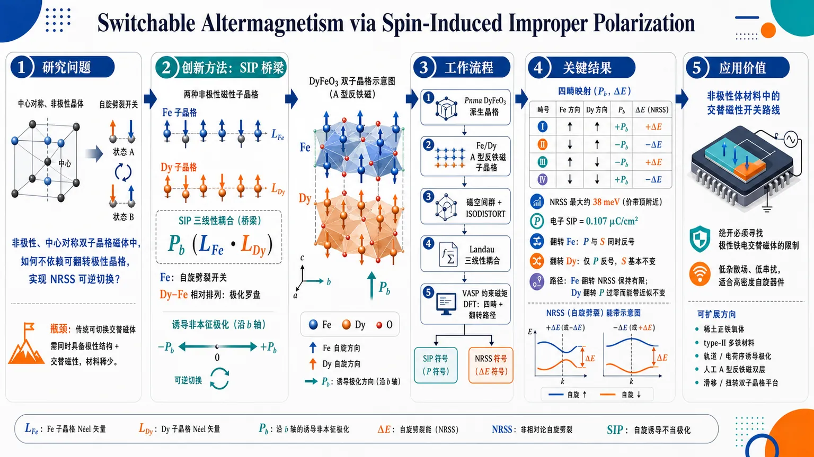
研究问题如何在本征非极性、中心对称的双子晶格磁体中，不依赖可翻转极性晶格结构，实现交替磁体非相对论自旋劈裂（NRSS）的可逆切换；核心瓶颈是传统可切换交替磁体必须同时具备极性结构和交替磁性，候选材料极少。创新方法提出“自旋诱导非本征极化（SIP）”作为开关桥梁：两个非极性磁子晶格的 Néel 矢量通过三线性耦合 P_b(L_Fe·L_Dy) 诱导沿 b 轴极化；在简化 DyFeO₃ 双子晶格模型中，Fe 子晶格像“自旋劈裂开关”控制 NRSS，Dy–Fe 相对自旋排列像“极化罗盘”决定 SIP 正负，从而把极化翻转与交替磁性翻转连接起来。工作流程从非极性 Pnma DyFeO₃ 派生晶格出发，设置 Fe 与 Dy 两个 A 型反铁磁子晶格；用磁空间群与 ISODISTORT 分解确认 Fe、Dy 非极性自旋模的乘积可变换为极性 P_b 模；建立 Landau 三线性耦合公式；用 VASP 约束磁矩 DFT 计算四个共线多铁畴态的极化和能带自旋劈裂；再构造 Fe 翻转与 Dy 翻转两条 ac 平面共面路径，追踪从磁畴输入到 SIP/NRSS 输出的符号变化。关键结果DFT 显示价带顶附近最大 NRSS 约 38 meV，固定离子电子 SIP 大小为 0.107 μC/cm²；四畴映射清晰：翻转 Fe Néel 矢量时，P 与 S 同时反号；翻转 Dy Néel 矢量时，仅 P 反号而 S 基本不变。路径计算进一步显示，Fe 翻转过程中 NRSS 保持有限，只是在自旋分量间连续重分布；Dy 翻转会让极化过零并反转，但能带与 NRSS 几乎不变。应用价值为无杂散场、低串扰自旋电子器件提供一种非极性体材料中的交替磁性开关路线，绕开“必须寻找极性铁电交替磁体”的严苛筛选条件；可扩展到稀土正铁氧体、type-II 多铁材料、轨道序/电荷序诱导极化体系，以及人工堆叠 A 型反铁磁双层、滑移或扭转双子晶格平台。第一部分：核心概览（Overview）
通过自旋诱导非本征极化（SIP）把非极性双子晶格磁体中的极化翻转与交替磁体非相对论自旋劈裂（NRSS）翻转相连，突破以往可切换交替磁体依赖本征极性结构的材料瓶颈。以简化 DyFeO₃ 模型为证明平台，DFT 与对称性分析显示：Fe 子晶格控制 NRSS，Dy–Fe 相对自旋取向决定 SIP 符号。该机制把稀土正铁氧体中的磁致极化提升为搜索可切换交替磁性的通用对称性原则。
---
第二部分：结构化快速回顾
《Switchable Altermagnetism via Spin-Induced Improper Polarization》（None，）
背景
交替磁体（altermagnets）兼具反铁磁体的低杂散场和铁磁体式动量依赖自旋劈裂，适合自旋电子学；但此前可电控切换的交替磁体高度依赖极性晶体结构，材料候选极少。高通量筛选在 2001 个 MAGNDATA 实验磁结构中仅找到 2 个铁电可切换交替磁体，暴露严重瓶颈。
方法
采用简化 DyFeO₃（DFO）双子晶格模型，令 Fe 与 Dy 子晶格均为 A 型反铁磁序。结合磁空间群对称性分析、Landau 三线性耦合、ISODISTORT 自旋模分解与 VASP DFT，比较四个共线多铁畴态以及两个共面自旋翻转路径。
结果
Dy–Fe 相对取向通过交换致伸缩诱导沿 b 轴的非本征极化；Fe 子晶格决定价带顶附近 NRSS。DFT 得到最大自旋劈裂约 38 meV，固定离子电子极化大小为 0.107 μC/cm²。翻转 Fe Néel 矢量同时翻转 SIP 与 NRSS；翻转 Dy Néel 矢量只翻转 SIP。
讨论
四个多铁态可由 ((ěcLFₑ, ěcLDy; P,S)) 映射描述，形成清晰的子晶格选择性层级：Fe 控制电子自旋劈裂，Dy–Fe 相对排列控制极化符号。这种机制使非极性中心对称固定离子结构也能实现可切换交替磁性。
局限
模型是简化 DFO 派生模型，并非完整 DyFeO₃ 磁基态；所有极化值为固定离子电子贡献，未包含离子弛豫；翻转路径是受限共面插值，不代表真实动力学；未显式处理磁各向异性与自旋轨道耦合对开关能垒和实际可控性的影响。
结论
SIP 提供了一条绕开极性结构限制的可切换交替磁性路线，可扩展到 type-II multiferroics、轨道序/电荷序诱导非本征极化体系，以及人工双子晶格平台如堆叠 A 型反铁磁双层。
---
第三部分：逐章节冷凝解析（Section-by-Section Condensing）
Abstract
Reversible spin-splitting switching is the central target
可逆切换交替磁体自旋劈裂被定位为自旋电子学关键目标，核心优势在于交替磁体几乎无杂散场，同时具有动量依赖自旋劈裂。应用动机直接指向低串扰、高鲁棒的自旋器件；原文明确指出：*"Enabling reversible spin-splitting switching in stray-field-free altermagnets is promising for spintronic applications"*。
Existing routes are restricted to polar materials
既有可切换策略主要依赖极性材料，材料空间狭窄。核心限制不是交替磁体本身稀少，而是“可由极化结构自由度切换”的交替磁体稀少；原文给出约束：*"but currently limited to a narrow class of polar materials."*
Spin-induced improper polarization expands the design space
提出以自旋诱导非本征极化（spin-induced improper polarization, SIP）为替代路径，在本征非极性双子晶格磁体中获得可切换极化与自旋劈裂耦合。关键创新是极化不再要求晶格本身极性，而由磁序诱导；原文表述为：*"We propose a broader approach based on spin-induced improper polarization in nonpolar dual-sublattice magnets."*
DyFeO₃ realizes the symmetry mechanism
简化 DyFeO₃ 模型中，非极性的 Fe 自旋模与 Dy 自旋模的乘积变换为极性模，从而诱导极化。该机制不是普通铁电位移主导，而是磁序乘积诱发极性响应；证据为：*"We demonstrate this mechanism in ḩ DyFeO3, where the product of nonpolar ḩ Fe and ḩ Dy spin modes transforms as an induced polar mode."*
Dy–Fe alignment selects polarization, Fe controls spin splitting
DFT 结果揭示明确分工：Dy–Fe 相对自旋排列选择极化方向，Fe 子晶格控制 NRSS。这形成可独立辨识的双通道：极化由相对磁序决定，自旋劈裂由 Fe 磁序决定；原文概括为：*"Density functional theory shows that the relative ḩ Dy– ḩ Fe spin alignment selects the polarization, while the ḩ Fe sublattice controls nonrelativistic spin splitting"*。
Nonpolar bulk switchable altermagnetism becomes possible
最终贡献是把 SIP 建立为非极性体材料中实现可切换交替磁性的通道，绕开“必须有可翻转极性结构”的传统要求；原文结论为：*"These results establish spin-induced improper polarization as a route to switchable altermagnetism in nonpolar bulk systems."*
---
Introduction—
Altermagnets combine antiferromagnetic robustness and ferromagnet-like spin splitting
交替磁体被界定为一种独立共线磁性类别，兼具反铁磁体低杂散场和铁磁体式动量依赖自旋劈裂。其电子结构核心不是净磁矩，而是动量空间中自旋劈裂符号交替；原文定义为：*"Altermagnets represent a distinct class of collinear magnetism, combining negligible stray fields and the robustness of antiferromagnets with the momentum-dependent spin-split bands of ferromagnets."*
Spintronic relevance spans transport, magnetoresistance, superconductivity, and Hall effects
交替磁体应用潜力覆盖多个前沿方向，包括自旋极化输运、巨磁阻、非常规超导、反常霍尔效应等。关键不是单一效应，而是“无大净磁矩 + 自旋劈裂”的组合催生多类响应；原文列举：*"enabling phenomena such as spin-polarized transport, giant magnetoresistance, unconventional superconductivity, anomalous Hall effect, and other novel spintronic applications."*
Multiferroic altermagnets are attractive for energy-efficient control
为了实现低能耗控制，研究焦点转向同时具有铁电性和交替磁性的多铁材料。电场控制极化进而控制自旋劈裂，是此前最直接的设计范式；原文说明：*"To realize energy-efficient control of altermagnetism, attention has increasingly turned to multiferroic materials, particularly those that simultaneously exhibit ferroelectricity and altermagnetism."*
High-throughput screening exposes a severe materials bottleneck
过去策略的材料空间极其有限：在 MAGNDATA 中 2001 个实验报告磁结构里，高通量筛选仅识别出 2 个铁电可切换交替磁体。这个数字是整篇工作的强动机之一；原文给出硬证据：*"identified only two ferroelectrically switchable altermagnets among 2001 experimentally reported magnetic structures in the MAGNDATA database"*，并指出这*"highlighting a severe materials bottleneck."*
The polar-structure requirement is the key bottleneck
稀缺性的对称性根源在于此前设计要求材料具有极性结构，即晶格本身必须允许可翻转极化。这大幅压缩候选池；原文判断为：*"This scarcity arises from a stringent symmetry constraint in prior design strategies—the need for a polar structure—which greatly restricts the pool of candidate materials."*
The central question is whether magnetism can induce the switchable polarization in a nonpolar lattice
核心问题转为：非极性晶格是否能通过磁序诱导极化，并进一步实现可切换交替磁性。关键突破点是把极化的来源从结构极性改为磁性耦合；原文提出：*"A natural question is whether a nonpolar lattice can host switchable altermagnetism if the polarization itself is magnetically induced."*
SIP supplies a natural exchange-striction route
SIP 源于磁序驱动的交换致伸缩（exchange striction），可在本来非极性的晶格中产生极化。它不同于本征铁电极化：主序参量是磁序，极化是二级诱导量；原文说明：*"Spin-induced improper polarization (SIP) would offer precisely such a route because it arises from exchange striction driven by magnetic order in an otherwise nonpolar lattice."*
Rare-earth orthoferrites provide a dual-sublattice platform
稀土正铁氧体中，稀土和过渡金属磁子晶格之间的相互作用已知可产生 type-II multiferroicity 与非线性磁电响应。它们天然具备双磁子晶格，是检验 SIP–NRSS 耦合的理想平台；原文写道：*"In rare-earth orthoferrites, this mechanism operates between the rare-earth and transition-metal magnetic sublattices, giving rise to type-II multiferroicity and nonlinear magnetoelectric responses."*
The unresolved issue is whether the same dual-sublattice order can control NRSS
已有 SIP 研究主要关注磁电极化，尚未解决同一双子晶格磁序是否能控制非相对论自旋劈裂（NRSS）。研究问题被明确压缩为 SIP 与 NRSS 的对称性耦合；原文直接提出：*"Here, we ask whether the same dual-sublattice magnetic order can also control the nonrelativistic spin splitting (NRSS)."*
The proposed strategy links polarization switching to NRSS reversal without polar structural degrees of freedom
提出的核心策略是利用 SIP 将极化翻转与 NRSS 反转相连，目标材料为非极性双子晶格磁体。这意味着不需要传统铁电位移模式作为开关自由度；原文概括：*"we propose a symmetry strategy based on SIP to link polarization switching with NRSS reversal in nonpolar dual-sublattice magnets."*
The simplified DyFeO₃ model separates Fe and Dy roles
简化 DyFeO₃ 模型被用于区分两个子晶格角色：Fe 子晶格支配 NRSS，Dy–Fe 相对取向选择 SIP 符号。这种“分工层级”是整个机制的核心；原文表述为：*"the ḩ Fe sublattice governs the NRSS, whereas the relative ḩ Dy- ḩ Fe spin orientation selects the sign of the SIP."*
Four-domain mapping organizes SIP and NRSS switching
在联合序参量空间中形成四畴映射：翻转 Fe 磁矩同时改变 SIP 和 NRSS 符号；翻转 Dy 磁矩只改变 SIP。原文给出明确规则：*"Reversing the ḩ Fe moments changes the signs of both the SIP and the NRSS, whereas reversing the ḩ Dy moments changes only the SIP."*
Fixed-ion centrosymmetric framework is sufficient
机制发生在中心对称固定离子结构框架内，不要求可翻转极性晶格畸变。该点是相对传统多铁交替磁体设计的最大跃迁；原文强调：*"without requiring a switchable polar structural degree of freedom, i.e., within a centrosymmetric fixed-ion structural framework."*
---
Spin-induced improper polarization—
RMO₃ perovskites are ideal dual-sublattice candidates
(RMO₃) 钙钛矿氧化物，其中 R = 稀土、M = Cr/Fe/Mn 等过渡金属，天然包含两个磁子晶格，并被视为高温交替磁体候选。原文说明：*"An ideal platform to explore the coupling between SIP and NRSS is offered by perovskite oxides of the form ḩ RMO3 ... which host two magnetic sublattices and represent promising candidates for high-temperature altermagnetism."*
Rare-earth orthoferrite polarization originates from exchange striction
稀土正铁氧体中的电极化来自稀土与过渡金属磁序之间的交换致伸缩，即不同相对自旋排列导致不同键长/电子密度响应，从而破坏反演对称性。原文证据为：*"the electric polarization ... arises from exchange striction between rare-earth and transition-metal magnetic orders."*
A simplified collinear DyFeO₃ model isolates SIP–NRSS coupling
模型没有采用 DyFeO₃ 的完整磁基态，而是设定 Fe 与 Dy 子晶格均为 A 型反铁磁序，用于隔离 SIP 与 NRSS 耦合。该选择是概念证明而非材料真实基态拟合；原文明确：*"We consider a simplified collinear magnetic model, rather than the full magnetic ground state of DyFeO3, in which both the ḩ Fe and ḩ Dy sublattices are assigned A-type antiferromagnetic order."* 目的为：*"This minimal model is used to isolate the coupling between SIP and NRSS."*
Asymmetric Dy–Fe alignment breaks inversion and permits b-axis polarization
当 Dy 与 Fe 磁矩在 ac 平面呈非对称排列时，空间反演对称性被破坏，允许沿 b 轴出现极化响应。原文给出方向与几何条件：*"The asymmetric alignment of ḩ Dy and ḩ Fe moments within the ac plane breaks spatial inversion symmetry and allows a polar response along the b axis."*
Polarization sign is locked to relative sublattice orientation
极化方向由两个 Néel 矢量的相对取向决定，而非由单个子晶格绝对方向决定。平行与反平行取向给出相反极化，垂直取向极化为零；图注中的证据为：*"Parallel and antiparallel ... alignments correspond to opposite polarization signs, whereas perpendicular alignment ... gives no net polarization."* 文中进一步强调：*"this magnetic structure locks the sign of the polarization to the relative orientation of the two magnetic sublattices."*
Only one Néel vector needs reversal for polarization switching
由于极化由 (ěcLFₑḑotěcLDy) 的符号决定，翻转任一子晶格 Néel 矢量即可反转极化。原文直接给出开关规则：*"polarization reversal requires reversing only one of the two Néel vectors."*
The four MFE states share polar magnetic symmetry Pna2₁
在共线磁框架下，系统支持四个对称相关多铁态 MFE1–MFE4，对应同一极性磁空间群设置 Pna2₁。原文表述：*"the system supports four symmetry-related multiferroic states, denoted MFE1–MFE4, with the same polar symmetry setting associated with Pna2₁."*
The order parameter pair ((P,S)) encodes polarization and spin splitting
引入双分量序参量 ((P,S))：P 表示沿 b 轴 SIP 分量 (P_b) 的符号；S 表示 NRSS 序参量符号，定义为 (Sequiv øperatornamesgn(Sěcₖ))，其中 (Sěcₖ=ǎrepsiloněcₖp̆arrow-ǎrepsiloněcₖdowⁿarrow)。原文定义为：*"P denotes the sign of P_b, the SIP component along the b axis, and S denotes the sign of the NRSS order parameter"*，并给出公式：*"Sěcₖ=ǎrepsiloněcₖp̆arrow-ǎrepsiloněcₖdowⁿarrow in the chosen spin basis."*
Néel vectors are explicitly defined from sublattice moments
Fe 与 Dy Néel 矢量由原胞内标号 1 与 3 号位点磁矩差定义：
[
ěcLFₑ=fracěcmFₑ^₃-ěcmFₑ^₁2|ěcmFₑ^₁|,quad
ěcLDy=fracěcmDy^₃-ěcmDy^₁2|ěcmDy^₁|.
]
原文说明：*"where ěcm_Feⁱ and ěcm_Dyⁱ are the magnetic moments on the i-th site within the primitive cell labeled in Fig. 1(a)."*
Dy reversal maps to spatial inversion and flips only polarization
固定 Fe 而翻转 Dy Néel 矢量，磁构型映射到其空间反演伙伴 (hatP)。由于极化是极向量，(P) 反号；而 (Sěcₖ) 不变。原文证据：*"reversing the ḩ Dy Néel vector while keeping the ḩ Fe Néel vector fixed maps the magnetic configuration onto its spatial-inversion partner"*，并说明：*"this operation reverses ěcP, whereas Sěcₖ remains invariant."*
Fe reversal maps to PT and flips both polarization and NRSS
固定 Dy 而翻转 Fe Néel 矢量，构型映射到联合时间反演与空间反演 (hatPhatT) 伙伴，因此 (P) 与 (Sěcₖ) 同时反号。原文写道：*"reversing the ḩ Fe Néel vector while keeping the ḩ Dy Néel vector fixed maps the configuration onto its combined time-reversal and space-inversion ... partner."* 结果为：*"both ěcP and Sěcₖ change sign."*
Landau trilinear coupling formalizes SIP
Landau 自由能包含三线性磁电耦合：
[
F=fracα2P_b²⁺łambda P_b(ěcLFₑḑotěcLDy)+O(P_b⁴⁾.
]
其中 (α) 是极化刚度，(łambda) 是三线性磁电耦合系数。原文定义为：*"Here, α is the polar stiffness, łambda is the trilinear magnetoelectric coupling coefficient"*。
Polarization is an improper secondary order parameter
对 (P_b) 最小化得到：
[
P_b=-(łambda/α)(ěcLFₑḑotěcLDy).
]
这说明极化不是主序参量，而是由两个磁 Néel 矢量内积诱导的非本征二级序参量。原文给出结论：*"showing that the polarization is an improper secondary order parameter whose sign is determined by the relative orientation of the two magnetic sublattices."*
ISODISTORT spin-mode decomposition confirms the symmetry product rule
自旋模分解显示，MFE1 的 Fe 与 Dy 磁模分别为非极性模式：
[
QFₑ=mΓ₁⁺,quad QDy=mΓ₄⁻,
]
其乘积变换为极性模：
[
Q_P=Γ₄⁻sim P_b.
]
原文证据为：*"separates the MFE1 order into nonpolar Fe- and Dy-centered magnetic modes ... whose product transforms as the polar mode"*，并说明：*"This provides the symmetry-mode representation of the trilinear coupling."*
The coupling is consistent with previous orthoferrite Hamiltonians
SIP 由稀土与 Fe 反铁磁序参量乘积控制，这与既有稀土正铁氧体模型哈密顿量一致。原文表述：*"This form is consistent with previous model-Hamiltonian descriptions of rare-earth orthoferrites, where SIP is controlled by the product of rare-earth and ḩ Fe antiferromagnetic order parameters."*
The symmetry basis links SIP to Fe-dominated NRSS
三线性耦合为 SIP–NRSS 关联提供对称性基础，而第一性原理显示 NRSS 主要由 Fe 子晶格支配。原文总结：*"We use this coupling as the symmetry basis for linking SIP to NRSS, and show from first-principles calculations that the coupling is governed primarily by the ḩ Fe sublattice."*
---
Collinear multiferroic states—
DFT implementation uses VASP and constrained moments
电子结构计算采用 VASP 密度泛函理论框架，并使用约束磁矩方法固定自旋方向，以便公平比较对称相关共线磁态。原文方法细节为：*"We use the density-functional theory (DFT) framework as implemented in the Vienna ab-initio simulation package (VASP)."* 以及：*"we used a constrained-moment approach to fix the spin directions, enabling a consistent comparison among different magnetic configurations."*
All reported polarizations are clamped-ion electronic contributions
所有给出的极化值都是固定离子电子贡献，即离子坐标保持不变，不包含离子弛豫带来的晶格极化贡献。原文明确限定：*"All reported values are therefore clamped-ion electronic contributions."*
Parent lattice is centrosymmetric Pnma
计算采用非极性晶体空间群 Pnma（No. 62），包含反演对称性。该点证明极化不是来自初始极性晶格。原文证据：*"We consider the nonpolar crystallographic space group Pnma (No. 62), which contains inversion symmetry."*
Magnetic order reduces symmetry to polar Pna2₁
当 Fe 与 Dy 两个磁子晶格同时激活时，对称性降低到极性磁空间群 Pna2₁。极化由磁序诱导，不是晶体结构本征破缺反演；原文表述：*"When both the ḩ Fe and ḩ Dy magnetic sublattices are active, the symmetry reduces to the polar magnetic space group Pna2₁."*
The key Brillouin-zone path is R′–Z–R
电子结构分析聚焦正交晶系布里渊区高对称路径 R′–Z–R，尤其考察价带顶附近自旋劈裂。原文写道：*"In the orthorhombic Brillouin zone, we focus on the high-symmetry path R′-Z-R."*
VBM spin splitting shows altermagnetic sign alternation
价带顶 VBM 的自旋劈裂符号在对称相关动量区域交替，体现交替磁体的核心特征。原文说明：*"At the valence band maximum (VBM), S exhibits a characteristic altermagnetic distribution in which the sign alternates between symmetry-related momentum sectors."*
Maximum spin splitting reaches about 38 meV
DFT 沿 R′–Z–R 路径计算得到价带边缘态最大自旋劈裂约 38 meV。这是 NRSS 强度的关键定量证据；原文给出数值：*"show a maximum spin splitting of about 38 meV for the valence-band edge states."*
Intrinsic spin symmetry enforces opposite signs on R′–Z and R–Z
VBM 自旋劈裂满足：
[
SVBMR′₋Z=-SVBMR₋Z.
]
这一关系由内禀自旋对称性 ([-1||M₁₀₀]) 决定，其中 ([gₛ||gₗ]) 表示 (gₛ) 作用于自旋空间、(gₗ) 作用于坐标空间。原文写道：*"Crucially, we find that SR′₋ZVBM=-SR₋ZVBM, a relation dictated by the intrinsic [-1||M₁₀₀] spin symmetry"*，并解释：*"[gₛ||gₗ] denotes gₛ acting only on spin space and gₗ on coordinate space."*
Four MFE states obey a precise NRSS sign relation
四个多铁态的 VBM 自旋劈裂序参量满足：
[
SMFE₁=SMFE₂=-SMFE₃=-SMFE₄.
]
这意味着 MFE1 与 MFE2 自旋劈裂同号，MFE3 与 MFE4 同号且相反；该关系体现 NRSS 由 Fe Néel 矢量决定。原文公式为：*"The VBM spin-splitting order parameters of the four multiferroic states satisfy SMFE₁=SMFE₂=-SMFE₃=-SMFE₄."*
All four clamped-ion SIP magnitudes are 0.107 μC/cm²
DFT 得到四个共线态的固定离子 SIP 大小均为：
[
|P_b|=0.107 μ C/cm².
]
这是该模型极化强度的关键定量结果。原文证据：*"The calculated clamped-ion SIP components all have magnitude 0.107 μC/cm²."*
Four MFE states obey a precise polarization sign relation
极化符号满足：
[
PMFE₁=-PMFE₂=-PMFE₃=PMFE₄.
]
该关系表明翻转任一子晶格均可改变 Dy–Fe 相对取向，从而反转 (P)。原文公式为：*"with signs satisfying PMFE₁=-PMFE₂=-PMFE₃=PMFE₄."*
DFT agrees with symmetry-derived four-domain mapping
DFT 中 (P) 与 (S) 的符号关系与对称性图像一致，支持“Fe 决定 NRSS、Dy–Fe 相对取向决定 SIP”的层级机制。原文总结：*"These quantitative results from the DFT calculations are in good agreement with the symmetry analysis in Fig. 2."*
The P–S coupling arises from trilinear interaction of two Néel vectors
(P)–(S) 耦合本质上来自两个 Néel 矢量参与的三线性相互作用，它诱导非本征 SIP，并将其与 Fe 子晶格控制的 NRSS 相连。原文表述：*"The P–S coupling arises from a trilinear interaction involving the two Néel vectors, which induces an improper spin-induced polarization and links it to the ḩ Fe-sublattice-controlled NRSS identified in this work."*
Dy-only limit preserves spin degeneracy
补充对称性分析显示，仅保留 Dy 子晶格时，相关自旋空间对称性保护自旋简并，因此 NRSS 消失。原文给出结论：*"In the Dy-only limit, the relevant spin-space symmetry preserves the spin degeneracy, so the NRSS vanishes."*
Fe-only limit yields finite spin splitting set by LFe
仅保留 Fe 子晶格时，自旋简并保护被解除，出现有限自旋劈裂，其符号由 (ěcLFₑ) 决定。原文说明：*"in the Fe-only limit, this protection is lifted, yielding a finite spin splitting whose sign is set by ěcLFₑ."*
Site-projected bands show VBM is Fe 3d dominated
MFE1 的位点投影自旋分辨能带显示，价带顶主要由 Fe 3d 轨道贡献，而非 Dy 4f 主导。这是 Fe 控制 NRSS 的电子结构证据；原文写道：*"site-projected, spin-resolved band structures of the MFE1 state ... show that the VBM states are dominated by ḩ Fe 3d character."*
Fe reversal flips both P and S, Dy reversal flips only P
综合对称性与 DFT，翻转 Fe 磁矩会翻转 P 与 S；翻转 Dy 磁矩只翻转 P，保持 Fe 控制的 NRSS 不变。原文给出最终规则：*"reversing the ḩ Fe moments reverses the signs of both P and S, whereas reversing the ḩ Dy moments reverses only P, leaving the ḩ Fe-controlled NRSS unchanged."*
The hierarchy provides a nonpolar bulk route
子晶格选择性层级提供了非极性体材料中把极化翻转与交替磁性自旋劈裂翻转耦合的对称性路线。原文结论为：*"This sublattice-selective hierarchy provides a symmetry route for coupling polarization reversal to altermagnetic spin-splitting reversal in nonpolar bulk systems."*
---
Coplanar reversal paths —
Two constrained ac-plane reversal paths track order-parameter evolution
为了研究翻转过程中 SIP 与 NRSS 如何演化，构造两个位于 ac 平面的受限自旋路径。原文说明：*"To illustrate how the coupled order parameters evolve upon spin reversal, we investigate two constrained spin paths in the ac plane."*
Noncollinear constrained DFT is used for the paths
路径上的共面磁态采用非共线磁性约束 DFT处理。原文方法为：*"Coplanar magnetic states along the reversal paths were treated using constrained DFT for noncollinear magnetism."*
Only magnetic directions vary, ionic coordinates stay fixed
路径计算只改变磁矩方向，离子坐标固定，与共线态固定离子处理保持一致。原文限定：*"Only the magnetic-moment directions were varied along the paths, while the ionic coordinates were kept fixed."*
The paths are not physical switching dynamics
这些路径用于追踪序参量演化，不用于模拟真实开关动力学；真实动力学需要显式考虑磁各向异性和自旋轨道耦合。这是重要局限。原文明确：*"These paths serve to track the order-parameter evolution and are not intended to model the physical switching dynamics, which would require explicit consideration of magnetic anisotropy and spin-orbit coupling."*
Path 1 reverses Fe moments from MFE1 to MFE3
路径 1 连接 MFE1 → MFE3，通过 Fe 磁矩 180° coherent rotation 实现，Dy 磁矩固定。原文描述：*"Path 1 connects MFE1 to MFE3 through a 180° coherent rotation of the ḩ Fe moments, with the ḩ Dy moments kept fixed."*
Path 2 reverses Dy moments from MFE1 to MFE2
路径 2 连接 MFE1 → MFE2，通过翻转 Dy 磁矩实现，Fe 磁结构固定。原文说明：*"Path 2 connects MFE1 to MFE2 through the corresponding reversal of the ḩ Dy moments, with the ḩ Fe magnetic structure kept fixed."*
NRSS is monitored at Ω on Z–R using Fe-site spin expectation values
为追踪 NRSS，计算 Z–R 段中点 (Ømega) 处 Fe 位点自旋期望值 (łangle Sₐångle) 与 (łangle S_cångle)。原文定义：*"we evaluate the ḩ Fe-site spin expectation values łangle Sₐångle and łangle S_cångle at Ω, the midpoint of the Z–R segment."*
The Ω-point NRSS directly tracks Fe-sublattice contribution
(Ømega) 点 NRSS 被视为 Fe 子晶格贡献的直接指标。原文说明：*"the NRSS at this point directly tracks the ḩ Fe-sublattice contribution."*
Along Fe reversal, NRSS remains finite
路径 1 中，Fe 翻转过程中 NRSS 没有消失，而是在 (łangle Sₐångle) 与 (łangle S_cångle) 两个自旋分量之间连续重新分配。原文证据：*"Along Path 1, the NRSS remains finite, with its spin character continuously redistributed between łangle Sₐångle and łangle S_cångle."*
Along Dy reversal, polarization flips but bands and NRSS are nearly unchanged
路径 2 中，固定离子极化 (P_b) 翻转，但电子能带与 NRSS 几乎不变，进一步证明 NRSS 与 Dy 翻转弱相关。原文表述：*"Path 2 reverses the clamped-ion polarization P_b while leaving the electronic bands and NRSS nearly unchanged."*
Ideal coplanar interpolation gives (P_bsimo̧sθ)
设 (θ) 为 (LFₑ) 与 (LDy) 的相对夹角，交换致伸缩不变量给出：
[
P_bproptoLFₑḑotLDysimo̧sθ.
]
原文公式为：*"For an ideal coplanar interpolation, with θ the relative angle between LFₑ and LDy, the leading exchange-striction invariant gives P_b∝LFₑḑotLDy∼cosθ."*
Polarization passes through zero at orthogonal spin alignment
当 Fe 与 Dy Néel 矢量正交时，(LFₑḑotLDy=0)，交换致伸缩诱导极化消失，极化在此处变号。原文说明：*"P_b reverses through the orthogonal spin configuration, where the exchange-striction invariant vanishes."*
Fe-derived NRSS persists while its projection rotates
极化在正交点过零时，Fe 来源的 NRSS 仍保持有限，只是其自旋投影沿路径连续变化。原文写道：*"while the Fe-derived NRSS remains finite and continuously redistributes its spin projection along the path."*
Microscopic picture: Fe governs NRSS, relative Dy–Fe order governs SIP
路径结果强化微观图像：NRSS 由 Fe 子晶格支配，因此 Fe 反转使其反号；固定离子 SIP 的符号由 Dy–Fe 相对磁序决定。原文总结：*"The NRSS is governed by the ḩ Fe sublattice and therefore changes sign when the ḩ Fe moments are reversed."* 以及：*"the sign of the clamped-ion SIP is set by the same sublattice-alignment symmetry relation."*
The mechanism differs from field-driven GdFeO₃ nonlinear magnetoelectric response
该畴翻转分析不同于 GdFeO₃ 中磁场驱动的非线性磁电响应；后者场依赖主要由稀土子晶格主导，Fe 序较刚性。原文区分：*"This domain-reversal analysis should be distinguished from the magnetic-field-driven nonlinear magnetoelectric response of ḩ GdFeO3, in which the field dependence is dominated by the rare-earth sublattice while the ḩ Fe order remains comparatively rigid."*
Fe 3d reversal with Dy 4f pinned deterministically reverses both responses
关键器件含义是：在 Dy 4f 磁矩钉扎时，Fe 3d 磁矩 180° 翻转可同时翻转极化与 NRSS。原文给出：*"a 180° reversal of the ḩ Fe 3d moments with the ḩ Dy 4f moments pinned reverses both the polarization and the NRSS."*
The simplified DFO model is a proof-of-principle platform
简化 DFO 模型被定位为证明极性响应与交替磁性响应耦合的概念平台。原文结论为：*"This deterministic sublattice-selective coupling establishes the simplified DFO model as a proof-of-principle platform for coupled polar and altermagnetic responses."*
---
Conclusions—
SIP in orthoferrites can be symmetry-coupled to altermagnetic NRSS
简化 DFO 双子晶格模型显示，稀土正铁氧体中已知的 SIP 机制可通过对称性耦合到非相对论交替磁性电子自旋劈裂。原文总结：*"using a simplified DFO-derived dual-sublattice model, we have shown that the SIP mechanism known in rare-earth orthoferrites can be coupled by symmetry to nonrelativistic altermagnetic electronic spin splitting."*
The division of roles is explicit
对称性分析与第一性原理共同给出清晰分工：Fe 子晶格控制 NRSS；Dy–Fe 联合磁序破坏反演并选择非本征极化。原文表述：*"Symmetry analysis and first-principles calculations identify a clear division of roles: the ḩ Fe sublattice governs the NRSS, while the combined ḩ Dy– ḩ Fe order breaks inversion symmetry and selects the improper polarization allowed by symmetry."*
The SIP origin is exchange striction
SIP 的物理来源与交换致伸缩一致，即极化由磁序耦合诱导。原文强调：*"consistent with the exchange-striction origin of the SIP."*
Fe reversal flips SIP and NRSS, Dy reversal flips only SIP
最终开关规律为：翻转 Fe Néel 矢量同时翻转 SIP 和 NRSS；翻转 Dy Néel 矢量只翻转 SIP。原文写道：*"reversing the ḩ Fe Néel vector reverses the signs of both SIP and NRSS, whereas reversing the ḩ Dy Néel vector reverses only the SIP."*
NRSS stays finite during Fe-reversal path
受限共面路径显示，在 Fe 翻转路径中 NRSS 保持有限，只是自旋分量重新分布。原文证据：*"The constrained coplanar paths further show that NRSS remains finite throughout the ḩ Fe-reversal path, with its spin character redistributed between components."*
SIP is an alternative to polar structural switching
SIP 提供了一条在非极性系统中连接极化翻转与交替磁体自旋劈裂翻转的替代路线，不依赖本征极性晶格开关。原文结论：*"These results establish SIP as an alternative route for linking polarization reversal to altermagnetic spin-splitting reversal in nonpolar systems."*
Future directions include type-II multiferroics and other improper polar systems
后续材料搜索可扩展到 type-II multiferroics、轨道序诱导极化、 charge order 诱导极化等体系。原文提出：*"this work motivates future material-specific investigations of switchable altermagnetism in type-II multiferroics and related improper polar systems"*，并补充：*"or by orbital ... or charge order in other materials."*
SIP complements spin-orbit torque and all-electric bilayer strategies
该路线与近年交替磁薄膜中 Néel-vector switching by spin-orbit torques 以及双层中全电控对称性设计互补。原文指出：*"Together with recent demonstrations of Néel-vector switching by spin-orbit torques in altermagnetic thin films and symmetry-designed all-electric control in bilayers, our work identifies SIP as a complementary symmetry route."*
The route bypasses restrictive polar-structure criteria
SIP 策略直接绕过限制材料发现的极性结构要求。原文表述：*"bypassing the restrictive polar-structure criteria that have limited materials discovery."*
Dual-sublattice improper polarization becomes a search principle
双子晶格非本征极化不再只是磁电效应，而成为搜索耦合极性响应和交替磁性电子响应的对称性原则。原文高度概括：*"This perspective promotes dual-sublattice improper polarization from a magnetoelectric effect to a symmetry-based search principle for coupled polar and altermagnetic electronic responses."*
Artificial bilayers may implement the same invariant
人工双子晶格平台，如堆叠 A 型反铁磁双层，也可利用两个层分辨 Néel 矢量 (L₁,L₂)。若堆叠对称性允许，三线性不变量 (P(L₁ḑotL₂₎) 可诱导极性模。原文展望：*"the same symmetry principle may be extended to artificial dual-sublattice platforms, such as stacked A-type antiferromagnetic bilayers."* 以及：*"a trilinear invariant P(L₁ḑotL₂) can induce a polar mode."*
Sliding or twisting can provide structural control
人工双层中，滑移或扭转可作为额外结构控制旋钮，调节双子晶格耦合与极性模。原文说明：*"with sliding or twisting providing an additional structural control knob."*
---
Acknowledgments—
Funding and institutional support are extensive
研究支持来自中国国家重点研发计划、国家自然科学基金、上海科技计划、广东重大项目、上海基础研究试点计划、中国科学院 robotic AI-Scientist 平台、新基石科学基金会等。原文列出：*"We acknowledge financial support from the National Key R&D Program of China (No. 2022YFA1402901), NSFC (Grants No. 12188101), Shanghai Science and Technology Program (No. 23JC1400900)"*，并继续列明多个项目支持。
Scientific discussions contributed to refinement
A.S. 感谢 Paolo Barone、Sang-Wook Cheong、Xiaonong Shen、M. J. Perez-Mato 的讨论。原文为：*"A.S. thanks Paolo Barone, Sang-Wook Cheong, Xiaonong Shen and M. J. Perez-Mato for useful discussions."*
---
第四部分：深度理解与语言支持（Understanding & Nuance）
1. 术语解析
#### Altermagnetism
Altermagnetism 指一种共线磁性相，具有反铁磁体式低净磁矩/低杂散场，同时具有类似铁磁体的动量依赖自旋劈裂。其关键不是“反铁磁 + SOC 劈裂”，而是在无 SOC 或非相对论框架下也可由晶体-自旋对称性产生自旋劈裂。文中表达为 *"momentum-dependent spin-split bands"*，强调劈裂随 (ěck) 改变且符号在动量空间交替。
#### Nonrelativistic spin splitting（NRSS）
NRSS 是非相对论自旋劈裂，即不依赖自旋轨道耦合也能出现的自旋能带分裂。文中定义为 (Sěcₖ=ǎrepsiloněcₖp̆arrow-ǎrepsiloněcₖdowⁿarrow)。与 Rashba/Dresselhaus 劈裂不同，NRSS 的根源是交替磁体的磁空间群/自旋群对称性，而不是相对论性 SOC。
#### Spin-induced improper polarization（SIP）
SIP 是由磁序诱导的非本征极化。Improper 的微妙含义是：极化不是自由能中的主不稳定模式，而是由其他序参量耦合“带出来”的二级序参量。文中 Landau 形式 (P_b(ěcLFₑḑotěcLDy)) 表明主变量是两个 Néel 矢量，(P_b) 是从属变量。
#### Exchange striction
Exchange striction 可译为交换致伸缩，指不同自旋排列改变交换能，从而驱动电子云或离子位置发生非对称响应。文中固定离子计算强调电子贡献，但物理机制仍来自 Dy–Fe 磁序耦合导致的反演破缺。它不同于 Dzyaloshinskii–Moriya 机制，后者常与非共线自旋和 SOC 相关。
#### Clamped-ion electronic contribution
Clamped-ion 表示离子坐标固定，只计算电子结构在给定磁构型下产生的极化。文中所有 (0.107 μ C/cm²) 的 SIP 值都是固定离子电子极化，不等同于完全弛豫晶格后的总极化。真实材料中离子弛豫可能增强、削弱或改变能垒。
---
2. 疑难查证
#### 为什么非极性 Pnma 晶格能产生极化？
非极性晶格本身有反演中心，因此若不考虑磁序，电极化必须为零。但磁有序会降低整体磁空间群。简化 DFO 中，单独的 Fe 模和 Dy 模都是非极性的；二者同时存在时，其乘积 (QFₑQDy) 按极性模 (Q_Psim P_b) 变换。换言之，极化不是结构本身“预先存在”，而是由两个磁序参量的组合破坏反演后被对称性允许。
#### 为什么翻转 Dy 只翻转极化，不翻转 NRSS？
NRSS 的电子态在 VBM 主要是 Fe 3d，并且 Fe-only 极限已能产生有限自旋劈裂。Dy-only 极限存在保护自旋简并的自旋空间对称性，因此 Dy 磁序本身不主导 NRSS。翻转 Dy 改变 (ěcLFₑḑotěcLDy) 的符号，所以 (P_b) 反号；但 (ěcLFₑ) 未变，Fe 主导的 (S) 基本不变。
#### 为什么翻转 Fe 会同时翻转极化和 NRSS？
极化满足 (P_bpropto -(łambda/α)(ěcLFₑḑotěcLDy))，翻转 (ěcLFₑ) 会改变内积符号，所以 SIP 翻转。NRSS 符号由 (ěcLFₑ) 决定，Fe 翻转也使自旋劈裂序参量 (S) 反号。因此 Fe 是连接极化翻转与交替磁体自旋劈裂翻转的“共同开关”。
#### 为什么路径中 NRSS 可以不经过零？
沿 Fe 共面旋转路径时，NRSS 的自旋方向可以从 (a) 分量连续转移到 (c) 分量，而不是标量幅度必须过零。若只看某一个投影，可能出现变小或变号；但完整自旋劈裂矢量/自旋期望可保持有限。文中表述为 NRSS *"remains finite"*，其 *"spin character continuously redistributed between (łangle Sₐångle) and (łangle S_cångle)"*。
#### “可切换交替磁性”是否等同于实际电场可切换？
不完全等同。这里证明的是对称性允许的畴态映射与固定离子 DFT 电子响应：不同磁畴具有可反转的 NRSS 与 SIP。真实器件中的电场写入、磁畴壁运动、磁各向异性能垒、SOC、缺陷钉扎、有限温度稳定性仍需材料特异性研究。文中也明确路径 *"are not intended to model the physical switching dynamics"*。
---
第五部分：创新评估与关联（Synthesis & Novelty）
1. 创新性判断
#### 从“极性结构筛选”转向“磁致非本征极化筛选”
过去 2–5 年的可切换交替磁体设计多依赖材料本身同时具备铁电性与交替磁性，即需要可翻转极性晶格结构。高通量筛选显示，在 2001 个实验磁结构中仅有 2 个满足铁电可切换交替磁体条件，说明该路线材料空间极窄。该工作的新颖性在于把筛选原则从“寻找极性晶格”改为“寻找非极性双子晶格中由磁序诱导的极性模”。
#### 首次把 SIP 与 NRSS 通过子晶格层级机制系统连接
稀土正铁氧体中的 SIP 与交换致伸缩并非新概念，交替磁体 NRSS 也非新概念；真正的新点是建立二者之间的对称性桥梁：Dy–Fe 相对取向控制 SIP，Fe 子晶格控制 NRSS。这种分工允许通过选择性翻转 Fe 或 Dy 实现不同响应组合，是比普通磁电耦合更精细的子晶格控制机制。
#### 解决了非极性体材料中可切换交替磁性的概念障碍
此前普遍难点在于：没有本征极化，似乎就无法用极化畴翻转来切换交替磁性。SIP 路线表明，即便初始晶格为中心对称 Pnma，磁序仍可降低为极性 Pna2₁，并产生与 NRSS 相关联的极化畴。这直接扩大到大量非极性磁性氧化物和双子晶格磁体。
#### 提出可操作的四畴映射规则
四个态满足：
[
SMFE₁=SMFE₂=-SMFE₃=-SMFE₄,
]
[
PMFE₁=-PMFE₂=-PMFE₃=PMFE₄.
]
这提供了明确的畴工程逻辑：
- 翻转 Fe：(P→ -P, S→ -S)；
- 翻转 Dy：(P→ -P, S→ S)。
这种映射比单纯证明“存在自旋劈裂”更接近器件开关设计。
#### 给出定量第一性原理证据
简化 DFO 模型中得到最大自旋劈裂约 38 meV，固定离子 SIP 大小 0.107 μC/cm²。虽然不是完整材料动力学验证，但已足以证明该对称性机制可产生可观电子响应，而非纯形式对称性构想。
#### 为人工双层和扭转/滑移结构提供外推原则
结论中将机制推广到堆叠 A 型反铁磁双层，利用层分辨 Néel 矢量 (L₁,L₂) 与三线性不变量 (P(L₁ḑotL₂₎)。这使 SIP 路线不仅适用于天然稀土正铁氧体，也可迁移到人工范德华异质结构、滑移铁电、扭转磁性平台。
#### 尚未完全解决的问题
关键未决问题包括：真实 DyFeO₃ 或其他候选材料的完整磁基态是否支持同样强耦合；离子弛豫后的总极化和开关能垒多大；Fe 或 Dy Néel 矢量是否能被实际电场、应力、光或自旋轨道力矩高效选择性翻转；SOC 与磁各向异性是否会改变路径中的 NRSS 连续性；有限温度下双子晶格磁序是否足够稳定。该工作完成的是对称性原则与第一性原理概念证明，材料实现仍需后续验证。
-
15
📊 含图深析
📄 摘要：结合实验、第一性原理和量子蒙特卡洛研究畸变蜂窝化合物KCuIn(PO4)2的电子结构与磁性。GGA+U表明其为带隙间接绝缘体，含Cu2+局域磁矩和由自旋轨道耦合引起的有限磁晶各向异性，并据此提取磁交换相互作用。
💡 亮点：KCuIn(PO4)2被确认为带隙绝缘的准二维反铁磁候选体。实验、DFT和QMC三者联用，使其磁交换图像更清晰。
📖 展开分析 + 配图
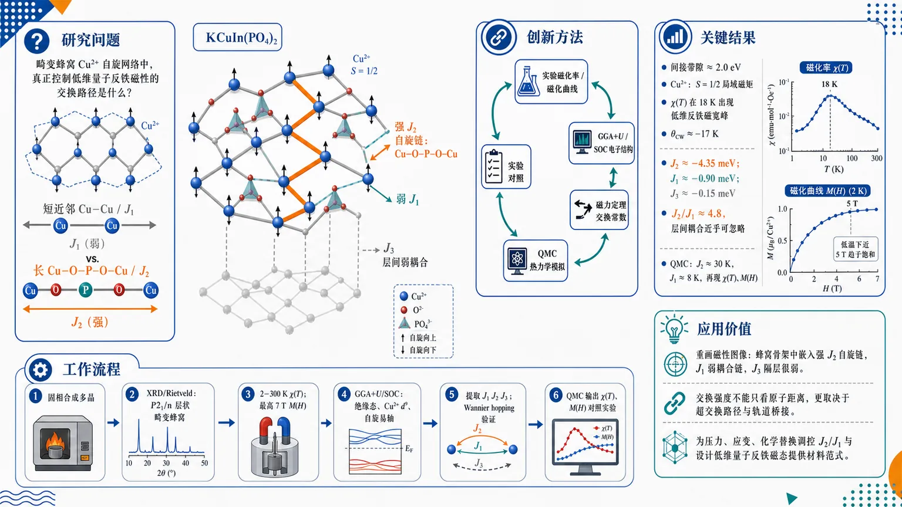
研究问题KCuIn(PO4)2 的畸变蜂窝 Cu2+ 自旋网络中，真正控制低维量子反铁磁性的交换路径是什么：是几何上更短的近邻 Cu–Cu / J1，还是更长的 Cu–O–P–O–Cu / J2 通道？创新方法用“实验磁化率/磁化曲线 + GGA+U/SOC 电子结构 + 磁力定理交换常数 + QMC 热力学模拟”构成闭环证据链，揭示反直觉核心：更长的 Cu–O–P–O–Cu 超交换 J2 远强于短 Cu–O–Cu 近邻 J1，使畸变蜂窝磁性被重画为 J2 主导的弱耦合自旋链。工作流程固相合成多晶 KCuIn(PO4)2 → XRD/Rietveld 确认 P21/n 畸变蜂窝层状结构 → 测量 2–300 K 磁化率与最高 7 T 磁化曲线 → GGA+U/SOC 计算绝缘电子结构、Cu2+ d9 自旋与易轴 → 磁力定理提取 J1、J2、J3 → Wannier hopping 验证交换强弱 → QMC 输入有效自旋模型并输出 χ(T)、M(H) 与实验对照。关键结果体系为约 2.0 eV 间接带隙绝缘体，Cu2+ 携带 S=1/2 局域磁矩；磁化率在 18 K 出现低维反铁磁宽峰，θCW≈−17 K；交换层级为 J2≈−4.35 meV、J1≈−0.90 meV、J3≈−0.15 meV，即 J2/J1≈4.8，层间耦合几乎可忽略；QMC 用 J2≈30 K、J1≈8 K 定量再现实验 χ(T) 和 M(H)，解释 7 T 内不饱和及低温约 5 T 饱和趋势。应用价值为畸变蜂窝铜基量子磁体提供可视化微观图像：层状蜂窝骨架中嵌入强 J2 自旋链，J1 只弱耦合链、J3 隔层很弱；证明交换强度不能只看原子距离，而要看超交换路径和轨道桥接；为通过压力、应变或化学替换调控 J2/J1、设计低维量子反铁磁态提供材料范式。第一部分：核心概览 (Overview)
这篇工作把实验磁化率/磁化曲线、GGA+U/自旋轨道耦合第一性原理、磁力定理交换常数与QMC串成一条闭环证据链，确定 KCuIn(PO4)2 是一个由distorted honeycomb承载的低维量子反铁磁体。最关键的发现是：尽管 Cu–Cu 近邻距离更短，真正主导磁性的是穿过 Cu–O–P–O–Cu 通道的 J2，而 J1 较弱、层间耦合更可忽略，从而把体系重写为弱耦合自旋链嵌入畸变蜂窝晶格。这一点不仅解释了 18 K 的宽磁化率峰、θCW≈−17 K 和低温场致饱和，还建立了从电子结构到集体磁性的统一微观图像。
---
第二部分：结构化快速回顾
《Quasi-Two-Dimensional Quantum Antiferromagnetism in the Distorted Honeycomb Compound KCuIn(PO4)2》（None，）
- 背景：低维 S=1/2 铜基氧化物/磷酸盐是量子涨落、挫折与交换竞争的理想平台；KCuIn(PO4)2 具有畸变蜂窝层和约 6.98 Å 的层间分离，天然适合研究准二维磁性。
- 方法：固相合成多晶样品，XRD/Rietveld 确认结构；VASP-GGA+U(+SOC) 计算电子结构；RSPt+磁力定理提取交换常数；ALPS-SSE QMC 求解有效自旋模型。
- 结果：体系为间接带隙绝缘体，带隙约 2.0 eV；Cu 近似 d9, S=1/2；J2≈−4.35 meV 明显强于 J1≈−0.90 meV，层间 J3≈−0.15 meV；QMC 精确再现实验磁化率和磁化曲线。
- 讨论：磁性主轴是 J2 主导的链状关联，畸变蜂窝只是几何外观；磁各向异性来自 SOC，易轴沿 c 轴。
- 局限：无单晶、无中子散射、无直接能隙测量；QMC 中加入的 K(Sz)² 对严格 S=1/2 体系存在形式上的简化张力；文中“quasi-two-dimensional / quasi-one-dimensional”表述有轻微不一致。
- 结论：KCuIn(PO4)2 被确立为一个由耦合自旋链组成的低维反铁磁体，交换比 J2/J1 是控制磁基态的关键参数。
---
第三部分：逐章节冷凝解析
I Introduction
低维量子磁体的研究动机
- 低维、强关联与低配位共同放大量子涨落，使 S=1/2 铜基氧化物/磷酸盐成为探索非常规磁态的核心体系。典型例子包括 CuGeO3、Sr2CuO3、Cs4CuSb2Cl12。引文原句给出背景定位：*"Low-dimensional quantum magnets continue to serve as ideal platforms"*，以及 *"S = 1 / 2 transition-metal oxides and phosphates exhibit a wide range of unconventional magnetic ground states"*。
- 畸变蜂窝晶格因 z=3 的低配位和交换不等价，特别容易增强量子效应。关键表述是 *"distorted honeycomb-lattice cuprates have emerged as an intriguing class of frustrated S = 1/2 magnets"*。
KCuIn(PO4)2 的问题设定
- 目标体系是新合成的 KCuIn(PO4)2，Cu2+ 位于畸变蜂窝层中，层间沿 a 轴 间隔约 6.9 Å，因此磁性天然带有准二维特征。原文直接指出：*"The Cu-layers are well separated along the crystallographic a axis by ∼ 6.9 Å"*。
- 结构上预设两条主交换路径：短程边共享 J1（Cu–Cu ≈ 3.09 Å）与更长的 Cu–O–P–O–Cu J2（Cu–Cu ≈ 5.34 Å）。这奠定了后续“长路径反而更强”的核心命题。
- 研究目标是把实验磁化行为、第一性原理交换与QMC 热力学统一起来。原文概括为 *"provide a consistent theoretical framework that links electronic structure, exchange interactions, and collective magnetic behavior."*
---
II Experimental and Computational Methods
#### II.1 Sample Synthesis and Characterization
样品制备与相纯性确认
- 采用常规固相法制备多晶样品，原料为 CuO、K2CO3、(NH4)2HPO4、In2O3，按化学计量混合，随后在 300°C、400°C、500°C 各预烧 6 h，最终 870°C 48 h 烧结，并进行了两次中间研磨/再压片。为补偿钾挥发，加入 5% excess K2CO3。
- 室温 XRD 使用 Cu Kα, λ=1.5406 Å；Rietveld 用 FullProf 完成。结构精修质量给出 *"χ2 ≈ 3.25, Rp ≈ 10.4%, Rwp ≈ 10.6%, and Rexp ≈ 6.28%"*，说明单相拟合较好。
磁化测量条件
- 磁化率和磁化曲线在 2–300 K、最高 7 T 下测量，使用 VSM。实验数据被用于提取 Curie–Weiss 参数并验证理论模型。
#### II.2 Electronic-Structure Calculations
DFT 与交换常数提取方案
- 使用 VASP、PAW、GGA+U；主参数 U=6 eV, J=0.8 eV，并额外测试 U=4、8 eV 以检验稳健性。
- 计算参数包括 7×5×6 Monkhorst–Pack k 网格、500 eV 截断能；SOC 通过非共线 DFT 引入。
- 交换参数由 RSPt 的 magnetic force theorem 提取。该方法在过渡金属磁体中常用于从自洽态的小角旋转获得 Jij。
QMC 求解设置
- 用 stochastic series expansion (SSE) 与 loop / directed-loop 更新，在 ALPS 中进行大规模 QMC。
- 最大体系达到 1600 spins、周期边界条件。直接计算 χ(T) 与 M(H)，并与实验比较。
---
III Results and Discussion
#### III.1 Experimental analysis
##### III.1.1 Structural characterization
晶体结构与畸变蜂窝网络
- XRD 与模拟谱高度一致，确认样品为单相 monoclinic P21/n。晶格常数为 a=8.196 Å, b=10.169 Å, c=9.173 Å, β=115.682°。
- 结构由 PO4 四面体、CuO5 三角双锥、InO6 八面体、KO5 配位单元组成，CuO5 单元的边共享形成 J1 二聚链。
- J2 通过 Cu–O–P–O–Cu 路径连接相邻链，虽然 Cu–Cu 距离更长（约 5.34 Å），但对磁性交换至关重要。原句直指核心：*"This Cu–O–P–O–Cu superexchange pathway ... plays a crucial role in establishing the dominant intrachain coupling."*
- 层间间隔约 6.98 Å，支持准二维磁网络。
##### III.1.2 Magnetization Measurements
磁化率的低维反铁磁特征
- 总磁化率写成
[
ḩi(T)=ḩi₀₊fracCᵢₘₚT+θᵢₘₚ+ḩiₛₚᵢₙ(T)
]
以剥离杂质低温上翘项。实验在 1 T 下测得，去除杂质后得到本征 χspin(T)。
- 18 K 附近出现宽峰，典型指向低维 S=1/2 AFM 的短程序形成。原文表述为 *"A broad maximum appears around 18 K"*。
- 20–300 K 的 Curie–Weiss 拟合给出
χ0 ≈ −1.38×10−4 cm3/mol, C ≈ 0.43 cm3 K/mol, θCW ≈ −17 K。负的 θCW 直接支持主导反铁磁交换。
- 由 χ0 分解得到 χdia≈−1.50×10−4 cm3/mol 和 χVV≈1.2×10−5 cm3/mol，后者归因于 Van Vleck 顺磁。
- 有效磁矩 μeff≈1.85 μB，略高于自旋 בלבד 理想值 1.73 μB，符合 Cu2+ 中残余 SOC 的经验规律。
---
#### III.2 Theoretical analysis
##### III.2.1 Lowest energy state
最低能磁构型与 U 稳健性
- 构造了 FM、AFM1、AFM2、AFM3 四种磁序。总能量结果显示 AFM1 最低，比 FM 低 4.76 meV/f.u.。
- 表中能量顺序为 AFM1 < AFM3 < AFM2 < FM，意味着 J1 与 J2 都偏向反铁磁。
- U 的稳健性测试显示：
- U=4 eV 时，AFM1 比 FM 低 5.53 meV/f.u.
- U=8 eV 时，AFM1 比 FM 低 2.51 meV/f.u.
- 这说明磁基态不依赖某个精细的 U 取值，核心结论稳定。
##### III.2.2 Electronic structure
绝缘体、d9 构型与 SOC 各向异性
- 总 DOS 显示体系为绝缘体，GGA+U 带隙约 2.0 eV。原文明确写出 *"The total DOS confirms that the compound is an insulator, exhibiting a band gap of approximately 2.0 eV."*
- Cu 的多数自旋 d 态满占据，少数自旋部分占据，符合 Cu2+ (d9) 电子构型。
- Cu 原子球内局域磁矩约 0.73 μB，小于理想 1.0 μB，来源于 Cu-d / O-p 杂化。
- 能带为间接带隙：导带底在 B 点，价带顶位于 B–Γ 方向。
- 加入 SOC 后，每个 Cu 的轨道磁矩约 0.16 μB，轨道/自旋比约 0.22，说明 SOC 不能忽略。
- 磁各向异性能量比较显示 c 轴为易轴，相对 a 轴 低 0.26 meV/f.u.。
##### III.2.3 Interatomic Exchange Couplings
交换层级与几何起源
- 磁力定理给出主要交换：
J1 = −0.90 meV, J2 = −4.35 meV, J3 = −0.15 meV，并对应 J2/J1 ≈ 4.83、J3/J1 ≈ 0.16。在这里负号来自哈密顿量约定 H = −J∑Si·Sj；因此这些负值对应反铁磁交换。
- 交换层级是 J2 > J1 ≫ J3。原文直接概括为 *"the next-nearest-neighbor (NNN) interaction J2 is substantially larger than the nearest-neighbor (NN) interaction J1"*。
- J1 的 Cu–O–Cu 键角约 97.34°，接近 90°，按 Goodenough–Kanamori 规则容易出现弱的铁磁超交换；与直接反铁磁交换竞争后，净效应变弱。
- J2 通过更长的 Cu–O–P–O–Cu 通道实现，尽管 Cu–Cu 距离长，但轨道重叠与近线性的 O–P–O 使其超交换更高效。
- Wannier 化后得到 hopping：
t1 = 39.10 meV, t2 = 72.90 meV, t3 = 20 meV。
比值 t2²/t1² = 3.6，与 J2/J1 ≈ 4.8 一致；t3²/t1² ≈ 0.26 也支持极弱层间耦合。
- 这组几何—轨道—交换三重证据共同指向：磁性由链状 J2 网络主导。
##### III.2.4 Quantum monte-carlo simulations
有效模型与实验重现
- 有效哈密顿量写为
[
H=-J₁sumłₐₙgₗₑ ᵢ,ⱼåₙgₗₑhat Sᵢḑothat Sⱼ
-J₂sumłₐₙgₗₑłₐₙgₗₑ ᵢ,ⱼåₙgₗₑåₙgₗₑhat Sᵢḑothat Sⱼ
-sumᵢ K(Sᵢ^z)²
]
其中 J1 为近邻二聚路径，J2 为次近邻链内耦合。
- QMC 找到 J2=30 K, J1=8 K 可重现实验磁化率，得到 J2/J1 ≈ 3.75，与第一性原理交换比高度一致。
- χ(T) 在 0.5–200 K 范围内与实验本征磁化率吻合，且都在 18 K 附近出现宽峰。
- M(H) 在 T=4 K 时与 2 K 实验数据接近，且 7 T 内不饱和，体现强反铁磁交换抑制完全极化。
- 在 0.2 K 下，模拟磁化在约 5 T 出现饱和。原文表述为 *"a clear saturation at a magnetic field of approximately 5 T"*。
- 这里存在一个值得警惕的形式问题：对严格 S=1/2，(Sz)² 是常数，因此“单离子各向异性”在纯自旋-1/2 哈密顿量中不会产生真正的动力学各向异性；更合理的理解是它在有效模型中吸收了 SOC / g 张量 / 交换各向异性 的综合效应。
---
IV Conclusion
统一图像的确立
- 体系被归纳为间接带隙绝缘体、Cu2+ S=1/2 局域磁矩、具有SOC 引起的单轴各向异性。原文总结为 *"an indirect-gap insulator with well-localized Cu2+ (S = 1/2) moments and finite magnetocrystalline anisotropy"*。
- 最关键的磁交换拓扑是 J2 主导、J1 次之、J3 可忽略，从而形成弱耦合自旋链嵌入畸变蜂窝晶格的局面。
- QMC 对 χ(T) 与 M(H) 的定量再现把实验与理论连成闭环。
- 结论还把 J2/J1 提升为控制参数：当 J2≫J1 时接近孤立 Heisenberg 链；减小该比值会增强二维关联并可能进入 Néel 有序区。
- 材料学上，压强、应变或化学替换被提出为调控交换比的潜在路径。
---
第四部分：深度理解与语言支持 (Understanding & Nuance)
1. 术语解析
Distorted honeycomb lattice
- 不是理想蜂窝晶格。理想蜂窝中最近邻等价、几何对称；“distorted” 表示键长、键角和交换路径不等价，导致 J1/J2/J3 明显分裂，磁性不再由单一近邻主导。
Magnetic force theorem
- 不是直接算“完整自旋动力学”，而是基于自洽电子结构，对局域磁矩做无穷小旋转，从总能变化的线性响应中提取 交换常数 Jij。优点是高效，缺点是依赖平均场/局域近似。
Curie–Weiss temperature
- θCW<0 只说明净交换偏反铁磁，不能等同于有序温度。宽峰出现在 18 K，而不是 θCW 附近，说明强短程序先于长程序出现，这正是低维量子磁体的典型特征。
Van Vleck paramagnetism
- 不是来自热激发的未成对电子，而是外场引起的基态与激发态混合。它通常是温度无关的，出现在磁化率的常数项 χ0 中。
Single-ion anisotropy
- 对 S>1/2 常见；对严格 S=1/2，((S^z)²) 为常数，难以产生真正的自旋动力学各向异性。这里更像是对 SOC 效应的有效参数化，而非字面上的单离子晶场各向异性。
2. 疑难查证
为什么“几何上更短”的 J1 反而不如更长的 J2 强？
- 交换强度不只由距离决定，还由路径对称性、键角、轨道重叠和中间阴离子决定。
- J1 走的是接近 90° 的 Cu–O–Cu 通道，按 Goodenough–Kanamori 规则容易削弱反铁磁超交换；
- J2 虽然更长，但通过 Cu–O–P–O–Cu 形成更有效的轨道桥接，因此反而更强。
- 这类“长路径胜过短路径”的现象在过渡金属磷酸盐里并不罕见，但这里由 Wannier hopping 与 交换定理 双重验证，证据链更完整。
为什么既说“quasi-two-dimensional”，又强调“spin chains”？
- 晶体结构是层状二维，但层内磁交换是链状各向异性：J2 沿某一方向形成强链，J1 只负责把链缝合进畸变蜂窝网格，J3 还极弱。
- 所以“二维”描述的是几何维度，而“链状”描述的是磁交换的主导方向性。二者并不矛盾。
“field-induced saturation” 是否等于“spin gap closure”？
- 对理想 S=1/2 AFM chain，零场基态通常是无隙的，不是典型的二聚体 singlet-gapped 系统。
- 因此这里更稳妥的理解是：外场把反铁磁链逐步极化，达到饱和场后全体自旋对齐。
- 用“spin gap closure”来描述这一步略显泛化，适合在严格表述时保留谨慎。
---
第五部分：创新评估与关联 (Synthesis & Novelty)
新颖性判断
- 过去 2–5 年关于畸变蜂窝铜基材料的工作，多数只证明“低维/挫折/反铁磁”这一层级；更进一步的微观交换排序常常不够清楚。这里的推进点在于：把 KCuIn(PO4)2 的磁性从“畸变蜂窝”提升为可量化的 J2 主导耦合链问题，并用 DFT→exchange→QMC→experiment 的闭环定量锁定。
- 关键新意不是“发现它是反铁磁”，而是发现：
1) J2 明显大于 J1，且与键长直觉相反；
2) J3 极弱，准二维性成立；
3) 同一组参数 同时重现实验磁化率与磁化曲线；
4) SOC 各向异性 与电子绝缘性共同被纳入统一框架。
解决的前人空缺
- 缺少对 KCuIn(PO4)2 的微观磁交换图景。
- 缺少把结构、电子态、交换常数、热力学响应贯通的统一模型。
- 缺少对“长路径主导”的明确数值证明：这里用 J2/J1≈4.8 与 t2²/t1²=3.6 给出双重量化证据。
- 缺少对低场磁化行为的定量再现：QMC 不仅重现 18 K 宽峰，也解释了 7 T 内不饱和与低温 ≈5 T 饱和。
相对近期相关工作的定位
- 与已知的 NaCuIn(PO4)2、Na2Cu2TeO6、CuAl(AsO4)O 等畸变蜂窝体系相比，这里更强调交换层级的反直觉性与实验-理论闭环一致性。
- 若只从磁性类型看，它属于低维铜基反铁磁；若从方法链条看，它把GGA+U、SOC、FP-LMTO、Wannier、QMC 组合成了一个相当完整的材料物理范式。
-
16
📊 含图深析
📄 摘要：基于点群对称性，作者用张量分析与群论直接判定物性张量、振动模对称性和拉曼选择定则，并应用到 PbZrxTi1-xO3。PZT 相图中对称性降低会增加热释电、介电与压电张量的独立分量数目。
💡 亮点：把物性张量和振动模式统一到对称性判据下处理，直接揭示 PZT 相图中独立分量如何随对称性降低而增多。对铁电氧化物的模态判别和谱学解析很实用。
📖 展开分析 + 配图
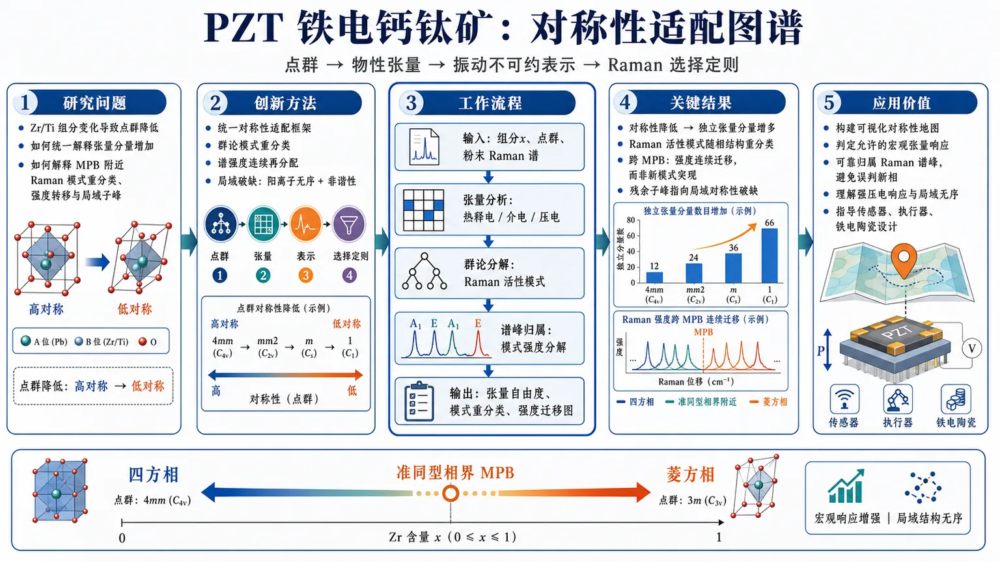
研究问题PZT 铁电钙钛矿中，Zr/Ti 组分变化导致晶体点群从高对称向低对称演化；核心问题是如何用同一套对称性语言解释宏观热释电、介电、压电张量分量的增加，以及 Raman 振动模式在准同型相界附近的分类变化、峰强转移和局域子峰结构。创新方法提出“点群对称性→物性张量→振动不可约表示→Raman 选择定则”的统一对称性适配框架。Aha 点在于：不把跨 MPB 的 Raman 谱变化简单看作新模式突然出现，而是用群论模式重分类解释为已有 Raman 活性模式的谱强度连续再分配，并把残余子峰归因于阳离子无序和晶格非谐性造成的局域对称性破缺。工作流程输入 PZT 不同组分 x 对应的晶体点群与已报道室温粉末 Raman 谱；先用张量分析筛选各点群允许的热释电、介电、压电张量非零分量；再用群论分解晶格振动的对称表示，标记 Raman 活性模式和选择定则；随后按对称性对 Raman 谱进行模式归属和强度分解；最终输出随组分跨越四方相—菱方相/MPB 的张量自由度变化、模式重分类图和谱强度连续迁移图像。关键结果随着 PZT 相图中晶体对称性降低，热释电、介电和压电张量的独立分量增多，说明低对称铁电相允许更丰富的功能响应；Raman 活性振动的对称性归属随相结构改变而重分类；跨准同型相界时，四方相到菱方相的谱演化主要表现为不同模式强度的连续重分配，而非全新 Raman 模式突然生成；持续存在的子峰结构指向 Zr/Ti 阳离子无序和晶格非谐性造成的局域对称性破缺。应用价值为 PZT 及类似铁电钙钛矿提供一张可视化“对称性地图”：可用来判定哪些宏观张量响应被允许、如何可靠归属 Raman 谱峰、如何避免把峰分裂或强度变化误判为新相/新模式，并帮助理解准同型相界附近强压电响应与局域结构无序之间的关系，对铁电陶瓷、压电传感器、执行器和功能氧化物材料设计具有指导意义。第一部分：核心概览
PZT 铁电钙钛矿的宏观物性张量、晶格振动对称性与Raman 选择定则被统一纳入晶体点群对称性框架。核心贡献在于用张量分析和群论直接连接 PZT 相图中的对称性降低、独立物性张量分量增加、Raman 模式重分类及跨准同型相界的谱强度连续重分配，为解释铁电钙钛矿中平均晶体对称性与局域无序之间的关系提供了系统工具。
---
第二部分：结构化快速回顾
《Symmetry-Adapted Physical and Vibrational Properties of Ferroelectric Perovskite Oxides: Application to PbZrxTi1-xO3》（None，）
背景
晶体对称性决定功能材料的宏观物理性质与晶格动力学。PZT 是典型铁电钙钛矿，存在随 Zr/Ti 组分变化的相结构演化与准同型相界。
方法
采用张量分析与群论，从晶体学点群对称性出发，判定允许的物性张量、振动模式对称性与Raman 选择定则。
结果
PZT 相图中对称性降低会增加独立的热释电、介电、压电张量分量，并改变 Raman 活性振动的对称性分类。
讨论
室温粉末 Raman 谱随组分跨越准同型相界时，四方相到菱方相的转变表现为谱强度连续再分配，而非新 Raman 模式突然出现。
局限
可用材料只包含题名、摘要与 arXiv 元数据；缺少正文、章节、公式、表格、图 1–5、拟合参数、谱峰位置、组分点、误差范围与参考文献细节，无法核验数值层面的完整论证。
结论
PZT 的功能性质和振动谱解释必须同时考虑平均晶体对称性与由阳离子无序、晶格非谐性导致的局域对称性破缺。
---
第三部分：逐章节冷凝解析
可核验材料仅包含 arXiv 页面与摘要。原始正文的章节标题、实验/计算细节、图表、公式、参考文献和数值数据未提供。因此，严格可执行的逐章节解析仅限于可见的原始标题与摘要内容；任何未出现在可用文本中的章节标题、数值、P 值、样本量或模型参数均不能被虚构。
---
Title: Symmetry-Adapted Physical and Vibrational Properties of Ferroelectric Perovskite Oxides: Application to PbZrxTi1-xO3
- Symmetry-adapted framing defines the central scope
题名明确将研究对象限定为铁电钙钛矿氧化物的对称性适配物理性质与振动性质，并以 PbZrₓTi₁₋ₓO₃（PZT）作为应用体系。题名中的 *"Symmetry-Adapted Physical and Vibrational Properties"* 表明研究重点不是单纯测量 Raman 谱或计算某一相结构，而是将物性张量与振动模式统一投影到晶体对称性允许的表示空间中。
- PZT serves as the prototypical application system
PZT 被题名直接指定为应用对象：*"Application to PbZrxTi1-xO3"*。该化学式中的 x 表示 Zr/Ti 组分连续可调，意味着研究天然关联到 PZT 随组分变化的相图、四方相—菱方相演化以及准同型相界附近的异常功能响应。
---
Abstract
- Crystal symmetry is treated as the governing principle
摘要开宗明义给出核心物理前提：晶体对称性控制功能材料中的宏观物性与晶格动力学，原文表述为 *"Crystal symmetry governs macroscopic physical properties and lattice dynamics in functional materials."* 这里的 “governs” 不是弱相关，而是指允许/禁戒关系、张量分量数目、振动简正模分类和光谱选择定则均受对称性严格约束。
- Tensor analysis and group theory form the methodological backbone
方法学核心是将张量分析与群论系统用于从点群推导物性与振动规律，原文为 *"We present a systematic application of tensor analysis and group theory to determine allowed physical-property tensors, vibrational-mode symmetries, and Raman selection rules directly from crystallographic point-group symmetry."* 这说明分析对象至少包括三类：
- allowed physical-property tensors：哪些宏观张量分量在某点群下非零；
- vibrational-mode symmetries：晶格振动属于哪些不可约表示；
- Raman selection rules：哪些模式可在 Raman 散射中出现，以及其偏振/对称性约束。
- Point-group symmetry is the direct input variable
关键推导从晶体学点群对称性直接开始，而不是依赖经验峰归属或仅凭谱形变化判断相变。摘要中的 *"directly from crystallographic point-group symmetry"* 强调了从点群到张量、模式、选择定则的直接映射关系。对于 PZT 这类多相铁电体系，该策略可避免把局域无序峰、谱峰分裂或强度变化误判为全局新相或新模。
- PZT is positioned as a prototypical ferroelectric system
摘要称 PZT 为 *"the prototypical ferroelectric PbZrxTi1-xO3 (PZT)"*。prototypical 表明 PZT 不只是任意测试材料，而是铁电钙钛矿研究中的典型模型体系：强压电性、组分驱动相变、准同型相界、Raman 谱复杂性和局域结构无序均具有代表性。
- Symmetry lowering increases independent tensor components
主要物性结果是 PZT 相图中对称性降低会增加独立张量分量数量，摘要写道 *"Symmetry lowering across the PZT phase diagram increases the number of independent pyroelectric, dielectric, and piezoelectric tensor components."* 涉及三类功能张量：
- pyroelectric tensor / 热释电张量：描述极化随温度变化；
- dielectric tensor / 介电张量：描述电位移对电场的线性响应；
- piezoelectric tensor / 压电张量：描述机械应力/应变与电极化之间的耦合。
对称性越低，等价方向越少，张量约束越弱，允许独立分量越多。
- Raman-active vibrations are reclassified by symmetry changes
对称性降低不仅影响宏观物性，也改变 Raman 活性振动的表示归属。摘要指出其会 *"modify the symmetry classification of Raman-active vibrations."* 这意味着同一类原子位移在不同相结构下可能从高对称相的某个不可约表示分裂或重分类为低对称相中的多个表示，从而改变 Raman 谱中峰的强度、选择规则或可观测性。
- Reported room-temperature powder Raman spectra are decomposed by symmetry
摘要说明这些模式分类被用于解释已有室温粉末 Raman 谱，原文为 *"These mode classifications enable symmetry-based decomposition of reported room-temperature powder Raman spectra as a function of composition (x) across the morphotropic phase boundary."* 这里的关键是：
- 数据类型为reported room-temperature powder Raman spectra，即已报道的室温粉末 Raman 谱；
- 自变量为 PZT 组分 x；
- 关注区间跨越 morphotropic phase boundary（MPB，准同型相界）；
- 分析方式是symmetry-based decomposition，即按照对称性归属分解光谱贡献，而非单纯峰拟合。
- The tetragonal-to-rhombohedral transition appears as intensity redistribution
关于跨 MPB 的相变，摘要给出一个重要解释：四方相到菱方相的变化表现为强度连续转移，而不是新 Raman 模式出现，原文为 *"revealing the tetragonal-to-rhombohedral transition as a continuous redistribution of spectral intensity rather than emergence of new Raman modes."* 这一区分很关键：
- continuous redistribution of spectral intensity 指已有对称性允许模式的相对强度随组分连续变化；
- emergence of new Raman modes 则意味着新的对称性允许振动或新相突然出现。
摘要倾向于前一种解释，降低了将谱峰变化简单等同于新模生成的风险。
- Persistent subpeak structure signals local symmetry breaking
摘要指出某些模式中持续存在的子峰结构反映局域对称性破缺：*"Persistent subpeak structure in selected modes indicates local symmetry breaking due to cation disorder and lattice anharmonicity."* 这里的证据逻辑是：平均晶体对称性可以解释主要 Raman 模式分类，但无法完全消除子峰结构；这些子峰可能来自 Zr/Ti 阳离子无序、局域键长/键角分布、氧八面体畸变和非谐振动效应。
- Cation disorder and lattice anharmonicity are identified as microscopic origins
子峰结构被归因于两类微观机制：cation disorder 与 lattice anharmonicity。原文中的 *"due to cation disorder and lattice anharmonicity"* 表明，PZT 中 B 位 Zr/Ti 随机占位会破坏局域平移/点群对称性，而非谐性会导致势能面偏离简谐近似，从而造成峰宽增加、峰形非洛伦兹化、子峰或局域模特征。
- Crystallographic symmetry analysis is positioned as essential for interpretation
摘要最后强调对称性分析的重要性：*"underscoring the importance of crystallographic symmetry analysis for interpreting functional and vibrational properties of ferroelectric perovskite oxides."* 这说明晶体学对称性并非背景知识，而是解释铁电钙钛矿功能性质与振动谱性质的必要框架，尤其适用于存在相共存、局域无序和组分连续变化的体系。
---
arXiv metadata
- Submission and subject classification define the research context
条目显示论文于 *"Submitted on 23 Jul 2026"*，arXiv 编号为 *"arXiv:2607.21682"*，学科分类为 *"Materials Science (cond-mat.mtrl-sci); Strongly Correlated Electrons (cond-mat.str-el)"*。主要归属材料科学，同时与强关联电子或复杂氧化物物理相关。
- Length and figure count suggest a compact theoretical-analysis paper
元数据显示 *"19 pages, 5 figures"*。结合摘要内容，论文更可能是以对称性推导 + Raman 谱解释为主的系统分析型工作，而非大规模新实验数据报告。具体图像、表格、拟合参数和谱峰位置未出现在可见材料中，不能进一步定量复述。
- Publication status remains under review
页面注明 *"This article is under review in Phase Transitions journal in July, 2026, published by Taylor & Francis"*。因此当前状态是 arXiv 预印本/投稿审稿阶段，同行评审最终版本可能发生修改。
---
第四部分：深度理解与语言支持
1. 术语解析
- Symmetry-adapted
字面意思是“适配对称性的”。在晶体物理中，它通常指把物理量、振动模式或基函数按照晶体点群/空间群的不可约表示组织起来。不是简单说“考虑对称性”，而是要求所有张量分量、振动模式和选择定则都满足群操作下的不变性或协变性。
- Allowed physical-property tensors
指在特定点群下不被对称性强制为零的张量分量。例如高对称立方相会使很多压电或热释电分量消失；低对称铁电相会允许更多非零分量。这里的 “allowed” 是群论意义上的允许，不等于实验值一定很大。
- Raman selection rules
Raman 选择定则规定哪些振动模式能被 Raman 散射观测到，以及在何种偏振几何下可见。对于粉末 Raman，偏振信息常被平均化，但模式是否 Raman 活性仍受不可约表示和极化率张量变换性质约束。
- Morphotropic phase boundary
准同型相界，常缩写为 MPB。在 PZT 中通常指四方相与菱方相或相关低对称相之间的组分边界。其特殊性在于相结构能量接近，极化方向更易旋转，压电响应通常增强。英文 “morphotropic” 强调由组分变化驱动的结构形态转变，不是温度驱动相变的普通同义词。
- Continuous redistribution of spectral intensity
指 Raman 谱中不同模式或子峰的强度随组分连续变化，而不是突然出现全新的对称性允许峰。该表达暗示跨 MPB 的谱演化可由已有模式权重转移解释，支持更连续的结构演化图像。
---
2. 疑难查证
#### 对称性降低为什么会增加独立张量分量？
张量分量必须在晶体点群操作下保持物理等价。例如高对称立方晶体中，x、y、z 三个方向常由旋转操作彼此等价，因此介电张量可能简化为一个标量形式：
[
ϵ =
beginpmatrix
ϵ₁₁ & 0 & 0
0 & ϵ₁₁ & 0
0 & 0 & ϵ₁₁
endpmatrix
]
当结构降低到四方、单斜或菱方对称性时，某些方向不再等价，原先被对称性强制相等或为零的分量可以分裂为多个独立参数。压电张量尤其敏感，因为它是三阶张量，受对称性约束更复杂；铁电相由于存在自发极化，反演对称性破缺，压电与热释电响应才可能出现。
#### Raman 模式为什么不是简单“新峰出现 = 新相出现”？
Raman 峰位置、强度和宽度同时受多种因素影响：
- 平均晶体结构的点群；
- 局域 Zr/Ti 排布；
- 氧八面体畸变；
- 应变与晶粒取向；
- 非谐声子相互作用；
- 粉末平均导致的选择定则弱化。
因此，跨 MPB 的谱峰变化可能来自同一组对称性允许模式的强度转移，而不一定意味着出现全新的振动模式。摘要中的关键判断是四方相到菱方相转变表现为 *"continuous redistribution of spectral intensity rather than emergence of new Raman modes."*
#### 平均对称性与局域对称性为什么会不一致？
衍射或晶体学模型给出的通常是平均结构；Raman 谱对局域键合环境更敏感。PZT 的 B 位由 Zr 和 Ti 混合占据，Zr–O 与 Ti–O 键长、质量、局域力常数不同。即使平均结构满足某个点群，局部单胞也可能偏离该点群，产生子峰、峰展宽或局域振动模式。这正对应摘要中的 *"local symmetry breaking due to cation disorder and lattice anharmonicity."*
---
第五部分：创新评估与关联
1. 创新性判断
- 从单一谱峰解释转向统一对称性框架
新颖性在于将 PZT 的物性张量、Raman 活性模式和选择定则放入同一个点群对称性框架中。相比只讨论 Raman 峰位或只列出相结构的工作，这种处理把功能性质与振动谱归属直接关联起来。
- 强调跨 MPB 谱演化的连续性
关键科学判断是：跨准同型相界的 Raman 变化主要是 *"continuous redistribution of spectral intensity"*，不是 *"emergence of new Raman modes."* 这对 PZT MPB 的解释有意义，因为它支持相变附近模式权重连续演化、相结构逐渐重排或局域结构持续存在的图像。
- 把局域无序纳入平均对称性解释之外
摘要没有把所有子峰都强行归入平均晶体点群，而是将 *"Persistent subpeak structure"* 归因于 cation disorder 和 lattice anharmonicity。这在 PZT 这类固溶体中很重要：平均相图无法完全解释局域 Raman 特征。
- 解决的问题
过去相关 PZT Raman 和相变研究中常见困难包括：
- Raman 模式归属在四方、菱方、单斜或相共存模型之间不统一；
- MPB 附近峰分裂、肩峰和强度变化容易被过度解释为新相或新模；
- 宏观压电/介电增强与微观振动谱之间缺少统一对称性语言；
- 局域无序与平均晶体对称性常被混淆。
该工作试图用点群约束、张量分量计数、模式表示分类和 Raman 选择定则共同解决这些问题。
- 需保留的证据边界
可见材料未提供近 2–5 年具体参考文献、对比表、实验谱峰数值、拟合残差、组分点或统计检验。因此，相对于近年工作的“新颖性强度”只能做摘要层面的判断；定量优越性、是否首创、是否超过已有群论/Raman 归属研究，仍需完整正文和参考文献支持。
-
17
📄 摘要：报道MnTe替磁体的自助熔法单晶制备、结构与本征性质，样品几乎无晶体缺陷和化学偏析。通过准自由悬挂测量抑制应力效应，观察到围绕替磁转变的升温/降温区间中各向异性畴动力学。
💡 亮点：高质量MnTe单晶把替磁相变的本征畴动力学显露出来。它为替磁材料的实验判据和输运研究提供了干净样本。
📖 展开分析 + 配图
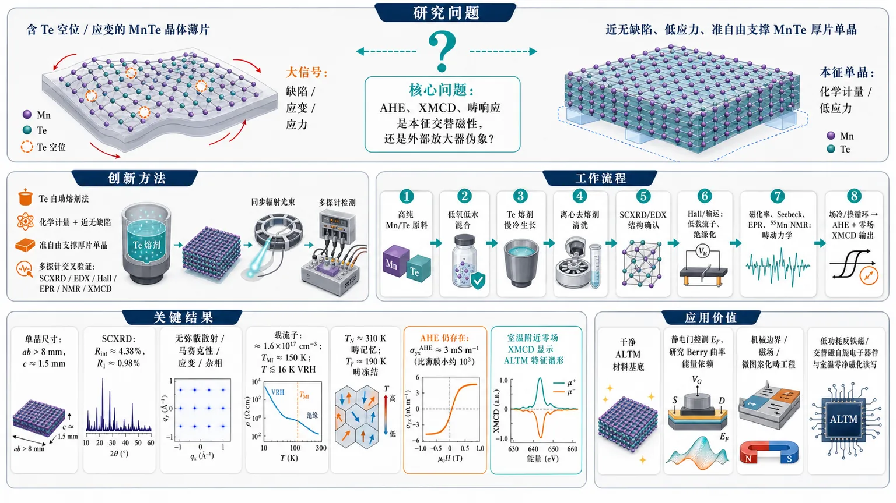
研究问题MnTe 的交替磁性标志（AHE、XMCD、畴响应）究竟是材料本征性质，还是由 Te 空位自掺杂、外延应变、机械应力等“外部放大器”制造出的伪象？核心画面可呈现为：一边是含缺陷/受应变的强信号 MnTe，另一边是近无缺陷、低应力单晶，中央用问号连接“本征交替磁性是否仍存在”。创新方法Aha 点是制备并测量“化学计量 + 近无缺陷 + 准自由支撑”的 MnTe 本征单晶：用定制 Te 自助熔剂法生长大尺寸厚片单晶，避免 Te 缺陷自掺杂和衬底应变；再用同步辐射 SCXRD、SEM-EDX、Hall、磁化率、输运、Seebeck、EPR、55Mn NMR、XMCD/XAS 多探针交叉验证，把 ALTM 信号从缺陷和应力背景中剥离出来。工作流程高纯 Mn/Te 原料在低氧低水环境中混合 → Te 自助熔剂慢冷生长大尺寸 MnTe 单晶 → 离心去熔剂并清洗 → SCXRD/EDX 确认无杂相、无弥散散射、化学计量 → Hall 与输运测得极低载流子和低温绝缘化 → 准自由支撑条件下测量磁化率、ρ、Seebeck、EPR、55Mn NMR 解析畴动力学 → Hc/Hx 场冷与热循环选择磁畴 → AHE 与零场 XMCD 验证本征交替磁性输出。关键结果获得 ab 面超过 8 mm、c 轴厚约 1.5 mm 的高质量 MnTe 单晶；SCXRD 指标 Rint≈4.38%、R1≈0.98%，无可检测弥散散射、马赛克性、应变或杂相；载流子浓度仅约 1.6×10¹⁷ cm⁻³，TMI≈150 K 后进入 Anderson 绝缘态，T≲16 K 出现 VRH；TN≈310 K 附近有过热/过冷畴记忆和各向异性滞回，Tf≈190 K 畴冻结；AHE 仍存在但 σyxAHE≈3 mS m⁻¹，比薄膜小约三数量级；零场 XMCD 在室温附近仍显示 ALTM 特征谱形。应用价值该研究把 MnTe 从“缺陷增强信号材料”推进为可控调谐的本征交替磁平台：可用于静电门控调节 EF、直接研究 ALTM Berry 曲率的能量依赖；可通过机械边界、磁场和微图案化进行畴工程；为低功耗反铁磁/交替磁自旋电子器件、室温零净磁化磁性读写、应力敏感磁畴控制和本征拓扑输运研究提供干净材料基底。第一部分：核心概览 (Overview)
MnTe 的本征、超高质量、近无缺陷单晶被成功制备，并在准自由支撑、低应力条件下系统揭示其交替磁性（altermagnetism, ALTM）本征响应。单晶呈严格化学计量、载流子浓度仅约 1.6 × 10¹⁷ cm⁻³，低温进入 Anderson 绝缘态，与常见 Te 缺陷自掺杂金属性样品形成鲜明对照。尽管 AHE 与 XMCD 信号强度显著降低，二者仍在本征极限存在，证明 MnTe 的交替磁性不是缺陷或应力伪象。工作将 MnTe 从“缺陷增强信号材料”推进为可控调谐的本征交替磁平台。
---
第二部分：结构化快速回顾
《Intrinsic single crystals of MnTe altermagnet》（None，）
背景
MnTe 是代表性交替磁体，但既往薄膜与气相输运晶体常含 Te 空位、自掺杂空穴和外延应变，使 AHE、XMCD、畴结构等信号难以归因于本征物性。
方法
采用定制 Te 自助熔剂法生长 MnTe 单晶；结合 同步辐射单晶 XRD、SEM-EDX、Hall 测量、磁化率、电阻率、Seebeck、EPR、⁵⁵Mn NMR、XMCD/XAS 等手段，在准自由支撑条件下研究结构、输运和磁畴动力学。
结果
单晶尺寸可达 ab 面 > 8 mm、c 轴厚度 1.5 mm；SCXRD 给出 Rint ≈ 4.38%、R1 ≈ 0.98%，无可检测弥散散射、马赛克性或杂相。TN ≈ 310 K 附近出现复杂各向异性过热/过冷滞回；低温 TMI ≈ 150 K 进入 Anderson 绝缘态；AHE 电导约 3 mS m⁻¹，比薄膜小约三数量级；零场 XMCD 仍呈 ALTM 特征谱形。
讨论
MnTe 的本征 ALTM 响应对载流子浓度、磁畴选择、机械边界条件高度敏感。短程磁关联、畴壁运动、压磁效应共同导致宽温区记忆效应与亚稳态。
局限
AHE 与 XMCD 信号较弱；异常 Nernst 信号未能分辨；畴结构尚未完全单畴化；NMR 谱形与 ALTM 局域环境之间的微观理论仍不足。
结论
无缺陷、低应力 MnTe 单晶确认了室温附近本征交替磁性，并提供通过静电门控调节 EF和通过机械/磁场控制畴结构研究 ALTM Berry 曲率与畴工程的理想平台。
---
第三部分：逐章节冷凝解析 (Section-by-Section Condensing)
Abstract
- Intrinsic MnTe single crystals are obtained in ultra-high quality
研究对象是 MnTe 交替磁体的本征单晶，核心覆盖合成、结构与本征性质。摘要明确给出目标：*"We report the synthesis methodology, structure, and intrinsic properties of ultra-high quality single crystals of MnTe, an archetypal altermagnet."* 单晶由 self-flux method 获得，并通过多种表征证明几乎无缺陷与非化学计量：*"The crystals, obtained from self-flux method, are nearly free from crystal imperfections and disproportionate chemical compositions as seen by various investigation methods."*
- Stress-minimized measurements reveal complex anisotropic domain kinetics near TN
在准自由支撑构型下，样品避免外界应力诱导效应，围绕 TN = 310 K 出现复杂且各向异性的畴动力学，覆盖过热与过冷两个温区：*"In measurements under quasi free-standing configuration minimizing stress induced effects, the crystals exhibit complex and anisotropic domain kinetics in both superheating and supercooling regimes around the altermagnetic transition at T N = 310 K."*
- Stoichiometric MnTe enters an Anderson insulating state at low temperature
低于 TMI ≈ 150 K 出现 Anderson insulating state，载流子浓度约 1.6 × 10¹⁷ cm⁻³，与 Te 缺陷样品常见金属性形成强烈反差：*"An Anderson insulating state is observed below T MI ≈ 150 K with a carrier density of about 1.6 × 10 17 cm − 3, being sharply contrast to metallic states usually seen in Te-deficit samples."*
- AHE and XMCD survive in the intrinsic limit but become much weaker
异常 Hall 效应（AHE）与 X-ray magnetic circular dichroism（XMCD） 是 ALTM 的标志，在本征极限仍然存在，但幅度显著减小：*"Nevertheless, hallmarks of altermagnetism, anomalous Hall effect and X-ray magnetic circular dichroism signal, are robust in this intrinsic limit, however with significantly reduced magnitudes."*
---
Introduction
- Altermagnetism is an antiferromagnetic-like order with broken time reversal and zero net magnetization
交替磁性（ALTM）被定义为一种新近受到关注的反铁磁类序，关键特征是破坏时间反演对称性但严格零净磁化：*"Altermagnetism (ALTM), a newly found antiferromagnetic-like order which breaks time-reversal symmetry with strictly zero net magnetization, has quickly entered the spotlight of condensed matter physics and materials science."* 这一对称性框架推动了对传统 AFM 序的重新识别，并引出机制、信号量级、测量方法和材料设计问题：*"The clarity of symmetry analyses pushes forward a deeper recognition of existing, well-documented antiferromagnetic (AFM) orders..."*
- MnTe is an archetypal altermagnet with established spectroscopic and transport signatures
MnTe 被定位为代表性交替磁体，其自旋相关电子结构的谱学和反常输运标志已被实验建立：*"Among many candidates, MnTe has emerged as an archetypal ALTM, in which key spectroscopic and anomalous transport signatures of the spin-dependent electronic structures have been experimentally established."* 这使 MnTe 成为 ALTM 的概念验证材料，但也暴露了本征性问题。
- Intrinsic MnTe should be a charge-transfer insulator, not an easy metal
MnTe 的本征电子结构被描述为 AFM charge-transfer insulator，大带隙应抑制静态电导：*"MnTe is an AFM charge-transfer insulator with a large band gap suppressing static electrical conductivity in the intrinsic limit."* 因此，既往样品中的金属性和强 AHE 需要警惕缺陷自掺杂贡献。
- Te deficiency self-dopes holes and pins EF near large ALTM Berry curvature
MnTe 化学上容易发生 Te 缺陷，引入空穴型载流子：*"its chemistry renders it highly susceptible to Te-deficiency, which introduces holelike carriers via self-doping."* 这种非化学计量常见于气相输运样品：*"Such non-stoichiometry, commonly encountered in vapor-transport-grown samples..."*，并可将 Fermi level EF 钉扎到价带顶以下具有大 ALTM Berry curvature 的区域：*"can pin the Fermi level (E F) near regions of large ALTM Berry curvature located well below the valence band maximum."*
- Defect-enhanced AHE obscures intrinsic physics and blocks EF tuning
Te 空位有利于通过自掺杂观察 AHE，但会扰动 Mn²⁺ 局域磁环境，其后果未知：*"While this effect can facilitate the observation of the anomalous Hall effect (AHE) via self-doping, Te-vacancies also introduce inhomogeneous perturbations to the local environment of the magnetic Mn 2+ ions, the consequences of which are still unknown."* 缺陷预设 EF 后，静电门控难以研究 ALTM 性质的能量依赖性：*"because E F is preselected by the defects, tuning it via electrostatic gating is difficult."*
- Hidden material variables make MnTe analogous to cuprates, doped topological insulators, and RuCl3
MnTe 面临的化学/结构不确定性类似多个强关联或拓扑体系中的“隐变量”问题：*"The chemical/structural uncertainties and the absence of ALTM hallmarks in clean, well-investigated MnTe crystals closely parallel earlier challenges in high-T C cuprate superconductors, superconducting phases in doped topological insulators, and the quantum spin liquid candidate RuCl 3."*
- Mechanical stress is a central control and confounding variable in MnTe
MnTe 具有显著 piezomagnetic effect，机械应力能够增强 ALTM 信号，因为它减少携带相反序参量的畴数量：*"Mechanical stress is equally impactful in MnTe due to its substantial piezomagnetic effect."* 但信号幅度依赖具体畴和应力条件：*"the observed magnitudes always depend on the specific domain and stress conditions."* 因此，本征性质需要化学精确且机械自由支撑的晶体：*"crystals should be not only chemically precise, but also free-standing mechanically."*
- Thin-film AHE is strain-sensitive, motivating stress-free single crystals
薄膜中最初观察到的大 AHE 后来发现强依赖衬底材料，体现外延应变影响：*"The large AHE initially observed in thin film samples was later found to be strongly dependent on the substrate material, a direct consequence of the AHEs sensitivity to epitaxial strain."* 因此，理想样品需同时满足化学、结构、机械三重本征标准。
- Clean MnTe reveals metastable domain physics and robust but weak ALTM hallmarks
准自由支撑晶体在 TN ≈ 310 K 附近显示由短程磁序和畴结构演化导致的复杂各向异性滞回：*"we observed complex effects arising from short-ranged magnetic order and evolution of domain structures..."* 低温出现与化学计量低载流子密度一致的 Anderson 绝缘态：*"An Anderson insulating state is observed at low T, being consistent with the low carrier density associated with stoichiometric composition of the crystals."* 同时，AHE 和 XMCD 在干净极限仍存在但弱于薄膜：*"Both anomalous Hall effect (AHE) and X-ray magnetic dichroism (XMCD) signals... are present in this clean limit, however with greatly reduced magnitudes in comparison with those observed in thin films."*
---
Crystal quality
- Te-based self-flux growth yields large well-formed MnTe platelets
采用定制 Te-based flux synthesis 生长 MnTe 单晶：*"We employed a tailored Te-based flux synthesis to grow single crystals of MnTe."* 所得晶体为规则厚片，ab 面横向尺寸通常超过 8 mm，c 轴厚度可达 1.5 mm：*"The obtained crystals are well-formed, thick platelets, with lateral dimensions in the ab plane typically over about 8 mm and a thickness along c-axis reaching 1.5 mm."*
- Synchrotron SCXRD demonstrates exceptional crystallinity
同步辐射单晶 XRD 数据内部一致性优异，Rint ≈ 4.38%：*"Synchrotron single crystal X-ray diffraction (SCXRD) measurements produced data with an excellent internal consistency index R int ≈ 4.38%."* 重构进动图中所有衍射点明亮、圆整，并可由 P6₃/mmc 空间群标定：*"all reflections appear as bright, round spots and are well-indexed by the space group P6 3/mmc."*
- No detectable diffuse scattering, mosaicity, strain, or impurity phases
衍射图无可检测弥散散射和马赛克性，说明晶体无应变与杂相：*"there is no detectable diffuse scattering or mosaicity, indicating that the measured crystals are free from both strains and impurity phases."* 结构模型拟合质量极高，R1 ≈ 0.98%：*"The diffraction data are exceptionally well-described by the structural model... with quality index of the model fit R1 ≈ 0.98%."*
- No structural transition occurs between 40 K and 300 K
在 40 K ≤ T ≤ 300 K 范围内未观察到结构相变：*"No signature of structural transition was observed within the temperature window of 40 K ≤ T ≤ 300 K."* 这排除了低温输运异常由晶体结构相变主导的可能性。
- SEM-EDX confirms homogeneous stoichiometric Mn:Te composition
SEM-EDX 元素分析确认 MnTe 化学计量比且分布均匀：*"Elemental composition analyses using scanning electron microscopy and energy dispersive X-ray spectroscopy (EDS) confirm the stoichiometric ratio of MnTe and a uniform distribution over the crystal."* 当前晶体无 Te 缺陷，与气相样品常见 MnTe₁₋δ, δ ≈ 0.05 强烈不同：*"The composition of the current crystals is free from Te-deficiency, being sharply contrast the MnTe 1-δ, with δ ≈ 0.05 common to vapor-grown samples."*
- Hall carrier density is only about 1.6 × 10¹⁷ cm⁻³
Hall 测量给出载流子浓度约 1.6 × 10¹⁷ cm⁻³，比其他样品常见值低超过一个数量级：*"Hall effect measurements show that the carrier density in our crystals is about 1.6 × 10 17 cm −3, being more than one order of magnitude smaller than the common value in other samples."* 低载流子数与化学计量和绝缘行为一致：*"The small carrier number is consistent with the stoichiometric composition and the insulating behavior shown below."*
- XAS supports Mn²⁺ in D3d local symmetry
实验 XAS 与 Mn²⁺ 离子在 D3d symmetry 下的理论偶极跃迁计算一致：*"the experimental X-ray absorption spectrum is consistent with theoretical calculations of a dipole transition 2p5 3d6 → 2p5 3d6 of Mn2+ ions in D3d symmetry."* 这支持 Mn 的价态和局域配位环境符合本征 MnTe 预期。
---
Complex ALTM/AFM transition
- χcc and χxx show anisotropic metastable hysteresis around TN ≈ 310 K
沿 c 轴与面内 x 轴测得的磁化率 χcc(T) 与 χxx(T) 在 TN ≈ 310 K 附近均表现复杂亚稳态：*"Both susceptibilities exhibit complex metastable behaviors in both superheating (T > T N ≈ 310 K) and supercooling (T < T N) regimes."* x 轴定义为晶体 [10-10] 方向：*"Here x-axis is parallel to the [10bar10]-direction of the crystal."*
- Thermal protocol distinguishes ZFCFW, FC, and FCW memory effects
热循环从 370 K > TN 零场冷却至 100 K，随后施加 H = 0.1 T，依次测量 ZFCFW、FC 与 FCW：*"The thermal cycles... started by zero-field-cooling the sample from T = 370 K > T N to 100 K, at which H = 0.1 T was applied, and the susceptibilities were measured during field-warming (ZFCFW), the field-cooling (FC), and eventually field-warming after field-cooled (FCW)."* ZFCFW 与 FC 在过热区高温处分叉，FC 与 FCW 在过冷区形成滞回：*"ZFCFW and FC susceptibilities bifurcate at temperatures high in the superheating regime, and FC and FCW hysteresis loops also manifest in the supercooling regime."*
- Domain structure is pre-selected already above TN
常规 ZFCFW-FC 分叉通常发生在转变附近，由磁畴能量最优构型选择驱动：*"ZFCFW-FC bifurcations are driven by the selection of the most energetically favorable configuration of magnetic domains and usually occur at the vicinity of the transition."* MnTe 的分叉出现在 T > TN，说明 ALTM/AFM 畴结构在过热区早期已被预选：*"because the bifurcations emerge at T > T N... such optimal ALTM/AFM domain structure is likely to be pre-selected early in the superheating regime."*
- Zero-field resistivity also records high-temperature memory
零场 ρxx(T) 显示类似记忆效应：初始 300 K 的“low-T state”可通过升温至 350 K 转变为更高电阻的“high-T state”：*"the initial ‘low-T state’ at T = 300 K can be brought into a more resistive ‘high-T state’ by warming it to 350 K."* 这说明即便无外场，热历史也可重塑畴相关输运状态。
- Superheating regime is dominated by short-range magnetic correlations
MnTe 过热区并非普通顺磁态，而受短程磁关联支配，关联长度约 20 Å：*"the superheating regime of MnTe is not paramagnetic, but is dominated by short-range magnetic correlations with the length scale of about 20 Å."* 对这些短程关联的热处理和磁场作用会对后续畴演化产生持久记忆：*"Heat treatment and application of magnetic field on the short-range correlations appear to have lasting memory effects on the subsequent evolutions of the domain states."*
- Domain kinetics remains active below TN and freezes near Tf ≈ 190 K
过冷区中，FC-FCW 磁化率滞回与零场 Seebeck 系数 Sxx(T) 滞回表明畴动力学持续存在：*"Within the supercooling regime, the presence of the hysteresis loops between the FC-FCW curves... and in the zero-field Seebeck coefficient Sxx(T) indicate that domain kinetics continues to be active."* Sxx 滞回在 Tf ≈ 190 K 闭合，可定义为畴结构冻结温度：*"The low-T closing of the Sxx-hysteresis at T f ≈ 190 K can be defined as the freezing temperature."*
---
Anisotropic domain effects
- MnTe has six possible AFM/ALTM domain types below TN
在 TN 以下，MnTe 晶体可分裂为六类畴，由 Néel 矢量 L ≡ MA − MB 的六重简并决定：*"Below T N, the volume of a MnTe crystal can be fragmented into six possible types of domains as dictated by the sixfold degeneracy of the Néel vector, L ≡ M A − M B."*
- Domain degeneracy has time-reversal and threefold rotational components
六重简并由两部分组成：时间反演双重简并 (i) ↔ (i)'，以及面内 2π/3 旋转三重简并 (i),(i)' ↔ (j),(j)'：*"two orders of degeneracy come from the time-reversal transformation... and three from the in-plane 2π/3-rotations."*
- Hc selects time-reversal-related domains through c-axis canting
时间反演相关畴的亚晶格磁化沿 c 轴相反方向倾斜；Hc 偏好与场方向平行倾斜的畴：*"The sublattice magnetizations of (i) and (i)' cant along opposite directions of c-axis, and Hc favors domains (i) having parallel canting over their time-reversal copies."* 因此，沿 c 轴场冷使 (i) 类畴成为主要畴：*"cooling in Hc selects (i)’s as the major species of domains."*
- χccFC > χccZFCFW reflects imbalance between time-reversed domains
零场冷却态中 (i) 与 (i)' 体积分数更平衡；Hc 场冷选择畴后导致 χccFC > χccZFCFW：*"Because volume fractions of (i) and (i)' are more balanced in the zero-field-cooled state, this domain selection leads to χccFC > χccZFCFW."*
- Piezomagnetic stress competes with magnetic domain selection
(i) 与 (i)' 的体积分数差越大，由压磁效应引起的机械应力越高：*"a larger fractional difference between (i) and (i)' corresponds to a higher mechanical stress exerted on the crystal because of piezomagnetic effect."* 磁能与应力能之间的平衡可能导致 χccFC 在 T → Tf 时下降并与 χccFCW 合并：*"The balance between magnetic and stress energies might be the mechanism for χccFC to decrease and merge with χccFCW as T → T f."*
- Hx lifts in-plane threefold degeneracy but leaves time-reversal doublets unchanged
Hc 不直接影响面内畴结构，而 Hx 会劈裂面内三重简并，但保留时间反演双重简并：*"Whereas Hc does not directly affect in-plane domain structure, Hx splits the in-plane threefold degeneracy and leaves the time-reversal doublets untouched."*
- Domains with spin axis parallel to Hx are energetically disfavored
(1) 与 (1)' 的面内自旋轴平行 Hx，磁能较高；其余四类畴原始自旋轴相对 Hx 为 ±120°，能量更低：*"Domains of types (1) and (1)' have their common in-plane spin-axis parallel to Hx, and their magnetic energy is larger. The other four types have their original spin-axes oriented ±120° away from Hx, and thereby are more favorable energetically."*
- Hx-cooled crystals are dominated by (2) and (3) families
Hx 更易使 ±120° 畴的自旋向场方向调整，从而增大 χxx：*"The angles also make the spins more susceptible to the alignment effect of Hx, leading to a larger χxx."* 场冷后晶体主要由 (2) 与 (3) 家族畴组成，导致 χxxFC > χxxZFCFW：*"A Hx-cooled crystal is thus dominated by the domains of (2) and (3) families, leading to χxxFC > χxxZFCFW."* 窄的 FC-FCW 滞回说明面内畴重构活化能较小：*"The narrow FC-FCW hysteresis loop in χxx suggests a small activation energy for in-plane domain restructuring."*
---
In-plane domain depopulation by Hx
- ⁵⁵Mn NMR directly probes local magnetic domains
⁵⁵Mn NMR 是 MnTe 局域磁环境的微观探针，能直接反映 ALTM 畴结构：*"55Mn NMR provides a microscopic probe of the local magnetic environment in MnTe and enables direct insight into ALTM domain structure."*
- Zero-field NMR at 10 K is weak and irregular
在 T = 10 K、零磁场初始记录的 ⁵⁵Mn NMR 谱异常弱且形状不规则，与 I = 5/2 核自旋预期四极分裂图样明显不同：*"the 55Mn NMR spectrum initially recorded at zero magnetic field and T = 10 K... is unexpectedly weak with an irregular shape, a result highly different from the expected quadrupole-split pattern in case of I = 5/2 nuclear spin."*
- A small in-plane field of 0.5 T restores a resolved quadrupole-split spectrum
施加小面内场 Hab′ = 0.5 T 后，谱线变为清晰可分辨的 ⁵⁵Mn 四极分裂图样：*"Only upon the application of a small in-plane field H′ab = 0.5 T, the spectrum changes into a well-resolved quadrupole-split pattern of the 55Mn nucleus at the hexagonal Mn site."*
- Central NMR frequency follows hyperfine-field reduction from about 44 T at 10 K
中心跃迁频率随升温平滑降低，并接近既有 MnTe 核声共振线，说明内超精细场 Hhf 从 10 K 时约 44 T 逐渐减小：*"The frequency of the central transition decreases smoothly with increasing temperature and closely follows the nuclear acoustic resonance (NAR) line reported for MnTe, demonstrating the gradual reduction of the internal hyperfine field Hhf from its maximum values of about 44 T at 10 K."* 由于 Hab′ ≪ Hhf，共振条件主要由 Hhf 决定：*"Because H′ab ≪ Hhf, the resonance condition is overwhelmingly dominated by Hhf."*
- NMR field response is inconsistent with a simple spin-flop transition
Hab′ 诱导的谱形剧变与磁化曲线中 Hx′ ≈ 0.3 T 附近斜率弯折一致：*"The drastic change of the NMR spectral shape induced by H′ab is consistent with the slope bend around H′x ≈ 0.3 T in magnetization curve."* 但自旋翻转应导致 Hx 下突变磁化跃迁和显著 NMR 频移，与逐渐变化不符：*"Whereas spin-flop would be a possible mechanism, such a transition should cause an abrupt magnetization jump in Hx and a significant shift of the frequency of 55Mn NMR, being qualitatively different from the observed gradual change."*
- Zero-field domain degeneracy broadens and weakens NMR spectra
在无应力零场晶体中，六类简并畴应等比例占据：*"In a stress-free crystal at zero-field, the six degenerate domain types should be equally populated."* 不同畴中 Hhf 方向不同，核量子化轴不同，导致多个畴信号叠加，使谱线变宽且强度降低：*"The nuclear resonant condition is therefore strongly domain-dependent, and the superposition of signals from multiple domains leads to the irregular linewidth and the reduced intensity observed at Hab = 0."*
- Hx depopulates (1) and (1)' domains up to Hx′ ≈ 0.3 T
打开 Hx 后，(1) 和 (1)' 畴能量升高，被其他四类畴消耗，直到约 Hx′ 附近耗尽：*"Turning on Hx raises the energy of (1) and (1)' domains, causing them to be consumed by the other four domain types until they are exhausted at around H′x."*
- Surviving domains rotate continuously after depopulation
当磁场继续增大，剩余畴的自旋轴从 ±120° 持续旋转到垂直于 x：*"Further increasing the magnetic field will continuously rotate the spin-axes of the surviving domains from ±120° to perpendicular to x."* 这种简并解除改善 NMR 谱，但仍保留约 2 MHz 线宽，说明局域有效场分布仍宽：*"a considerable linewidth of 2 MHz... still reflects a broad distribution of effective local fields originating from the surviving domain types."*
- Hx-assisted domain consolidation agrees with XMCD imaging studies
面内场有助于 ALTM 畴整合，这与 X 射线磁二色成像结果一致：*"The role of Hx in consolidating ALTM domains agrees well with an X-ray magnetic dichroism imaging study."* 单畴微尺寸样品需要 Hx 与微图案化共同作用：*"both Hx and micro-patterning are necessary to bring the micro-size sample to a single domain state."*
---
Low-T localization
- Stoichiometric MnTe shows a clear metal-insulator transition at TMI ≈ 150 K
与既往薄膜和晶体常表现坏金属或弱绝缘不同，当前 MnTe 的 ρ(T) 在 TMI ≈ 150 K 呈清晰金属-绝缘转变：*"In a sharp contrast to the existing data, the ρ(T) curve of the present MnTe exhibits a clear metal-insulator transition at TMI ≈ 150 K."*
- Below TMI transport crosses from activation to VRH near 16 K
在 T < TMI，电阻率起初遵循激活律，低于约 16 K 后交叉到 variable-range hopping（VRH） 区域：*"At T < TMI, ρ(T) initially follows an activation law until it crosses over into a variable-range-hoping (VRH) regime at T ≲ 16 K."*
- VRH and monotonic S(T) decrease indicate Anderson localization
ρ(T) 的 VRH 行为与 S(T) 单调降低共同符合 Anderson localization 图像：*"The VRH behavior of ρ(T) and the monotonic decrease of S(T)... are consistent with the picture of Anderson localization."* 虽然携带非平庸 Berry 曲率的电子带与 EF 相交，MnTe 仍因无序诱导局域化而绝缘：*"Although the electronic band carrying non-trivial Berry curvature intersects the Fermi level EF... MnTe remains insulating due to disorder-induced localization."*
- Localization is likely magnetic because SCXRD detects no crystallographic disorder
SCXRD 未检测到晶体学无序，因此局域化更可能由磁无序或畴相关散射驱动：*"No crystallographic disorder is detectable by SCXRD, suggesting that the localization is magnetically driven."*
- EPR linewidth follows resistivity and likely reflects CESR at EF
X-band EPR 残余线宽的温度依赖紧密跟随 ρ(T)，主要谱权重可能来自位于 EF 的导电电子自旋共振 CESR：*"Because the T-dependence of the residual X-band EPR linewidth... closely traces that of ρ(T), the dominant spectral weight likely comes from the spin resonance of conducting electron (CESR) residing at EF."*
- Dysonian modeling works in metallic regime but fails near localization onset
用非对称 Dysonian function 建模信号，在 TMI < T < TN 金属区给出合理非对称参数变化：*"Modeling the signal by asymmetric Dysonian function yields reasonable change of the asymmetric parameter in the metallic regime TMI < T < TN."* 但在 T ≈ TMI 处 CESR 线形异常，表明 EF 附近电子态开始丧失空间相干性：*"the CESR lineshape becomes anomalous at T ≈ TMI, where the electronic states EF starts to lose their spatial coherence."*
- ⁵⁵Mn NMR T1⁻¹ remains Korringa-like deep in the insulating regime
在 T < 60 K 的 VRH 区，⁵⁵Mn NMR 自旋-晶格弛豫率 T1⁻¹(T) 呈类似 Korringa 的线性 T 依赖，T1 约 100 ms：*"In the VRH regime, the spin-lattice relaxation rate T1−1(T) obtained from 55Mn NMR at T < 60 K follows a Korringa-like linear T-dependence, with T1 being of the order of 100 ms."*
- Localized EF states can relax nuclei despite insulating transport
Korringa 行为意味着核自旋通过无能隙、弱巡游的低能自旋激发弛豫，而材料输运上已深处绝缘态：*"The Korringa behavior implies that the nuclear spins are relaxed via gapless, weakly itinerant low-energy spin excitations, whereas the material is deep in the insulating regime."* Anderson 局域态虽空间不相干，但仍在 EF 提供足够谱权重以介导核弛豫：*"Anderson localized states... are spatially incoherent but can still contribute sufficient spectral weight at EF to mediate the nuclear relaxations."*
---
Anomalous Hall effect and XMCD
- Hall and Nernst responses are mostly linear under quasi-free Hc measurements
在准自由设置与 Hc 下测得的 Hall 电阻率 ρyx 和 Nernst 信号 Syx 主要呈线性：*"Both Hall (ρyx) and Nernst (Syx) effects collected in quasi-free settings and Hc are predominantly linear."* 这表明本征低载流子样品中的反常项弱。
- Weak AHE hysteresis emerges after field-cooled or field-warmed thermal histories
晶体在 Hc 下冷却或升温至测量温度后，ρya(H) 曲线中出现弱 AHE 相关滞回，测量温度示例为 200 K 和 230 K：*"weak AHE-related hysteresis loops emerging after the crystals had been either cooled down or warmed up to the measuring temperature under Hc."*
- Thermal-stress-assisted domain selection may enable detectable AHE
场冷过程中偶然的热应力畴选择可能使 AHE 变得可探测：*"Incidental domain selection due to thermal stress under field-cooling may enable the detectable AHE."* 这将 AHE 幅度与畴结构和边界条件再次联系起来。
- Anomalous Nernst effect is not resolved
异常 Nernst 效应未能检测，可能受限于信噪比：*"signatures of anomalous Nernst effect are undetectable, probably due to the small signal-noise-ratio in the measurement."*
- Anomalous Hall conductivity is about 3 mS m⁻¹, three orders below thin films
AHE 电导粗略估计为 σyxAHE ≈ 3 mS m⁻¹，约比薄膜观测值小三个数量级：*"A rough estimation of the anomalous Hall conductivity yields σyxAHE ≈ 3 mS m−1, i.e., about three orders smaller than the observed value in thin films."* 这强烈支持薄膜或缺陷样品的大 AHE 很可能受到应变、缺陷掺杂和 EF 钉扎放大。
- Room-temperature XMCD confirms weak field-induced c-axis magnetization
T = 300 K 的 XMCD 与输运一致。外场 XMCD 谱表明沿 c 轴存在弱类铁磁磁化，但其来源不直接属于 ALTM：*"the in-field XMCD spectra indicate the presence of a weak ferromagnetic-like magnetization along c-axis, the origin of which does not directly relate to ALTM."*
- Zero-field XMCD after −8 T polling shows ALTM spectral shape
在 Hpoll = −8 T 极化后、零场测得的 XMCD 信号强度较低，但呈理论预测的 ALTM 特征谱形：*"the XMCD signals obtained at zero magnetic field (after polling at Hpoll = −8 T), although having rather low intensity, exhibit the ALTM characteristic spectral shapes predicted by theory."*
- ALTM XMCD remains robust near TN and at room temperature
理论预期 MnTe 的 ALTM XMCD 响应在接近 TN 的高温仍稳健，实验谱与之相符：*"theory also suggests that the XMCD responses of ALTM in MnTe are robust even at elevated temperature near TN, being consistent to the spectra shown."* 这与 AHE 一致，证明本征 MnTe 中室温交替磁性持续存在：*"This spectroscopic observation is consistent with... the AHE and demonstrates that room temperature ALTM persists in the present intrinsic MnTe."*
---
Summary
- Controlled synthesis enables intrinsic MnTe property studies
工作提供 MnTe 的可控合成方法，并给出其此前未被充分研究的本征性质：*"our study provides a well-controlled synthesis method for MnTe and an understanding of its intrinsic properties, which, to the best of our knowledge, have not been investigated."*
- Ultra-clean MnTe is essential for tunable ALTM studies near room temperature
超干净 MnTe 与室温附近本征 ALTM 标志的观测，为外参量调控 ALTM 奠定基础：*"The availability of ultra-clean MnTe and experimental observations of intrinsic ALTM hallmarks near room temperature are fundamental for future studies of ALTM via tuning external parameters."*
- Clean MnTe enables electrostatic EF tuning of ALTM Berry curvature
无自掺杂的干净 MnTe 是通过静电门控调节 EF、研究 ALTM Berry 曲率能量依赖性的理想平台：*"clean MnTe crystal, free from self-doping effects, is an excellent platform for investigating energetic dependence of ALTM Berry curvature via tuning EF with electrostatic gating."*
- Domain physics is central to MnTe and future domain engineering
复杂畴物理是 MnTe 的关键特征；过热-过冷温区与畴壁运动能标相关，可影响未来畴工程：*"our study also emphasizes the significance of complex domain physics in MnTe."* 以及 *"The observed superheating-supercooling temperature window should be related to the energy scale of domain wall motions, which can play the key role in future domain engineering."*
- ⁵⁵Mn NMR spectra demand better theory of ALTM local environments
ALTM 有序 Mn²⁺ 矩的 ⁵⁵Mn NMR 谱形需要更深入的理论与实验理解：*"the 55Mn NMR spectral shape of ALTM-ordered Mn2+ moments calls for better theoretical and experimental understanding on how the magnetic ion interacts with its ALTM local environment."* 这一知识可与其他 ALTM 谱学标志并列发展：*"Such knowledge can be put in parallel with other known spectroscopic signatures of ALTM."*
---
End Matter — Crystal growth
- High-purity Mn and Te were handled under extremely low oxygen and water
合成在 Aarhus University 化学系完成。原料为 Mn 325 mesh powder, 99.9% 与 Te pieces, 99.999%, low oxygen：*"All elements were used as obtained from Chempur: Mn 325 mesh powder (99.9%) and Te pieces (99.999%, low oxygen)."* 原料储存在 Ar 手套箱，水和氧均低于 0.1 ppm：*"The starting reagents were stored in an Ar glovebox with < 0.1 ppm H2O and < 0.1 ppm O2."*
- Starting Mn:Te ratio was 6.9:12.7
起始混合物摩尔比为 Mn:Te = 6.9:12.7，在 Ar 手套箱中称量并研磨均匀：*"A mixture with the Mn:Te molar ratio of 6.9 : 12.7 were massed in an Ar glovebox and ground together in an agate mortar and pestle until homogeneous."*
- Graphite Canfield crucible and sealed silica tube were used
粉末装入石墨 Canfield-crucible，再置于熔融石英管中，上下以石英棉缓冲：*"The ground powder was loaded into a graphite Canfield-crucible and loaded into a fused silica tube cushioned above and below with silica wool."* 石英管抽真空至 2 × 10⁻⁴ mbar 后火焰封管：*"evacuated to 2 × 10−4 mbar, and flame sealed."* 全过程空气暴露少于 5 min：*"The air exposure time were less than 5 minutes during the whole operation."*
- Thermal profile used 940°C soak and ultra-slow cooling to 840°C
封管以 80°C/h 升温至 940°C，保温 24 h，再以 0.3°C/h 慢冷至 840°C：*"The tube was heated to 940°C at 80°C/h, soaked at 940°C for 24 hours, and slow cooled to 840°C at 0.3°C/h."*
- Flux was separated by centrifugation and aqua regia washing
装置从炉中取出后倒置，以 1500 RPM 离心 1 min，再冷却至室温开封：*"The setup was then removed from the furnace, inverted, and centrifuged at 1500 RPM for 1 min."* 晶体表面多余熔剂通过稀王水洗去：*"The flux-grown crystals were washed by diluted aqua regia to remove the excess flux on the surface before all measurements."*
- Growth design followed the Mn-Te binary phase diagram
起始配比与热程序依据 Mn-Te 二元相图设计：*"The starting composition and the heating program of the synthesis were designed based on a Mn-Te binary phase diagram."*
---
End Matter — Structure and composition studies
- SCXRD samples were micro-cut under liquid nitrogen
用于 SCXRD 的晶体尺寸约 40 × 40 × 40 μm³，从熔剂生长晶体中在液氮浸没条件下切割，并粘至玻璃纤维：*"For SCXRD measurements, crystals with sizes of about 40 × 40 × 40 µm3 were cut from flux-grown crystals while submerged under liquid nitrogen, then glued to glass fibers."*
- Available text confirms synchrotron data collection but is truncated
数据采集地点为同步辐射 beamline：*"The data were collected at the BL02B1 beamline..."* 后续实验配置、波长、精修软件与完整结构参数未在提供内容中完整显示。
---
第四部分：深度理解与语言支持 (Understanding & Nuance)
1. 术语解析
Altermagnetism
Altermagnetism 指一种不同于传统铁磁和传统反铁磁的磁序。它像反铁磁一样总磁化严格为零，但像铁磁一样破坏时间反演对称性，并可导致自旋分裂能带、AHE、XMCD 等响应。语境中的关键表述是 *"breaks time-reversal symmetry with strictly zero net magnetization"*。
微妙点：它不是“弱铁磁”，因为零净磁化是严格要求；也不是普通 AFM，因为其动量空间自旋结构可产生类似铁磁的反常响应。
Intrinsic limit
Intrinsic limit 在这里指尽可能排除 Te 缺陷、自掺杂、外延应变、机械夹持和杂相影响后的材料本征状态。关键不是“样品很纯”这么简单，而是化学计量、晶体完整性和机械自由边界同时满足。语境中对应 *"chemically precise"* 与 *"free-standing mechanically"*。
Self-doping
Self-doping 指材料因自身非化学计量缺陷而产生载流子，而非外加元素掺杂。MnTe 中 Te 空位引入空穴型载流子，使 EF 被缺陷“预先选择”。语境中为 *"Te-deficiency... introduces holelike carriers via self-doping."*
微妙点：自掺杂既能增强 AHE 可观测性，也会破坏对本征 Berry 曲率和局域磁环境的判断。
Quasi free-standing configuration
Quasi free-standing configuration 指实验中尽量减少胶粘、衬底、夹持、热膨胀不匹配等外部应力的测量构型。MnTe 具有强压磁效应，应力可改变畴比例和 ALTM 信号，因此“准自由支撑”是本征测量的必要条件。
Anderson localization
Anderson localization 是无序导致电子波函数空间局域化的现象。体系即使在 EF 附近有电子态，也可能因波函数不延展而无法形成金属导电。语境中核心矛盾是：*"electronic band... intersects the Fermi level"*，但 *"MnTe remains insulating due to disorder-induced localization."*
---
2. 疑难查证
为什么本征 MnTe 反而更绝缘，但仍有 AHE？
AHE 不要求宏观上完全金属，只要求 EF 附近有带 Berry 曲率的电子态并能贡献横向响应。当前 MnTe 的载流子浓度极低，低温出现 Anderson 局域化，因此纵向输运弱、AHE 也弱。但 ALTM 对称性仍允许非零 Berry 曲率和反常 Hall 响应，所以信号没有消失，只是从薄膜中的强信号降到 σyxAHE ≈ 3 mS m⁻¹。
为什么 Te 缺陷样品容易看到大 AHE？
Te 空位引入空穴，把 EF 推到价带顶以下 Berry 曲率较大的区域。AHE 因此增强。但这并不代表本征 ALTM 更强，而可能是缺陷将 EF 调到了“最容易看到 AHE”的能量位置。同时 Te 空位破坏 Mn²⁺ 局域环境，并引入不均匀磁扰动。
为什么过热区 T > TN 仍有磁畴记忆？
普通观念中 T > TN 应为顺磁态，但 MnTe 在 TN 以上存在约 20 Å 的短程磁关联。这些短程关联像“尚未长程锁定的小磁团簇”，可被热处理或磁场偏置，随后在降温穿过 TN 时影响最终畴结构。因此 ZFCFW-FC 分叉可在 TN 以上出现。
为什么小面内场 0.5 T 能显著改善 NMR 谱，而 Hhf 高达 44 T？
⁵⁵Mn 核共振频率主要由巨大内超精细场 Hhf ≈ 44 T 决定，小外场 0.5 T 不足以显著移动共振频率。但小面内场可以改变畴比例，减少多个畴信号叠加，从而让原本混乱、弱的谱线变为清晰四极分裂谱。因此外场的作用主要是“整理畴”，不是直接改变核局域场大小。
为什么机械应力对 MnTe 特别关键？
MnTe 有强 压磁效应，不同时间反演畴会对应不同磁倾斜和应变响应。外加或热诱导应力会改变畴体积分数，进而改变 AHE、XMCD、磁化率等信号强度。薄膜衬底应变、胶固定、热循环都可能把本征响应变成畴选择响应。
---
第五部分：创新评估与关联 (Synthesis & Novelty)
1. 创新性判断
从缺陷/应变增强 ALTM 信号转向本征极限验证
过去 2–5 年 MnTe 相关 ALTM 工作集中在薄膜、气相输运样品、ARPES、AHE、XMCD、畴成像等方面，强信号常与 Te 缺陷、自掺杂、外延应变、衬底效应、微图案化应力交织。当前工作的核心新颖性在于建立了近无缺陷、严格化学计量、准自由支撑的 MnTe 单晶平台，并证明 AHE 与 XMCD 在本征极限仍存在。
解决“MnTe 的 ALTM 是否依赖缺陷”的关键问题
既往大 AHE 可由 Te 空位把 EF 钉扎到高 Berry 曲率能区而放大；因此难以判断 ALTM 标志是否是缺陷诱导。当前单晶载流子浓度仅 1.6 × 10¹⁷ cm⁻³，比常见样品低超过一个数量级，且 AHE/XMCD 仍可见，直接回答了“本征 MnTe 是否具有 ALTM 标志”这一关键问题。
首次将 MnTe 本征绝缘性、Anderson 局域化与 ALTM 响应联系起来
传统图像认为 MnTe 本征应为电荷转移绝缘体，而许多实验样品却表现坏金属性。当前晶体在 TMI ≈ 150 K 显示明确金属-绝缘转变，并在 T ≲ 16 K 进入 VRH 区，提出无晶体学无序但可能磁驱动的 Anderson 局域化。这把 MnTe 的本征低载流子输运与 ALTM Berry 曲率响应统一到一个更精细的图像中。
揭示了宽温区复杂畴动力学和短程磁关联记忆效应
TN 附近不仅有相变，还存在过热/过冷宽温区内的各向异性畴滞回。尤其是 T > TN 的短程磁关联可预选畴结构，Tf ≈ 190 K 可视作畴动力学冻结温度。这为未来 ALTM 畴工程提供了能标和控制思路。
用 ⁵⁵Mn NMR 显微验证面内磁场去畴化机制
⁵⁵Mn NMR 显示零场六畴叠加导致弱且不规则谱线，小面内场 0.5 T 即可通过去除部分面内畴恢复清晰四极分裂谱。该结果把宏观磁化斜率变化、畴简并解除和局域核谱联系起来，为 ALTM 局域探针研究提供新路径。
为 EF 门控研究 ALTM Berry 曲率提供材料基础
缺陷样品中 EF 被 Te 空位预设，难以通过静电门控研究能量依赖性。当前无自掺杂单晶使 electrostatic gating 调节 EF 成为可行方向，可直接测试 ALTM Berry 曲率随能量的变化，这是前人样品条件下难以完成的问题。
-
18
📊 含图深析
📄 摘要：提出图论分子碎片化框架，结合机器学习直接学习后Hartree-Fock核力，以接近耦合簇精度推进复杂fluxional体系的AIMD。方法绕开对学习能量面自动微分的限制，避免link-atom Jacobian带来的困难。
💡 亮点：用图论碎片化直接学力，绕开能量面自动微分的瓶颈。它把耦合簇精度AIMD推进到更复杂的流变分子体系。
📖 展开分析 + 配图
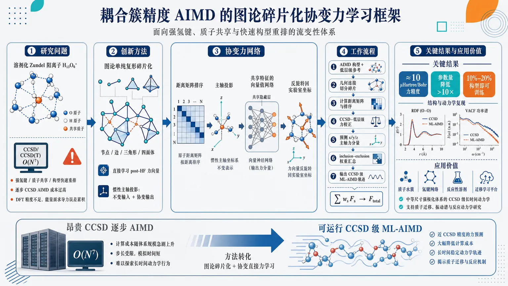
研究问题如何在强氢键、质子共享和构型快速重排的流变性体系中，摆脱 CCSD/CCSD(T) 逐步 AIMD 的 O(N⁷) 计算瓶颈，获得可用于长时间分子动力学的耦合簇级核力；典型挑战对象是溶剂化 Zundel 阳离子 H₁₃O₆⁺，其氢键网络和质子位置不断变形，传统 DFT 精度不足，传统 ML 能量面自动微分又容易在力预测中累积误差。创新方法将分子画成“图论单纯复形”：水分子/局域片段作为节点，边、三角形、四面体分别表示二体、三体、四体相互作用，再用 inclusion–exclusion 权重拼装全体系 CCSD 校正力。Aha 点是：不先学习能量再求导，而是直接学习 post-Hartree–Fock 力向量；把每个碎片的力投影到自身惯性主轴上，形成既保持距离输入平移/旋转/置换不变、又保证输出力随体系旋转而协变的向量力描述符，并用向量值网络共享隐藏层特征，大幅减少参数。工作流程输入 AIMD 构型和低层级参考计算；按几何连接把分子切成图节点、边、三角形、四面体等单纯形碎片；为每个碎片计算原子间距离矩阵，并按原子序数与惯性主轴投影排序；将参考 CCSD−低层级的力校正投影到碎片三条惯性主轴；三个向量神经网络分别预测所有原子沿 x/y/z 主轴的力分量；预测后把主轴力反旋转回实验室坐标；再通过图论碎片 inclusion–exclusion 权重和必要的 Jacobian 汇总为全体系核力；最终驱动全机器学习预测的 CCSD 级 AIMD 轨迹，并分析 RDF 与 VACF 等结构动力学指标。关键结果在高流变溶剂化 Zundel 阳离子 H₁₃O₆⁺ 上，核力预测达到相对于 CCSD 约 10 μHartree/Bohr 的精度；向量值力训练在约 0.1 milli-Hartree/Bohr 误差水平下，比逐分量标量训练减少超过一个数量级的可训练参数；mini-batch k-means 无监督构型筛选仅使用 10%–20% 参考构型即可构建代表性训练集；全 ML 预测 AIMD 能复现关键结构和动力学特征，包括径向分布函数和速度自相关功率谱。应用价值使中等尺寸、强极化、电荷离域和质子转移体系的 CCSD 级 AIMD 从理论上可行走向实际可运行，适用于质子水簇、氢键网络、反应性溶剂环境和复杂流变化学体系；该框架把高精度波函数理论压缩到局域碎片学习与可扩展轨迹采样中，为长时间反应动力学、精确振动谱、溶剂化质子迁移和更大体系的迁移学习提供平台。第一部分：核心概览 (Overview)
该研究提出一种面向复杂流变性化学体系的图论分子碎片化机器学习框架，将后 Hartree–Fock / CCSD 级核力作为向量目标直接学习，而非从学习到的能量面自动微分获得力。核心突破在于：以图论单纯形碎片分解全体系相互作用，以惯性主轴投影构造满足平移、旋转、置换对称性的协变力描述符，并通过向量值训练显著减少参数量。该框架在溶剂化 Zundel 阳离子 H₁₃O₆⁺ 上达到约 10 μHartree/Bohr 的 CCSD 力精度，并能生成全机器学习预测 AIMD 轨迹，推动了耦合簇精度 AIMD 从小体系向中等尺寸、高流变体系扩展。
---
第二部分：结构化快速回顾
《Graph-Theoretic Neural Network Fragmentation with Covariant Direct Molecular Force Learning: Enabling Coupled-Cluster Accuracy AIMD for Fluxional Systems》（None，）
背景
复杂反应体系和强氢键网络的 AIMD 需要高精度电子结构力，但 CCSD(T) 随基组数 N 呈形式 O(N⁷) 标度，导致大体系逐步动力学不可行。既有 ML 力场常依赖能量面自动微分，训练数据仍需全体系高精度计算，且对 H₁₃O₆⁺ 等高流变质子水簇迁移能力不足。
方法
分子被表示为图论单纯复形：节点代表局域分子片段，边、三角形、四面体代表二体、三体、四体相互作用。全体系 CCSD 校正力由碎片力按 inclusion–exclusion 权重组装。核力不从能量导数获得，而是直接作为向量值目标学习；力向量投影到碎片固定的惯性主轴，再由神经网络分别预测三个主轴方向上的原子力分量。
结果
框架在溶剂化 Zundel 阳离子 H₁₃O₆⁺ 上得到相对于 CCSD 约 10 μHartree/Bohr 的核力精度。向量值训练相较逐分量标量训练在近似相同误差 ≈0.1 milli-Hartree/Bohr 下减少超过一个数量级的参数。无监督 mini-batch k-means 空间划分仅使用 10%–20% 参考构型即可构建代表性训练集。
讨论
直接力学习绕开了自动微分能量模型在含link atoms碎片体系中的 Jacobian 复杂性，并减轻了能量曲率学习不足导致的力误差积累。惯性主轴协变处理兼顾输入描述符的不变性与输出力向量的旋转协变性。
局限
提供内容中未包含完整结果章节、具体训练集规模、网络层数、学习率、轨迹长度、温度、时间步长、RDF/VACF 定量偏差等细节。直接力学习可能牺牲严格能量–力守恒一致性；含简并惯性轴或高度对称碎片时主轴方向可能不稳定。
结论
图论碎片化与协变直接力学习的结合，使中等尺寸质子水簇的 CCSD 级 AIMD 成为可行路线。该框架具备局域性、可系统改进性和跨体系迁移潜力，并与 LLM 式低维单元组合/注意力思想形成概念关联。
---
第三部分：逐章节冷凝解析 (Section-by-Section Condensing)
> 仅依据已提供论文内容解析；提供文本止于 III.3 Summary of energy and force neural network approximations 中部，后续实验结果、完整讨论与结论未包含。
---
Abstract
Computational bottleneck addressed
复杂、流变性化学体系的高精度 AIMD 受限于相关电子结构方法的高计算标度，尤其是耦合簇方法难以逐步计算核力。摘要直接给出问题定位：*"Accurate ab initio molecular dynamics (AIMD) simulations of complex, fluxional chemical systems are severely limited by the high computational scaling of correlated electronic structure methods."* 这里的核心矛盾是 AIMD 逐时间步电子结构计算 与 post-Hartree-Fock 精度需求 之间的不可兼容。
Graph-theoretic fragmentation combined with machine learning
核心方法是将图论分子碎片化与机器学习结合，直接建模 coupled cluster accuracy 的核力，而非训练全体系能量面。摘要中明确写道：*"we present a robust, graph-theoretic molecular fragmentation framework integrated with machine learning to directly model post-Hartree-Fock nuclear forces at coupled cluster accuracy."* 学术贡献集中在两个层面：一是利用碎片化降低维度，二是以 ML 近似高层级电子结构校正力。
Direct force learning replaces energy-gradient force prediction
力向量由模型直接输出，而不是对学习的能量函数做自动微分。该策略针对含 link atom 的碎片模型中特别棘手的导数链式传播问题：*"Bypassing the limitations of automatic differentiation on learned energy surfaces that may struggle with link-atom Jacobians, our approach directly predicts nuclear force vectors."* 关键创新点是避免 learned PES curvature 与 link-atom Jacobian 共同引发的不稳定导数问题。
Covariant force descriptors based on principal axes
力向量先投影到碎片固定的惯性主轴，从而构造满足物理对称性的协变描述符。摘要给出机制：*"By projecting these vectors onto fragment-fixed principal axes of inertia, we establish covariant descriptors that naturally preserve rotational, translational, and permutational invariance."* 其中 invariance 指输入描述符对坐标变换不敏感，covariance 指输出力向量会随坐标系旋转而正确旋转。
Parameter efficiency and data efficiency
向量值训练协议显著减少可训练参数，同时无监督 mini-batch k-means 只需少量参考构型。摘要中的定量证据为：*"reduces trainable parameters by over an order of magnitude"*，以及 *"constructs highly representative training databases using only 10% to 20% of reference configurations."* 这意味着训练成本下降来自两个方向：网络参数共享 与 训练样本子集选择。
Validation on solvated Zundel cation
验证体系是高度流变的溶剂化 Zundel cation H₁₃O₆⁺，该体系包含质子共享、氢键重排和强电荷离域。摘要称：*"We rigorously validated this framework on the highly fluxional solvated Zundel cation (H13O6+)."* 选择该体系具有挑战性，因为其势能面局域曲率和反应坐标变化都较剧烈。
AIMD observables reproduced
全 ML 预测 AIMD 轨迹能够复现实验/参考动力学常用结构与动力学指标，包括 radial distribution functions 和 velocity autocorrelation power spectrum。摘要指出：*"successfully reproduced complex dynamical signatures and key structural characteristics, including radial distribution functions and the velocity autocorrelation power spectrum."* 这说明验证不只限于单点力误差，还扩展到轨迹统计性质。
Bridge between correlated wavefunction theory and long-time sampling
该框架被定位为连接高层级波函数理论与长时间反应采样的可扩展平台。摘要结尾给出：*"bridges the gap between high-level correlated wavefunction theories and long-timescale reactive sampling."* 其潜在方向包括更高级的迁移学习以及 LLM-inspired transfer learning。
---
I Introduction
AIMD is broadly useful but computationally constrained
AIMD 对反应体系、系综平均、非谐振动性质有重要作用。引言开头给出应用范围：*"AIMD plays an important role in the study of reactive systems, ensemble averages, and vibrational properties beyond the harmonic approximation."* 但其每个时间步都要进行电子结构计算：*"AIMD requires calculations of the electronic-structure to be performed at every time step"*，因此体系尺寸和模拟时间都受到严重限制。
DFT dominates AIMD because correlated methods are too expensive
由于逐步电子结构计算代价高，多数 AIMD 化学分析采用 DFT。原文给出判断：*"most AIMD based chemical analysis studies performed to date are generally carried out using density functional theory."* 对强极化和电荷离域体系，DFT 精度可能不足：*"This limitation becomes particularly pronounced for molecular systems with strong polarization and charge delocalization."*
CCSD(T) offers benchmark quality but O(N⁷) scaling blocks on-the-fly AIMD
高层级相关方法如 CCSD(T) 可给出标杆能量，但计算标度过高。引言给出明确数值：*"their steep algebraic scaling, formally O(N7) with respect to the number of basis functions N, makes on-the-fly AIMD calculations computationally prohibitive for large systems."* 这里 O(N⁷) 是限制耦合簇 AIMD 的核心计算瓶颈。
Conventional ML force fields often learn energies first
许多 ML 力场将总势能写成原子能贡献之和，再通过距离、角度或局域描述符参数化。原文概括为：*"the total potential energy is expressed as a sum of atomic energy contributions, each parametrized by functions of interatomic distance, angles, or more general local descriptors."* 这些描述符被设计为满足 translational, rotational, and permutational symmetries。
Force prediction by automatic differentiation has consistency but also limitations
既有方法常从学习到的能量对核坐标求偏导得到力，并通常使用自动微分。原文指出：*"force predictions are commonly obtained as the partial derivative of the learned potential energy with respect to nuclear coordinates, often using automatic differentiation."* 优点是能量–力一致：*"This construction enforces consistency between the learned energy and force models."* 但缺点是训练必须准确捕捉能量面局部曲率，且碎片 link atom 会引入复杂 Jacobian。
Atom-wise local energies are latent and still require full-system references
传统原子分解能量项通常不是可直接观测量，而是从全体系能量和力中学习。原文明确批评：*"the local energy terms used in atom-wise decompositions are usually latent quantities and are typically learned from full-system reference energies and forces."* 即使结构变化局限在少数原子，仍可能需要全体系高精度计算：*"each reference data point may still require an electronic-structure calculation on the full molecular system."*
Previous coupled-cluster ML applications had limited scale and transferability
已有 CC 数据驱动研究中最大体系为 H₉O₄⁺，误差为 0.09 kcal/mol。原文给出：*"the largest system studied to date using Coupled-Cluster data is H9O4+ (with absolute error of 0.09 kcal/mol)."* 但迁移到 H₁₃O₆⁺ 后 MAE 升至 1.32 kcal/mol：*"the mean absolute error for H13O6+, using this model is found to be 1.32 kcal/mol."* 这直接显示先前模型跨质子水簇规模迁移不足。
Earlier graph-theoretic energy ML achieved CC-level accuracy for H₄₃O₂₁⁺
相关前期工作已在能量面上解决迁移问题，复杂质子化 21 水簇 H₄₃O₂₁⁺ 达到 0.36 kcal/mol 精度。引言写道：*"resulted in 0.36 kcal/mol accuracy for the Coupled Cluster level potential energy surface for the complex protonated 21-water cluster (H43O+21) system."* 当前工作将这一思想推广到核力与 AIMD。
Current force accuracy target reaches 10 μHartree/Bohr
当前框架在 H₁₃O₆⁺ 上实现相对于 CCSD 的 10 micro-Hartree/Bohr 级核力精度。原文给出关键结果：*"we obtain nuclear forces for H13O6+ with 10 micro-Hartree/Bohr accuracy with respect to CCSD calculations."* 这相当于约 0.01 milli-Hartree/Bohr 级别，属于高精度力预测。
Graph usage differs fundamentally from GNNs and MACE
该方法不是常规图神经网络消息传递。GNN 中节点通常是原子，边是特征传播路径；该方法中节点是局域原子组，边和高阶单纯形代表多体相互作用。原文区分为：*"Here, graphs are used in a fundamentally different way from graph neural networks (GNNs) or MACE."* 以及 *"our method represents local atomic groups as nodes and interactions between these groups as edges."*
Higher-order simplexes encode many-body interactions
三角形、四面体等高阶单纯形编码三体、四体相互作用。原文描述：*"Higher-order simplexes, such as triangles formed by three mutually connected nodes and tetrahedrons formed by four mutually connected nodes, are then used to encode higher order (many-body) interactions."* 这使全体系能量和力可由局域片段系统组装，并具有系统可改进性。
LLM analogy emphasizes lower-dimensional units and relationships
图碎片与 LLM token 类比：复杂高维对象由低维单元及其关系重构。原文给出：*"In both cases, a complex high-dimensional object is represented through a collection of lower-dimensional units and the relationships among them."* 分子中的节点、边、三角形类似 token 或词的上下文组合：*"fragments represented by nodes, edges, triangles, and higher-order graph elements play an analogous role."*
Previous transfer from 51D to 186D supports scalability
前期图神经网络 PES 从 51 维分子系统迁移到 186 维质子化水簇，构建了 CCSD-level accuracy 的 21 水簇全维 PES。原文写道：*"transferrable from a 51-dimensional molecular system to a 186-dimensional protonated water cluster."* 这一点支撑当前工作对更大 AIMD 体系的可扩展性主张。
Paper roadmap centers on fragmentation, covariant force learning, k-means sampling, and AIMD validation
引言列出章节安排：Section II 总结图论碎片化；Section III 引入几何描述符和直接力训练；Section IV 说明 AIMD 数据集、mini-batch k-means 采样与碎片力精度；Section V 给出 ML 轨迹、RDF 与 VACF。原文说：*"Section IV begins by detailing our AIMD data set and training model based on unsupervised learning mechanisms such as the k-means based space tessellation algorithm for fragment geometry sampling."* 以及 *"we present fully (machine learning) predicted machine trajectories alongside their associated radial distribution functions and velocity autocorrelation functions."*
---
II graph theoretic fragmentation based machine learning for post-Hartree-Fock gradients
Molecular geometry is converted into a graph
分子体系首先依据几何、连接性和化学性质定义图 𝒢。原文说明：*"The graph theoretic fragmentation approach involves defining a graph 𝒢 based on the molecular geometry."* 节点可以是单个水分子、烃片段或氨基酸单体：*"nodes may include individual water molecules, or hydrocarbon fragments, or single amino acid monomers."*
Nodes and edges define the base graph
所有节点集合记为 V₀，节点间依据化学连接或非键相互作用并按距离截断形成边集合 V₁。原文给出：*"the set of all nodes is labeled as V0"*，以及 *"connected to each other based on some predefined distance cutoff to form the set of edges, V1."* 节点和边共同定义图：*"Together, the sets of nodes and edges define the graph, 𝒢."*
Higher-rank simplexes represent systematic many-body interactions
框架超越节点与边，使用高阶单纯形捕捉多体作用：三角形集合 V₂ 表示三节点相互作用，四面体集合 V₃ 表示四节点相互作用。原文说：*"higher order interactions within the system can be systematically captured and represented as higher rank simplexes."* 最大秩截断 ℛ 定义片段族 Vᵣ | r = 0,…,ℛ。
The molecule is treated as a simplicial complex
片段集合可系统重构全体系性质，因此分子被视为单纯复形。原文直陈：*"Thus, the molecular system is treated here as a simplicial complex."* 这使图论碎片化不只是经验分割，而是具有组合拓扑结构的多体展开。
Target energy is reference energy plus correction
目标 post-Hartree-Fock 能量写为低层级参考能量加校正项：Eᵗᵃʳᵍᵉᵗ(x̄)=Eᴿᵉᶠ(x̄)+ΔE(x̄)。原文给出：*"the target post-Hartree-Fock electronic structure potential energy, Etarget, at the full system nuclear geometry x̄ can be expressed as a low-level reference energy Eref(x̄), such as DFT, augmented by a correction term ΔE(x̄)."* 这里 ΔE 是从碎片高层级与低层级能量差组合而成。
Fragment correction energies are assembled by inclusion–exclusion weights
总校正能由不同秩片段贡献加权求和：ΔE(x̄)=ΣᵣΣαᵣ Mᵅʳ,ʳᴿ ΔEᵅʳ,ʳ(x̄ᵅʳ,ʳ)。权重来自 inclusion–exclusion 原理。原文写道：*"is an over-counting correction from inclusion-exlusion principle."* 其中 pᵅʳʳ,ᵐ 统计 rank-r 片段被包含在 rank-m 片段中的次数。
Dimensionality reduction is the computational source of efficiency
全体系坐标 x̄ 被替换为局部碎片坐标 x̄ᵅʳ,ʳ，大幅降低输入维度和电子结构计算成本。原文指出：*"The computational cost is significantly reduced because the input x̄ on the left hand side, which represents the full dimensional molecular coordinates, is reduced to x̄αr,r which only contains the fragment coordinated space."*
Prior benchmarks include AIMD, PES, gas phase, condensed phase, and biological systems
该图论碎片方法已用于 on-the-fly AIMD、PES、气相、凝聚相、界面、液体、生物体系与烃类体系。原文列举：*"construct on-the-fly AIMD trajectories and potential energy surface calculations for gas-phase as well as condensed-phase systems."* 以及 *"hydrogen-bonded systems ... covalently bonded biological systems and hydrocarbon where link-atoms are included."*
CCSD/MP2-level AIMD at DFT cost was previously demonstrated
前期工作声称可以用 DFT 计算成本实现接近 CCSD 和 MP2 的 AIMD 精度。原文写道：*"Both extended Lagrangian as well as Born-Oppenheimer based ab initio molecular dynamics simulations can be performed at accuracy comparable to CCSD and MP2 levels of theory with DFT-computational cost."* 甚至有 Car–Parrinello-style dynamics with CCSD accuracy：*"we presented Car-Parrinello-style dynamics, but with CCSD accuracy."*
Relationship to ONIOM and many-body expansion
该能量表达与 ONIOM 类似，都是低层级能量加高层级校正；同时也与多体展开相关。原文指出：*"The expression in Eq. (2) is closely related to the ONIOM formalism where the energy at some lower level is augmented through a correction term."* 并说明：*"the approach here is also closely related to many-body-expansions."* 区别在于多体项由图连接性直接定义。
---
II.1 Graph theory based machine learning protocols for potential energy surfaces with post-Hartree-Fock accuracy
Large simplexes motivate fragment-level neural networks
随着体系增大，单纯形片段也可能变大，因此需要通用 ML 协议近似较大片段校正能。原文写道：*"As system sizes grow, simplexes sizes also may also grow and then it becomes important to derive a general machine learning protocol to study such systems."*
Distributed independent neural networks exploit locality
利用片段坐标空间局域性，为不同片段训练分布式独立神经网络。原文说明：*"we used a distributed set of independent neural networks to approximate fragment energy corrections."* 每个网络近似 ΔEᵅʳ,ʳᴹᴸ(x̄ᵅʳ,ʳ)，再组合为全体系能量校正。
The protocol is a graph-fragment version of Δ-ML
全体系 ML 校正能写为 ΔEᴹᴸ(x̄)=ΣᵣΣαᵣ Mᵅʳ,ʳᴿ ΔEᵅʳ,ʳᴹᴸ(x̄ᵅʳ,ʳ)，并以 Eᴹᴸₜₐᵣget=Eᴿᵉᶠ+ΔEᴹᴸ 得到目标能量。原文直接联系 Δ-ML：*"Eq. (3) becomes similar to the so-called Δ-ML protocol."*
Fragment-level training reduces data-generation cost
由于网络只依赖局部片段坐标，训练只需片段层级能量与力，而非全体系高层级参考。原文指出：*"we only need to provide fragment level energies and forces as part of the neural network training process, which leads to large reduction in training costs."* 这是区别于传统 atom-wise latent energy 学习的重要点。
Attention-like transfer learning analogy appears in earlier work
前期工作把图论碎片化迁移学习与 LLM 中的 attention 机制建立同构思想。原文写道：*"we have used Eq. (6) to provide a transfer learning strategy thought and isomorphism to the so-called 'attention' mechanism in large language models."* 其含义是：局部碎片作为“token”，高阶图关系作为上下文组合结构。
Hybrid computation–extrapolation strategy exists for fragment hierarchy
对较小片段可直接计算，对较大片段可外推。原文给出：*"we have employed a hybrid model where the smaller fragments are computed and the larger fragments are extrapolated."* 这暗示图论碎片化可结合层级近似进一步降低高阶片段代价。
---
II.2 Machine learning post-Hartree-Fock energy gradients
Forces can be obtained as gradients of graph-fragment energy expression
核力校正可由能量校正项对全体系坐标求导得到。原文写道：*"we may construct the graph-theoretic approximation for nuclear forces as the gradients derived from the partial derivative of each energy term."* 公式中 ΔFᴱ(x̄)=∂Eᵗᵃʳᵍᵉᵗ/∂x̄−∂Eᴿᵉᶠ/∂x̄ 表示高层级相对低层级的力/梯度校正。
Fragment-to-full force mapping requires a Jacobian
片段梯度必须通过 ∂x̄ᵅʳ,ʳ/∂x̄ 映射回全体系坐标。原文说明：*"the term ∂(x̄αr,r)/∂(x̄) in Eq. (10) serves as the necessary Jacobian to transform the fragment gradient and arrive at the full system force."* 该 Jacobian 对 link atom 尤其关键。
Link atom coordinates are linear transforms of real atom positions
当切断共价键构造片段时，使用 link atoms 饱和断键。link atom 位置由 bonded atom 与 substituted atom 的线性组合给出：r̄ₗᵢₙₖ₌ᵣ̄_bond+g(r̄ₛᵤb−r̄_bond)。原文说明：*"the link atom positions depend on the molecular connectivity and is always a linear transform of atomic positions."* 比例因子为 g=R_bond,link/R_bond,sub。
Link-atom Jacobians couple fragments and complicate automatic differentiation
含 link atom 时，Jacobian 会耦合多个片段，link atom 梯度需要吸收到相邻节点、边、面和更高阶单纯形中。原文指出：*"when link atoms are involved, the Jacobian term ... couples multiple fragments."* 以及 *"The gradients due to link atoms are then to be absorbed into the neighboring fragments, including neighboring nodes, and superseding edges, faces, and higher rank simplexes."*
Energy-trained networks can be pushed outside their training subspace by link-atom gradient corrections
link atom 导数贡献会给相邻片段引入训练时未见的额外项，使能量模型自动微分得到的力不稳。原文说明：*"neighboring nodes, that were trained for energies through machine learning are now appended by additional contributions due to network connectivity and link atoms on neighboring fragments."* 结果是：*"This potentially takes these nodes away from their training subspace."*
Gradients are intrinsically harder than energies
能量在坐标点局域定义，而梯度需要势能面邻域信息。原文给出关键判断：*"while energies are local in x̄, gradients inherently require some information from the neighborhood of x̄ and hence obtaining accurate gradients are inherently more challenging."* 这为直接力学习提供理论动机。
Direct neural-network force prediction replaces automatic differentiation
力模型直接输出 ΔFᵅʳ,ʳᴹᴸ，再通过 Jacobian 汇总，而不是从能量 ML 模型求导。原文明确写道：*"we define neural networks that directly provide gradient that are then corrected using the Jacobian term."* 该策略是全文方法核心之一。
---
III Force vector training as functions of fragment interatomic distances
Energy-derived forces require accurate local PES curvature
从能量模型微分得到力时，力精度取决于学习能量面在构型邻域的曲率是否准确。原文说明：*"its accuracy depends on whether the learned energy model correctly captures the local curvature of the potential energy surface in the neighborhood of the configuration."* 这比只拟合标量能量值更难。
Joint energy-force learning imposes stronger constraints than energy fitting alone
同一网络若同时准确预测能量和力，必须复现能量值及其核位移变化。原文指出：*"the model must reproduce not only the scalar energy values but also their variations with respect to nuclear displacements."* 因此通常需要更多训练数据：*"more training data is generally needed if the goal is to have both energy and forces to be estimated accurately from the same set of neural networks."*
Force errors accumulate during molecular dynamics
MD 中力决定下一步构型，小误差会累积并把体系推向训练分布边界或稀疏区域。原文写道：*"small force errors can accumulate over time and drive the system toward the boundary of the training distribution or into sparsely sampled regions of the potential energy surface."* 这些区域通常需要额外参考计算以修正模型。
Separate neural networks are used for energies and forces
能量模型和力模型分开训练：ΔEᵅʳ,ʳᴹᴸ 与 ΔFᵅʳ,ʳᴹᴸ 使用不同网络。原文说明：*"We choose to utilize different neural networks for training energies ... and forces."* 这避免将力完全绑定到能量模型导数上。
Direct force models require less high-dimensional data
直接力预测被声称在高维构型空间中需要更少数据。原文给出定量范围：*"accurate energy, nuclear force predictions and ML-based AIMD generated structural distribution functions and velocity correlation functions can be achieved using only 10%-20% of the available training data."* 这一结论依赖合适的模型结构和采样策略。
Section III develops equivariant distance descriptors and vector-target training theory
该节先提出基于原子间距离的等变/协变描述符，再分析标量目标与向量目标学习的数学差异。原文描述：*"we start by discussing a interactomic-distance-based equivariant descriptor for direct force vector training."* 以及 *"we analyze the mathematical distinction between training models for scalar target quantities ... and vector-value target quantities."*
---
III.1 Symmetry preserving interatomic distance descriptors for fragment neural networks
Symmetry-preserving geometry representation is essential
分子片段会在不同 AIMD 快照中以不同取向出现，因此必须统一取向和排序。原文指出：*"A consistent geometrical representation that respects the physical constraints and symmetry properties of molecular fragments is essential."* 又强调：*"The same molecular fragment may be present in different orientations."*
Descriptor preserves translational, rotational, and permutational invariance
输入描述符基于原子间距离，天然不依赖绝对平移和旋转，并通过排序处理同种原子置换。原文写道：*"we introduce a systematic process to generate an interatomic distance based descriptor ... where we preserve translational, rotational, and permutational invariance."*
Vector force prediction requires orientational information in addition to invariant distances
力是向量，不能只靠旋转不变距离完成坐标系中的方向预测，因此需记录片段方向。原文说明：*"Prediction of vector-valued quantities, such as nuclear forces, requires fragment orientational information."* 这些信息在几何预处理中生成，用于旋转协变后处理：*"used to define rotation-covariant post-processing operators."*
Principal axes of inertia define the fragment internal frame
每个片段先计算三个质量惯性主轴。原文给出步骤：*"We begin by computing the principal axes of inertia for each fragment."* 图 1 展示四水分子片段的三个主轴：*"The three principle mass moment of inertia axis, namely x, y, z for a fragment."*
Atomic ordering uses atomic number and principal-axis projections
原子先按原子序数排序；同元素原子再按选定惯性主轴投影排序。原文步骤写道：*"atoms are first sorted by atomic number. Atoms of the same element are then ordered according to their respective projections along a chosen principal axis of inertia."* 对能量只用最小惯性矩轴；对力使用三个轴：*"for force, we use all three axes and generates three distinct atomic orderings for the same fragment."*
Three distance-vector inputs are generated per fragment
每种主轴排序生成一个原子间距离矩阵，再展平成神经网络输入向量。原文说明：*"For each atomic ordering, an interatomic distance matrix is computed and reshaped into a vector suitable as input to the force neural networks."* 三个输入包含同一组距离但排序不同：*"contain the same set of interatomic distances but differ in their ordering due to the choice of principal axis."*
Three independent neural networks predict three projected force components
三个输入向量分别用于训练三个主轴方向上的力分量网络；每个网络输出片段内所有原子在该轴方向上的力分量。原文写道：*"three separate (vector) neural network models are trained, each taking one of the distance vectors as input and predicting the corresponding force vector component for all atoms in the fragment."* 输出是长度 N 的向量，其中 N 为片段原子数。
Training targets are projections of reference force correction vectors
训练标签由原始全体系参考框架中的 ΔFᵅʳ,ʳ 投影到三个惯性主轴得到。原文说明：*"Training data for the three neural networks are generated by projecting the original force vector ... onto the three principal axes."* 每个投影分量成为对应网络目标：*"Each projected force vector component serves as the target output for the corresponding neural network."*
Inference rotates predictions back to the original frame
预测阶段，在主轴框架中得到的力分量会反旋转回原始坐标系。原文给出：*"During inference, the predicted force components are transformed back into the original reference frame for the fragment by reversing the sequence of rotations."* 这保证输出力具备旋转协变性。
---
III.2 Force representation structure: vector valued learning versus scalar valued learning protocols
Each Cartesian force component can be treated as a scalar function, but block-vector learning changes parameter sharing
在高维势能构型空间中，每个 Cartesian 力分量都可视为独立标量函数。原文写道：*"each Cartesian force element can be regarded as a distinct scalar function of the full geometry."* 力既可逐分量标量学习，也可按不同 block size 做向量值学习：*"Forces can be learned either as separated scalar targets or vector-value targets of various block sizes."*
The chosen decomposition is three length-N vectors
完整 3N 维力向量被分解为三个长度 N 的向量，对应三个惯性主轴方向投影。原文说明：*"we then justify our choice to decompose the full 3N dimensional force vector into three length N vectors, each corresponding to force projections along a principal inertia axis."* 每个长度 N 向量作为独立向量输出目标。
Scalar-output networks learn one force component at a time
标量网络输出单个力分量：y=ΣᵢwᵢAᵢ(x̄)。原文说明：*"Consider first a scalar-output network, corresponding to a single force component."* 其中 Aᵢ(x̄) 是最后隐藏层第 i 个神经元激活，wᵢ 是输出权重。
Each scalar force component has its own basis and parameters
逐分量训练下，每个力分量拥有不同的非线性基函数集合 Aᵢ(x̄) 和权重。原文总结：*"each force component has a separate basis from Ai(x̄)."* 这意味着若片段有 N 个原子、某轴有 N 个力分量，就需要大量重复学习相似几何特征。
Vector-output networks share hidden-layer basis functions
向量值学习中，输出层有 n 个神经元，每个对应一个力分量：yⱼ=Σᵢwᵢ,ⱼAᵢ(x̄), j=1,…,n。原文指出：*"the network architecture up to the final hidden layer remains unchanged, but the output layer now consists of n neurons."* 关键区别是共享基函数：*"vector training enforces a shared set of basis functions Ai(x̄) across all the vector components."*
Parameter efficiency comes from hidden-layer sharing
隐藏层权重通常占主要参数量，而向量值训练只增加输出层权重。原文解释：*"the dominant contribution to the total parameter count arises from the hidden-layer weights that define Ai(x̄), which are shared among all force components."* 因此只需适度增加隐藏神经元 m 即可获得类似精度：*"a similar level of accuracy can typically be achieved ... by modestly increasing the number of hidden neurons m."*
Vector learning also acts as implicit regularization
共享几何特征迫使相关力分量共同学习，具有正则化效果。原文写道：*"This parameter sharing also implicitly regularizes the model, encouraging correlated force components to be learned from common geometric features."* 对分子力而言，不同原子的力分量常受同一氢键网络、键长、角度和质子位置控制，因此共享表示合理。
Empirical comparison shows one-order-of-magnitude parameter reduction
图 3 使用溶剂化 Zundel H₁₃O₆⁺ 片段几何比较标量与向量训练。两者达到约 0.1 milli-Hartree/Bohr 力误差，但向量训练参数少超过一个数量级。原文给出：*"Both approaches reach approximately the same level of accuracy (≈ 0.1 milli-Hartree/Bohr) while the vector training strategies requires over one order of magnitude fewer parameters."* 正文也强调：*"for a 10th of the cost, the vector valued training recovers a similar error."*
Serial neural networks learn residual errors
力向量训练使用串行神经网络序列，第 l 个网络拟合前面所有网络后的累计残差。原文写道：*"the l-th neural network in this series is trained on the cumulative error from all previous neural networks."* 损失形式为 min |y−Σₗ yˡᵖ(x̄,Wₗ)|²。当前工作每个力向量分量使用 l=2：*"In this work, we use l=2 for each force vector component training."*
---
III.3 Summary of energy and force neural network approximations
Energy prediction remains scalar learning
该节开始将前述公式整合为能量与力的神经网络近似。能量校正 ΔEᵅʳ,ʳᴹᴸ 表示为标量学习形式，即多个串行网络/隐藏基函数的加权和。原文开头写道：*"we may combine Eqs. 6, 14 and 18 to write an overall potential energy prediction expression as a scalar learning formalism."* 提供文本在该公式中部截断，因此完整表达式、后续力汇总公式和实现细节不可见。
Available text implies separate scalar-energy and vector-force approximations
从 III 前文可确定：能量网络使用标量输出，力网络使用三个主轴方向上的向量输出。该设计前文已有明确陈述：*"We choose to utilize different neural networks for training energies ... and forces."* 以及 *"three separate (vector) neural network models are trained."* 因此 III.3 的作用是形式化总结，而非提出全新机制。
---
第四部分：深度理解与语言支持 (Understanding & Nuance)
1. 术语解析
#### Fluxional systems
Fluxional systems 指结构持续重排、多个构型快速互变、难以用单一平衡构型描述的体系。这里的 H₁₃O₆⁺ 属于强氢键和质子共享体系，质子位置、氢键拓扑和水分子取向会不断变化。中文可译为“流变性体系”或“构型流动性体系”。微妙点在于它不只是“柔性 flexible”，而是存在化学连接/质子归属/氢键网络的动态重组。
#### Covariant descriptors
Covariant 与 invariant 不同。输入距离描述符对旋转、平移保持不变，即 invariant；但力是向量，体系旋转时力也必须同样旋转，即 covariant。该研究通过把力投影到片段惯性主轴，再反旋转回实验室坐标系，实现“输入不变、输出协变”。
#### Link-atom Jacobians
Link atom 是碎片化切断共价键后人为加入的饱和原子，常为氢原子。其坐标不是独立自由度，而由真实原子位置线性决定。Jacobian 描述 link atom 坐标对真实原子坐标的导数。微妙问题在于：能量模型对 link atom 求导后，这部分梯度必须分配回真实原子和相邻片段，导致自动微分在碎片拼接中变复杂。
#### Vector-valued learning
Vector-valued learning 指一个神经网络一次输出一组相关目标，而非为每个力分量单独训练网络。这里每个网络输出长度 N 的主轴投影力向量。优势是隐藏层特征共享，显著减少参数，并利用力分量之间的物理相关性。
#### Simplicial complex
Simplicial complex 是由节点、边、三角形、四面体等单纯形构成的组合拓扑对象。这里分子不是简单原子图，而是由“水分子/官能团/氨基酸”等片段作为节点，再用高阶单纯形表示多体作用。其学术意义在于将 many-body expansion 与图连接结构统一起来。
---
2. 疑难查证
#### 为什么直接学习力可以比从能量自动微分更稳？
能量是标量，某个构型点的能量误差小，不代表局部斜率准确。力是能量面的梯度，取决于能量在邻域内如何变化。一个神经网络可以在训练点上把能量拟合得很好，却在点与点之间产生错误曲率，自动微分得到的力就会偏。MD 中力误差又会改变下一步构型，误差会沿轨迹积累，最终进入训练集稀疏区域。
直接力学习把目标改成真正控制动力学的量，即 nuclear force vectors。这种方法不保证力严格来自某个单一保守势能，但可以更直接优化 AIMD 轨迹所需的瞬时加速度。在含碎片 link atom 的场景下，直接力学习还能避免对能量网络做复杂链式微分。
#### 为什么惯性主轴能帮助学习向量力？
原子间距离本身没有方向信息。如果只输入距离，网络无法知道“x 方向力”是什么意思，因为整个片段旋转后距离不变但 Cartesian 力分量会变。解决方案是为每个片段建立内部坐标系：惯性主轴由质量分布决定，随片段旋转而一起旋转。先把真实力投影到这个内部坐标系中，网络学习的是“沿片段自身 x/y/z 主轴的力”。预测后再旋回全局坐标。这样既保留距离输入的不变性，又能正确恢复向量方向。
#### 为什么将 3N 维力拆成三个 N 维向量，而不是 3N 个标量或一个 3N 向量？
拆成 3N 个标量 会导致每个力分量单独学习隐藏层特征，参数量巨大，且无法利用同一片段中不同原子受相同几何环境控制的相关性。直接输出 3N 向量 虽然也共享特征，但 Cartesian 坐标系下的三个方向混合旋转协变问题更复杂。拆成三个惯性主轴方向上的 N 维向量 是折中方案：每个网络处理一个明确物理方向，输出所有原子在该方向上的力，既共享同轴力分量特征，又保持旋转处理清晰。
#### 图论碎片化为何比普通 GNN 更接近 many-body expansion？
普通 GNN 通常把原子作为节点，通过边传递消息，最终学习原子能贡献。其多体效应隐含在多轮消息传递中。该框架把“分子片段”作为节点，把边、三角形、四面体显式定义为二体、三体、四体片段，并用 inclusion–exclusion 权重组合。多体项不是隐含涌现，而是由图的高阶单纯形结构直接给出，因此与传统 many-body expansion 的数学关系更明确。
---
第五部分：创新评估与关联 (Synthesis & Novelty)
1. 创新性判断
#### 从 CC-level energy ML 推进到 CC-level direct force ML
过去 2–5 年中，许多 ML 势能面工作集中在学习能量并通过自动微分获得力，或在较小体系中使用 CC 数据训练势能。该研究的关键新颖性在于直接学习 post-Hartree-Fock nuclear forces，并与图论碎片化结合，使 CCSD 级 AIMD 可用于 H₁₃O₆⁺ 这类高流变中等尺寸体系。
#### 解决了 link-atom fragmentation 与 automatic differentiation 的冲突
传统碎片能量模型若含 link atom，自动微分需要处理 link atom 坐标对真实原子的 Jacobian，并将梯度重新分配给相邻碎片。该问题在共价断键碎片中特别复杂。直接力学习绕开了“先能量后求导”的路径，是对碎片化 ML 力场的实用性突破。
#### 提出惯性主轴投影的协变向量力学习协议
许多距离描述符天然不变但不适合直接预测向量。该研究以片段惯性主轴为内部参考系，将力投影为三个长度 N 的向量目标，再反旋转回实验室坐标系。该设计兼顾 rotational invariance 与 force covariance，比简单 Cartesian 力回归更物理一致。
#### 显著提升参数效率
相较每个力分量一个标量模型，向量值训练共享隐藏层特征，在约 0.1 milli-Hartree/Bohr 误差下实现超过一个数量级的参数减少。该点对于碎片数量多、片段类型多、需要长轨迹 AIMD 的应用尤为关键。
#### 以无监督 k-means 采样提高数据效率
训练数据库只需 10%–20% 参考构型即可保持代表性，降低 CCSD 参考数据生成成本。对于耦合簇数据驱动 ML 力场，参考计算通常是最大瓶颈，因此该采样策略与碎片化同等重要。
#### 突破既有质子水簇迁移瓶颈
已有 CC 数据 ML 最大体系曾为 H₉O₄⁺，迁移到 H₁₃O₆⁺ 时 MAE 达 1.32 kcal/mol。该研究针对 H₁₃O₆⁺ 直接给出约 10 μHartree/Bohr 的 CCSD 力精度，并声称可生成 AIMD 轨迹及 RDF/VACF，说明其解决的不只是插值误差，而是动态采样稳定性。
#### 领域地位
该工作处在 量子化学碎片化、机器学习势能面、反应性 AIMD、耦合簇级动力学 的交叉位置。其贡献不是单纯提出新神经网络结构，而是建立一套从高层级参考数据压缩、局域片段学习、协变力输出、全体系力组装到 AIMD 统计验证的完整路线。对于需要 CCSD 精度但传统 AIMD 不可承受的强氢键、质子转移和电荷离域体系，具有方法学推进意义。
-
19
📊 含图深析
📄 摘要：将CDI扩散模型反问题求解器从一维时序信号扩展到二维空间观测，实现直接基于空间数据的概率参数推断与不确定性量化，并在收敛束电子衍射等二维场景上验证其可行性。
💡 亮点：把扩散模型反演从时间信号推进到二维空间场。该框架同时给出参数估计和不确定性，适合成像类反问题。
📖 展开分析 + 配图
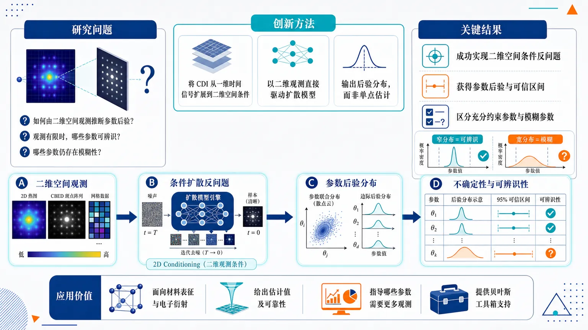
研究问题如何利用二维空间观测进行参数后验推断，并同时给出可信的不确定性量化？尤其是在观测信息有限时，哪些参数可被充分约束，哪些参数仍然存在模糊性？创新方法将原本面向一维时间信号的 CDI 条件扩散反问题框架扩展到二维空间条件；以二维观测直接驱动扩散模型生成参数后验分布，而不是只输出单点估计，从而把“参数推断 + 不确定性量化”合为一体。工作流程输入二维空间观测数据作为条件；通过扩散模型进行反问题推断；生成参数的后验分布；从后验中提取不确定性区间与分布形态；进一步判断参数的可辨识性与观测不足导致的模糊性。关键结果方法成功扩展到二维空间条件反问题，可从空间观测中得到参数后验分布及不确定性表达；已在会聚束电子衍射等二维数据场景中验证；能够区分被观测充分约束的参数与受信息不足影响的模糊参数。应用价值为二维实验数据中的参数反演提供生成式贝叶斯工具，可用于材料表征、电子衍射等场景；不仅给出估计值，还能告诉研究者结果有多可靠、哪些参数值得信任、哪些参数需要更多观测。核心概览
这篇论文将条件扩散模型 CDI 扩展到二维空间条件，用于从空间观测中直接进行参数后验推断与不确定性量化，属于扩散模型在反问题/贝叶斯推断中的应用方向。
方法要点
- 将 CDI 扩展到二维空间条件，使模型能够利用空间观测信息。
- 直接从空间观测出发进行参数后验推断，而非仅做点估计。
- 同时进行不确定性量化，输出参数分布层面的信息。
- 面向二维空间反问题进行验证。
- 具体网络结构、训练策略、条件编码方式等，摘要未详述。
关键结果
- 该方法在二维空间反问题上被验证为有效。
- 能够区分可识别参数与仍然模糊/不可清晰识别的参数。
- 说明该扩散式后验推断框架不仅能给出估计，还能反映参数可辨识性。
创新性判断
- 主要新颖点可能在于：把 CDI 从原有形式扩展到二维空间条件，使其更适合空间观测驱动的参数反演。
- 相比同方向工作，这种做法的潜在优势是：能直接建模参数后验分布并同时输出不确定性，而不仅是单一预测结果。
- 摘要暗示其还能用于识别哪些参数可被数据约束、哪些仍存在歧义，这在反问题中很有实用价值。
- 但具体是否优于其他扩散模型反演方法、以及提升幅度如何，摘要未详述。
-
20
📄 摘要：用 Lorentz TEM 在室温下发现并验证了四方 Mn1.9Co0.1Sb 单晶中的偶极型 skyrmion 行为。该体系经历多重磁相变和自旋重取向，说明其磁纹理可随相变演化。
💡 亮点：室温四方 Mn1.9Co0.1Sb 里直接看到偶极型 skyrmion，并关联到多重磁相变。为室温亚铁磁斯格明子材料再添一员。
-
21
📄 摘要：在零磁场下，利用电流直接在 FeGe 纳米片中生成并操控嵌入式 skyrmion bags。原位 Lorentz TEM 捕捉到磁纹理在电流作用下的形成与演化，说明纯电学写入多斯格明子拓扑结构可行。
💡 亮点：零场电流写入 FeGe 中的 skyrmion bags，补上了从磁场生成到电学生成的关键一步。对拓扑自旋器件的可编程操控很直接。
-
22
📄 摘要：高压合成把 Mn5Ge3+x 的居里温度从 294 K 提升到 350 K，归因于晶格收缩和 Ge 含量增加，DFT 计算支持这一判断。实空间磁成像进一步表明，该体系可在室温下形成约 50 nm 的小尺寸 skyrmion。
💡 亮点：高压合成同时抬升 Mn5Ge3+x 的 Tc 到 350 K，并拿到室温 50 nm skyrmion。对高温、超小型拓扑自旋存储材料很关键。
-
23
📄 摘要：作者在二维方格 d 波 altermagnet 中，理论研究自旋-晶格相互作用耦合的磁振子与声子。结果表明，magnon-phonon hybridization 可在声子侧诱导 D 波角动量纹理，显示 altermagnet 中非相对论起源的各向异性自旋-晶格效应。
💡 亮点：把 altermagnet 的各向异性自旋分裂传递到声子角动量上，得到 D 波纹理。说明自旋-晶格耦合也能在无相对论机制下塑造准粒子结构。
-
24
📄 摘要：作者提出一种用不变量从粉末 XRD 数据反演晶格参数的机器学习方法，构造与原胞约定无关的逆空间晶格表示。相比直接预测 a,b,c,α,β,γ，这种表示可避免晶胞还原方式和坐标约定带来的歧义。
💡 亮点：用不变量表示替代直接回归晶格常数，解决了粉末 XRD 里晶胞约定不唯一的问题。对自动解析衍射数据的 AI 方法很实用。
-
25
📄 摘要：针对Motzkin自旋链的精确可解基态，构造神经网络的精确表示；对象包括无色Motzkin态的对数纠缠与彩色Motzkin态的超标度次线性纠缠，目标是突破标准MPS对这类异常纠缠的表达限制。
💡 亮点：把Motzkin态的组合结构直接写进神经网络表示。它展示了NN在超出MPS纠缠容量的精确量子态表征上的潜力。
-
26
📄 摘要：面向隐私敏感的分布式智能服务，量子联邦学习在不共享本地数据的前提下训练量子神经网络；但异构客户端数据与量子优化噪声会引发本地更新漂移和公平性退化，作者提出漂移稳定训练思路以缓解这些问题。
💡 亮点：把量子联邦学习的客户端漂移和公平性问题直接纳入训练设计。对隐私敏感的分布式任务，核心是提升异构数据与量子噪声下的稳定性。
-
27
📄 摘要：作者研究了准蒙特卡罗权重初始化在元强化学习中的效果，并用多种采样方式约束群体搜索，从基线任务集合聚合出最优先验。结果显示，QMC元先验在相近未见连续控制环境中训练收敛更好，而在差异较大的任务上，正交初始化更稳健。
💡 亮点：准蒙特卡罗初始化可改善相近任务上的元RL收敛。结论也说明跨任务差异大时，正交初始化仍更稳。
-
28
📄 摘要：在一组有意挑选的元素金属上，结合两相共存法与基于MTP框架的机器学习原子势计算熔点，比较PBE与PBEsol交换-相关泛函在不同结合能趋势体系中的表现差异，并考察其在边界案例中的适用性。
💡 亮点：用ML原子势和两相共存法系统比较PBE与PBEsol的熔点表现。它把泛函差异放进可操作的高温相变测试里。
-
29
📄 摘要：作者提出一种交通信号控制接口：共享图神经网络先对各交通移动赋分，再由每个路口用确定性的关联矩阵转成可行相位集合。移动节点、走廊节点与类型化平均汇聚共同支持不同规模路网的统一控制，且信号相位与时序保持在网络外定义。
💡 亮点：用共享GNN给交通移动打分，再由路口本地映射成合法相位。这样可在异构路网间复用控制器。
-
30
📄 摘要：提出潜在PDE映射，把几何相关的PDE残差和边界条件通过变形梯度回拉到预定义潜在几何，从而自动计算传统物理信息机器学习中缺失的几何一致形状梯度，提升少数据条件下的跨几何学习效率。
💡 亮点：用潜在几何统一不同形状上的PDE约束，补上缺失的几何梯度。该思路适合少数据下的跨几何物理学习。
-
31
📄 摘要：在钻石中的扩展无序13C核自旋网络里，作者实验观测并调控了Mpemba效应：更远离平衡的态可在弛豫中反超更接近平衡的态。通过磁场循环独立调节超极化与缺陷介导弛豫，构造不同空间极化剖面并跟踪其演化。
💡 亮点：在无序核自旋网络中实现了可调的Mpemba效应。结果说明初态所占据的弛豫模态比“离平衡远近”更关键。
-
32
📄 摘要：集体里德堡激发具备强相互作用，但与时域/频域多路复用的 GEM 协议集成时，会因自旋波波矢大而快速去相干。作者提出新的多光子寻址与接口方案，使集体里德堡激发接近零波矢，从而抑制运动退相干并支持多路复用存储。
💡 亮点：用近零波矢的里德堡自旋波解决了 GEM 里最棘手的运动退相干。对可多路复用的量子存储与非线性光学接口很关键。
-
33
📄 摘要：在二维杂化钙钛矿铁电体中，组分各向异性可在非极性的垂直方向诱发很强的 bulk photovoltaic field。该结果打破“强 BPE 必沿极化方向”的常规图景，提示可用组分工程重定向光生载流子分离场。
💡 亮点：二维杂化钙钛矿里，组分各向异性能把强体光伏场“拧”到非极性垂直方向。对铁电光伏和零偏压光探测的方向设计很有启发。
-
34
📄 摘要：文章讨论自旋电子二极管中的分数参数共振，推广了 fp=2f0/n 的条件在磁/自旋器件中的高阶谐振情形。工作聚焦参数泵浦如何激发和放大自旋波响应，拓展了常见双频共振框架。
💡 亮点：把参数共振从 n=1 推到分数谐振框架，是自旋电子器件里少见的高阶响应讨论。对频率选择、波放大和自旋波处理更有用。
-
35
📄 摘要：作者分析逻辑门网络为什么加深后未必更强：一方面，深层松弛LGN会出现优化坍塌；另一方面，即使通过跳连偏置初始化和直通估计稳定训练，拓扑本身仍可能限制深度带来的有效计算。文中据此强调深度可训练与深度可用是两件事。
💡 亮点：指出LGN加深后受限于优化坍塌和拓扑瓶颈两重因素。结论是深度网络要先保证信息能被有效利用。
-
36
📄 摘要：面向中波和长波红外单光子探测，作者提出铁磁体-薄膜超导混合方案，利用单光子触发的有序-无序转变与涡旋工程实现探测机理设计。该思路意在绕开现有器件需 0.08–0.9 K 超低温运行的瓶颈。
💡 亮点：把单光子事件映射为铁磁-超导混合体系的相变响应。若能落地，可为更高温工作的红外单光子探测开新路线。
-
37
📄 摘要：单晶中子衍射显示 EuSnP 在零场下的磁传播矢量为 (0,0,1/2)，对应公度反铁磁序。精修得到 A 型反铁磁结构：Eu2+ 磁矩在 Eu–P 层内铁磁排列，层间反平行。
💡 亮点：EuSnP 的零场磁结构被明确为公度 A 型反铁磁。它为理解该金属的磁输运和层状磁耦合提供了微观基底。
-
38
📄 摘要：作者研究反铁磁-铁磁超薄膜在超快激光脉冲下的层间自旋转移，目标是增强邻近铁磁层的磁动力学响应。结果表明，反铁磁层可显著调制光致自旋输运，为光控磁化提供界面耦合通道。
💡 亮点：把反铁磁层作为光致自旋转移的“增益层”，增强了邻近铁磁层的磁动力学响应。对超快自旋器件和光控磁翻转设计有用。
-
39
📄 摘要：通过高分辨 STEM 和变温单晶测量，作者分析了滑移铁电错层 (PbS)1.11VS2 中结构调制、无序和层间耦合的相互作用。三者共同决定了跳跃输运与异常磁电输运行为，揭示了错层体系的复杂电荷动力学。
💡 亮点：(PbS)1.11VS2 把结构调制、无序和层间耦合绑在一起，主导跳跃输运。对理解错层铁电体里“结构—电荷—磁性”耦合很典型。
-
40
📄 摘要：对重费米螺旋反铁磁体 CeVGe3 做了电阻率和热容压力研究，考察压力对其磁性与 5.5±0.16 K 反铁磁有序温度的调控。工作聚焦螺旋磁态在压力下的演化及其重费米背景。
💡 亮点：压力把 CeVGe3 的螺旋反铁磁态推入可调区间。它是重费米体系里研究磁序与晶格压缩耦合的直接样本。
-
41
📄 摘要：作者结合量子蒙特卡洛、级数展开、连续相似变换和随机解析延拓，研究无挫折蜂窝海森堡反铁磁体的基本磁振子。结果刻画了磁振子量子衰减与谱函数重整化，为二维量子磁体的寿命和连续谱提供基准。
💡 亮点：在无挫折蜂窝海森堡模型里系统算清了磁振子的量子衰减。对低维量子磁体里“准粒子何时失稳”的问题很基础。
-
42
📄 摘要：单晶中子散射和磁化率测量表明，稀磁拓扑绝缘体 (Sn0.9Mn0.1)Te 在 TC=12±1 K 以下出现长程铁磁序。结果指向由 Mn 掺杂连通性主导的渗流式铁磁形成。
💡 亮点：Mn 掺杂 SnTe 的长程铁磁序被单晶中子散射直接看见，Tc 约 12 K。把稀磁拓扑绝缘体的磁有序机制拉到了渗流图景下。
-
43
📄 摘要：第一性原理表明，A 型反铁磁双层 NiBr2 的反平行堆垛具有滑移铁电性，可通过层间滑移非易失切换半金属性。层间重排同时改变磁耦合与自旋极化输运，实现结构写入的电子态调控。
💡 亮点：NiBr2 双层里，层间滑移既改铁电状态又改半金属性。把二维材料的非易失写入与自旋极化输运连了起来。
-
44
📄 摘要：聚焦单层 MnBi2Te4 的原子尺度结构与电子态，解析反铁磁拓扑绝缘体在二维极限下的局域特征。该工作为超薄 MnBi2Te4 的磁性、层间耦合和拓扑响应提供原子级参照。
💡 亮点：单层 MnBi2Te4 的原子尺度图景更清楚了。它为反铁磁拓扑绝缘体在极限二维厚度下的器件化提供直接参照。
-
45
📄 摘要：这篇述评围绕析氢反应中的铁电催化剂，讨论极化场如何调控吸附、电荷分离与界面反应动力学。重点面向材料设计和电催化界面工程。
💡 亮点：从极化场出发梳理铁电催化剂的 HER 机理与材料路线。更像是给该方向的器件化和筛选标准做框架整理。
-
46
📄 摘要：作者用 Boltzmann 输运和刚性双带模型研究铁磁金属的自发能斯特系数，并把贝里曲率引起的横向电流显式当作费米面性质处理。结果显示其机理与普通能斯特效应明显不同，凸显散射和拓扑项的共同作用。
💡 亮点：把贝里曲率横向电流当作费米面量，重算了铁磁体的自发能斯特系数。结果和普通能斯特效应显著不同，利于热电材料筛选。
-
47
📄 摘要：作者提出一种硬件原生的终身学习协同设计，把多种神经生物机制整合进自选择忆阻器混合系统，用于缓解灾难性遗忘、泛化不足和高能耗问题。该方案试图弥合算法与硬件分离、以及单一生物机制过度简化两类断裂。
💡 亮点：把终身学习、忆阻器硬件和多种生物机制合成一体。重点是同时压低遗忘、能耗与泛化短板。
-
48
📄 摘要：面向PDE基础模型，作者讨论了参数变化与边界条件变化并存时的泛化困难：纯数据驱动算子缺少显式物理约束，物理一致性又常受条件变化影响。文中提出广义神经算子框架，旨在同时处理参数化与边值问题并提高物理可行性。
💡 亮点：把参数变化和边值变化放进同一神经算子框架。对科学计算而言，这是迈向通用PDE代理模型的重要一步。
-
49
📄 摘要：围绕孔隙介质中流动、传质与微生物动力学耦合的生物膜生长，作者结合时间分辨微流控成像观察到的营养调控非单调S形关系，建立带自抑制项的密度依赖扩散模型，并用物理信息计算框架同时做前向预测与反演闭合学习。
💡 亮点：把微流控观测与孔隙尺度生物膜模型闭环耦合，兼顾预测与反演。关键是引入自抑制项来刻画S形生长动力学。
-
50
📄 摘要：针对同时性双向作用的观测数据估计难题，作者提出SEM-DNN，用异方差神经同时方程学习互惠结构关系而无需外部工具变量。识别依赖条件协方差对角化：在给定预定协变量且结构冲击零条件均值、条件不相关时可实现识别。
💡 亮点：用异方差神经网络直接估计双向结构因果，不依赖工具变量。对互相作用强的系统，这是更贴近结构方程的做法。
-
51
📄 摘要：面向城市热岛缓解，作者基于瑞士开放地理数据构建四类深度学习框架，同时区分现有绿屋顶与具备绿化潜力的屋顶。相较常见二分类地图，该框架能提供更完整的屋顶空间信息，以支撑城市气候适应评估。
💡 亮点：把屋顶从二分类扩展到四类，更细致地区分现状与潜力。对城市气候适应，空间分辨率更高。
-
52
📄 摘要：针对选定组态相互作用中电子相关的高精度描述，现有机器学习行列式筛选多用回归或分类，存在目标与损失不匹配。该工作改用排序学习显式比较行列式相对重要性，用于更高效逼近全CI极限。
💡 亮点：把SCI行列式筛选从单点分类改成相对排序，直接对齐物理目标。对高精度电子相关计算，这种损失重设比孤立打分更合适。
-
53
📄 摘要：提出面向物理信息与变分神经PDE求解器的流形优化框架，将能量自然梯度从欧氏参数空间推广到黎曼流形。方法把能量诱导的二次模型限制在可行切空间，并用回缩保持参数约束；在适当条件下给出收敛性证明。
💡 亮点：把能量自然梯度扩展到黎曼流形上的神经PDE优化。对带约束参数的科学计算模型，这是更几何一致的训练方式。
-
54
📄 摘要：针对连续机器人动作分块离散化，作者提出有序动作标记OAT，试图同时满足高压缩率、完全可解码和有序标记空间三项要求。相较解析离散化导致的长序列与无结构潜表示，OAT更适合下游视觉运动策略学习。
💡 亮点：把连续动作压成有序、可解码的离散标记，兼顾压缩和结构。对视觉运动策略，接口设计本身就是性能瓶颈。
-
55
📄 摘要：作者提出TRACTA，一个面向高复杂度事件环境的受控合成基准，用于检验时序结构推理能力。基准包含早期预警、模式检测和运行分类三项任务，并比较原始事件神经模型、组合神经模型与神经符号方法在多域作战式场景中的表现。
💡 亮点：TRACTA把时序结构推理拆成三类任务，便于系统比较不同模型。对长时序事件理解，它提供了更可控的评测场。
-
56
📄 摘要：针对从离散时间轨迹恢复动力系统与调控网络的问题，作者提出RECON，用积分型加性非参数ODE重构时间序列网络。该方法包含五项改进，目标是减少伪边并提升从多条时间过程数据中恢复真实因果结构的能力。
💡 亮点：用积分型非参数ODE重构动态调控网络，重点压低伪边。适合从稀疏时间轨迹中找因果结构。
-
57
📄 摘要：针对三维点云学习的置换不变性、局部上下文缺失和细粒度表面重建困难，作者提出Trans-Unet，先将3D点云变换到二维网格域，再用卷积网络与自注意力组成的U形混合模型学习脑回折形态并提升重建保真度。
💡 亮点：把3D点云投到2D网格，再用卷积加注意力做U形学习。思路直接瞄准脑回折的细粒度形态预测。
-
58
📄 摘要：作者提出HOLMES，用在线推断学习层级潜在因果结构，以兼顾跨经验泛化和任务细节区分。相较平坦潜因模型与通常依赖离线推断的层级贝叶斯模型，该框架尝试在增量学习过程中同时捕获多尺度经验结构。
💡 亮点：把层级潜在结构学习做成在线推断，兼顾泛化与细节保留。对连续学习和多尺度经验建模都更自然。
-
59
📄 摘要：针对局部可见信息下的长时程路径规划，作者利用历史轨迹提炼可迁移的方向偏好，提出时空决策先验学习框架。该方法旨在减少每个实例从零搜索带来的重复扩展和局部短视，提高部分可观测导航效率。
💡 亮点：把历史轨迹压成可迁移的决策先验，用于部分可观测导航。核心收益是减少重复搜索和局部短视。
-
60
📄 摘要：在猕猴抓握回路中，作者研究初级运动皮层损伤后远端网络的解耦与重塑。解剖示踪显示PMv与顶叶的连接出现前到后的重排：经典PMv-AIP投射减弱，而非典型PMv投射增强，伴随大尺度功能重组并关联运动恢复。
💡 亮点：M1损伤后，PMv到顶叶的连接从经典通路转向非典型重连。结果把运动恢复与远程网络重组直接联系起来。